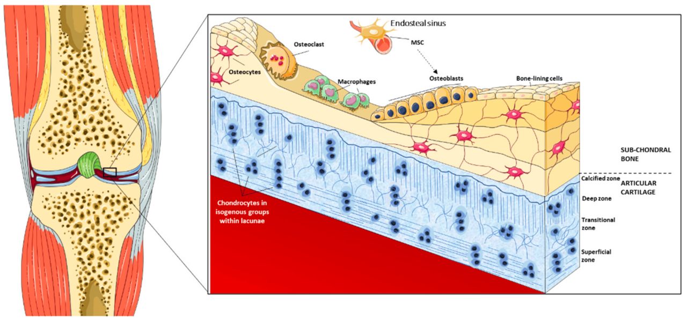
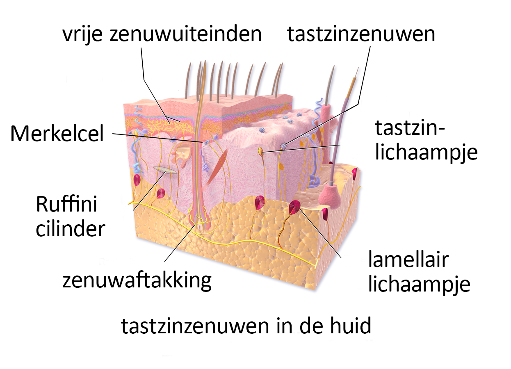
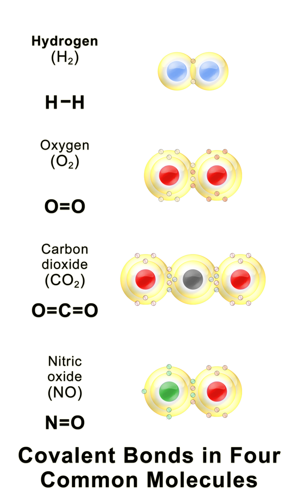
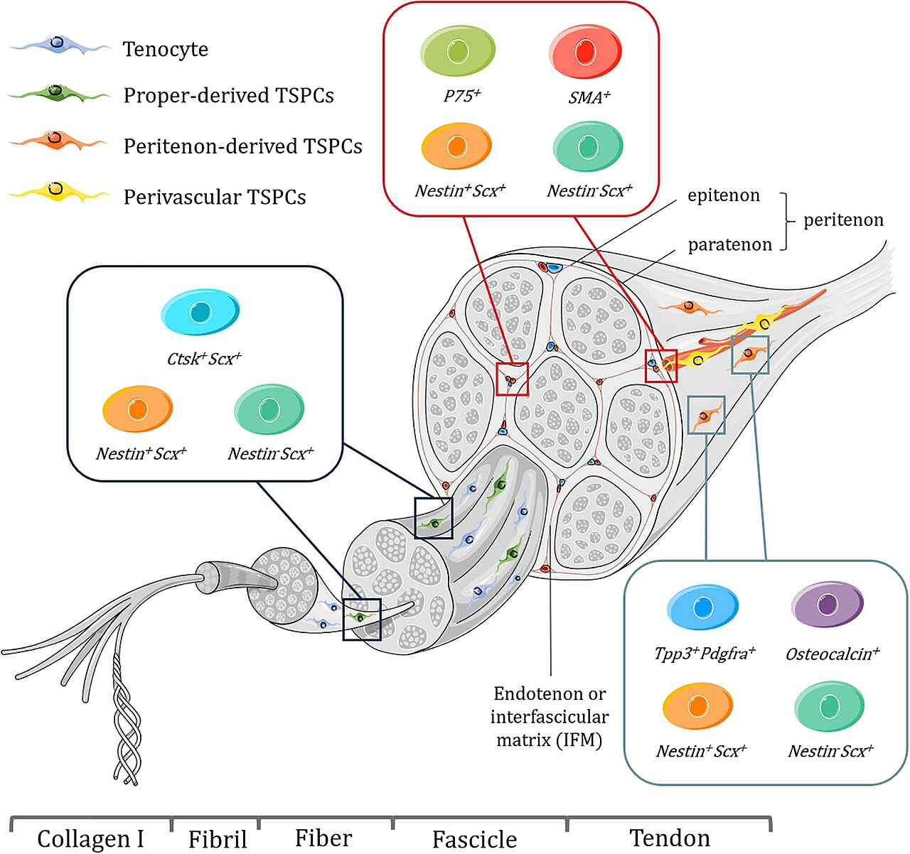
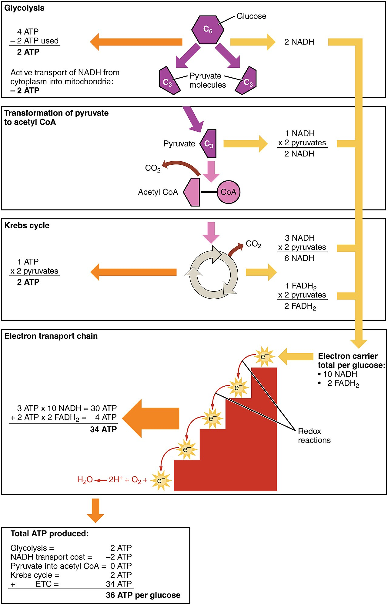
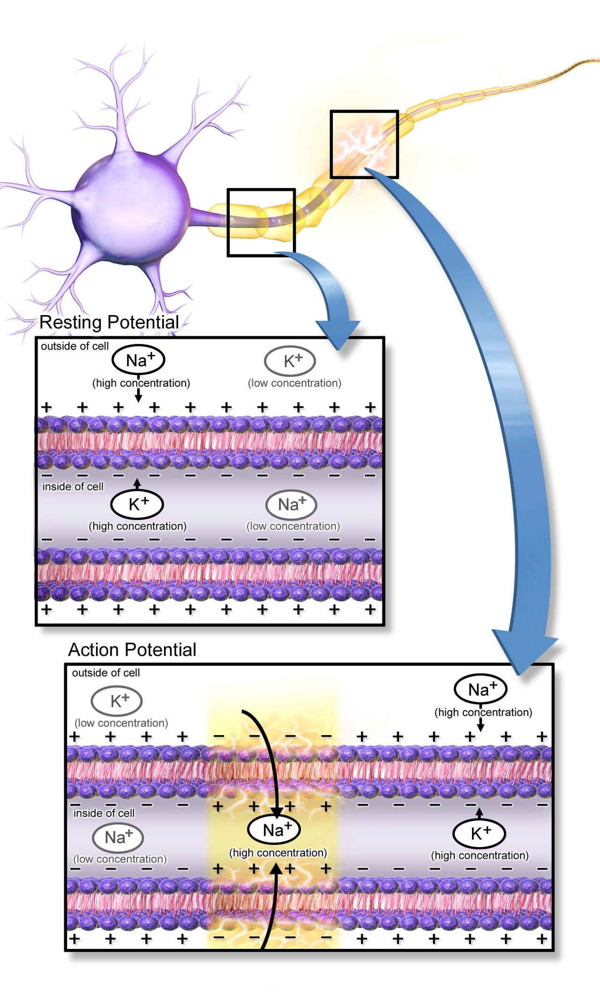
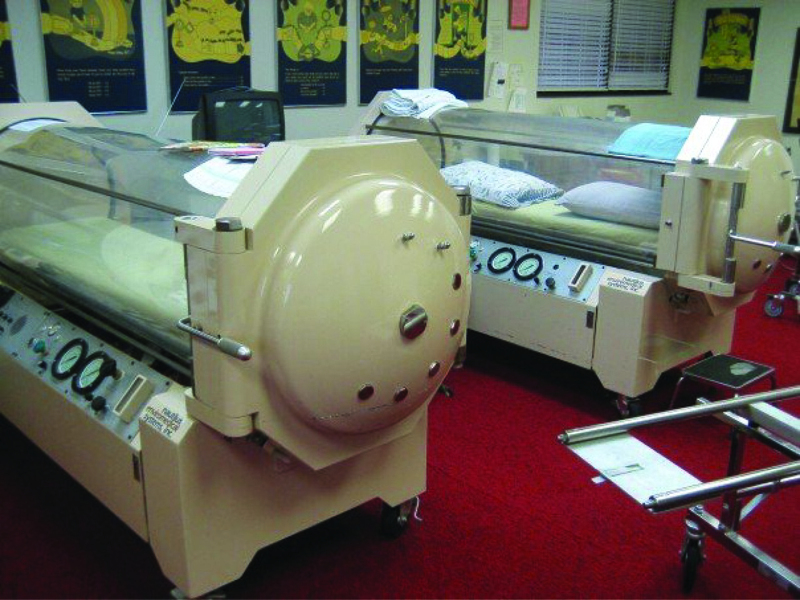
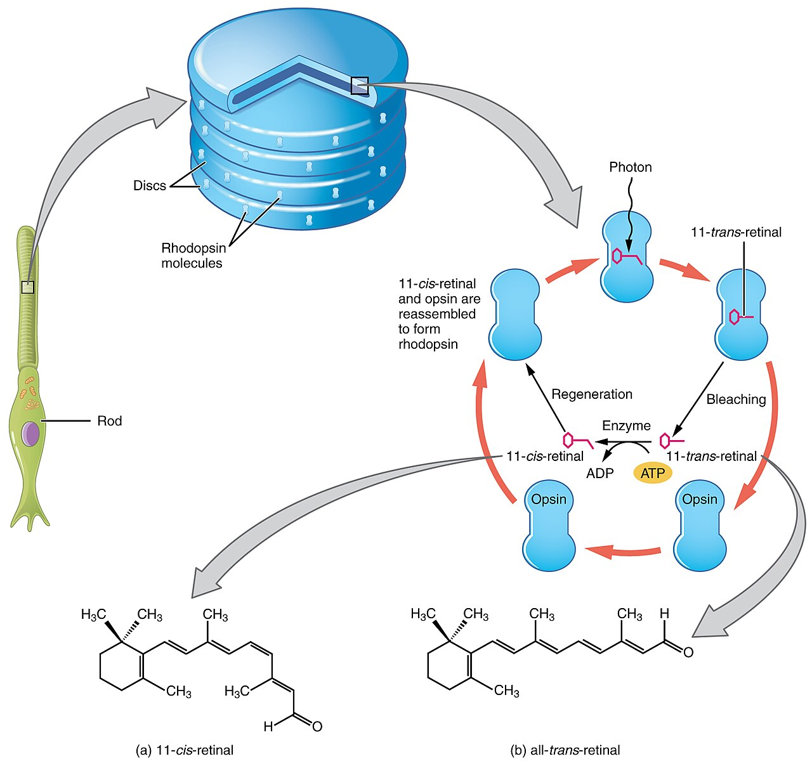
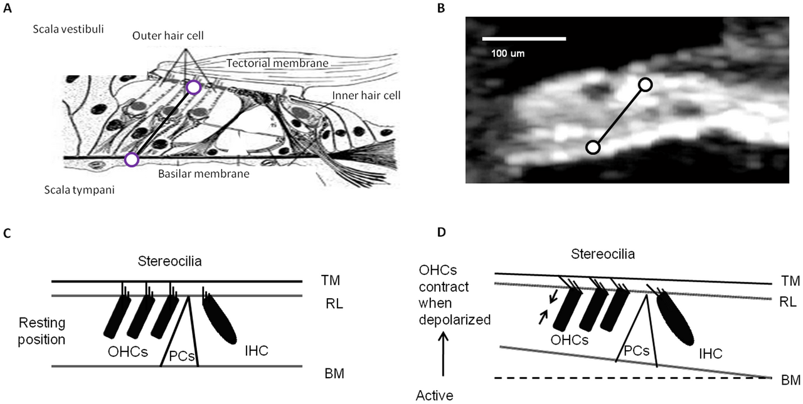
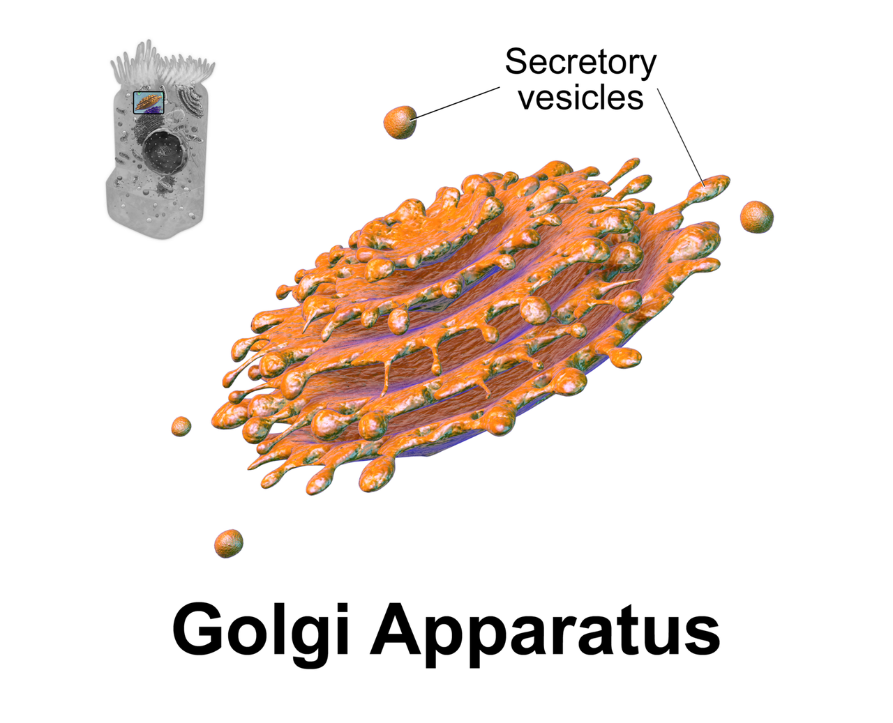

Human Physiology
Intro to Physiology and the Chemical Level
Physiology is the science of how the body works. “How” almost always comes down to the same three things. There is a gradient, a difference that pushes. There is a resistance, something that pushes back. And there is a control loop that watches the result. A molecule moves because a difference in concentration, pressure, or charge pushes it. It moves fast or slow depending on what stands in the way. Whatever it does to the inside of the body gets sensed. That value is compared against a set point. Then it is corrected. Every organ system in this course is a version of that same story. That is why we start at the chemical level. Water, ions, pH, and the four families of biological molecules are not background trivia. They are the physical machinery that gradients act on. Learn why sodium sits outside the cell and potassium sits inside. Learn why blood pH is guarded within 0.1 units. Learn why heat wrecks protein shape. Half of the rest of physiology then becomes predictable instead of memorized.
By the end of this module you can
- Say what physiology means. It is the study of mechanism, of how a thing works. Place any structure at the right level of organization, from atom to organism.
- Use the flow rule Q = ΔP / R for blood flow, airflow, and ion movement. Name the driving force and the resistance each time.
- Draw a negative feedback loop. Label the regulated variable, the sensor, the integrator, the effector, and the response. Use body temperature and the baroreflex as your examples.
- Tell negative feedback from positive feedback. Explain why labor, clotting, and the action potential upstroke are fair exceptions.
- Compare ionic, polar covalent, nonpolar covalent, and hydrogen bonds. Predict what will dissolve in water from how polar the bond is.
- Work out plasma osmolality and say what it means. Tell osmolarity from tonicity using effective and ineffective osmoles.
- Use the Henderson–Hasselbalch relationship. Explain how the bicarbonate buffer, the lungs, and the kidneys hold arterial pH at 7.35 to 7.45.
- Link protein shape to enzyme activity. Explain denaturation, activation energy, and saturation in body terms.
- Describe how a cell spends ATP. Say why the Na+/K+ ATPase uses roughly a fifth to a third of resting energy.
Section 1Physiology asks how, not what

Mechanism is the whole point
Anatomy asks what a structure is called and where it sits. Physiology asks what it does. It asks what forces make it do that. It asks what happens when those forces change. The two belong together. A structure’s shape is usually the reason it acts the way it does. In this course, anatomy always serves function. In Module 12 you meet the alveolus, the air sac of the lung. You will care that its wall is about 0.5 μm thick. That thinness is what lets oxygen cross in about 0.25 seconds. When you meet the loop of Henle in Module 14, watch its two limbs. The descending limb lets water through. The ascending limb does not. That one difference is the whole trick behind concentrating urine.
So the right question to ask about any new topic is short. What is the driving force? What is the resistance? What is being regulated? Physiology is a small number of ideas used over and over. Blood flowing through vessels. Air flowing through airways. Filtration at the glomerulus, the filter unit of the kidney. Oxygen spreading into a capillary. Sodium sliding through an open channel. All five are the same sentence. Something moves down a gradient. Its speed is set by whatever pushes back.
This is also why physiology leans on numbers and anatomy does not. Saying the heart pumps “a lot” of blood tells you nothing. Saying it pumps about 5 L/min at rest tells you something real. A healthy adult reaches 20 to 25 L/min at peak exercise. An elite endurance athlete reaches 35 L/min or more. Those numbers show what the system can do, and what failing looks like. Hold on to the numbers all through this book. Normal ranges are the reference points. Every problem you meet in your later nursing courses is defined against them.
Levels of organization, and why they matter functionally
The body is built in layers. Atoms join into molecules. Molecules build organelles, the small working parts inside a cell. Organelles build cells. Cells build tissues. Tissues build organs. Organs build organ systems. Organ systems build an organism. That list is usually taught as a vocabulary drill. Treat it as a chain of explanation instead. Each level is the mechanism of the level above it. The organism holds blood pressure steady because organs act as pumps and resistors. Those organs are the heart, the vessels, and the kidney. The heart contracts because muscle cells shorten. Muscle cells shorten because myosin heads split ATP and pull on actin. Myosin can do that because of the chemistry of one phosphoanhydride bond. Follow the chain far enough and every body function ends up in chemistry. That is why this module starts there.
An organ is a working unit made of at least two tissue types together. An organ system is a group of organs that share one job. The difference matters at the bedside. Failure at one level shows up at another. Take a single changed letter in one hemoglobin gene. That is the molecular level. It makes sickled red blood cells at the cell level. It plugs vessels at the tissue level. It kills bone, spleen, and lung tissue at the organ level. Nothing in that chain is mysterious. The levels cause one another.
| Level | Example | The question it answers |
|---|---|---|
| Chemical (atoms, ions, molecules) | Na+, K+, water, ATP, glucose | What are the gradients and fuels made of? |
| Organelle | Mitochondrion, sarcoplasmic reticulum | Where is energy made? Where is calcium stored? |
| Cell | Cardiac myocyte, nephron epithelial cell | What is the smallest unit that does the job? |
| Tissue | Cardiac muscle, simple squamous epithelium | How do matching cells work together? |
| Organ | Heart, kidney, lung | How do a few tissues make a pump, a filter, or an exchanger? |
| Organ system | Cardiovascular, renal, respiratory | Which organs share the care of one regulated value? |
| Organism | The patient | Is the inside of the body being held steady? |
One equation, many systems: Q = ΔP / R
The most useful relationship in physiology is the flow equation. It works like Ohm’s law from electricity: Q = ΔP / R. Q is flow. ΔP is the pressure difference driving it. R is resistance, the opposition to flow. In the body’s main circulation, Q is cardiac output, about 5 L/min at rest. ΔP is mean arterial pressure minus right atrial pressure. That is roughly 93 minus 4, so about 89 mm Hg. R is total peripheral resistance, and arterioles set most of it. In the airway, Q is airflow. ΔP is the gap between the pressure outside and the pressure in the alveoli. That gap is only about 1 to 2 mm Hg during quiet breathing. R is airway resistance, and medium-sized bronchi set most of it.
Resistance in a tube follows Poiseuille’s relationship. R rises with the thickness of the fluid. It rises with the length of the tube. R falls with the fourth power of the radius. That fourth power does a lot of work. It is why arterioles, not arteries, control blood flow. It is why a narrow bronchiole matters so much. Halve its radius in an asthma attack and resistance rises sixteen-fold. Almost nothing else in the body has that kind of leverage. So look for fine control of flow. Where you find it, you find a tube wrapped in smooth muscle. That tube can change its radius.
The same skeleton fits movement that is not bulk flow. For a solute crossing a membrane, the driving force is a concentration difference. For ions, an electrical difference pushes as well. The resistance is the membrane itself. It sets how hard the crossing is for that solute. For heat, the gradient is temperature. For water, it is osmotic and hydrostatic pressure. Name the gradient and name the resistance. An unfamiliar system turns into a familiar one.
Physiology explains function as flow. Something moves down a gradient against a resistance. The rule is Q = ΔP / R. It works the same way for blood, air, solutes, water, and heat.
Section 2Homeostasis and the logic of feedback

The five parts of a control loop
Homeostasis is keeping the inside of the body fairly steady. The outside world changes anyway. Claude Bernard called that inside world the milieu intérieur, French for the internal environment. He pointed out that the freedom of complex animals depends on it. A cell puts up with only a narrow range. That covers temperature, pH, osmolality, and ion concentration. Osmolality is how concentrated a fluid is. So the organism must hold those conditions steady around every single cell. The outside world gets no vote.
The machinery is always the same. There is a regulated variable, the thing being held steady. That is core temperature, mean arterial pressure, plasma glucose, arterial pH, or plasma osmolality. There is a sensor, also called a receptor, that measures it. There is an integrator, or control center. It compares the measured value to a set point and works out the error. It usually sits in the hypothalamus, the brainstem, or a hormone gland. There is an effector that the integrator gives orders to. That is a muscle, a gland, or a transport protein. And there is a response that moves the variable back toward the set point. The sensor then measures it again. The loop closes on itself. That is what makes it feedback and not a one-way reflex.
Temperature control shows every part clearly. Core temperature sits near 37.0 °C. It normally runs from about 36.5 to 37.5 °C. It swings roughly 0.5 °C across the day. Two sets of sensors report in. Central thermoreceptors sit in the preoptic area of the hypothalamus. Peripheral thermoreceptors sit in the skin. The hypothalamus is the integrator. The effectors are skin arterioles, sweat glands, and skeletal muscle. Cool the body and the skin arterioles narrow. That can cut skin blood flow from about 250 mL/min to under 30 mL/min. Body hair stands up, and shivering begins, which raises heat production several-fold. Warm the body and the vessels widen and you sweat. Sweating removes about 580 kcal for every liter that evaporates.
Why negative feedback corrects but never perfects
Negative feedback works against the direction of change. A rise sets off a response that lowers. A fall sets off a response that raises. Two things follow that students often miss. First, a negative feedback loop oscillates. Sensing, comparing, and responding all take time. So the fix arrives a little late and overshoots. The variable hunts around the set point instead of sitting on it. Core temperature, plasma glucose, and arterial pressure all trace small waves. The graph of a healthy variable is never a flat line.
Second, a proportional negative feedback system fixes only part of the disturbance. The size of the response depends on the size of the error. So the error can never reach zero while the response is still needed. Physiologists call this gain. The baroreflex has a gain of roughly 2 to 3. So it removes about two-thirds to three-quarters of a sudden pressure change. It does not remove all of it. This is exactly why blood pressure still drops when a patient stands up quickly. The reflex softens the fall. It does not abolish it.
The baroreflex is worth memorizing as the template. It is the reflex that guards blood pressure. Stretch receptors sit in the carotid sinus and the aortic arch. They fire in step with how far the artery wall is stretched. Their traffic runs along cranial nerves IX and X. It ends at the cardiovascular centers in the medulla. When pressure falls, baroreceptor firing falls. The medulla then turns parasympathetic outflow down and sympathetic outflow up. Heart rate, contractility, and vessel narrowing all rise. That raises cardiac output and total peripheral resistance. Mean arterial pressure rises too, since MAP = CO × TPR. The whole loop runs within one to two heartbeats. That is why it is the body’s first defense against bleeding. It is the first defense against standing up too.
| Loop | Variable (normal range) | Sensor | Integrator | Effectors and response |
|---|---|---|---|---|
| Temperature control | Core temperature (36.5 to 37.5 °C) | Heat sensors in the hypothalamus and skin | Preoptic hypothalamus | Skin arterioles, sweat glands, skeletal muscle. Widen and sweat, or narrow and shiver |
| Baroreflex | Mean arterial pressure (about 70 to 100 mm Hg) | Stretch sensors in the carotid sinus and aortic arch | Cardiovascular centers in the medulla | Heart and arterioles. Change heart rate, contractility, and resistance within seconds |
| Glucose control | Plasma glucose (fasting 70 to 99 mg/dL) | Beta and alpha cells in the pancreas | The islet cells themselves, acting as a gland | Liver, muscle, fat. Insulin stores glucose, glucagon releases it, over minutes to hours |
| Water balance | Plasma osmolality (275 to 295 mOsm/kg) | Concentration sensors in the hypothalamus | Hypothalamus and back of the pituitary | Kidney collecting duct, using ADH. Water is kept or passed out, plus thirst |
Positive feedback and feedforward: the honorable exceptions
Positive feedback makes the original change bigger instead of opposing it. So it is unstable by nature. It drives a variable fast toward an endpoint. The body uses it on purpose. It picks the spots that need an endpoint. A steady state is not the goal there. In labor, the fetal head presses on the cervix. That triggers oxytocin release. Oxytocin strengthens the uterine contraction, which pushes the head harder against the cervix. The loop breaks only at delivery. Hemostasis is the making of a blood clot. Activated platelets release ADP and thromboxane A2. Those pull in more platelets. Activated thrombin drives the making of more thrombin. That loop breaks when the plug seals the vessel. The body’s own anticoagulants then fence it in. In the action potential upstroke, sodium entry depolarizes the membrane. That opens more voltage-gated sodium channels, which lets in more sodium. That loop breaks when those channels inactivate within about one millisecond.
Notice the pattern. Every positive feedback loop in the body is short. Each one has a definite stopping event. Each one gives an explosive, all-or-none result. When positive feedback escapes its brake, it becomes disease. Disseminated intravascular coagulation is one example. So is the downward spiral of cardiogenic shock. Falling blood flow to the heart weakens the very pump that makes that flow.
Feedforward control is a third pattern worth naming. Here the body acts ahead of a disturbance instead of waiting to sense it. The cephalic phase of digestion releases saliva, stomach acid, and insulin. The sight and smell of food is enough to start it. Not one glucose molecule has been absorbed yet. Heart rate climbs at the start of exercise. No waste product has built up yet. Feedforward is fast but blind. Negative feedback always corrects it in the end. Negative feedback is the system that knows the truth.
Negative feedback is the organizing idea of the whole course. It has five parts. They are the variable, the sensor, the integrator, the effector, and the response. Positive feedback shows up only where a fast, self-stopping endpoint is the goal.
Section 3Atoms, bonds, water, and the body fluids

Bonds decide behavior
Only about two dozen elements show up in the body. Four of them make up roughly 96 percent of body mass. They are oxygen, carbon, hydrogen, and nitrogen. What matters in physiology is not the list. It is the electrons. An atom’s outer shell decides whether it gives electrons away, takes them, or shares them. That decides what kind of bond it makes. And the bond decides how it behaves in water.
Ionic bonds form when one atom hands an electron over outright. Sodium chloride, table salt, is the example. In a dry crystal the pull is strong. In water the ions come apart almost completely. That is why the body’s ionic compounds float free as electrolytes. Electrolytes are particles that carry an electrical charge. Na+, K+, Cl-, Ca2+, and HCO3- are the ones to know. They carry charge and build the gradients that drive membrane potentials. Covalent bonds share electrons instead, and they are much stronger. A carbon–carbon bond runs roughly 350 to 400 kJ/mol. That is why the carbon skeletons of biological molecules hold together at body temperature. It is why enzymes have to take them apart. Sometimes the sharing is uneven, as between oxygen and hydrogen. Then the bond is polar covalent, and the molecule carries partial charges. Sometimes it is even, as between two carbons. Then the bond is nonpolar, and the molecule will not dissolve in water.
Hydrogen bonds are weak attractions. They pull a slightly positive hydrogen toward a slightly negative oxygen or nitrogen nearby. One on its own is feeble, about 20 kJ/mol. That is roughly a twentieth of a covalent bond. They break and re-form constantly at 37 °C. As a group, though, they decide a lot. They hold the alpha helix of a protein. They hold the double helix of DNA. They hold the liquid structure of water itself. Their weakness is the design feature. Physiology needs shapes it can build, hold, and release within milliseconds. Only a bond that ordinary heat can break is fast enough for that.
Water is not a passive background
Water is 55 to 60 percent of adult body mass. That is about 42 L in a 70 kg man. It is somewhat less in women and in older people. Fat tissue holds little water. Four properties earn water that share. It is an excellent solvent for polar and charged substances. Its partial charges wrap each ion in a shell of water. That is how nutrients, wastes, gases, and hormones travel dissolved in plasma. It has a high specific heat, 4.18 J per gram per °C. So large heat loads change core temperature only slowly. That buys the temperature loop time to respond. It has a very high heat of vaporization. Evaporating one liter of sweat removes roughly 580 kcal. It is the single most powerful cooling tool the body has. And water takes part in the chemistry itself. It is used in every hydrolysis reaction that breaks a polymer apart. It is used in every dehydration synthesis that builds one.
Water molecules also cling to one another, and that creates surface tension. It matters more than it sounds. In the alveolus, the air–water surface pulls inward and tries to collapse the sac. Laplace’s relationship describes that pull: P = 2T / r. Small alveoli would empty into large ones if nothing stopped them. Surfactant stops them. It lowers T more and more as the alveolus shrinks. That is a Module 12 problem, but it is a Module 1 chemistry fact.
Compartments, osmolality, and tonicity
Body water is not one pool. About two-thirds of it, roughly 28 L, is intracellular fluid (ICF), the water inside cells. The other third, roughly 14 L, is extracellular fluid (ECF), the water outside cells. About three-quarters of the ECF is interstitial fluid, the water between cells, at 10.5 L. The other quarter is plasma, at 3.5 L. The barrier between ICF and ECF is the plasma membrane. Water crosses it freely, but most solutes cannot. The barrier between plasma and the fluid between cells is the capillary wall. Water and small solutes cross it, but plasma proteins cannot. Because those barriers differ, the fluids differ in ways worth memorizing. Sodium is about 140 mEq/L outside the cell and only 10 to 15 mEq/L inside. Potassium is 3.5 to 5.0 mEq/L outside and 140 to 150 mEq/L inside. Free calcium inside the cell is held near 100 nmol/L. Ionized calcium in the ECF runs 1.1 to 1.3 mmol/L. The level inside is roughly ten thousand times lower. The gradient is that steep. Open a calcium channel for a few milliseconds. That alone sets off a contraction or a secretion.
Osmolarity counts dissolved particles per liter of solution. Osmolality counts them per kilogram of water. In dilute body fluids the two are close enough to use either way. Normal plasma osmolality is 275 to 295 mOsm/kg. You can estimate it as 2 × [Na+] + glucose/18 + BUN/2.8. Use glucose and urea nitrogen in mg/dL. Sodium and its partner anions supply most of plasma osmolality. That is why sodium balance and water balance cannot be pulled apart in Module 14.
Tonicity is a different idea, and it is more useful at the bedside. It counts only the effective osmoles. Those are the particles that cannot cross the membrane. So they are the ones that actually pull water. Water always moves from lower to higher effective osmolality, and it moves fast. It evens out across a cell membrane in seconds. A hypotonic setting swells cells. A hypertonic one shrinks them. In the brain, the skull allows no swelling. That is why correcting a sodium problem too fast is dangerous. It is also why 0.9 percent saline is the default fluid for resuscitation. That saline is about 308 mOsm/L, near enough to isotonic.
Diffusion, and why distance is the enemy
Diffusion is the net movement of particles from higher to lower concentration. Random heat-driven motion does it. Fick’s law gives the rate: J = D × A × ΔC / Δx. J is the net flux, the amount that crosses. D is the diffusion coefficient, how easily that substance moves. A is the surface area on offer. ΔC is the concentration difference. Δx is the distance to be crossed. Read that equation as a design brief. You can then predict the shape of every exchange surface in the body. Maximize area. Minimize thickness. Keep the gradient up. The lung offers roughly 70 m2 of alveolar surface across a 0.2 to 0.5 μm barrier. The small intestine multiplies its area with folds, villi, and microvilli to some 200 m2. The systemic capillary bed offers hundreds of square meters with walls one cell thick.
The cruel part of diffusion is the distance term. The time to diffuse rises with the square of the distance. A molecule needs microseconds to cross 1 μm. It needs milliseconds to cross 10 μm. It needs minutes to move a millimeter. That single fact is why multicellular animals need a circulatory system at all. It is why no cell sits far from a capillary. The limit is about 100 μm. It is also why edema causes hypoxia, a shortage of oxygen in the tissue. Extra fluid between the cells widens Δx. So flux falls, even though the oxygen gradient has not changed.
Water’s polarity gives the body its solvent, its compartments, and its osmotic gradients. Only solutes that cannot cross a membrane create tonicity. Diffusion is fast only across micrometer distances.
Section 4Acids, bases, and the defense of pH

What pH actually measures
An acid gives away hydrogen ions. A base takes them up. pH is the negative logarithm of the hydrogen ion concentration. Two things follow from that. It runs backwards, so a low pH means a high H+ concentration. And it is logarithmic, so every whole unit is a ten-fold change. Arterial blood is held between pH 7.35 and 7.45. That comes out to a hydrogen ion concentration of only 35 to 45 nmol/L. Use 40 nmol/L as the reference. Inside cells, pH runs a little lower, near 7.0 to 7.2. Values below 6.8 or above 7.8 are generally not survivable for more than a short time.
Why does so tiny a concentration matter so much? Because hydrogen ions grab hard onto the negatively charged side chains of proteins. That changes their shape. Enzyme active sites depend on where the charge sits. So do ion channel gates, hemoglobin’s grip on oxygen, and receptor binding pockets. Shift the pH by 0.2 units and thousands of proteins shift shape with it. Acidemia is too much acid in the blood. It weakens the heart’s squeeze and blunts how vessels answer catecholamines. Alkalemia, too little acid, lowers ionized calcium by making more of it stick to albumin. That is why a hyperventilating patient gets tingling around the mouth. It is why the hands and feet cramp.
The acid load the body has to get rid of is large. Aerobic metabolism makes roughly 200 mL of carbon dioxide per minute. That gets hydrated to carbonic acid. It adds up to about 15,000 mmol of volatile acid daily. Breaking down protein and phospholipid adds more. That makes 50 to 100 mEq of fixed acid per day. The body still holds H+ at 40 nmol/L. That is one of its most impressive regulatory feats.
Buffers and the bicarbonate system
A buffer is a weak acid paired with its matching base. The pair soaks up added H+ or OH- with only a small change in pH. The body’s main buffer outside cells is the carbonic acid and bicarbonate pair. One reaction ties them together: CO2 + H2O ↔ H2CO3 ↔ H+ + HCO3-. An enzyme called carbonic anhydrase speeds that reaction up enormously. It does so in red blood cells and in kidney tubule cells.
The Henderson–Hasselbalch equation captures how it behaves: pH = 6.1 + log([HCO3-] / (0.03 × PaCO2)). Put in the normal values. Bicarbonate is 24 mEq/L and PaCO2 is 40 mm Hg. So the bottom of the fraction is 1.2 mmol/L. You get pH = 6.1 + log(20) = 6.1 + 1.3 = 7.4. Understand this equation rather than memorize it. It tells you the one thing that matters at the bedside. pH depends on the ratio of bicarbonate to dissolved carbon dioxide. It does not depend on either value alone. A patient can have a badly abnormal bicarbonate and a near-normal pH. PaCO2 only has to move the same way. That is exactly what compensation means.
On paper the bicarbonate system looks like a poor buffer. Its pK is 6.1, more than a unit away from 7.4. Buffers work best near their pK. It works superbly anyway, because it is an open system. The lungs can blow off the CO2 side. The kidneys can rebuild the HCO3- side. So neither part is ever used up. Other buffers matter too. Phosphate is important inside cells and in urine. Proteins, hemoglobin among them, handle roughly half of the total load. Bone carbonate soaks up long-term acid burdens. But only the bicarbonate system has two whole organs dedicated to adjusting it.
Three lines of defense, on three timescales
The body defends pH in a set order. Chemical buffers act within seconds, but they only spread the load around. Respiratory compensation acts within minutes. Central chemoreceptors in the medulla sense the drop in cerebrospinal fluid pH that CO2 causes. Peripheral chemoreceptors in the carotid and aortic bodies add their own signal. Breathing rises and PaCO2 falls. PaCO2 sits on the bottom of the Henderson–Hasselbalch fraction. So blowing off carbon dioxide raises pH. Kussmaul respirations in diabetic ketoacidosis are this loop running at full power. Renal compensation is slow and takes hours to days. It is also the only route that permanently removes fixed acid. The kidney pushes H+ into the tubule. It buffers that H+ with phosphate and ammonia. Then it reclaims or builds new bicarbonate.
From this you can read any simple acid–base problem. A primary problem in PaCO2 is respiratory. A primary problem in bicarbonate is metabolic. Compensation always moves the other value in the same direction as the first change. It never fully normalizes the pH. That is the Section 2 rule again. Proportional feedback corrects most of an error, never all of it. Say the pH is fully normal but both values are abnormal. Suspect a mixed disorder, not perfect compensation.
| Quantity | Normal value | What it means |
|---|---|---|
| Arterial pH | 7.35 to 7.45 | Ratio of bicarbonate to dissolved CO2 |
| [H+] | 35 to 45 nmol/L (about 40) | The particle actually being regulated |
| PaCO2 | 35 to 45 mm Hg | The breathing side. It is adjusted in minutes |
| Serum HCO3- | 22 to 26 mEq/L | The metabolic side. It is adjusted in hours to days |
| PaO2 | 80 to 100 mm Hg | Oxygen level. It is separate from acid–base status |
| Volatile acid load | About 15,000 mmol CO2 per day | Removed entirely by the lungs |
| Fixed acid load | 50 to 100 mEq per day | Removed only by the kidneys |
Arterial pH is set by the ratio of [HCO3-] to (0.03 × PaCO2). It is defended in three stages. Buffers act in seconds, breathing acts in minutes, and the kidneys act over days.
Section 5Macromolecules, enzymes, and the ATP economy

Four families, four jobs
Biological molecules are built by dehydration synthesis. That reaction pulls out a water molecule to join two building blocks. They are taken apart by hydrolysis. That reaction puts a water molecule back in to break the bond. Every digestive enzyme in Module 13 runs a hydrolysis reaction. So does every breakdown step in metabolism. What sets the four families apart is not really their chemistry. It is the problem each one solves for the body.
Carbohydrates solve the problem of fast fuel that dissolves in water. Glucose circulates at 70 to 99 mg/dL fasting. It is stored as glycogen in the liver, roughly 100 g. That buys only about 12 hours of fasting glucose. After that gluconeogenesis, the making of new glucose, must take over. Skeletal muscle stores roughly 400 g more, but muscle can use that only locally. Glucose is also the brain’s required fuel under normal conditions. The brain uses about 120 g per day. Lipids solve two problems. The first is dense storage. Fat carries 9 kcal/g against 4 kcal/g for carbohydrate and protein. The second is building membranes. The phospholipid bilayer exists because these molecules are amphipathic. They carry a polar phosphate head that likes water. They also carry two nonpolar fatty acid tails that do not. So they line themselves up into a barrier. That barrier separates ICF from ECF and makes every gradient in this book possible. Steroids are built on a four-ring cholesterol skeleton. They are lipid enough to cross membranes freely. That is why steroid hormones have receptors inside the cell. It is why their effects are slow and work through gene transcription.
Proteins solve the problem of specificity. They are the enzymes, channels, pumps, transporters, receptors, antibodies, and contractile filaments. Nucleic acids solve the problem of information. DNA stores it and RNA carries it to the ribosome. Notice how directly each class maps onto a later module. Membranes go to Module 2. Contractile proteins go to Module 5. Steroid hormones go to Module 8. Plasma proteins and oncotic pressure go to Module 9.
| Class | Monomer | The job it does | Numbers worth knowing |
|---|---|---|---|
| Carbohydrate | Monosaccharide (glucose) | Fast fuel, and glycocalyx name tags on the cell surface | 4 kcal/g. Fasting glucose 70 to 99 mg/dL. The brain uses about 120 g/day |
| Lipid | Fatty acid and glycerol | Energy store, membranes, and steroid hormones | 9 kcal/g. A membrane is about 7 nm thick |
| Protein | Amino acid (20 kinds) | Enzymes, pumps, channels, receptors, contraction | 4 kcal/g. Serum albumin 3.5 to 5.0 g/dL. It supplies most of the roughly 25 mm Hg plasma oncotic pressure |
| Nucleic acid | Nucleotide | Storing information and passing it on | About 3 billion base pairs. Roughly 20,000 protein-coding genes |
Shape is function, and heat destroys shape
A protein starts as a string of amino acids. That is its primary structure. The string folds into local helices and sheets held by hydrogen bonds. That is the secondary structure. Those fold again into one three-dimensional shape, the tertiary structure. Hydrogen bonds, ionic attractions, disulfide bridges, and hydrophobic clustering hold it there. Sometimes several folded chains join into one unit. That is the quaternary structure, as in hemoglobin’s four chains. Only the folded shape works. A receptor binds its ligand because a pocket fits it. A channel picks potassium over sodium for the same reason. Its filter is a ring of carbonyl oxygens, spaced just so.
All of that except the disulfide bond is weak-bond chemistry. So the shape is fragile. Denaturation is the loss of that three-dimensional shape without breaking the peptide bonds. Heat causes it. So do pH extremes, heavy metals, and organic solvents. Human enzymes work best near 37 °C. They begin to lose activity above about 41 to 42 °C. So a core temperature above 40 °C is a medical emergency. It is not just an uncomfortable fever. The same logic covers pepsin and trypsin. Stomach pepsin works at pH 2. Pancreatic trypsin works at pH 8. Each folds correctly only in its own setting. So pepsin shuts down the moment chyme is neutralized in the duodenum.
Enzymes speed reactions up by lowering the activation energy. That is the hump a reaction must climb before it can go. Enzymes do not change whether a reaction is favorable, and they are not used up. Their rate climbs as substrate rises, until every active site is busy. After that the enzyme is saturated and the rate levels off. Saturation is not an abstract idea. It is why the kidney’s glucose reabsorption has a transport maximum. That ceiling sits near a plasma glucose of 180 to 200 mg/dL. Above that, glucose spills into the urine. It is also why some drugs shift from first-order to zero-order elimination at high doses.
ATP: the currency, not the savings account
ATP is adenosine with three phosphates on it. Splitting off the last phosphate leaves ADP plus free phosphate. That releases about 30.5 kJ/mol under standard conditions. Inside a real cell it is closer to 50 kJ/mol. The energy is coupled to work. A pump moves an ion uphill. A myosin head swivels. A synthetase builds a bond. Coupling is the key idea. Cells do not burn fuel into heat and hope for the best. They hand the energy to one specific protein at one specific step.
Cells hold only about 5 mmol/L of ATP. That is enough to run a working muscle for a few seconds. What sustains life is not storage. It is turnover. An adult rebuilds roughly their own body weight in ATP over 24 hours. Exercise pushes that figure much higher. Aerobic metabolism of one glucose molecule yields roughly 30 to 32 ATP. Anaerobic glycolysis yields only 2. So oxygen delivery matters enormously. Much of the cardiovascular and respiratory system exists to protect it.
Where does the ATP go? A large share goes to holding the gradients you met in Section 3. The Na+/K+ ATPase pumps 3 Na+ out and 2 K+ in for every ATP. It moves net charge, so it is electrogenic. It uses on the order of 20 to 30 percent of resting metabolic rate. In a neuron it takes more than half the energy budget. That spending holds the resting membrane potential near -70 mV. It keeps cells from swelling. It powers secondary active transport of glucose, amino acids, and calcium. So most of the energy in a resting body goes to keeping chemical gradients loaded. Later a signal arrives. The cell then only has to open a gate and let physics do the work.
Function follows molecular shape. Enzymes work only inside narrow temperature and pH windows. And most resting ATP is spent holding ion gradients. Those gradients later do the body’s work.
The module in one breath
Physiology explains function as flow. Something moves down a gradient at a rate set by a resistance. Q = ΔP / R sums that up. It fits blood, air, ions, water, and heat alike. Radius enters resistance to the fourth power, so small tubes control large flows. A negative feedback loop watches whatever the flow achieves. It has five parts: regulated variable, sensor, integrator, effector, and response. That loop corrects most of a disturbance but never all of it. It also oscillates, because responses arrive late. Positive feedback shows up only where an explosive, self-stopping endpoint is wanted. Labor, clotting, and the action potential upstroke are the three examples. The chemistry underneath makes all of this possible. Water’s polarity gives the solvent and the hydration shells. It gives the heat buffering. It gives the 580 kcal per liter of evaporative cooling. Membranes split 42 L of body water into 28 L inside cells and 14 L outside. Sodium sits outside and potassium sits inside. Only solutes that cannot cross create tonicity. pH is held at 7.35 to 7.45 by the ratio of bicarbonate to dissolved carbon dioxide. Buffers defend it in seconds, the lungs in minutes, and the kidneys in days. Proteins work only when folded correctly. Enzymes saturate. And roughly a quarter of resting ATP is spent holding gradients ready for use.
Words worth knowing
| Term | What it means |
|---|---|
| Physiology | The study of how living structures work. It looks at mechanism, driving forces, and control, not at naming. |
| Homeostasis | Keeping the inside of the body fairly steady with control loops. The outside can change all it likes. |
| Set point | The target value a control system defends. The body can reset it on purpose, as it does in fever. |
| Negative feedback | A loop whose response works against the original change. It brings the variable most of the way back to its set point. |
| Positive feedback | A loop whose response makes the original change bigger. It is used only where a fast, self-stopping endpoint is needed. |
| Feedforward | Control that acts before the disturbance is even sensed. Insulin released at the sight of food is one example. |
| Gradient | A difference in concentration, pressure, charge, or temperature between two points. It is the driving force for all movement. |
| Resistance | The opposition to flow. In a tube it falls with the fourth power of the radius. |
| Electrolyte | A substance that splits into ions in water, so it can carry charge. Na+, K+, Cl-, and HCO3- are examples. |
| Polar covalent bond | A shared-electron bond where the sharing is uneven. That makes partial charges, as it does in water. |
| Hydrogen bond | A weak pull between a slightly positive hydrogen and a nearby slightly negative atom. One is fragile. Many together decide protein and DNA shape. |
| Amphipathic | Having a water-loving part and a water-fearing part. That is what lets phospholipids line up into membranes. |
| Osmolality | Solute particles per kilogram of water. Normal plasma runs 275 to 295 mOsm/kg. |
| Tonicity | What a solution does to cell volume. Only the particles that cannot cross, the effective osmoles, decide it. |
| Diffusion | Net movement of particles down a concentration gradient by heat-driven motion. The rate follows J = D × A × ΔC / Δx. |
| Buffer | A weak acid and its matching base working together to resist a change in pH. |
| Henderson–Hasselbalch equation | pH = 6.1 + log([HCO3-] / (0.03 × PaCO2)). It shows that pH depends on a ratio, not on either term alone. |
| Denaturation | Loss of a protein’s three-dimensional shape, and so of its job. Heat, pH extremes, or chemicals cause it, without breaking peptide bonds. |
| Activation energy | The energy barrier a reaction must cross. Enzymes speed reactions by lowering it, not by changing the outcome. |
| ATP | Adenosine triphosphate, the cell’s ready cash for energy. It sits at only about 5 mmol/L but is rebuilt without pause. |
Check yourself
THE CELLULAR LEVEL OF ORGANIZATION
A cell is not just a bag of chemicals. It is a machine. It spends energy to hold itself away from equilibrium. Every process you study for the rest of this course is a controlled release of a gradient the cell built ahead of time. A nerve fires. A kidney takes sodium back. A muscle shortens. A gland lets go of its product. All four are the same trick. In this module you learn how the plasma membrane works as a barrier that lets only some things through. It has a resistance and a capacitance, like a small electrical part. You learn how water moves by osmosis while solutes move by diffusion, by carrier and by pump. You learn how the Na+/K+ ATPase spends roughly a quarter of your resting calories. That pump holds potassium inside the cell near 140 mM and sodium inside near 12 mM. You then follow information from DNA through transcription and translation to protein. You watch the organelles finish and ship that protein. You see how checkpoints police the cell cycle. When those checkpoints fail, that is cancer. Mechanism comes first here. Structure shows up only where structure explains behavior.
By the end of this module you can
- Explain why the phospholipid bilayer lets gases and lipids through easily but almost blocks ions. Link that to membrane resistance and capacitance.
- Tell apart simple diffusion, facilitated diffusion, primary active transport and secondary active transport. Use three things: driving force, saturability and energy source.
- Use Fick’s law to predict flux across a membrane. Show how surface area, thickness, gradient and lipid solubility change the rate.
- Work out osmolarity and tonicity. Say what each one means. Predict cell volume in hypotonic, isotonic and hypertonic solutions.
- Describe how the Na+/K+ ATPase builds the ion gradients. Those gradients power the resting membrane potential and secondary transport.
- Trace information through the central dogma. It runs from DNA through transcription, RNA processing and translation to a working protein.
- Map the secretory pathway. It runs through rough ER, Golgi apparatus and vesicle. Say what mitochondria, lysosomes and peroxisomes add.
- Draw the cell cycle with its checkpoints. Explain how apoptosis and runaway growth are two ends of one control loop.
- Find the variable, sensor, integrator and effector in at least one cellular negative feedback loop. Cell volume control is a good one.
Section 1The Plasma Membrane as a Selective Barrier

Why a bilayer forms and what that costs a solute
A phospholipid has two ends. The phosphate head hydrogen-bonds happily with water. The two fatty-acid tails cannot. Drop enough of them into water and they line themselves up. They form a sheet two molecules thick. Tails point inward. Heads point outward. Nobody builds this sheet. It is simply the lowest-energy way those molecules can sit. That is also why the membrane seals itself again after a fine glass needle punctures it. What you end up with is a hydrophobic core about 3 nm thick. Hydrophobic means water-repelling. That oily core sits between two watery spaces.
That oily core is the whole story of membrane permeability. To cross it, a molecule has to leave water. Then it has to dissolve in lipid. Then it has to enter water again on the far side. Small non-polar molecules do this easily. Oxygen, carbon dioxide, nitrogen, steroid hormones and the anesthetic gases all cross. Only their gradients limit how fast. Water is polar, but it is small. It trickles across slowly on its own. It moves fast where aquaporins, water channels, are present. Ions do not cross at all in any way that matters to the body. A sodium ion in water wears a shell of water molecules lined up around it. Stripping that shell off to enter lipid costs enormous energy. So the bare bilayer barely lets Na+ through. Its permeability runs on the order of 10−14 cm/s. That is lower than its permeability to oxygen by something like 1014 to 1016 fold. It also sits roughly 1011 times below the bilayer’s permeability to water.
This is why a cell can control what crosses its membrane. The lipid does the shutting out. The proteins do the letting in. Roughly half the mass of a typical plasma membrane is protein. Which channels, which carriers, which pumps, which receptors — that list is what makes one cell act differently from another. A neuron and a hepatocyte, a liver cell, are built on the same lipid. Their proteins are what set them apart.
Fluidity, cholesterol and the membrane as an electrical device
The bilayer is a flat, two-dimensional fluid. Single phospholipids slide sideways within their own layer. They travel several micrometers per second. So a protein can drift to a new spot. Receptors can gather where a signal arrives. Flipping from one layer to the other is a different story. It costs a lot of energy and needs enzymes called flippases. That is why the cell keeps phosphatidylserine on the inner layer. When it shows up on the outer layer, it is a reliable “eat me” flag for apoptosis.
Cholesterol makes up 20–25% of plasma-membrane lipid. It works as a fluidity buffer. At body temperature it wedges between phospholipids and slows their motion. That stiffens the membrane. In the cold it does the opposite. It keeps the lipids from packing tight, so the membrane does not turn to gel. Unsaturated fatty-acid tails have kinks in them. They fight gelling the same way. The target is a middle ground. The membrane has to be fluid enough for proteins to move. It has to stay ordered enough to work as a barrier.
The membrane is also an electrical part. That matters a great deal in Modules 5 and 6. Put a thin insulator between two salt solutions that conduct. You have built a capacitor, a device that stores charge. Membrane capacitance is close to 1 microfarad per square centimeter. That holds in nearly every cell ever studied. It is that steady because bilayer thickness barely varies. The channels alongside it supply conductance, the ease with which charge flows. Together they set a membrane time constant, tau = R × C. It runs roughly 1–20 ms. That is the time the voltage needs to travel 63% of the way to its new value after a step of injected current. That one number explains much of why action potentials rise and spread as fast as they do.
The lipid bilayer keeps ions out and lets fat-soluble molecules through. So the proteins embedded in it, not the lipid, decide what any one cell can move and how fast.
Section 2Transport Across the Membrane: Gradients, Carriers and Pumps

Passive movement and Fick’s law
Diffusion is not a force. It is what random, heat-driven motion adds up to. Put more particles on one side than the other. More of them wander left to right than right to left. Net movement keeps going until the two sides even out. At equilibrium the molecules still move. Only the net flux is zero. Diffusion is fast across the width of a cell. A small solute crosses 10 micrometers in about 50 milliseconds. But the time needed rises with the square of the distance. Crossing 1 cm by diffusion alone would take hours. That one scaling rule is why you have a circulation, an airway tree and villi.
Fick’s law gives the rate of diffusion across a membrane. You should be able to write it and read it: J = (D × A × ΔC) / T. J is flux, the amount that moves. D is the diffusion coefficient of the solute in the membrane. A is the surface area available. ΔC is the concentration difference. T is the thickness of the barrier. Every clinical use in this course is one term in that equation. Emphysema destroys alveolar walls, so A falls. Pulmonary edema thickens the barrier, so T rises. Going up to altitude lowers alveolar oxygen pressure, so ΔC falls. Anemia is the exception worth learning. It lowers oxygen content without lowering the pressure gradient. So it is not a Fick term at all. Microvilli on an enterocyte, a gut lining cell, multiply A by roughly 20-fold. That is how the whole small intestine reaches about 200 square meters of absorbing surface.
Facilitated diffusion is still passive. It still runs down the gradient and still uses no ATP. The difference is that the solute rides on a protein. Channels are water-filled pores with a high throughput, up to 108 ions per second. They can be gated by voltage, by a ligand, or by mechanical stretch. Carriers work another way. A carrier binds the solute, changes shape, and lets it go on the other side. Carriers move perhaps 102–104 molecules per second. A carrier has only so many binding sites. So carrier transport shows saturation (a transport maximum, or Tm), specificity and competition. Simple diffusion shows none of those. Its rate simply climbs in a straight line with the gradient. That contrast is the cleanest way to tell the two apart. It also explains glucosuria, glucose in the urine. SGLT carriers reabsorb filtered glucose until plasma glucose passes roughly 180–200 mg/dL. Past that point Tm is exceeded and glucose spills into the urine.
Primary and secondary active transport
Primary active transport moves a solute against its electrochemical gradient. The transporter itself splits ATP to pay for the trip. The classic example is the Na+/K+ ATPase, and every animal cell has one. It sends 3 Na+ out and brings 2 K+ in per ATP. Those two numbers do not match, so the pump moves net charge. That makes it electrogenic and adds a few millivolts of negativity on its own. Its far larger job is holding the gradients themselves. These values are worth memorizing. Sodium inside the cell runs about 10–15 mM against 140 mM outside. Potassium inside runs about 140–150 mM against 3.5–5.0 mM outside. Holding that costs on the order of 20–30% of basal metabolic rate. It costs a good deal more in tissues such as the kidney and brain. Cardiac glycosides such as digoxin block this pump. That is clean proof the pump is the source of the gradient, not just a passenger. Other primary pumps exist. One is the sarcoplasmic/endoplasmic reticulum Ca2+ ATPase (SERCA). Another is the plasma-membrane Ca2+ ATPase. Another is the H+/K+ ATPase of the gastric parietal cell, the pump that proton-pump inhibitors block.
Secondary active transport is the elegant trick. The cell has already spent ATP to build a steep sodium gradient pointing inward. A cotransporter now lets sodium fall down that gradient. It uses the released energy to drag a second solute uphill. When both move the same direction, the carrier is a symporter. SGLT1 in the intestine hauls glucose in along with sodium. The sodium-linked amino-acid carriers do the same for protein digestion products. When the two move opposite directions, the carrier is an antiporter. The Na+/H+ exchanger pushes acid out. The Na+/Ca2+ exchanger clears calcium from cardiac myocytes, the muscle cells of the heart. No ATP touches these carriers directly. Yet they weaken and then fail if you poison the Na+/K+ ATPase. The gradient they live off runs down. So ask two questions about any transporter. What is the driving force? Who paid for it?
Some particles are too large for any carrier. For those the membrane moves in bulk. Endocytosis folds inward and pinches off a vesicle, a small membrane bubble. Phagocytosis takes in particles and bacteria. Pinocytosis takes in extracellular fluid, the fluid around cells. Receptor-mediated endocytosis takes in one named cargo. LDL bound to its receptor in a clathrin-coated pit is the classic case. Familial hypercholesterolemia is a fault in that receptor. Plasma LDL runs high because the uptake step fails. The body is not making too much. Exocytosis runs the process backwards. It is how neurotransmitters, hormones and digestive enzymes leave the cell. A rise in cytosolic Ca2+ usually sets it off.
| Mechanism | Driving force | Uses ATP? | Saturable / specific? | Example |
|---|---|---|---|---|
| Simple diffusion | Concentration gradient | No | No | O2, CO2, steroid hormones |
| Channel-mediated | Electrochemical gradient | No | Picky, but does not saturate | Voltage-gated Na+, aquaporin water |
| Carrier-mediated facilitated | Concentration gradient | No | Yes — it has a Tm | GLUT4 glucose uptake into muscle |
| Primary active | ATP split at the pump | Yes, directly | Yes | Na+/K+ ATPase, SERCA, H+/K+ ATPase |
| Secondary active (symport) | Na+ gradient, same direction | Indirectly | Yes | SGLT1 glucose absorption |
| Secondary active (antiport) | Na+ gradient, opposite direction | Indirectly | Yes | Na+/H+ exchanger, Na+/Ca2+ exchanger |
| Vesicular | Cell skeleton work, Ca2+ trigger | Yes | Yes — it picks its receptor | LDL uptake, neurotransmitter release |
Every transport process either falls down a gradient or spends energy to climb one. Secondary active transport climbs on energy the Na+/K+ ATPase already paid for.
Section 3Water, Osmosis and Cell Volume Control

Osmolarity, osmotic pressure and why water always moves passively
Osmosis is the diffusion of water across a membrane that lets only some things through. Water moves from where it is more concentrated to where it is less concentrated. More concentrated water means dilute solute. Less concentrated water means packed solute. There is no water pump anywhere in the human body. Water always moves passively. It follows an osmotic gradient or a hydrostatic pressure gradient. When the kidney “reabsorbs water”, it is really reabsorbing solute. The water just follows.
Osmolarity counts dissolved particles per liter of solution. The unit is osmoles per liter. It does not care what the particles are. One mole of glucose gives 1 osmole. One mole of NaCl splits apart and gives close to 2 osmoles. One mole of CaCl2 gives close to 3. Normal plasma osmolarity is held tight at about 275–295 mOsm/L. A handy bedside estimate is this: calculated osmolarity = 2 × [Na+] + glucose/18 + BUN/2.8 in conventional US units. Sometimes the measured value sits well above the calculated one. That difference is an osmolar gap. It means particles are there that nobody measured. Methanol and ethylene glycol are the classic ones.
Osmotic pressure is the pressure you would have to apply to stop water moving by osmosis. It is large. Van’t Hoff’s relation, π = n × C × R × T, gives roughly 19 mmHg per mOsm/L. So plasma at 290 mOsm/L pulls very hard against pure water. The number that matters in the body is usually not that total, though. It is the small share that comes from plasma proteins that cannot cross a capillary wall. That share is colloid osmotic (oncotic) pressure, about 25–28 mmHg, mostly albumin. Module 9 uses it directly in the Starling equation. For now, note one thing. A solute pulls water across a membrane only if the membrane cannot let it through.
Tonicity is not osmolarity, and cells report the difference
That last sentence is the whole difference between osmolarity and tonicity. Osmolarity counts every particle. Tonicity counts only the effective osmoles. Those are the ones the membrane keeps out. They are the ones that really pull water. Urea crosses cell membranes freely. It evens out across them and pulls no lasting water. So a 300 mOsm/L urea solution is isosmotic with plasma. But it acts hypotonic. Red cells placed in it swell and lyse, which means they burst. Sodium and mannitol are shut out of cells. They are effective osmoles. They behave exactly as their osmolarity predicts.
Place a red cell in a hypotonic solution and water enters. The cell swells. Past about a 1.4-fold rise in volume it bursts. In a hypertonic solution water leaves and the cell shrivels, or crenates. In an isotonic solution the volume holds steady. Isotonic here means 0.9% NaCl at about 308 mOsm/L, or 5% dextrose in water at about 278 mOsm/L at the moment you infuse it. D5W is the trap worth learning now. It is isotonic in the bag. But the body burns the dextrose within minutes. What is left is free water, and it spreads through every body compartment. Infuse enough of it fast enough and you can cause a real hypotonic injury with a fluid labeled isotonic.
Cells do not sit still while their volume changes. They defend it. Here is this module’s clearest negative feedback loop. The variable is cell volume. The sensor is a set of stretch-activated channels and volume-sensitive membrane proteins. They notice swelling. The integrator is a network of volume-sensitive kinases in the cytosol. The WNK/SPAK family is part of it. The effectors are potassium and chloride channels plus the KCC cotransporter. The response to swelling is a regulatory volume decrease. The cell pushes out K+, Cl- and organic osmolytes such as taurine and myo-inositol. Osmolarity inside falls. Water follows it out. Volume returns toward set point. Shrinking triggers the mirror image. That is a regulatory volume increase, run by the NKCC1 cotransporter and Na+/H+ exchange. Look at the shape of it. The fix opposes the change. That is the definition of negative feedback. You will meet the same pattern in every module left.
Water never moves on its own. It follows effective osmoles. So tonicity, not total osmolarity, predicts what a cell will do.
Section 4From Gene to Protein: How the Cell Builds Its Machinery

Storage, transcription and the point of processing
Roughly two meters of DNA fit inside a nucleus about 6 micrometers across. It fits because DNA winds around histone octamers into nucleosomes. Those coil further into chromatin. That packing is not only storage. It is control. Tightly packed heterochromatin is silent. Nothing is copied from it. Loosely packed euchromatin is open for business. Adding acetyl groups to histone tails loosens the wrapping. That invites transcription. Adding methyl groups to promoter DNA usually silences it. Two cells with the same genes can become a neuron and a hepatocyte. Different regions are open in each one. They do not carry different genes.
Transcription copies one gene into RNA. RNA polymerase II binds a promoter and unwinds a short stretch. It reads the template strand 3′ to 5′ while building RNA 5′ to 3′. It puts uracil where thymine was, and ribose where deoxyribose was. The product is pre-mRNA, and the cell then processes it. A 5′ cap goes on. A poly-A tail of 100–250 adenines goes on. The spliceosome cuts out the introns and joins the exons. Alternative splicing lets one gene yield several proteins. Roughly 20,000 human genes support well over 100,000 different proteins. That is why counting genes is a poor measure of complexity.
Only mature mRNA leaves through a nuclear pore. Every part of this design serves control. The nucleus keeps transcription and translation apart in time and space. So the cell can edit the message, block it, or tune it before any protein is built. Prokaryotes have no nucleus and cannot do this. Many antibiotics work by exploiting exactly those differences.
Translation, the genetic code and mutation
In the cytosol the small ribosomal subunit binds the mRNA. It scans along to the start codon, AUG. The genetic code reads in triplets that do not overlap. There are 64 codons for 20 amino acids plus a stop. So the code is degenerate. Most amino acids have more than one codon, and those codons usually differ in the third base. Transfer RNAs do the delivery. Each one carries a specific amino acid and a matching anticodon. Peptidyl transferase joins the amino acids with peptide bonds. Elongation runs at roughly 2–6 amino acids per second in human cells. A 300-residue protein takes roughly one to two minutes. A stop codon (UAA, UAG, UGA) brings in release factors and the chain lets go. Several ribosomes read one mRNA at the same time as a polyribosome. That multiplies the output.
Degeneracy explains why not every DNA change matters. A silent point mutation changes the third base. It still codes for the same amino acid. A missense mutation swaps one amino acid for another. A single GAG→GTG in the beta-globin gene puts valine where glutamate belongs. That produces sickle cell disease. One base changes how well deoxygenated hemoglobin dissolves. That one change drives the whole clinical picture. A nonsense mutation makes an early stop. It cuts the protein short. An insertion or deletion that is not a multiple of three shifts the reading frame. Everything after it comes out garbled. That is usually catastrophic. Sequence sets the folding. Folding sets the shape. Shape sets the function. That chain is why a physiologist cares about molecular genetics at all.
Folding itself gets help. Chaperone proteins keep water-repelling regions from clumping. They do that while the chain is still coming off the ribosome. Misfolded proteins get tagged with ubiquitin. The proteasome then destroys them. When that quality control fails on a large scale, you get disease. Look at cystic fibrosis. The common ΔF508 mutation makes a CFTR chloride channel that would work if it reached the membrane. It misfolds and is destroyed before it gets there. The defect is trafficking, not catalysis. That is exactly why corrector drugs that rescue folding help.
The nucleotide sequence sets the amino acid sequence. That sets the fold. The fold sets the function. So a single base change can rewrite a whole physiology.
Section 5Organelles, Energy and the Cell Cycle

Compartmentation and the secretory pathway
A eukaryotic cell has organelles because chemistries that clash need separate rooms. Take the lysosomal hydrolases, the enzymes that digest waste. They work best near pH 4.8. The cytosol at pH 7.2 would never allow that. The lysosomal membrane and its V-type proton pump build that acid interior. Oxidative phosphorylation needs a proton gradient. A gradient needs a membrane tight enough to hold it. That is just what the inner mitochondrial membrane gives. Compartments are not about being tidy. They are a requirement of the job.
Follow a protein that will be secreted. Translation starts on a free ribosome. Then a signal sequence at the N-terminus steers the whole ribosome to the rough endoplasmic reticulum. The chain is fed into the ER lumen as it is built. There it folds. It gains disulfide bonds and its first sugars. Transport vesicles carry it to the Golgi apparatus. The Golgi is a sorting and finishing plant. Sugars are trimmed and refined. Proteins are sorted by their destination tag. Vesicles bud from the trans face. Each one is labeled for the plasma membrane, for secretion, or for a lysosome. Smooth ER has no ribosomes and does other work. It builds lipids and steroids, so it is plentiful in the adrenal cortex and gonads. It detoxifies drugs using cytochrome P450, so it is plentiful in hepatocytes. It also stores calcium. In muscle a specialized smooth ER becomes the sarcoplasmic reticulum. Its Ca2+ release triggers contraction. You meet that mechanism in Module 5.
Mitochondria supply the ATP that pays for all of it. Glycolysis in the cytosol yields a net 2 ATP per glucose. The citric acid cycle in the matrix raises that. So does oxidative phosphorylation along the inner membrane. Together they bring the total to roughly 30–32 ATP. The mechanism is chemiosmotic. Electrons pass down the respiratory chain. That pumps protons into the intermembrane space. The protons build an electrochemical gradient. ATP synthase then lets them fall back through. It uses that fall to add phosphate to ADP. It is the same idea as secondary active transport. A gradient is built with energy, then spent to do work. Cells with high energy demand carry more mitochondria. A cardiac myocyte gives about 30–40% of its volume to them. A skin cell gives far less. Mitochondria also carry their own circular DNA. You inherit it from your mother. That is why mitochondrial disease follows a maternal pattern. It also hits high-energy tissues first: brain, muscle and heart.
The cell cycle, checkpoints and programd death
Most of a cell’s life is interphase. G1 is for growth and normal work. S phase copies the DNA and takes about 6–8 hours in a typical human cell. G2 is the final preparation. Mitosis then separates the doubled chromosomes. Its stages are prophase, metaphase, anaphase and telophase. Cytokinesis divides the cytoplasm. Mitosis itself takes only about an hour of a 24-hour cycle. Some cells will never divide again. Neurons and cardiac myocytes step out of the cycle into G0. That exit is why a myocardial infarction leaves scar rather than new muscle.
Checkpoints police the cycle, and cyclins and cyclin-dependent kinases drive them. The G1 checkpoint asks whether the cell is large enough. It asks whether nutrients and growth signals are present, and whether the DNA is undamaged. The G2 checkpoint confirms that replication finished correctly. The M checkpoint confirms that every chromosome is attached to the spindle before anaphase begins. p53 is the central guard at G1. It halts the cycle for repair. If the damage is beyond repair, it orders the cell to die. p53 is mutated in over half of human cancers. That tells you the checkpoint is doing real work when it is intact.
Apoptosis is programmed cell death. It is an orderly caspase cascade, and it costs ATP. The cell shrinks. Its DNA is chopped up. Phosphatidylserine flips to the outer leaflet. The remains are packed into blebs that phagocytes clear without inflammation. This is essential, not a disease. It carves away the webbing between fetal fingers. It removes lymphocytes that attack the self. It kills virus-infected cells. Compare it with necrosis, the uncontrolled death that follows ischemia or trauma. There the cell swells, ruptures, spills its contents and stirs up inflammation. Cancer is best understood as this whole control system failing in both directions at once. Growth signals stay switched on. Checkpoints are disabled. Apoptosis is suppressed. The cell cycle is itself a feedback-regulated system. Cancer is what happens when the loop is cut.
Organelles exist so reactions that clash can run at once. Checkpoints exist so a cell divides only when it should. Both are control systems. Both fail in ways you can recognize as disease.
The module in one breath
A cell earns its living by holding gradients. The phospholipid bilayer supplies the barrier. Gases and lipid-soluble molecules pass through it freely. Ions essentially do not. The proteins in it decide what crosses. Transport comes in two kinds. Passive transport falls down an electrochemical gradient. It uses simple or facilitated diffusion. Fick’s law predicts its rate from area, gradient and thickness. Active transport climbs a gradient instead. It can spend ATP directly. That is what the Na+/K+ ATPase does to hold K+ inside near 140 mM and Na+ inside near 12 mM. Or it can spend that stored sodium gradient through symporters and antiporters. Water never pumps. It follows effective osmoles. So tonicity, not raw osmolarity, predicts whether a cell swells or shrinks. Cells defend their volume with a real negative feedback loop. Stretch sensors, volume-sensitive kinases and osmolyte channels run it. Meanwhile the nucleus stores the instructions. Transcription and splicing make a working copy the cell can edit. Ribosomes translate it. The ER, Golgi and vesicle pathway finishes the product and ships it. Mitochondria pay for all of it with a proton gradient of their own. Checkpoints decide when a cell may divide. Apoptosis decides when it must stop. Every mechanism in the next twelve modules is one of these jobs, scaled up to an organ.
Words worth knowing
| Term | What it means |
|---|---|
| Phospholipid bilayer | A sheet of lipids two molecules thick. Its oily, water-repelling core faces inward. It is the basic membrane barrier and it blocks ion movement. |
| Fluid mosaic model | The idea that the membrane is a two-dimensional fluid. Proteins drift sideways in a sea of lipid. |
| Membrane capacitance | The membrane’s ability to store charge. It is close to 1 microfarad per square centimeter. With resistance it sets the time constant tau = R × C. |
| Simple diffusion | Passive movement of a solute straight through the bilayer, down its gradient. No protein is involved, and it is neither saturable nor picky. |
| Facilitated diffusion | Passive movement down a gradient on a protein. That protein is a channel or a carrier. Carrier forms are saturable and picky. |
| Fick’s law | J = (D × A × ΔC) / T. Flux rises with the diffusion coefficient, the surface area and the gradient. It falls as the barrier gets thicker. |
| Primary active transport | Movement against an electrochemical gradient. The transporter itself splits ATP to pay for it, as the Na+/K+ ATPase does. |
| Secondary active transport | One solute is dragged uphill by another falling downhill. That other one is usually sodium. Symport moves both the same way. Antiport moves them opposite ways. |
| Transport maximum (Tm) | The saturation ceiling of a carrier system, reached when every binding site is full. It is the reason glucose spills into urine above roughly 180–200 mg/dL. |
| Osmolarity | Total dissolved particles per liter of solution. Normal plasma runs about 275–295 mOsm/L. |
| Tonicity | What a solution does to cell volume. Only effective osmoles, the ones that cannot cross, decide it. That is why isosmotic urea is still hypotonic. |
| Oncotic pressure | The colloid osmotic pressure from plasma proteins that cannot cross. It runs about 25–28 mmHg and is mostly albumin. |
| Negative feedback | A control setup. A sensed change drives a response that opposes it. The variable returns toward set point. |
| Transcription | RNA polymerase builds RNA from a DNA template. It happens in the nucleus, and capping, polyadenylation and splicing follow. |
| Translation | The ribosome builds a polypeptide from mRNA codons using charged tRNAs. It runs at roughly 2–6 amino acids per second. |
| Degenerate code | A feature of the genetic code. Several codons can specify the same amino acid. That is what allows silent mutations. |
| Secretory pathway | The route of an exported protein. Rough ER builds and folds it. Golgi finishes and sorts it. A vesicle delivers it or releases it by exocytosis. |
| Chemiosmosis | The mitochondrial mechanism. The respiratory chain pumps protons and builds a gradient. ATP synthase then spends that gradient to phosphorylate ADP. |
| Cell-cycle checkpoint | A regulatory gate (G1, G2, M) that halts progress until conditions are met. p53 guards the G1 gate. |
| Apoptosis | Active, ATP-requiring, caspase-driven programmed cell death. It leaves no inflammation. Necrosis does. |
Check yourself
Tissues and the Integumentary System
A single cell handles everything by diffusion. Nothing inside it sits more than a few micrometers from the outside world. Now scale that cell up. Diffusion fails. The time a molecule needs to diffuse rises with the square of the distance. So a body built as one giant cell would starve at its center. Tissues are the answer evolution found. Cells specialize. They stick together in set patterns and hand off jobs. Epithelium separates compartments and moves solutes across them. Connective tissue carries load and holds the fluid that bathes it all. Muscle turns chemical energy into force. Nervous tissue carries information fast. Skin is where you can watch all four work together in one organ. It keeps water in and germs out. It keeps vitamin D coming. It holds core temperature near 37 °C. This module treats tissues and skin the way physiology demands. They are machines with gradients, pressures, flows and feedback loops.
By the end of this module you can
- Explain why diffusion distance limits cell size. Show how the four main tissue types solve that limit.
- Match tight junctions, desmosomes and gap junctions to three jobs. Those jobs are transepithelial resistance, mechanical strength and electrical coupling.
- Find the Na+/K+-ATPase and predict which way a polarized epithelium moves solutes. Use Fick’s relationship, J = D × A × ΔC / T, to explain flux.
- Use the Starling forces to explain how much fluid sits between cells. Name four mechanisms that produce edema.
- Describe how keratinocyte ripening and the stratum corneum lipid lamellae build a water barrier. Give the normal figure for transepidermal water loss.
- Diagram the thermoregulatory negative feedback loop. Name its variable, sensor, integrator, effectors and response.
- Calculate evaporative heat loss from a sweat rate. Explain why sweat is hypotonic, meaning dilute, by the time it reaches the surface.
- Put the four phases of wound healing in order. Give realistic time courses and tensile-strength values.
- Explain why extensive burns cause hypovolemia, hypothermia and infection. All three come from one failed barrier.
Section 1Why Tissues Exist: Diffusion Limits, Junctions and Compartments

Diffusion sets the size limit
Diffusion is not slow. Over short distances it is very fast. A small solute crosses 1 µm of cytosol in roughly 0.5 ms. But diffusion time rises with the square of the distance. Cross 10 µm and it takes about 50 ms. Cross 1 mm and it takes on the order of 500 seconds. Cross 10 mm and you wait close to 14 hours. That one squared relationship explains three things. No cell in the human body sits more than about 100–200 µm from a capillary. Alveolar walls are only 0.2–0.6 µm thick. And an organism larger than a millimeter needs a circulatory system, not patience.
The full statement is Fick’s law of diffusion. For our purposes it reads J = D × A × ΔC / T. Flux (J) is the amount that crosses. It rises with the diffusion coefficient of the substance (D). It rises with the surface area on offer (A). It rises with the concentration difference driving it (ΔC). And it falls as the barrier gets thicker (T). Each exchange surface in the body is built to make A large and T small. The small intestine folds itself to roughly 200 m2. The lung reaches about 70 m2. The glomerular filtration barrier is under 0.5 µm thick. Whenever you meet a new exchange organ later in this course, ask one question. Which term of that equation is its anatomy working on?
Tissues are the structural answer to that limit. One cell cannot do it all well. So groups of cells specialize. Then they arrange themselves in shapes that keep diffusion distances short. Sheets separate compartments. Gels hold fluid. Cables carry signals. Fibers make force. In a physiology course, histology is not a naming exercise. It is a map of where gradients may exist, and where they may not.
Four tissue types, four functional jobs
Epithelium is defined by what it does to gradients. It creates them and holds on to them. Epithelial cells are packed tightly with almost no matrix between them. They always rest on a basement membrane, a thin sheet of matrix below. They are avascular, meaning they hold no blood vessels of their own. Oxygen and nutrients diffuse up from the capillaries beneath. And they are polarized. The apical membrane faces a lumen or the outside world. The basolateral membrane faces the internal environment. That polarity is what turns a sheet of cells into a pump.
Connective tissue is built the opposite way. It has few cells and plenty of extracellular matrix, the material that sits between cells. Its physiology is mechanics and fluid. Collagen resists tension. Elastin gives energy back after a stretch. The ground substance holds water in a gel. That gel becomes the fluid between cells. Its glycosaminoglycans carry a negative charge, and charge pulls water in. Muscle tissue turns chemical energy into mechanical work, and it is excitable. Nervous tissue trades chemical gradients for information. It sends signals at 0.5–120 m/s. That is roughly a million times faster than diffusion over the same distance. Muscle and nervous tissue get their own module in this course. Their excitability is the reason.
| Tissue | Cells vs. matrix | What it does | Where you find it |
|---|---|---|---|
| Epithelial | Almost all cells | Barrier, regulated transport, secretion | Gut lining, nephron, epidermis, alveoli |
| Connective | Mostly matrix | Load bearing, fluid reservoir, transport medium | Dermis, tendon, bone, blood |
| Muscle | Almost all cells | Force and shortening, excitable | Skeletal, cardiac, smooth muscle |
| Nervous | Cells plus glia, little matrix | Fast electrical and chemical signaling | Brain, cord, peripheral nerves |
Junctions decide what a sheet can do
Three junction families give an epithelial sheet three separate jobs. Each job can be measured. Tight junctions (zonulae occludentes) form a continuous belt near the apical surface. Claudin and occludin proteins from neighboring cells meet there and seal the space between cells. They set the paracellular resistance, the resistance of the route between cells. The range is huge. Take a “leaky” epithelium such as the renal proximal tubule. Its transepithelial resistance is roughly 5–10 ohm·cm2. A “tight” one such as the collecting duct or urinary bladder can top 2,000 ohm·cm2. Leaky epithelia move huge volumes with small gradients. Tight epithelia move small volumes against steep gradients. Neither is better. Each one matches its job.
Anchoring junctions handle mechanical load. Desmosomes link the keratin filaments of neighboring cells through cadherin proteins. That makes the epidermis behave like a riveted sheet rather than a pile of cells. Hemidesmosomes staple the basal cells to the basement membrane. Two autoimmune diseases prove it. Antibodies against desmoglein cause pemphigus vulgaris. They split the epidermis inside itself and produce fragile, painful erosions. Antibodies against hemidesmosome antigens cause bullous pemphigoid. They split the epidermis away from the dermis and produce tense blisters. Same skin. Two different rivets. Two very different diseases.
Gap junctions do the opposite of sealing. They connect. Six connexin subunits form a connexon. Two connexons line up across the space between cells. They make a pore roughly 1.5 nm wide. Anything under about 1 kDa passes straight from one cytoplasm into the next. That includes ions, glucose, cyclic AMP and IP3. In practice this means electrical coupling. Cardiac muscle, single-unit smooth muscle and the pregnant uterus all contract as syncytia. That means they act as one joined sheet. Current flows through gap junctions instead of across membranes. In the epidermis, gap junctions coordinate the calcium waves that control how keratinocytes ripen.
Diffusion time rises with the square of the distance. That is why large organisms must build tissues. The junctions between cells then decide what a tissue sheet can do. A sheet can seal a gradient, bear a load, or share an electrical signal.
Section 2Epithelia: Barriers That Move Things
Polarity is the whole trick
An epithelial cell is not the same on both sides. That is the source of directional transport. The Na+/K+-ATPase is confined to the basolateral membrane. There it pumps 3 Na+ out of the cell. It pumps 2 K+ in for each ATP it splits. So sodium inside the cell sits at only about 10–15 mmol/L. Outside it is roughly 140 mmol/L. There is also a membrane potential near −70 mV. That electrochemical gradient is a battery. Almost all apical transporters spend it. SGLT1 drags glucose in against its own gradient by letting two Na+ come along. NHE3 exchanges Na+ in for H+ out. ENaC simply lets Na+ fall through a channel. Move the pump to the apical membrane instead, as the choroid plexus does. The same parts then run backwards, and absorption becomes secretion. Polarity sets direction, not the list of transporters.
Solute movement pulls water with it. There is no primary water pump anywhere in the body. Water always moves osmotically. It travels through aquaporins, or through the route between cells. It follows the solute that transport has just moved. When the intestine absorbs sodium and glucose, water follows. That is why oral rehydration solution contains both salt and sugar. It is why the solution works even in severe cholera, when intravenous fluid is unavailable. The absorbing parts are intact. It just needs sodium and a co-substrate to drive it.
Two routes cross an epithelium. The transcellular route goes through the cell, across two membranes. So it is selective, and the transporters the cell makes regulate it. The paracellular route goes between cells through the tight junction. Which claudins are expressed regulates that one. Take claudin-16 and claudin-19 in the thick ascending limb of the nephron. They form a pore that lets positive ions through, and it reabsorbs magnesium and calcium. Mutations there make the kidney waste magnesium. Tight junctions are not passive cement. They are tunable filters.
Reading epithelial architecture as function
Shape and layering are functional statements. Simple squamous epithelium is one cell thick. It is flattened to almost nothing, because its job is diffusion. Add up the alveolar type I cell, the fused basement membrane and the capillary endothelium. The total is about 0.2–0.6 µm. That keeps T small in Fick’s equation. Simple cuboidal and simple columnar epithelia are tall enough to hold mitochondria and transport machinery. They line the nephron and the gut, where active transport is the job. Microvilli on the small-intestinal brush border multiply apical area roughly twentyfold. That raises A in the same equation.
Stratified squamous epithelium gives up transport for protection. It has many layers and is replaced nonstop from below. In the epidermis the surface layer is dead and keratinized. Pseudostratified ciliated columnar epithelium of the airway does mucociliary clearance. Its cilia beat at 8–20 Hz. They move the mucus blanket 5–10 mm per minute toward the pharynx. Transitional epithelium (urothelium) has apical umbrella cells. Those carry a plaque-covered membrane plus reserve vesicles of spare membrane. So the bladder can stretch from about 50 mL to 500 mL. It still leaks nothing. The urine inside may be four times more concentrated than plasma.
| Epithelium | Design feature | What that buys | Where you find it |
|---|---|---|---|
| Simple squamous | Thinnest possible barrier (T) | Maximal diffusive flux, but fragile | Alveolus, capillary endothelium |
| Simple columnar with microvilli | Largest possible area (A) | Absorbs large amounts | Small intestine, proximal tubule |
| Stratified squamous keratinized | Many layers, dead surface | Abrasion and water barrier, no transport | Epidermis |
| Pseudostratified ciliated | Cilia plus mucus | Moves particles in one direction | Trachea, bronchi |
| Transitional | Umbrella cells, spare membrane in reserve | Stretches without leaking | Bladder, ureter |
Glands: epithelium that leaves home
Glands are epithelia that folded inward as the body formed. They kept on secreting. Endocrine glands lost their duct. They release product into the interstitium and then into the blood. So their signal is slow, taking seconds to hours. It is broadcast widely, and metabolism ends it. Exocrine glands kept the duct and deliver product to a surface. So their output is local, fast and often large in volume. The salivary glands produce 1–1.5 L/day. The pancreas produces 1–1.5 L/day of bicarbonate-rich juice.
Exocrine secretion has three mechanisms, and the difference matters clinically. Merocrine (eccrine) secretion is exocytosis with the cell left fully intact. Eccrine sweat glands and the pancreatic acinus work that way. Apocrine secretion pinches off an apical fragment of cytoplasm along with the product. The axillary apocrine glands do this. So does the mammary gland with its lipid droplets. Holocrine secretion destroys the whole cell. The sebaceous gland cell fills with lipid and falls apart. Its own membrane debris becomes the sebum. That is why sebaceous glands must keep rebuilding from a basal population. It is also why blocking their duct produces the comedo of acne.
Most exocrine glands modify their secretion in the duct. The duct is a second epithelium with its own controls. Sweat is the classic example, and Section 5 discusses it. The coil secretes a precursor that is isotonic, meaning as concentrated as plasma. The duct then reclaims sodium and chloride. So what reaches the skin is dilute. Secretion and modification are two steps, each with its own controls. You will see that design again in saliva, bile and urine.
A polarized epithelium is a machine. The basolateral Na+/K+-ATPase builds the sodium gradient. Apical transporters spend it to move specific solutes. Water then follows osmotically. So the architecture predicts both direction and capacity.
Section 3Connective Tissue, the Matrix, and the Interstitial Fluid Compartment

Fibers are the mechanical vocabulary
How connective tissue behaves follows straight from its two fiber proteins. Collagen is a triple helix. Hydroxyproline and hydroxylysine cross-links hold it steady. Type I collagen makes up roughly 70–80% of the dry weight of the dermis. It gives a tensile strength on the order of 50–100 MPa. Per unit of cross-section that is roughly a quarter that of mild steel. It is far beyond any other protein the body makes. Collagen is stiff and barely stretches past a few percent strain. So it works like a safety rope. It hangs slack at rest and bears load at the limit. Making it needs vitamin C as a cofactor for prolyl hydroxylase. That is why scurvy causes bleeding gums, poor wound healing, and old scars that reopen. Existing collagen turns over and cannot be replaced.
Elastin is the opposite. It is a cross-linked, coiled protein. It stretches to 150% of resting length and recoils with roughly 90% energy return. Arteries, lung tissue and skin all depend on it. Elastin is made almost all before age 20, and its half-life runs into decades. So in practice it cannot be replaced. Ultraviolet damage builds up over the years. It breaks down dermal elastin and disorganizes collagen. The result is solar elastosis, the clumped, yellowed, inelastic dermis of photoaged skin. Mechanically, a wrinkle is lost elastic recoil.
Between the fibers lies ground substance. These are proteoglycans built on glycosaminoglycans such as hyaluronan, chondroitin sulfate and dermatan sulfate. These molecules carry dense negative charge, and charge attracts water. One gram of hyaluronan can hold several liters of water in a hydrated gel. That gel is the interstitial compartment, the space between cells. It resists compression, which is why cartilage works. It slows the spread of bacteria. And it holds most of the interstitial fluid as a gel, not as free liquid. That is why you do not slosh.
Starling forces set interstitial volume
The volume of that interstitial compartment is not arbitrary. It is the steady-state result of four pressures acting across the capillary wall. The Starling equation states it: net filtration pressure = (Pc − Pif) − σ(πc − πif). Here are the typical values. Capillary hydrostatic pressure Pc is about 35 mmHg at the arteriolar end. It falls to about 15 mmHg at the venular end. Interstitial hydrostatic pressure Pif is near zero or slightly negative. In loose tissue it is about −2 mmHg. Plasma colloid osmotic pressure πc is about 25–28 mmHg. Albumin makes almost all of it. Interstitial colloid osmotic pressure πif runs about 5–8 mmHg. The reflection coefficient σ describes how impermeable the wall is to protein. It is near 1.0 in continuous capillaries and much lower in sinusoids.
Run the numbers. At the arteriolar end net filtration pressure is substantial and positive. It is (35 − (−2)) − (25 to 28 − 5 to 8), which comes to roughly +14 to +20 mmHg. Further along it turns slightly negative. It runs about 0 to −6 mmHg, once Pc has fallen to 15 mmHg. Across the whole body that filters roughly 20 L/day and reabsorbs about 17 L/day. That leaves 2–4 L/day for the lymphatics to return. So the lymphatic system is not optional drainage. It is the third Starling term made anatomical. It also returns the 100–200 g of plasma protein that escapes each day. Block it with filariasis or an axillary node dissection and the limb swells. Every other pressure can be perfectly normal.
Edema is what happens when this balance shifts, and there are exactly four mechanisms. Raise Pc, as heart failure, venous obstruction or a dependent limb does. Lower πc by losing albumin, as in nephrotic syndrome, cirrhosis or protein-calorie malnutrition. Normal serum albumin is 3.5–5.0 g/dL. It becomes clinically evident once albumin falls below roughly 2.5 g/dL. Increase permeability, so σ falls and protein leaks into the interstitium. Inflammation, burns and sepsis do that. Or obstruct lymphatic return. Naming the mechanism tells you the treatment. Guessing does not.
| Mechanism | Starling term changed | Typical cause | Protein in the fluid |
|---|---|---|---|
| Increased hydrostatic pressure | Pc up | Heart failure, DVT, standing a long time | Low (transudate) |
| Decreased oncotic pressure | πc down | Nephrotic syndrome, cirrhosis, malnutrition | Low (transudate) |
| Increased permeability | σ down | Burns, sepsis, histamine release | High (exudate) |
| Lymphatic obstruction | Return blocked | Node dissection, filariasis, tumor | High (protein-rich) |
Cells of the connective tissue and the inflammatory response
The resident cell is the fibroblast. It makes collagen, elastin and ground substance. It also remodels them nonstop by secreting matrix metalloproteinases. Turnover is real. Dermal collagen has a half-life of years. But the balance between synthesis and degradation shifts with age, ultraviolet exposure, cortisol and nutrition. Chronic glucocorticoid therapy suppresses fibroblast collagen synthesis. That is why long-term steroid users get thin, fragile skin. It tears easily and heals poorly.
Wandering cells make the connective tissue an immune surveillance space. Mast cells sit near vessels, loaded with histamine and heparin. When they degranulate, histamine acts at H1 receptors. Venular endothelial cells then contract, gaps open between them, and σ drops. That is the mechanism of the wheal. It is a localized, protein-rich edema produced by a permeability change within seconds. Macrophages engulf debris and present antigen. Plasma cells secrete antibody. Neutrophils flood in during acute inflammation.
Adipose tissue deserves its own mention, because it is not inert packing. White adipocytes store triglyceride in a single droplet. They insulate as well. Subcutaneous fat has a thermal conductivity roughly one-third that of muscle. They also work as an endocrine organ. They secrete leptin in proportion to fat mass, and adiponectin in inverse proportion to it. Brown adipose tissue is abundant in newborns. It is packed with mitochondria carrying uncoupling protein 1. That protein short-circuits the proton gradient, so oxidation produces heat instead of ATP. That is non-shivering thermogenesis, and it warms an infant who cannot yet shiver effectively.
Connective tissue is mechanics plus fluid. Collagen and elastin set how the material behaves. The four Starling forces and lymphatic drainage set the volume of the interstitial compartment. That compartment is the fluid each cell in the body actually lives in.
Section 4The Skin as a Barrier Organ

Building a waterproof layer out of dying cells
Skin is the largest organ by surface area. It covers about 1.5–2.0 m2 in an adult. Epidermis plus dermis weighs about 4–5 kg, roughly 6–7% of body mass. The 16% figure you often see counts the subcutaneous layer as well. The epidermis is very thin. It runs about 0.05–0.1 mm over most of the body. On palms and soles it rises to 0.8–1.5 mm. All that keeps you from drying out happens in the outer 10–20 µm.
The epidermis is a conveyor belt. Keratinocytes divide in the stratum basale. They are pushed upward, and they mature as they go. In the stratum spinosum they build up keratin filaments and desmosomes. In the stratum granulosum two decisive things happen. Keratohyalin granules produce profilaggrin, which is cut into filaggrin, and filaggrin packs keratin into dense bundles. At the same time lamellar bodies discharge their lipid contents into the space between cells. Then the cell carries out a controlled death. The nucleus and organelles are broken down. A cross-linked cornified envelope of involucrin and loricrin replaces the plasma membrane. The trip from basal division to shedding takes about 40–56 days. In psoriasis it collapses to 4–7 days. Cells reach the surface before they can finish that program. That is why the scale is thick, poorly stuck down, and still holding nuclei.
The finished stratum corneum is 15–20 layers of flattened corneocytes set in a lipid matrix. Picture bricks and mortar. The mortar is the barrier. It is roughly equal parts ceramides, cholesterol and free fatty acids, stacked in mostly crystalline lamellae. Water has to wind its way through that lipid. The path it actually travels is 10–50 times longer than the layer is thick. Measured transepidermal water loss is only about 4–8 g/m2 per hour. Spread that over 1.5–2.0 m2 for 24 hours. You get roughly 200–400 mL/day of insensible loss through skin. Another 250–350 mL/day leaves through the airway. Strip the stratum corneum off with tape and that figure rises more than tenfold within minutes.
The barrier repairs itself by negative feedback
Barrier maintenance is a genuine control loop. It is worth naming its parts the way you would for any other loop. The controlled variable is barrier integrity, read out as water flux. The sensor is the epidermal calcium gradient. Calcium is normally low in the basal layers and high in the stratum granulosum. That gradient holds only because water is not flowing outward. The integrator is the granular keratinocyte. High calcium outside it steadily holds back its lamellar body secretion. Breach the barrier and water flux washes the gradient away. Calcium falls, the brake comes off, and the effector response begins. Preformed lamellar bodies are released at once. Within hours the cell also steps up its production of cholesterol, ceramides and fatty acids. The response rebuilds the lipid lamellae. Water flux falls, calcium builds back up, and secretion switches off. Roughly 50–60% of barrier function returns within 6 hours of an acute disruption. Full recovery takes 3–5 days.
This loop explains a great deal of clinical dermatology. Loss-of-function mutations in the filaggrin gene are the strongest known genetic risk factor for atopic dermatitis. Without filaggrin, keratin is bundled poorly. Natural moisturizing factor drops too. It is made mostly of filaggrin breakdown products, such as urocanic acid and pyrrolidone carboxylic acid. Transepidermal water loss rises. Allergens then reach the immune system below. The barrier defect comes first and the allergy follows. That reframes emollient therapy. It treats the mechanism rather than just relieving a symptom.
Two chemical features complete the barrier. The surface pH is 4.5–5.5. That is the acid mantle. Sweat lactate, sebum fatty acids and the sodium–hydrogen exchanger of the granular layer produce it. The acidity does real work. It favors the enzymes that make ceramides. It restrains the serine proteases that dissolve desmosomes. And it suppresses Staphylococcus aureus while tolerating commensal flora. Alkaline soaps briefly raise pH to 6–7, and barrier recovery measurably slows. Sebum is the second feature. It is secreted holocrine at 1–2 mg per 10 cm2 per 3 hours. Androgens drive it strongly. It adds triglycerides, wax esters and squalene. Those lubricate hair and supply antimicrobial free fatty acids.
Ultraviolet radiation: damage, defense and a hormone
Melanocytes sit in the stratum basale. There is roughly one melanocyte for every 4–10 keratinocytes. This surprises students. That density is almost the same in all human populations. Differences in skin color come from somewhere else. They come from melanosome size and number. They come from how fast melanosomes are broken down. And they come from the ratio of brown-black eumelanin to red-yellow pheomelanin. They do not come from melanocyte counts. Each melanocyte reaches 30–40 keratinocytes with its dendrites. That group is an epidermal melanin unit. The melanosomes it hands over are arranged as a cap over the nucleus. It is a physical parasol, placed exactly where the DNA is.
Ultraviolet B (280–315 nm) is absorbed directly by DNA, and it makes cyclobutane pyrimidine dimers. Ultraviolet A (315–400 nm) reaches deeper into the dermis. It works mostly through reactive oxygen species, damaging collagen and elastin. Melanin absorbs both and quenches those radicals. The tanning response is delayed by 48–72 hours. It has to wait for tyrosinase to make new melanin after p53-mediated signaling. The darkening you see within minutes is only oxidation of melanin that was already there. It gives little protection.
The same ultraviolet B that damages DNA also does something essential. It converts 7-dehydrocholesterol in the plasma membranes of basal and spinous keratinocytes into previtamin D3. Heat then rearranges that into cholecalciferol. The liver adds a hydroxyl at position 25. The kidney adds another at position 1, under parathyroid hormone control. The product is 1,25-dihydroxyvitamin D, the active hormone that drives intestinal calcium absorption. Ten to thirty minutes of midday sun on face and arms is enough for most lightly pigmented adults. They need that several times a week. Deeply pigmented skin may need three to six times that exposure for the same yield. Glass, sunscreen, latitude above about 37° in winter, and age all cut skin synthesis substantially. In this respect the skin is an endocrine organ.
The barrier is the lipid mortar between dead corneocytes. A negative feedback loop that senses calcium resupplies that lipid on demand. And the same layer that keeps water in lets ultraviolet B in. That is how vitamin D gets made.
Section 5Skin as a Control Organ: Heat, Blood Flow, Sensation and Repair

The thermoregulatory loop, named part by part
Core temperature is held at 37.0 °C. The normal range is about 36.5–37.5 °C. It swings roughly 0.5–1.0 °C across the day. It is lowest around 04:00 and highest in the late afternoon. That stability is negative feedback, and you can name each part. The controlled variable is core temperature, meaning the temperature of the hypothalamus and the central blood. The sensors are warm- and cold-sensitive neurons in the preoptic and anterior hypothalamus. They change firing rate steeply for a change of only 0.1 °C. Peripheral thermoreceptors in the skin add their own report. They use TRPM8 for cool and TRPV3 and TRPV4 for innocuous warmth. TRPV1 is reserved for noxious heat above about 43 °C. Skin input gives feed-forward warning. Central input gives the error signal. The integrator is the preoptic area. It compares incoming traffic against the set point and sends out a matching command. The effectors are cutaneous arterioles, eccrine sweat glands, skeletal muscle and behavior. The response restores temperature and abolishes the error. That is the defining signature of negative feedback.
Heat leaves the body by four physical routes. Radiation accounts for about 60% of loss at rest in a comfortable room. Conduction and convection account for about 15–20%. Evaporation accounts for about 20–25%. Radiation, conduction and convection all depend on the gradient between skin and environment. So all three fail once the air is as warm as the skin. That happens at roughly 33–35 °C. Above that point evaporation is the only avenue left. And evaporation depends on the water vapor pressure gradient. So 35 °C with 90% humidity is far more dangerous than 40 °C in dry desert air.
The cheap effector is blood flow. Skin receives about 250–500 mL/min at thermoneutrality. That is roughly 5–10% of a resting cardiac output of 5 L/min. But it can fall below 50 mL/min in the cold. It can rise to 6–8 L/min in maximal heat stress. That is a more than hundredfold range. Cardiac output itself climbs toward 12–13 L/min in severe heat. So at the extreme the skin is taking more than half of it. Two mechanisms do this. Glabrous skin means hairless skin, such as palms, soles, lips and ears. There, arteriovenous anastomoses shunt blood straight from arteriole to venule and bypass the capillaries. Sympathetic noradrenergic vasoconstrictor tone controls almost all of it. Release that tone and you open a radiator. In non-glabrous skin, active vasodilation takes over. Sympathetic cholinergic fibers drive it. They release acetylcholine plus a co-transmitter. They account for about 80–90% of the rise in skin blood flow during heat stress. This is the rare place where increased sympathetic firing causes vasodilation.
Sweat: an isotonic secretion made hypotonic on the way out
Two to four million eccrine glands cover the body. They are densest on palms, soles and forehead. Each one is a coiled secretory tubule plus a straight duct. Sympathetic cholinergic fibers supply them, acting on muscarinic receptors. That is another anatomical exception. It is also the reason anticholinergic drugs cause dry, hot skin and impair heat tolerance. The clear cells of the coil secrete a precursor fluid. It is almost isotonic with plasma, near 140 mmol/L sodium. The NKCC1 cotransporter drives it, chloride follows, and water is dragged along osmotically.
The duct then reabsorbs sodium through ENaC and chloride through CFTR. But the duct is fairly water-impermeable. So salt leaves and water stays behind. Final sweat sodium ranges from 10 to 60 mmol/L. It depends on sweat rate, since a high flow leaves less time for reabsorption. It also depends on aldosterone-driven acclimatization. That can halve sweat sodium over 10–14 days of heat exposure. In cystic fibrosis, CFTR is non-functional. Chloride cannot be reclaimed. A sweat chloride of 60 mmol/L or more is then diagnostic. The sweat test is a direct readout of duct physiology.
The numbers matter for practice. Evaporating 1 mL of sweat removes about 0.58 kcal (2.43 kJ). So 1 L of evaporated sweat removes roughly 580 kcal. An unacclimatized adult sustains about 1.0–1.5 L/h. An acclimatized athlete can reach 2–3 L/h briefly. Note the word evaporated. Sweat that drips off the chin cools nothing. The phase change never happened at the skin. In heat exhaustion, sweating continues. But volume and salt losses outstrip replacement, and cardiac output fails. In heat stroke, thermoregulation itself fails. Core temperature exceeds 40 °C, mental status changes, and the skin is often hot and dry. That is a genuine emergency. Cold defense runs the loop in reverse. Cutaneous vasoconstriction comes first. Then shivering, which can raise metabolic heat production three- to fivefold. In neonates, non-shivering thermogenesis in brown fat adds more.
| Route | Driving gradient | Share at rest | Fails when |
|---|---|---|---|
| Radiation | Skin versus surroundings temperature | ~60% | Air gets as warm as the skin |
| Conduction | Skin versus the object you touch | ~3% | The surface you touch is warm |
| Convection | Air moving over the skin | ~12–15% | Still, hot air |
| Evaporation | Water vapor pressure difference | ~20–25% | Humidity is high, or sweat drips off |
Sensation and repair
The dermis is a sensory sheet. What a receptor encodes depends on how it is built. Meissner corpuscles sit in the dermal papillae. They adapt rapidly and are tuned to flutter at 10–50 Hz. Pacinian corpuscles sit deep in the dermis. Their onion-layer capsule filters out steady pressure. That leaves them very sensitive to vibration at 200–300 Hz. Merkel discs adapt slowly and encode form and texture. Ruffini endings adapt slowly and encode skin stretch and finger position. Spatial acuity follows receptor density and cortical representation. Two-point discrimination is 2–3 mm on the fingertip but 40–50 mm on the back. Free nerve endings serve pain and temperature. TRPV1 opens above about 43 °C, and capsaicin opens it too. TRPM8 responds to cooling below about 26 °C, and so does menthol. That is why chili feels hot and mint feels cold with no temperature change at all.
Repair proceeds in four overlapping phases. Hemostasis begins within seconds. There is vasoconstriction, a platelet plug, and a clotting cascade. That cascade is one of the body’s few true positive feedback loops. Thrombin activates factors V, VIII and XI, and those generate more thrombin. Positive feedback is used here because the goal is a rapid, all-or-none event that stops itself. It is safe for two reasons. It ends when the substrate runs out. And antithrombin and protein C stand ready to brake it. Inflammation runs from hours to about day 3. Neutrophils arrive first. Macrophages take over by 48–72 hours. They direct debridement and growth factor release. Proliferation spans roughly days 3–21. Fibroblasts lay down type III collagen. Angiogenesis builds granulation tissue. Myofibroblasts contract the wound edges. Keratinocytes migrate in from the margins and from follicular stem cells to re-epithelialize. Remodeling lasts 3 weeks to 1–2 years. It replaces type III collagen with stronger type I. It also lines the fibers up along the lines of stress.
Tensile strength lags badly behind skin that looks closed, and this is worth memorizing. Strength is about 5% of the original at 1 week. It is 20% at 3 weeks. It is 60% at 3 months. It then plateaus near 70–80% and is never fully recovered. That gap explains why a wound can dehisce, meaning split open, after the sutures come out. It is why patients are restricted from heavy lifting for weeks. Healing slows with poor perfusion, because fibroblasts and collagen cross-linking require oxygen. It also slows with diabetes, smoking and glucocorticoids. It slows with a protein or vitamin C deficiency, and with infection.
Burns make the argument of this whole module in a single lesion. Destroy the epidermis over a wide area and you lose all three barrier functions at once. Water evaporates unchecked. Losses can exceed 200 mL/m2 per hour, against a normal 4–8 g/m2 per hour. So intravascular volume falls. Capillary permeability rises, so σ collapses and protein-rich fluid pours into the interstitium. That compounds the hypovolemia. Evaporative cooling becomes uncontrolled, and the patient becomes hypothermic in a warm room. And the microbial barrier is gone. Resuscitation formulas such as Parkland simply do the math on Starling forces and evaporative loss. Parkland gives 4 mL of lactated Ringer’s per kilogram, per percent of total body surface area burned. That covers the first 24 hours, with half of it in the first 8.
The skin is the hypothalamus’s main effector organ. It varies blood flow up to a hundredfold. It can evaporate up to 2 L of hypotonic sweat per hour. Together those defend core temperature within about 1 °C. Destroy that barrier and its vasculature, and fluid, heat and infection control fail together.
The module in one breath
Diffusion time rises with the square of the distance. So any organism larger than a millimeter must divide the labor among tissues. Epithelium builds and defends gradients. It is polarized, so the basolateral Na+/K+-ATPase creates a sodium battery that apical transporters spend. Water always follows solute. It is never pumped itself. Tight junctions set paracellular resistance across a range of 5 to more than 2,000 ohm·cm2. Desmosomes bear mechanical load. Gap junctions couple cells electrically. Connective tissue supplies mechanics and fluid. Collagen resists tension, elastin returns energy, and the charged ground substance holds the interstitial fluid. The Starling forces set the volume of that fluid. The balance filters about 20 L/day, reabsorbs 17 L, and hands 3 L to the lymphatics. Skin assembles all of this into one organ. Dead, lipid-mortared corneocytes hold transepidermal water loss to 4–8 g/m2 per hour. A calcium-sensed feedback loop resupplies that lipid when it is breached. Melanin caps nuclei against ultraviolet, while the same wavelengths make vitamin D. And the hypothalamus works through two effectors in the skin. They are cutaneous blood flow and hypotonic eccrine sweat. That negative feedback loop holds core temperature near 37 °C.
Words worth knowing
| Term | What it means |
|---|---|
| Basement membrane | A sheet of collagen IV, laminin and proteoglycan. Every epithelium sits on it. It anchors cells and filters what reaches them. |
| Tight junction | A claudin-and-occludin belt that seals the space between epithelial cells. It sets paracellular resistance from about 5 to over 2,000 ohm·cm2. |
| Desmosome | A cadherin-based rivet that links the keratin filaments of neighboring cells. It carries the mechanical load in the epidermis. |
| Gap junction | A connexon pore about 1.5 nm wide. Ions and molecules under 1 kDa pass straight through, so cells couple electrically. |
| Epithelial polarity | Apical and basolateral membranes kept separate, with the Na+/K+-ATPase basolateral. It is the origin of directional transport. |
| Transcellular vs paracellular | Transport through the cell versus between cells. Through the cell is selective and limited by transporters. Between cells is limited by junctions and tuned by claudins. |
| Fick’s relationship | J = D × A × ΔC / T. Flux rises with area and with the gradient. It falls as the barrier gets thicker. |
| Merocrine, apocrine, holocrine | Three ways to secrete. Exocytosis with the cell left intact. Loss of an apical fragment. Total destruction of the cell, as in sebaceous glands. |
| Ground substance | The watery proteoglycan gel of the matrix. Its fixed negative charge holds most of the interstitial water. |
| Starling forces | NFP = (Pc − Pif) − σ(πc − πif). It sets filtration and interstitial volume. |
| Edema | Too much fluid between cells. It comes from raised Pc, low πc, increased permeability, or blocked lymphatics. |
| Stratum corneum | 15–20 layers of corneocytes in ceramide-cholesterol-fatty acid lamellae. This is the actual water barrier. |
| Filaggrin | A protein that bundles keratin and yields natural moisturizing factor. Losing it is the top genetic risk for atopic dermatitis. |
| Transepidermal water loss | Water passing unseen through intact skin. Normally 4–8 g/m2 per hour, or roughly 200–400 mL/day for a whole adult. |
| Acid mantle | A surface pH of 4.5–5.5. It supports ceramide synthesis, restrains the enzymes that shed cells, and suppresses pathogens. |
| Epidermal melanin unit | One melanocyte plus the 30–40 keratinocytes it supplies with melanosomes that cap the nucleus. |
| Arteriovenous anastomosis | A direct arteriole-to-venule shunt in hairless skin, under sympathetic vasoconstrictor control. It works as a radiator switch. |
| Evaporative heat loss | About 0.58 kcal removed per mL of sweat evaporated. It is the only route left once the air is warmer than the skin. |
| Non-shivering thermogenesis | Heat made by UCP1 uncoupling in brown adipose tissue. It is the newborn’s main defense against cold. |
| Granulation tissue | New capillaries, fibroblasts and temporary type III collagen filling a wound during the proliferative phase. |
Check yourself
Bones and Skeletal Physiology
Bone looks like the most still tissue in the body. It is really one of the busiest. Bone is a living two-phase composite. Mineral crystals grow inside a scaffold of collagen. Cell teams tear it down and build it back all the time. Those teams take orders from two different bosses. The first boss is mechanics. Osteocytes are bone cells buried in the matrix. They read the strain made by every step you take. Then they change the local bone mass to match. The skeleton ends up exactly as strong as its loading history demands. The second boss is chemistry. The skeleton holds roughly 1,000–1,200 g of calcium and about 600 g of phosphorus. The parathyroid glands will spend that mineral without hesitation. They do it to hold plasma ionized calcium within a few percent of 1.2 mmol/L. This module treats bone as physiology. That means gradients, pumps, feedback loops, forces and time courses. The named structures are only the hardware those processes run on.
By the end of this module you can
- Explain what the mineral and collagen parts of bone matrix each do. Mineral handles squeezing. Collagen handles pulling. Predict how bone fails when either part is faulty.
- Describe who does what among osteoprogenitor cells, osteoblasts, osteocytes and osteoclasts. Include the proton pump and the cathepsin K steps of resorption, which is bone breakdown.
- Compare intramembranous and endochondral ossification. Ossification means bone forming. Explain how the epiphyseal plate works as a cartilage conveyor that makes bone longer.
- Trace the bone remodeling cycle in real time. Explain the RANKL / OPG / RANK switch that sets how fast bone is removed.
- State the mechanostat model in microstrain. Predict what bone does with disuse, with normal loading and with overload.
- Draw the negative feedback loop that controls ionized calcium. Name the variable, the sensor (the calcium-sensing receptor), the integrator, the effectors and the responses. Give normal values and time courses.
- Explain what parathyroid hormone, calcitriol, FGF23 and calcitonin do to gut, kidney and bone. Read a corrected calcium.
- Explain why joints have so little friction, using interstitial fluid pressurization. Work out muscle force from lever arms in a third-class lever.
- Put the stages of fracture healing in order. Explain why interfragmentary strain decides whether callus or direct bone union forms.
Section 1Bone as a Working Tissue: Composite Mechanics and Cellular Machinery

A two-phase composite: why bone is stiff and tough at the same time
Engineering materials usually force a trade. Ceramics are stiff and resist being crushed. But they shatter. Polymers stretch and soak up energy. But they sag under load. Bone refuses to choose. By wet weight the matrix is roughly 65 percent mineral, 25 percent organic material and 10 percent water. About 90 percent of the organic part is type I collagen. The rest is a small set of non-collagenous proteins such as osteocalcin and osteopontin. They are few, but the tissue needs them. The mineral is hydroxyapatite, roughly Ca10(PO4)6(OH)2. It is laid down as flat, plate-like crystals. They are only 2–5 nm thick and about 50 nm long. Those crystals start inside the collagen fibril. They form in the 40 nm gap zones. Those gaps come from the staggered 67 nm packing of tropocollagen molecules. So bone is not a mixture. It is one material threaded through another at the nanometer scale.
That build explains the mechanical numbers. Cortical bone has an elastic modulus near 17–20 GPa along its long axis. Elastic modulus, also called Young’s modulus, is a measure of stiffness. Bone takes a squeeze of roughly 170–190 MPa before it fails. It takes a pull of roughly 120–135 MPa. The mineral carries most of the squeeze. The collagen carries most of the pull. Shear is the weak direction, at about 50–70 MPa. Shear means one layer sliding past another. That is why twisting injuries make spiral fractures. They do it at loads far below what the same bone handles in pure squeezing. Bone is also anisotropic. That means it is stronger in one direction than in another. It is about twice as strong along its usual loading line as across it. Bone is viscoelastic too. It is stiffer and stronger when the load comes on fast. A fall loads bone in milliseconds. It finds bone stiff but brittle. Slow loading finds bone softer and better at soaking up energy.
In the clinic the two phases fail on their own, and the failures look different. In osteogenesis imperfecta the collagen phase is faulty. The mineral-to-matrix ratio can even be high. The bones are brittle and break with almost no force. In osteomalacia and rickets the mineral phase is short. Calcium or phosphate or vitamin D is not enough. The collagen scaffold gets laid down normally. It simply never hardens. So bone bends, aches, and shows wide unmineralized osteoid seams. Osteoid is bone matrix that has not taken on mineral yet. In osteoporosis the material itself is basically normal. There is just less bone. Three diseases. Three different points of attack on the same composite.
Four cell types, one coordinated unit
Every job bone does comes from four cell types working in order. Osteoprogenitor cells are mesenchymal stem cells. They live in the periosteum, the endosteum and the marrow stroma. Two signals, Runx2 and osterix, lock them into the osteoblast line. Osteoblasts are boxy cells that secrete. They lay down unmineralized matrix called osteoid at roughly 1 µm per day. Then they set off its mineralization. Their key enzyme trick is alkaline phosphatase. This enzyme breaks apart inorganic pyrophosphate. Pyrophosphate is a strong natural blocker of crystal growth. Where alkaline phosphatase is working, pyrophosphate drops. Hydroxyapatite is then allowed to start forming. Where the enzyme is missing, the matrix stays soft. This is why serum alkaline phosphatase rises whenever bone is being built fast. It is also why children run values that would look abnormal in an adult and are completely normal for them.
About 10–20 percent of osteoblasts get buried in their own product. Those become osteocytes. Osteocytes make up 90–95 percent of all bone cells. They can live 20–25 years. Each one sits in a small space called a lacuna. It reaches out with fine arms through tiny tunnels called canaliculi. The arms touch each other, so the cells form one connected web. The total cell surface in that web runs to about a thousand square meters in an adult skeleton. This web is the sense organ of bone. Section 3 is mostly about what it senses. The osteoblasts left on the surface flatten out into bone lining cells. They cover resting surfaces and act as a gate.
Osteoclasts come from a completely different family line. They grow from the monocyte and macrophage line. They are giant cells with 4–20 nuclei each. A working osteoclast seals off a patch of bone with a ring of actin rich in integrin. Then it acts like a tiny stomach turned upside down. Carbonic anhydrase II makes H+ and HCO3- out of CO2 and water. A vacuolar H+-ATPase pumps the H+ across the ruffled border into the sealed pocket. The pH there drops to about 4.5. A chloride channel sends chloride along to balance the charge. A Cl-/HCO3- exchanger on the far side keeps the cell itself from turning alkaline. Acid dissolves hydroxyapatite. Next comes cathepsin K. It is a protein-cutting enzyme that works best in acid. It digests the type I collagen the acid just exposed. Both halves are needed. Block the pump and the mineral will not dissolve. That happens in some forms of osteopetrosis, and with certain drugs. Block cathepsin K and demineralized collagen piles up.
| Cell | Origin | Core job | Key machinery |
|---|---|---|---|
| Osteoprogenitor | Mesenchymal stem cell | Keep the osteoblast supply going | Runx2, osterix, Wnt signaling |
| Osteoblast | Mesenchymal | Lay down osteoid, allow mineralization | Type I collagen, alkaline phosphatase, RANKL, P1NP release |
| Osteocyte | Buried osteoblast | Feel strain, direct remodeling, release FGF23 | Canalicular network, sclerostin, RANKL, FGF23 |
| Bone lining cell | Flattened osteoblast | Cover the resting surface, control access | Tight surface layer, digests leftover osteoid |
| Osteoclast | Monocyte/macrophage | Dissolve the mineral, then the matrix | H+-ATPase, carbonic anhydrase II, cathepsin K, TRAP, RANK |
Architecture follows loading: cortical shell, trabecular lattice
The same material shows up in two arrangements with two different jobs. Cortical (compact) bone is only 5–10 percent open space. It forms the shaft walls of long bones. It holds roughly 80 percent of skeletal mass. Yet it carries only about 20 percent of the inside surface area. It is built out of osteons. An osteon is a set of bone rings wrapped around a central canal. That canal carries a capillary and a nerve. The collagen fibers change direction from ring to ring, like the layers in plywood. A crack that starts gets turned aside instead of running through. Trabecular (cancellous) bone is 50–90 percent open space. It fills the vertebral bodies and the ends of long bones. It flips the ratio. It is 20 percent of the mass and 80 percent of the surface.
Two things follow right away. First, mechanics. A hollow tube resists bending far better per gram than a solid rod. Bending stiffness rises with the fourth power of the radius. So putting cortical bone out at the edge and leaving the middle for marrow is smart design, not an accident. Second, physiology. Cells work on surfaces. So trabecular bone turns over about 25 percent per year. Cortical bone turns over about 3 percent per year. That is why any state of fast bone removal shows up in trabecular sites first. Loss of estrogen does it. So do hyperparathyroidism, steroid therapy and long bed rest. The first places to show it are the vertebrae, the femoral neck and the distal radius. It is also why a crushed vertebra is often the first event in osteoporosis.
Bone also takes far more blood than students expect. It gets roughly 5–10 percent of resting cardiac output. A nutrient artery drills into the shaft and feeds the inner two-thirds of the cortex. Periosteal vessels feed the outer third. Metaphyseal and epiphyseal vessels feed the ends. This double supply matters a great deal in trauma. Strip the periosteum during surgery and healing slows. Cut the nutrient artery in a mid-shaft fracture and healing slows too. A few sites get their blood backwards, from the far end. A fracture there can cut the supply off completely. The femoral head, the scaphoid and the talus all work this way. That is why fractures there carry a real risk of avascular necrosis, which is bone dying for lack of blood.
Bone is a tiny-scale composite. Mineral carries squeezing. Collagen carries pulling. It is built as a dense outer tube for stiffness and a high-surface inner lattice for trading chemicals.
Section 2Building the Skeleton: Ossification, the Growth Plate and Modeling

Two routes to bone, one mineralization mechanism
Bone forms by two routes. They differ in the middle step, not in the end result. In intramembranous ossification, mesenchymal cells gather and turn straight into osteoblasts. Those cells secrete osteoid inside a fibrous membrane. This route makes the flat bones of the skull cap, the face bones and the collarbone. The plates harden from centers outward. So the edges are still unjoined at birth. Those soft gaps are the fontanelles. They let the skull mold as it passes through the birth canal. They also leave room for huge brain growth in the first year. The front fontanelle closes between 12 and 24 months. In endochondral ossification, the body builds a hyaline cartilage model first. Then it replaces that model with bone, step by step. Nearly every other bone forms this way. That includes long bones, vertebrae, the pelvis and the base of the skull. The process keeps running into the late teens. It is how bones get longer.
The endochondral sequence is worth tracing. Each step opens the door for the next. Chondrocytes are cartilage cells. The ones in the middle of the model swell up. They release vascular endothelial growth factor, a signal that calls in blood vessels. The sleeve around the model, the perichondrium, turns into periosteum. It lays down a collar of bone by the intramembranous route. The swollen chondrocytes then load their matrix with mineral. That cuts off diffusion. Cartilage has no blood vessels and lives by diffusion alone. So those chondrocytes die and leave empty spaces behind. A periosteal bud pushes into those spaces. It carries capillaries, osteoprogenitor cells and osteoclast precursors. That creates the primary ossification center. After birth the same thing happens at each end of the bone. Each of those is a secondary ossification center. Cartilage survives in exactly two places. One is the joint surface. The other is the epiphyseal plate.
Mineralization uses the same chemistry on both routes. Osteoblasts pinch off tiny sacs called matrix vesicles. Each sac is loaded with calcium, phosphate transporters and alkaline phosphatase. Phosphate builds up inside the sac. Alkaline phosphatase destroys the pyrophosphate that was blocking crystals. The first crystals form. Then the sac bursts and seeds crystal growth into the collagen gap zones. Fresh osteoid does not take on mineral right away. There is a mineralization lag time of about 10–15 days. That is why an osteoid seam 10–15 µm wide is normal on a biopsy. A seam of 30 µm or more points to osteomalacia. Primary mineralization reaches roughly 70 percent of the final mineral content in days to weeks. Secondary mineralization is the slow tidying of crystal size and packing. It takes months to years. It is what makes older bone stiffer but easier to snap.
The growth plate as a conveyor belt
Bones get longer at the epiphyseal plate and nowhere else. The plate has five zones. Those zones are really five stages of one chondrocyte moving down a production line. The line runs from the epiphysis, the bone end, toward the diaphysis, the shaft. The plate is not used up as growth goes on. It does not get thinner either. Cartilage is added at the top just as fast as bone replaces it at the bottom. So the plate stays about the same thickness. The shaft lengthens under it. The bone end gets carried further and further from the middle of the shaft.
| Zone (epiphysis to diaphysis) | What the cell is doing | Why it matters |
|---|---|---|
| Resting (reserve) | Chondrocytes sit still, matrix is stored | Holds the stem cell supply. Anchors the plate to the bone end. |
| Proliferation | Fast cell division, cells stack in columns | Growth hormone acts here through IGF-1. Sets how fast new cells arrive. |
| Hypertrophy | Cell volume grows 5–10 fold | Gives most of the real lengthening each day. The swollen cells make this the weakest zone, so it is where the bone gives way in slipped capital femoral epiphysis. |
| Calcification | Matrix takes on mineral, diffusion stops, chondrocytes die | Gets the scaffold ready. This zone fails in rickets, where it never takes on mineral. |
| Ossification | Vessels move in, osteoblasts lay bone on cartilage struts | Turns the scaffold into trabecular bone of the metaphysis. |
The rates are worth knowing. Peak height velocity is roughly 9 cm per year in girls, at about age 12. It is roughly 10 cm per year in boys, at about age 14. The plate at the lower end of the femur alone adds on the order of 9–10 mm per year in mid-childhood. Growth hormone drives the dividing zone. It works mostly through IGF-1, made in the liver and locally in the plate. Thyroid hormone is required as well. Chondrocytes cannot mature and bone cannot form normally without it. That is why untreated hypothyroidism from birth causes very short stature. Too much glucocorticoid shuts the plate down. That is why long-term steroid therapy stunts growth.
The surprising controller is estrogen. It works the same way in both sexes. Estrogen climbs at puberty. At first it speeds growth up. Then it shuts the plate down by using up the pool of dividing cells. The plates usually fuse at 14–16 years in girls and 16–18 in boys. The clinical proof is striking. Some men cannot make estrogen because they lack aromatase. Others cannot respond to it because their estrogen receptor is broken. These men keep growing into adulthood. They reach extreme height. Their plates are still open on x-ray into their twenties. Give such a man estrogen and the plates close. Testosterone alone does not do it. Testosterone turned into estradiol does.
Modeling: changing shape while keeping strength
Modeling means osteoblasts and osteoclasts working on different surfaces, each on its own. It changes a bone’s shape and size. It is the main process in childhood. The periosteum adds bone to the outside. The endosteum takes bone away from the inside. So the shaft gets wider and the marrow cavity gets bigger. The cortex never becomes absurdly thick. The flared end of the shaft gets narrowed as the shaft grows. Osteoclasts trim it from the outside. That trimming is called funnelization. Compare this with remodeling in Section 3. There, removal and building are linked on the same surface. The goal is renewal, not reshaping.
Adding bone to the outer surface never fully stops. Even after the plates fuse, adults keep adding bone to the outside of the cortex. They keep losing it from the inside. Bending resistance depends on the fourth power of the outer radius. So getting wider partly makes up for walls getting thinner with age. A bone with thin walls but a wide shaft keeps much of its bending strength. Men widen this way more than women do. That is part of why male bones stay more forgiving with age, even when a bone density scan looks the same.
Peak bone mass arrives in the late teens to the late twenties. The exact age depends on the site. Roughly 90 percent of it is banked by age 18. The message is blunt. The biggest single thing that sets your fracture risk at 75 is how much bone you banked before 25. After about age 40, both sexes lose about 0.5–1 percent of bone mineral density per year. Women lose another 2–3 percent per year at trabecular sites. That extra loss runs for 5–10 years after menopause. Estrogen leaving takes the brake off osteoclast recruitment.
Bones get longer only by replacing cartilage at the epiphyseal plate. They get wider only by adding bone on the outer surface. Growth hormone, thyroid hormone and estrogen drive it. Estrogen both speeds growth up and finally ends it.
Section 3Remodeling: The Mechanostat and the RANKL Switch

The remodeling cycle in real time
Roughly 10 percent of the adult skeleton is replaced every year. The work is done by basic multicellular units, or BMUs. About 1–2 million of them are active at any moment. A new one starts somewhere in your skeleton about every 10 seconds. The cycle always runs in the same order. Its timeline is lopsided, and that matters. Activation comes first. Osteocytes signal that a patch needs work. Lining cells pull back. Osteoclast precursors are called in. Resorption is next. Osteoclasts dig out a cavity 50–100 µm deep over about 2–3 weeks. On trabecular surfaces they cut a trench. Through cortical bone they tunnel a “cutting cone”. Reversal is a 1–2 week pause. Single-nucleus cells clean the surface and lay down a cement line. Formation follows. Osteoblasts refill the cavity with osteoid over 3–4 months. Mineralization comes after that. Quiescence ends the cycle. Lining cells cover the surface again.
That lopsided timing matters more than any other number here. Three weeks to dig. Four months to refill. It drives much of bone pharmacology and bone disease. Anything that starts more BMUs per unit time leaves more half-finished holes open at once. That temporary shortfall is called the remodeling space. It explains a lot. Hyperthyroidism, hyperparathyroidism and early menopause all cause a fast drop in measured bone density. Part of that drop can be undone. It also explains the first year on an antiresorptive drug. Density jumps 3–5 percent right away. The drug simply lets the holes already dug get filled in.
Why remodel at all? There are three reasons. The first is repair. Loading over and over makes microcracks roughly 30–100 µm long. Those cracks cut osteocyte arms. The dying osteocytes are the signal that marks the spot. The BMU then takes out the cracked bone. The second reason is adaptation. Remodeling lets bone re-aim itself when the loading changes. The third is mineral access. Remodeling is one of the levers the calcium loop of Section 4 can pull. Shut remodeling down too hard for too long and microcracks pile up. That is the mechanism behind unusual femur fractures after many years of bisphosphonate use.
Mechanotransduction: how the osteocyte reads a footstep
Whole-bone strain is tiny. Hard activity bends cortical bone by about 1,000–1,500 microstrain (µε). A total of 1,000 µε equals a 0.1 percent change in length. That is far too small for a cell to feel by membrane stretch alone. Fluid is the amplifier. Loading squeezes the network of lacunae and canaliculi. That drives fluid past the osteocyte arms. The moving fluid drags on the cell membrane and its anchor threads. That drag runs about 0.8–3 Pa. The drag is what the cell actually senses. The signal is fluid flow. So it exists only while the strain is changing. A steady load makes no flow and sends no signal. This is why standing still all day does nothing for bone. It is also why the loading that builds bone must move, come on fast, and hit the bone in an unusual pattern.
Harold Frost called this the mechanostat. It is a plain negative feedback controller. It aims at a range, not at a single set point. Below roughly 200 µε the bone counts as unused. Removal wins and bone is lost. Between roughly 200 and 2,500 µε the bone sits in its adapted window. Building matches removal. Above roughly 2,500–4,000 µε the bone is overloaded. Modeling adds bone. Bone starts to give way near 7,000 µε. It fractures near 25,000 µε. Now name the loop parts. The variable is local tissue strain. The sensor is the osteocyte. The integrator is which genes that osteocyte turns on. The effectors are osteoblasts and osteoclasts. The response is a change in local bone mass that pulls strain back toward the window. Notice what is controlled. It is strain, not mass. Bone mass is only how the system hits its strain target.
The molecular output is neat and cheap. A loaded osteocyte makes less sclerostin. Sclerostin blocks the Wnt/β-catenin pathway, a growth signal inside the cell. Less sclerostin means more Wnt signaling in osteoblast precursors. More Wnt signaling means more bone built. An unloaded osteocyte does the reverse. It also puts out more RANKL. This is why bed rest or spaceflight costs roughly 1–1.5 percent of bone per month at the hip and spine. One month of unloading costs about what a whole year of ordinary age-related loss does. It is also why romosozumab, an antibody against sclerostin, builds bone. And it explains the loading advice that works. Impact and resistance build bone. That means jumping, running and heavy lifting, not swimming or cycling. About 40 loading cycles use up the response. So short bouts with rest between them beat one long, dull session.
RANKL, OPG and the final common pathway
Almost every hormone and drug that changes bone mass works through one switch. That switch has three proteins. Osteoblasts and osteocytes make RANKL. The full name is receptor activator of nuclear factor kappa-B ligand. Osteoclast precursors carry its receptor, called RANK. RANKL binds RANK. With M-CSF also present, that makes the precursors fuse, mature, switch on and stay alive. The same osteoblast family also puts out osteoprotegerin (OPG). OPG is a decoy receptor that floats free. It soaks up RANKL before RANKL can reach RANK. So the rate of bone removal is not set by RANKL alone. It is set by the RANKL/OPG ratio. That design has a deep consequence. Most hormones cannot order osteoclasts around directly, because osteoclasts lack the receptors. The bone-building family tells the bone-removing family what to do.
| Signal | Effect on RANKL/OPG | Net bone effect | Note for the clinic |
|---|---|---|---|
| PTH, continuous | Ratio rises sharply | Net bone removal | Primary hyperparathyroidism. Cortical bone is lost. |
| PTH, intermittent daily pulse | Building wins | Net bone building | Teriparatide. Same molecule, opposite result, set by timing. |
| Calcitriol | Ratio rises (plus gut Ca absorption) | Frees mineral, allows mineralization | The net effect on bone depends on how much calcium is coming in. |
| Estrogen | Ratio falls. More osteoclasts die. | Bone is spared | Menopause takes the brake off. Trabecular bone is lost fast. |
| Glucocorticoid excess | Ratio rises. Osteoblasts die. | Strong bone loss | The most common cause of drug-induced osteoporosis. |
| Mechanical loading | Ratio falls. Sclerostin falls. | Bone is built | Local. Needs movement. Depends on how fast the load comes on. |
| IL-1, IL-6, TNF (inflammation) | Ratio rises | Loss at the spot and body-wide | Erosions in rheumatoid arthritis. Holes in myeloma. |
| Denosumab (anti-RANKL antibody) | RANKL neutralized | Strong block on bone removal | A drug that acts like OPG. Bone is lost fast if it stops suddenly. |
Two clinical facts drop straight out of that table. The first is the parathyroid hormone paradox. Given nonstop, it destroys bone. Given as one shot a day, it builds bone. A short pulse helps osteoblasts survive and turns on Wnt signaling. Steady exposure keeps RANKL high instead. Timing flips the sign, not dose size. The second is coupling. Removal and building are coupled. Osteoclasts release TGF-β and IGF-1 that were stored in the matrix. Those signals call in osteoblasts. So any drug that stops removal will slow building too, in time. No drug blocks bone removal and leaves bone formation untouched.
Osteocytes turn mechanical strain into a chemical signal. They do it by adjusting sclerostin and RANKL. The RANKL/OPG ratio is the final switch. Loading, hormones, inflammation and drugs all set the rate of bone removal through it.
Section 4Calcium and Phosphate Homeostasis: The Skeleton as a Bank

The regulated variable and the daily ledger
Total plasma calcium normally runs 8.5–10.5 mg/dL (2.12–2.62 mmol/L). That number is only bookkeeping. Roughly 45 percent of plasma calcium is stuck to protein, mostly albumin. About 10 percent is tied up with citrate, phosphate and bicarbonate. Only about 45–50 percent floats free as ionized calcium. That is 4.4–5.4 mg/dL, or 1.10–1.35 mmol/L. Ionized calcium is the part that does the work. It is also the part the body regulates. It steadies voltage-gated sodium channels. It sets off neurotransmitter release. It links excitation to contraction. It takes part in the clotting cascade. The control system does not know or care what the total is.
Two corrections follow. The first is for albumin. Every 1 g/dL of albumin carries roughly 0.8 mg/dL of the measured total calcium. So use corrected calcium = measured Ca + 0.8 × (4.0 − albumin in g/dL). Take a malnourished patient with albumin 2.0 g/dL and calcium 7.6 mg/dL. The corrected calcium is 9.2 mg/dL. That patient is perfectly normocalcemic. The second correction is for acid and base. Alkalosis uncovers more negative charge on albumin. Albumin then grabs more calcium. So ionized calcium falls roughly 0.05 mmol/L for every 0.1 unit rise in pH. Total calcium does not change at all. This is what causes the tingling lips and the cramped hands of a sudden hyperventilation attack. It is also why an anxious patient can have real tetany with a completely normal calcium panel.
The daily ledger puts the numbers in perspective for a typical adult. Diet brings in about 1,000 mg per day. Roughly 300 mg of that gets absorbed. About 100 mg is secreted back into the gut. So the net gain is about 200 mg. The kidneys filter a huge load. It runs on the order of 10,000 mg per day of the calcium not bound to protein. They take back about 98 percent of it. So urine carries out about 200 mg per day. Intake matches output, so the person is in balance. Meanwhile remodeling moves roughly 500 mg per day out of bone and 500 mg per day back in. That bone traffic is the buffer. The fluid outside the cells holds only about 1,000 mg of calcium in total. Without a store you can reach fast, one missed meal would be dangerous.
The loop, component by component
Say the loop out loud. The variable is plasma ionized calcium. The sensor is the calcium-sensing receptor (CaSR). It is a G-protein-coupled receptor on the parathyroid chief cell. Its set point sits near 1.2 mmol/L. The integrator is the parathyroid gland. It turns how full the receptor is into a secretion rate. The effectors are the kidney tubule, bone and, by an indirect route, the intestine. The response is a rise in ionized calcium. That rise refills the CaSR and turns the signal off. Now notice the backwards logic that catches every student. The CaSR blocks secretion. Calcium binding shuts PTH down. So when calcium falls, the block lifts and secretion rises. The curve is a steep inverse S-shape. A fall of only 0.1 mmol/L in ionized calcium can double PTH within minutes.
Parathyroid hormone is a peptide of 84 amino acids. Its half-life in plasma is only 2–4 minutes. That makes it a fast signal the body can steer tightly. It has three actions. In the kidney, within minutes, it takes back more calcium. It does that in the distal convoluted tubule and the connecting tubule, by putting the TRPV5 channel into the membrane. At the same time it dumps phosphate into the urine. It pulls the NaPi-IIa cotransporter out of the proximal tubule to do that. In bone, over hours, PTH raises the RANKL/OPG ratio. That frees calcium and phosphate together. Back in the kidney again, PTH switches on 1-alpha-hydroxylase (CYP27B1). That enzyme turns 25-hydroxyvitamin D into active calcitriol. Calcitriol then raises calcium absorption in the gut over 24–48 hours. The three arms run on purposely different clocks. The kidney arm covers the next hour. The bone arm covers the rest of the day. The gut arm covers the day or two after that.
Why dump the phosphate? Because breaking down bone releases calcium and phosphate together. They come out in the fixed ratio of hydroxyapatite. If the phosphate stayed, the calcium–phosphate product would climb. The two ions would settle out in soft tissue. Ionized calcium would then fall. That is the exact opposite of what the body wants. Sending phosphate out in the urine is what lets PTH raise calcium on its own. It is one of the tidiest pieces of teamwork in endocrine physiology. It is also why primary hyperparathyroidism shows a high calcium with a low phosphate.
Calcitriol, FGF23 and the minor player
Vitamin D is not really a vitamin. It is a steroid prohormone. Ultraviolet B light hits the skin. It turns 7-dehydrocholesterol into cholecalciferol, or D3. The liver adds an OH group at position 25. That makes 25-hydroxyvitamin D. This is the storage form, with a half-life of 2–3 weeks. It is the form the lab measures. Levels above 30 ng/mL are generally counted as enough. The kidney then adds the activating OH group at position 1. That makes 1,25-dihydroxyvitamin D, better known as calcitriol. Calcitriol circulates at only 20–60 pg/mL and lasts hours. It behaves like the steroid hormone it is. It enters gut lining cells and binds a receptor in the nucleus. It then turns up production of the TRPV6 calcium channel, the shuttle protein calbindin-D9k, and the calcium pump on the far side of the cell. On a normal intake the gut absorbs roughly 25–35 percent of the calcium you eat. That is the 300 mg out of 1,000 mg in the ledger above. That share can be pushed to 60–70 percent during growth, pregnancy and breastfeeding, or when vitamin D is short.
FGF23 is the phosphate version of the same idea. Tellingly, osteocytes secrete it. Bone regulates its own raw material supply. Rising phosphate and rising calcitriol both trigger its release. FGF23 works through a co-receptor called Klotho. It pulls the NaPi cotransporters out of the proximal tubule, so phosphate leaves in the urine. At the same time it shuts down 1-alpha-hydroxylase. Less calcitriol is made. So the gut absorbs less phosphate too. It is a clean negative feedback loop for phosphate. It runs alongside the calcium loop, and sometimes against it.
Calcitonin comes from the parafollicular C cells of the thyroid. It is released when calcium rises. It shuts down the osteoclast ruffled border within minutes. It is genuinely powerful in fish. It matters in mammals that are growing fast or making milk. In adult humans it is close to useless. Patients with medullary thyroid carcinoma have huge calcitonin levels and normal calcium. Patients whose thyroid has been removed entirely have no calcitonin and normal calcium. Calcitonin is a handy tumor marker and a modest drug. It is not a pillar of calcium control.
| Hormone | What triggers its release | Gut | Kidney | Bone | Net on plasma Ca / PO4 |
|---|---|---|---|---|---|
| PTH | Low ionized calcium (via CaSR) | Indirect, through calcitriol | Takes back more Ca. Sends out more phosphate. Turns 1α-hydroxylase up. | Breakdown up (via RANKL) | Ca up, PO4 down |
| Calcitriol | PTH, low phosphate, low calcium | Takes in more Ca and PO4 | Takes back a little more Ca and PO4 | Allows mineralization. Frees mineral when needed. | Ca up, PO4 up |
| FGF23 | High phosphate, high calcitriol | Takes in less PO4 (less calcitriol) | Sends out more phosphate. Turns 1α-hydroxylase down. | Made by osteocytes | PO4 down |
| Calcitonin | High calcium | Almost none | Sends out slightly more Ca and PO4 | Slows osteoclasts for a short time | Ca down (small in adult humans) |
When the loop breaks
Low ionized calcium makes nerve and muscle too excitable. That sounds backwards until you look at the channel. Calcium outside the cell masks negative charge on the outer face of the voltage-gated sodium channel. Drop the calcium and that mask comes off. The channel’s voltage sensor then acts as if the membrane were already part way to firing. Threshold slides closer to the resting potential. Nerves start firing on their own. So you see tingling around the mouth, in the hands and in the feet. You see muscle cramps. You see a positive Chvostek sign, a facial twitch when you tap the facial nerve. You see a Trousseau sign, a hand cramp after three minutes with a cuff inflated. The ECG shows a long QT interval. In severe cases the voice box spasms shut and the patient seizes. The usual causes are simple. The parathyroids get injured during thyroid surgery. Vitamin D runs low. The kidneys fail. Or the blood turns alkaline fast.
High calcium does the opposite. It raises threshold and quiets excitable tissue. Patients get sleepy, confused and constipated. They feel sick and weak. The QT interval gets short. They also pass a lot of urine. Here is why. Calcium switches on the CaSR in the thick ascending limb. That cuts sodium and calcium reabsorption. It also blocks the action of antidiuretic hormone in the collecting duct. The result is a nephrogenic diabetes insipidus. All that urine dries the patient out. A dry patient clears less calcium. Calcium then climbs higher still. It is a vicious cycle. That is why the first treatment for severe hypercalcemia is intravenous saline. Ninety percent of high calcium has one of two causes. One is primary hyperparathyroidism, usually a single adenoma found by accident. The other is cancer. That is usually PTH-related peptide from a solid tumor, or bone eaten away locally in myeloma.
Chronic kidney disease breaks several arms of the loop at once. It is worth seeing as a whole-system failure. The failing kidney cannot get rid of phosphate, so phosphate rises. It cannot make calcitriol, so the gut absorbs less calcium. Both changes push PTH up. The parathyroids are stimulated for years and grow larger. That is secondary hyperparathyroidism. The high PTH strips the skeleton, so bone turnover runs too fast. Meanwhile the high calcium–phosphate product lays mineral down in blood vessels. FGF23 rises before any of these other markers, sometimes by years. It rises before phosphate even looks abnormal on a lab report. It is a doomed effort to hold phosphate normal.
Plasma ionized calcium is held near 1.2 mmol/L by a backwards sensor, the CaSR. When calcium falls, PTH rises. The kidney arm is fast, the bone arm is slower, and the gut arm through calcitriol is slowest. PTH also dumps phosphate, so the mineral it frees does not simply settle out again.
Section 5Joints, Levers and Repair: The Skeleton in Motion and After Injury

Cartilage and synovial fluid: lubrication by pressurized water
Articular cartilage is 65–80 percent water by weight. Its solid part is type II collagen plus a giant molecule called aggrecan. Aggrecan is packed with sulfate and carboxyl groups. Those give the tissue a strong fixed negative charge. Positive ions get pulled in. Water follows them by osmosis. So the tissue is always swollen and pushing against the collagen net that holds it. It sits under tension before you even step on it. Load the joint and the water cannot get out fast. Cartilage lets fluid through very slowly. So the load is carried by interstitial fluid pressurization. In the first seconds of loading, more than 90 percent of the stress rides on pressurized fluid, not on the solid matrix. Fluid cannot carry a sideways sliding force. So healthy cartilage on cartilage has a friction coefficient of only about 0.002–0.03. That is lower than ice sliding on ice.
Synovial fluid starts as a filtered version of plasma. Synovial cells add hyaluronan at 3–4 mg/mL and a glycoprotein called lubricin. A normal knee holds only about 0.5–2 mL of it. The fluid thins out the faster it is sheared. It is thick and syrupy at low shear rates, which is good for carrying load. It runs thin at high shear rates, which is good for fast movement. Lubricin takes over when fluid pressure has bled away under a long steady load. That is exactly why standing still on a joint for an hour is harder on cartilage than walking for an hour.
Cartilage has no blood vessels, no nerves and no lymphatics. Chondrocytes make up only 1–5 percent of the tissue volume. They live on nutrients that seep in from synovial fluid. Loading the joint over and over pumps that fluid in and out and helps a great deal. Two things follow. First, hurting cartilage does not hurt. The pain of osteoarthritis comes from the bone underneath, the synovium, the capsule and the tissues around the joint. That is why x-ray damage and reported pain match so poorly. Second, cartilage heals badly or not at all. No blood means no clot. It means no inflammatory cells arrive and no repair cells move in. So a defect that does not reach the bone simply stays. A defect deep enough to break into the bone underneath does bleed and does fill in. But it fills with fibrocartilage, which is mechanically weaker. Immobilizing a joint stops the loading that pumps in nutrition. The cartilage thins within weeks.
Levers: why muscles pull far harder than the loads they lift
The skeleton is a set of stiff links. The muscles are the motors. So joint torque follows simple statics. Torque equals force times the straight-line distance from the axis of rotation. Most human joints are third-class levers. In one of those the effort sits between the fulcrum and the load. The muscle insertion is the effort. The joint is the fulcrum. That layout has a mechanical advantage well under 1. So the muscle must pull far harder than the load weighs. Hold a 10 kg weight, which is 98 N, in your hand with the elbow bent to 90 degrees. The biceps inserts about 4 cm from the elbow axis. The hand is about 32 cm out. So the muscle force needed is about 98 N × 32 / 4. That is about 780 N, or nearly eight times the load. The force pressing through the joint itself is larger still.
That looks like poor design until you see what it buys. The insertion sits close to the axis. So 1 cm of muscle shortening swings the hand through 8 cm. The lever trades force away and buys range and speed. For a limb that has to throw, run and reach, that is the right trade. It also explains something worth holding on to. In ordinary life the loads on joints and bones come mostly from muscle pull, not from body weight. Standing on one leg presses the hip joint with 2.5–3 times body weight. Lifting 20 kg with a bent spine can push more than 3,000 N through the L4–L5 disc. The erector spinae work on a lever arm of a few centimeters against a load arm of 30 or 40 cm. Lifting technique is lever physics applied to a person.
The same statics explain torn-off attachments and overuse injuries. A muscle can pull hard enough to rip its own attachment off the bone before the muscle itself fails. That happens most in teenagers, whose attachment site is still cartilage. Bone adapts to a new habitual strain over weeks. Training loads can be raised in days. So a sudden jump in mileage pushes bone into the overload zone of the mechanostat faster than remodeling can answer. Microcracks pile up faster than BMUs can fix them. The result is a stress fracture. This is not weakness. It is a mismatch in speed between the demand signal and the repair response.
Fracture repair: a staged program with one genuine positive feedback step
Bone is one of very few tissues that heals by regrowing itself instead of scarring. A healed fracture is bone, not fibrous tissue. The repair program runs in overlapping stages. In the first minutes to 48 hours, torn vessels bleed. A fracture hematoma forms. Here is the one true positive feedback in this module. It is the coagulation cascade. Thrombin turns on factors V, VIII and XI, which make more thrombin. Positive feedback is rare in physiology, and for good reason. It amplifies instead of steadying. It drives the variable further from where it started. Something outside the loop has to stop it. So it shows up only where the body needs a fast, complete, one-way switch. Clotting is one. So are the action potential upstroke, ovulation and labor. Here the explosive quality is exactly right. Antithrombin, protein C and the physical size of the wound hold it in.
That clot is not waste. It is the scaffold and the store of signals. Days 1 to 7 bring the inflammatory stage. Macrophages clear the debris. They release BMP-2, TGF-β, PDGF and VEGF. Those signals call in mesenchymal stem cells from periosteum and marrow and start new vessel growth. Weeks 2 to 3 build the soft callus. The recruited cells turn into chondrocytes where oxygen is low, away from vessels. Elsewhere they become fibroblasts. Together they splint the break and give it rough stability. From about week 4 through weeks 8 to 12 the hard callus forms. Woven bone replaces the cartilage callus by endochondral ossification. That is the embryo program of Section 2 played again in an adult. Finally, over months to years, remodeling takes over. It turns messy woven bone into lamellar bone lined up with the loading. It uses the same BMUs from Section 3. In a child the shape can come back so completely that the fracture disappears.
| Stage | Timing | Main cells | Mechanical state |
|---|---|---|---|
| Hematoma | 0–48 hours | Platelets, clotting factors | No stability. The scaffold and the store of signals form. |
| Inflammation | Days 1–7 | Neutrophils, macrophages, MSCs | None. Growth factors go out and new vessels grow. |
| Soft callus | Weeks 2–3 | Chondrocytes, fibroblasts | A springy splint. Pain settles and motion drops. |
| Hard callus | Weeks 4–12 | Osteoblasts, osteoclasts | Woven bone bridges the gap. The fracture counts as united. |
| Remodeling | Months to years | BMUs | Woven bone becomes lamellar bone, lined up with the load. |
The physical variable in charge is interfragmentary strain. That is the change in gap length divided by the original gap width. Tissues differ in how much strain they take before their cells are torn. Granulation tissue survives up to about 100 percent. Cartilage takes about 10–15 percent. Bone takes only about 2 percent. So a healing fracture lays down whatever tissue can survive the strain there. That tissue then stiffens the site. Stiffness lowers the strain. Lower strain lets the next tissue up the ladder move in. This is a self-limiting negative feedback loop. The callus grows until motion is small enough for bone. It also explains how fixation is chosen. A rigid compression plate drops strain below 2 percent. Then healing goes by primary (direct) union. Osteoclast cutting cones tunnel straight across the fracture line, and no callus shows up at all. A cast or a rod inside the bone allows small movement. That gives classic secondary healing with plenty of callus. The middle ground is the trap. A construct too floppy for direct healing but too stiff for callus is where nonunion lives. About 5–10 percent of fractures fail to unite on schedule. Poor blood supply hurts the program. So do smoking, diabetes, poor nutrition and infection. Nicotine narrows vessels and blocks new vessel growth. Each one fails the program at a point you can name.
Joints move on pressurized water inside cartilage. They move through third-class levers that multiply muscle force several times over. A fracture heals up a ladder of tissues controlled by strain. Each rung stiffens the site until bone can survive the motion that is left.
The module in one breath
Bone is a living composite. Hydroxyapatite crystals grow inside collagen fibrils. The result resists squeezing at about 170 MPa and pulling at about 120 MPa. It is built as a dense cortical tube for bending stiffness. Inside sits a porous trabecular lattice. That lattice carries four times the internal surface on a quarter of the mass. So it turns over about eight times faster. Four cell types run the tissue. Osteoblasts secrete osteoid. They let it take on mineral by destroying pyrophosphate with alkaline phosphatase. Osteoclasts dissolve mineral with a proton pump that drops local pH to 4.5. Then they digest collagen with cathepsin K. Osteocytes are buried and joined to each other. They feel the fluid shear that changing strain creates. They tune sclerostin and RANKL to match. The skeleton lengthens only at the epiphyseal plate. There cartilage is made, swollen and replaced by bone. Growth hormone, thyroid hormone and estrogen drive it, and estrogen finally closes the plate. Over all of this runs the calcium loop. The calcium-sensing receptor holds PTH down while ionized calcium is enough. A fall of 0.1 mmol/L lets PTH go within minutes. PTH reclaims calcium in the distal tubule and dumps phosphate further upstream. It frees bone mineral within hours. It raises calcitriol so the gut absorbs calcium within a day. Mechanics and mineral want the same tissue. Bone spends itself for calcium every time.
Words worth knowing
| Term | What it means |
|---|---|
| Hydroxyapatite | The crystal mineral of bone, Ca10(PO4)6(OH)2. It forms inside the gap zones in collagen. It carries squeezing loads. |
| Osteoid | Fresh bone matrix from osteoblasts, before mineral is added. It takes on mineral after a lag of about 10–15 days. |
| Osteocyte | An osteoblast walled into the matrix. It is 90–95 percent of bone cells. It senses strain and makes sclerostin and FGF23. |
| Cathepsin K | An enzyme that works best in acid. It digests type I collagen after osteoclast acid has dissolved the mineral. |
| RANKL / RANK / OPG | The switch that controls osteoclast formation. RANKL from the osteoblast family turns on RANK on precursors. OPG is a decoy that soaks RANKL up. |
| Sclerostin | A blocker of Wnt signaling made by osteocytes. It falls when bone is loaded, which lets bone be built. |
| Basic multicellular unit (BMU) | The osteoclast–osteoblast team that digs out and refills one patch of bone. It takes roughly four to eight months. |
| Microstrain | A unit of stretch. 1,000 µε equals a 0.1 percent change in length. Everyday loading is about 1,000–1,500 µε. |
| Mechanostat | Frost’s model. Bone mass is adjusted to keep habitual strain inside a window of roughly 200–2,500 µε. |
| Modeling vs remodeling | Modeling changes a bone’s shape by acting on different surfaces on its own. Remodeling renews bone by linked action on the same surface. |
| Epiphyseal plate | The cartilage growth plate, with five zones. It is the only place a bone gets longer. Estrogen closes it. |
| Ionized calcium | The free, working 45–50 percent of plasma calcium, 1.10–1.35 mmol/L. This is what the body actually regulates. |
| Calcium-sensing receptor (CaSR) | A GPCR on parathyroid chief cells. Calcium binding to it blocks PTH release. It is the sensor of the calcium loop. |
| Parathyroid hormone (PTH) | A peptide of 84 amino acids, half-life 2–4 minutes. It raises calcium through kidney, bone and calcitriol, and lowers phosphate. |
| Calcitriol | 1,25-dihydroxyvitamin D. A steroid hormone made by renal 1-alpha-hydroxylase. It drives calcium absorption in the gut. |
| FGF23 | A hormone from osteocytes. It lowers phosphate by sending it out in urine and by shutting calcitriol production down. |
| Corrected calcium | Measured Ca + 0.8 × (4.0 − albumin g/dL). It adjusts total calcium for how much rides on protein. |
| Interstitial fluid pressurization | Pressurized water inside cartilage carries most of the joint load. The friction coefficient comes out near 0.005. |
| Interfragmentary strain | Gap motion divided by gap width. It decides whether a fracture fills with granulation tissue, cartilage or bone. |
| Secondary hyperparathyroidism | PTH stays high because calcium is chronically low or phosphate chronically high. The classic setting is chronic kidney disease. |
Check yourself
Muscle Tissue and Nervous Tissue
Muscle and nerve are the body’s two excitable tissues. We study them together because neither one makes sense alone. A neuron is a cell built to move charge fast and precisely. A muscle fiber is a cell built to turn the chemical energy of ATP into force. Between them sits a chemical synapse. Its only job is simple. It turns a voltage change in one cell into a voltage change in another. In this module you follow the signal all the way down. An electrical event in a motor neuron releases acetylcholine. Acetylcholine depolarizes the muscle membrane, which means it makes the inside less negative. That opens calcium channels in the sarcoplasmic reticulum, the calcium store inside the cell. Calcium then unblocks the actin filament so myosin can pull. Then you follow it back up. You learn how force is graded and how the tissue pays for it. You learn how smooth and cardiac muscle solve the same problem in their own ways. And you learn how nervous tissue holds a resting voltage in the first place.
By the end of this module you can
- Explain how the sliding-filament layout of the sarcomere turns cross-bridge cycling into shortening. Say where ATP binds and where it is split.
- Put the four steps of the cross-bridge cycle in order. Predict what happens when there is no ATP (rigor).
- Trace excitation–contraction coupling from the neuromuscular junction through the T tubule, DHP receptor and ryanodine receptor. It ends with calcium inside the cell rising from about 0.1 µM to 10 µM.
- Describe the two ways whole-muscle force is graded. They are motor unit recruitment (the size principle) and frequency summation up to tetanus. Read a length–tension curve and say why it has that shape.
- Compare the three ATP-making systems of muscle by power and by how long each lasts. Link fiber type (I, IIa, IIx) to fatigue resistance.
- Contrast skeletal, cardiac and smooth muscle. Look at the calcium source, the calcium receptor protein, electrical coupling, and the ability to tetanize.
- Explain the resting membrane potential as a leak-and-pump steady state. Use the Nernst equation to predict equilibrium potentials for potassium and sodium.
- Tell graded potentials apart from action potentials. Explain spatial and temporal summation at the trigger zone.
- Name the parts of the stretch reflex as a negative-feedback loop. They are the variable, the sensor, the integrator, the effector and the response.
Section 1The Sarcomere: An Engine That Shortens by Sliding

Why the striations are the mechanism, not the decoration
A skeletal muscle fiber is one huge cell with many nuclei. It is commonly 10 to 100 µm across. In a long muscle such as the sartorius it runs up to 30 cm end to end. Almost the whole cell is packed with myofibrils. These are round bundles about 1 to 2 µm across. They run the full length of the fiber. Each myofibril is a chain of sarcomeres laid end to end. The sarcomere is the smallest part of the cell that can do the job. It is the piece that shortens.
The stripes you see under the microscope are not a staining trick. A sarcomere runs from one Z disc to the next. At rest that is roughly 2.0 to 2.2 µm. Thin filaments of actin anchor to each Z disc and point inward. They are about 1.0 µm long. Thick filaments of myosin float in the middle, tied to the M line. They are about 1.6 µm long. The dark A band is exactly as long as the thick filament. The light I band holds thin filament only. The H zone holds thick filament only. Every band is a statement about overlap. That is why the bands change in a predictable way during contraction. The A band never changes width. The I band and H zone both narrow, and they can vanish.
That is the whole of the sliding-filament theory. The filaments do not get shorter. They slide past one another and pull the Z discs toward the M line. Thousands of sarcomeres sit in a row along a myofibril. So a small percent of shortening in each one adds up. A sarcomere going from 2.2 to 1.8 µm shortens about 18 percent. A 30 cm muscle shortening 18 percent moves a bone about 5 cm. A third protein, titin, runs from Z disc to M line like a tiny spring. It keeps the thick filament centered. It also gives most of the passive tension you feel when you stretch a relaxed muscle.
The cross-bridge cycle: four steps and one ATP
Each thick filament carries roughly 300 myosin molecules. Each myosin has two round heads that point outward toward the thin filament. A head is two things at once. It is an actin-binding site. It is also an ATPase, an enzyme that splits ATP. That double identity is the engine. The cycle has four steps. Learn them in the order the chemistry actually happens.
1. Cocking. Myosin splits ATP into ADP and inorganic phosphate, but it keeps hold of both. The energy that comes free is stored as strain in the head. The head swings into a cocked position of roughly 90 degrees. 2. Cross-bridge formation. If the binding site on actin is uncovered, the cocked head attaches. That attachment is a cross-bridge. 3. The power stroke. Phosphate leaves. The head pivots to about 45 degrees. It drags the thin filament toward the M line by roughly 10 nm. ADP leaves at the end of the stroke. 4. Detachment. A fresh ATP binds the head. The head loses its grip on actin and lets go. Now it is ready to be cocked again.
Notice the accounting. One ATP is used per head per cycle. It is split in step 1, but its energy is spent in step 3. The ATP that binds in step 4 is not split. It is simply needed before the head can let go. At any moment only some heads are attached. So the filament never slips backward. Some heads always hold on while others reset. It works the way a rope is pulled hand over hand. The attached, force-making part of the cycle lasts only a few milliseconds. Even so, a head runs the whole cycle five to fifty times per second. That is during a steady contraction.
Rigor mortis is the clean experiment
If letting go needs ATP, then a cell with no ATP should be stuck holding on. That is exactly what rigor mortis is. After death, oxidative phosphorylation stops. The leftover ATP is used up within a few hours. Calcium also leaks out of the sarcoplasmic reticulum into the cytosol, the fluid inside the cell. It leaks because the pump that clears it needs ATP too. Binding sites stay uncovered. Heads stay bound. No head can release. Stiffness starts about 3 to 4 hours after death. It peaks near 12 hours. It fades over 48 to 72 hours, and only because lysosomal enzymes digest the proteins themselves. A warm room and hard exercise before death both use ATP up faster. Both make stiffness start sooner. Investigators use that fact to estimate the time of death.
The clinical lesson matters more than the forensic one. Any condition that badly limits the ATP supply to muscle makes it stiff and contracted. It does not make it limp. That is one reason muscle short of blood flow hurts and hardens. It does not simply go slack.
Muscle shortens because stiff filaments slide into greater overlap. A repeating myosin cycle drives that sliding. It costs one ATP per head per stroke. The ATP is split to cock the head. A new one is needed again before the head can let go.
Section 2From Nerve to Calcium: The Junction and Excitation–Contraction Coupling

The neuromuscular junction is built with a huge safety factor
A somatic motor neuron meets the muscle fiber at one special synapse. It is the neuromuscular junction (NMJ). The action potential reaches the axon terminal, and voltage-gated calcium channels open. Calcium flows down a steep gradient. Outside the cell it sits at about 1.2 mM. Inside it sits at about 0.0001 mM. That local calcium spike makes synaptic vesicles fuse with the membrane. The SNARE proteins do the fusing. Each vesicle dumps roughly 5,000 to 10,000 molecules of acetylcholine (ACh) into the cleft. The cleft is only 20 to 50 nm wide. A single nerve impulse releases on the order of 100 to 200 vesicles.
ACh crosses in well under a millisecond. It binds nicotinic ACh receptors. These are not G-protein-coupled. They are ligand-gated ion channels. Two ACh molecules must bind before the pore opens. The open pore passes both sodium and potassium. At rest the push on sodium is far bigger than the push on potassium. So the net current flows inward and the end plate depolarizes. Remember the current rule I = g × (Vm − Eion). At a resting Vm of about −90 mV, sodium is 150 mV away from its equilibrium potential. Potassium is already close to rest. So sodium wins.
The end-plate potential that follows is huge for a synapse. It is about 70 mV, measured before it can set off a spike. Only about 35 mV of depolarization is needed to reach threshold. That is the move from roughly −90 mV to −55 mV. So there is about a twofold voltage margin. The nerve also releases several times more acetylcholine than the minimum needed. Together those margins are the safety factor. It is why a healthy NMJ works one-to-one. Every motor neuron action potential makes a muscle action potential. Acetylcholinesterase in the basal lamina then ends the signal. It breaks ACh down within about 1 millisecond. The end plate can then reset and wait for the next impulse.
Excitation–contraction coupling: turning voltage into calcium
The muscle action potential now sweeps along the sarcolemma at 3 to 5 m/s. The sarcolemma is the muscle cell membrane. The middle of a 50 µm fiber is deep. A surface signal cannot reach it in time by diffusion. The fix is anatomical. The sarcolemma dives into the fiber as transverse (T) tubules. These are tubes of surface membrane that carry the action potential into the core. They wrap each myofibril at the A–I junctions. Two end sacs of the sarcoplasmic reticulum (SR) flank each T tubule. The SR is the calcium store. The three structures together make a triad.
The T-tubule membrane holds the dihydropyridine (DHP) receptor, a voltage sensor. Facing it in the SR membrane sits the ryanodine receptor (RyR1), a calcium-release channel. In skeletal muscle the two are linked by direct contact. The T-tubule membrane depolarizes, the DHP receptor changes shape, and it physically pulls RyR1 open. No calcium has to enter from outside the cell. This really is special to skeletal muscle. It is why skeletal muscle keeps contracting for a while in a calcium-free bath. Cardiac muscle stops within a few beats.
SR calcium pours into the cytosol. Free calcium jumps roughly 100-fold. It goes from about 0.0001 mM (0.1 µM) at rest to about 0.01 mM (10 µM). Calcium binds troponin C. Troponin drags tropomyosin off the myosin-binding sites on actin. Cross-bridge cycling begins. So muscle is not switched on by myosin. Myosin is always willing. Muscle is switched on by taking a block off actin. That is why we call this actin-linked regulation, or thin-filament regulation. The gap between the action potential and visible tension is the latent period. It is only about 2 milliseconds.
Relaxation costs energy too
Relaxation is not passive. The action potential ends and RyR1 closes. SERCA, the SR calcium-ATPase, starts pumping calcium back into the SR. It pumps against a gradient of about 10,000 to one. It uses one ATP for every two calcium ions. Inside the SR, calsequestrin holds calcium loosely. Huge amounts can be stored that way. The free level never rises enough to stall the pump. Calcium in the cytosol falls back below about 0.1 µM. Troponin lets go of calcium. Tropomyosin slides back over the binding sites. Cross-bridges cannot re-form. Titin and the connective tissue frame then recoil. That returns the sarcomere toward its resting length.
Two clinical points follow straight from that. First, a large share of muscle ATP goes to SERCA, not to myosin. It is roughly a quarter to a third. That is part of why shivering makes heat so well. Second, the RyR1 channel can be faulty and leaky. That is the inherited risk for malignant hyperthermia. Certain anesthetics then trigger runaway calcium release. The patient turns rigid, burns ATP wildly, and body temperature can climb 1 degree Celsius every 5 minutes. The antidote is dantrolene. It works by blocking RyR1 directly. You can now explain that drug from first principles.
Excitation–contraction coupling turns a voltage change into a calcium surge. Calcium inside the cell rises 100-fold. Calcium works by unblocking actin. Relaxation is not free. It needs ATP to pump that calcium back into the sarcoplasmic reticulum.
Section 3Grading Force: Motor Units, Frequency, Length and Fuel

Motor units and the size principle
One muscle fiber does not grade its own force much. Its action potential is all-or-none. Its calcium release is close to full. Whole-muscle force is graded at the level of the motor unit instead. A motor unit is one alpha motor neuron plus every fiber it supplies. The number of fibers per unit matches the precision the job needs. The muscles that aim the eye have units of roughly 5 to 10 fibers. The muscles of the larynx are just as fine. The gastrocnemius, the big calf muscle, only needs to push. Its units hold 1,000 to 2,000 fibers. Small units give fine control. Large units give coarse, powerful steps.
Adding force by switching on more units is recruitment. It follows a strict order called the size principle. Motor neurons are recruited from the smallest cell body to the largest. Small neurons have higher input resistance. So the same synaptic current moves their voltage further. That is I = V/R rearranged as V = I × R. They reach threshold first. Helpfully, small motor neurons supply small, slow, fatigue-resistant fibers. So the system uses its cheapest fibers for light postural work on its own. It calls in the powerful, tiring ones only when the load demands it. Willpower and training do not change the recruitment order. They change only the firing rate and the endpoint.
Summation and tetanus: why a twitch is not the working unit
A single stimulus makes a twitch. It has a latent period of about 2 ms, then a contraction phase, then a relaxation phase. All together that is roughly 20 ms in a fast fiber. It is up to 100 ms in a slow one. Compare that with the muscle action potential. It is over in 1 to 5 ms. The mismatch is the key. The electrical event finishes long before the mechanical one. So a second action potential can arrive early. Calcium is still high and tension is still there. Tension then adds up. That is wave summation.
Raise the stimulus frequency and twitches fuse. At around 20 to 30 Hz you get incomplete (unfused) tetanus, a bumpy plateau. Above roughly 50 Hz in fast fibers you get complete tetanus, a smooth plateau. That plateau makes three to four times the tension of a single twitch. Tetanus is not a disease state. It is the normal working state of skeletal muscle. The mechanism is simple. SERCA cannot clear calcium between stimuli. So calcium in the cytosol stays high, troponin stays loaded, and every binding site stays open. In the living body, motor units also fire out of step with each other. That smooths whole-muscle force even more.
Length–tension: force depends on overlap
Active tension is a direct readout of how many cross-bridges can form. So it depends on sarcomere length. The best length is about 2.0 to 2.2 µm. There every myosin head faces an actin binding site. The thin filaments stay out of each other’s way. Stretch the sarcomere past about 3.6 µm and overlap drops to zero. Active tension then falls to zero, no matter how much calcium is released. Squeeze it below about 2.0 µm and thin filaments from opposite ends overlap. They get in each other’s way. Squeeze below about 1.7 µm and the thick filaments jam against the Z discs. Tension falls steeply. The curve is an upside-down U. Its shape is pure geometry.
The body normally holds resting muscle very close to that best length. The skeleton limits how far a joint can travel. So you can usually ignore the falling limb of the curve in intact skeletal muscle. You cannot ignore it in the heart. There the rising limb of the same curve becomes the Frank–Starling relationship from Module 10. The more the ventricle fills, the closer its sarcomeres come to the best overlap. The harder it then contracts.
Paying for it: three energy systems and three fiber types
A resting muscle fiber holds only about 5 mmol of ATP per kilogram. That is enough for perhaps 2 to 3 seconds of all-out work. Three systems make more. Creatine phosphate sits at 20 to 25 mmol/kg. Creatine kinase hands its phosphate to ADP almost at once. That covers roughly the first 10 to 15 seconds. Anaerobic glycolysis then makes 2 ATP per glucose very fast. It can carry hard work for about 30 seconds to 2 minutes. The cost is a build-up of lactate and hydrogen ions. Oxidative phosphorylation gives about 30 to 32 ATP per glucose. It takes 30 to 60 seconds to get going, and oxygen delivery limits it. It powers everything past a couple of minutes.
| Fiber type | Main ATP source | Twitch speed / fatigue | Typical role |
|---|---|---|---|
| Type I (slow oxidative) | Oxidative. Many mitochondria, high myoglobin, red | Slow (about 100 ms). Very hard to tire out | Posture, soleus, steady low-force work |
| Type IIa (fast oxidative-glycolytic) | Both oxidative and glycolytic. Middling myoglobin | Fast (about 50 ms). Fairly hard to tire out | Walking, cycling, long repeated effort |
| Type IIx (fast glycolytic) | Glycolytic. Few mitochondria, low myoglobin, pale | Fastest (about 20 ms). Tires out in seconds | Sprinting, jumping, sudden top force |
Fatigue is worth naming exactly, because the popular story is wrong. Muscle fatigue is not caused by lactic acid burning the muscle. It is also almost never caused by literally running out of ATP. ATP rarely falls below 60 percent of the resting level, even in exhausting exercise. The cell shuts down before that. The real causes are a set of build-ups. Inorganic phosphate piles up and gets in the way of cross-bridge force. Hydrogen ions block key enzymes and upset calcium handling. Potassium piles up in the T tubules and blunts the action potential. Glycogen runs low. Drive from the nervous system fades too. Soreness that starts 24 to 72 hours later is tiny muscle damage and inflammation. It is not lactate. Lactate clears within about an hour.
Whole-muscle force is graded in two ways. You recruit more and larger motor units in a fixed small-to-large order. You also raise the firing rate until twitches fuse into tetanus. Maximum force is only on offer near the best filament overlap.
Section 4Smooth and Cardiac Muscle: Same Filaments, Different Control

Smooth muscle: cheap, slow, and built to hold
Smooth muscle cells are small spindles. They are 2 to 10 µm wide and 50 to 200 µm long. Each has one central nucleus and no stripes. The missing stripes are not from missing actin and myosin. Those filaments simply run at an angle. They attach to dense bodies scattered through the cell, not to lined-up Z discs. So when the filaments pull, the cell twists and balls up. It does not shorten along one axis. That is exactly what you want in the wall of a tube. Smooth muscle can shorten by up to 70 percent of its resting length. Skeletal muscle manages about 30 percent. That is how a hollow organ can empty almost completely.
The control chemistry is different in a way worth memorizing. Smooth muscle has no troponin. Calcium binds calmodulin instead, four calcium ions per molecule. The calcium–calmodulin complex switches on myosin light-chain kinase (MLCK). MLCK adds a phosphate to the myosin head. Only then can cross-bridges cycle. So regulation here is myosin-linked, not actin-linked. Relaxation needs myosin light-chain phosphatase to take that phosphate off. So the balance between kinase and phosphatase sets the tone, not calcium alone. Many drugs and second messengers work by shifting that balance rather than by changing calcium.
Calcium comes from two places. Some comes from a thin sarcoplasmic reticulum. Some comes from outside the cell through voltage-gated and ligand-gated channels. That is why calcium channel blockers relax blood vessel smooth muscle so well. Cycling is slow. The myosin ATPase is roughly ten times slower than the skeletal one. Slowness is an advantage here. Heads that have lost their phosphate can stay attached in the latch state. They hold tension for hours. The ATP cost is perhaps one three-hundredth that of the same skeletal contraction. That is how a blood vessel keeps its width all day. It is how a sphincter stays shut without tiring. Most smooth muscle is single-unit. Gap junctions couple the cells, so whole sheets contract together. Pacemaker cells often drive them. Autonomic nerves, hormones and local stretch adjust them rather than command them.
Cardiac muscle: a syncytium that must never tetanize
Cardiac muscle is striped like skeletal muscle and uses troponin like skeletal muscle. Three features are its own. First, the cells are short and branched. They join end to end at intercalated discs. Those discs hold desmosomes for mechanical strength and gap junctions for electrical continuity. So the atria act as one unit and the ventricles act as one unit. Each is a functional syncytium. Stimulate one cell and the whole chamber contracts. Second, roughly 1 percent of cardiac cells are autorhythmic pacemakers. Their resting potential is unstable. So the heart needs no nerve to beat. Autonomic input only changes the rate and the force.
Third, and most important, cardiac excitation–contraction coupling needs calcium-induced calcium release. A small amount of calcium enters through L-type channels. It comes in during the plateau of the cardiac action potential. That calcium binds RyR2 on the SR. RyR2 then releases the bulk of the calcium. This is genuine positive feedback. Calcium causes calcium release. Like all useful positive feedback in the body, it stops itself. It stays tightly bounded, and that is what makes it safe. It also makes cardiac contraction depend on calcium outside the cell. Skeletal contraction does not.
Cardiac muscle also has a long absolute refractory period. It runs roughly 200 to 250 milliseconds. That is almost as long as the contraction itself. So a second action potential cannot arrive while tension is still building. Summation and tetanus are therefore impossible. That is the point. A tetanized ventricle would never refill, and cardiac output would fall to zero. Here the failure to add twitches together is a safety feature. It is built into the electrical properties of the tissue.
| Feature | Skeletal | Cardiac | Smooth |
|---|---|---|---|
| Striations / Z discs | Yes, sarcomeres | Yes, sarcomeres | No. Dense bodies |
| Nuclei per cell | Many, at the edge | One or two, central | One, central |
| Calcium receptor | Troponin C (actin-linked) | Troponin C (actin-linked) | Calmodulin, then MLCK (myosin-linked) |
| Main calcium source | SR only. Mechanical DHP–RyR1 link | Trigger from outside plus SR (CICR) | Outside the cell plus a little SR |
| Electrical coupling | None. Each fiber has its own nerve ending | Gap junctions. A syncytium | Gap junctions in the single-unit type |
| Control | Voluntary. Somatic motor neuron | Involuntary. Autorhythmic | Involuntary. Autonomic, hormonal, stretch |
| Can it tetanize? | Yes, and normally does | No. Long refractory period | Steady tone through the latch state |
| Regeneration | Limited. Satellite cells | Essentially none | Good. Cells can divide |
All three muscle types slide actin past myosin. They differ in only three ways. Where calcium comes from, which protein it binds, and whether the cells are joined electrically. Those three differences explain every functional contrast between them.
Section 5Nervous Tissue: Cells, the Resting Voltage, and the Reflex Loop

Neurons are shaped by the job they do
The nervous system holds roughly 86 billion neurons. It holds about the same number of glial cells. A neuron’s shape states its function directly. Dendrites are short, branched and unmyelinated. That gives them a big surface for taking in thousands of synaptic inputs. One cortical neuron may receive 10,000. The soma holds the nucleus and the Nissl bodies, which are rough endoplasmic reticulum. It does the building work for a cell whose farthest process may be a meter away. The axon hillock is the trigger zone. It is packed with voltage-gated sodium channels and has the lowest threshold in the cell. It is the point where the summed input becomes an all-or-none output. The axon carries that output. The terminals turn it back into chemistry.
By shape, multipolar neurons are by far the most common. They have many dendrites and one axon. All motor neurons and interneurons are multipolar. Bipolar neurons are rare and specialized. They serve the retina, the smell epithelium and the inner ear. Pseudounipolar neurons carry sensory information in from the body. They have a single process that splits, so the signal skips the cell body. By job the sorting is simpler. Sensory (afferent) neurons carry information toward the central nervous system. Motor (efferent) neurons carry commands out. Interneurons sit between them and do the integrating. They are about 99 percent of all neurons.
Glia are not packing material
Neurons cannot work without glia. Glia outnumber neurons roughly three to one in the cerebral cortex. Across the whole brain the ratio is closer to one to one. Astrocytes are the most common CNS glia. They hold the blood–brain barrier together by making capillary cells form tight junctions. They mop up potassium outside the cell, so repeated firing does not shift the resting potential. They take up glutamate before it can poison neurons. They also hand lactate to busy neurons. Oligodendrocytes myelinate CNS axons. One cell can wrap segments of as many as 50 different axons. Microglia are the resident immune cells. They do not come from blood monocytes. They come from yolk-sac cells. Those cells seed the brain early in the embryo and then renew themselves in place. They eat debris and prune synapses. Macrophages made from monocytes are a separate group. They enter only when the blood–brain barrier is broken. Ependymal cells line the ventricles and make cerebrospinal fluid.
In the peripheral nervous system, Schwann cells myelinate exactly one segment of one axon. That difference from oligodendrocytes has real consequences. A Schwann cell can form a tube. That tube guides a cut peripheral axon back at about 1 to 5 mm per day. CNS axons largely cannot regrow. Satellite cells surround and support neuron cell bodies in peripheral ganglia. Demyelinating disease follows the same split. Multiple sclerosis attacks CNS myelin. Guillain–Barré syndrome attacks peripheral myelin.
| Glial cell | Location | Main physiologic job |
|---|---|---|
| Astrocyte | CNS | Blood–brain barrier, potassium and glutamate mopping, metabolic support |
| Oligodendrocyte | CNS | Myelinates many axons. Speeds up conduction |
| Microglia | CNS | Immune watch, clean-up, synapse pruning |
| Ependymal cell | CNS ventricles | Makes and circulates cerebrospinal fluid |
| Schwann cell | PNS | Myelinates one internode. Guides axon regrowth |
| Satellite cell | PNS ganglia | Controls the chemical setting around cell bodies |
The resting membrane potential is a leak-and-pump steady state
Every cell holds a voltage across its membrane. Excitable cells simply put it to work. A typical neuron rests at about −70 mV. A skeletal muscle fiber rests at about −90 mV. That means the inside is negative compared with the outside. Three facts produce it. First, concentration gradients. Potassium is roughly 140 mM inside and 5 mM outside. Sodium is roughly 15 mM inside and 145 mM outside. Second, selective permeability. At rest the membrane lets potassium through 25 to 100 times more easily than sodium. Potassium leak channels stand open. Third, anions inside that cannot leave. Proteins and phosphates are stuck there and cannot follow potassium out.
The Nernst equation gives the voltage at which a single ion would sit at equilibrium. At body temperature it is Eion = (61 / z) × log([ion]outside / [ion]inside) millivolts. For potassium that is about −90 mV. For sodium it is about +60 mV. For chloride it is about −70 mV. For calcium it is about +120 mV. The real resting potential sits near the potassium value, because potassium permeability rules. A small steady sodium leak drags it a few millivolts positive. The sodium–potassium ATPase then pumps 3 sodium out for every 2 potassium in. That costs one ATP per cycle. The pump adds only a few millivolts by itself. It is still essential, because it keeps the gradients up. The brain spends on the order of half its huge ATP budget on this pump alone. Block it with ouabain, or with poor blood flow, and the resting potential fades within minutes.
Two clinical rules fall out of the Nernst relationship. First, raise potassium outside the cell, say from 4.0 to 7.0 mM in hyperkalemia. The potassium equilibrium potential moves toward zero. So the resting potential depolarizes. Cells become more excitable for a short time. Then they stop responding, because sustained depolarization inactivates sodium channels. That is why hyperkalemia is deadly to the heart. Second, lower the calcium outside the cell. Sodium channels then open more easily at any given voltage. That produces the tetany and spasms of hypocalcemia. Calcium itself carries very little of the resting current.
Graded potentials, summation, and a reflex that closes the loop
Inputs arriving on dendrites and the soma make graded potentials. These are local voltage changes. Their size matches the size of the stimulus. Some depolarize, and we call those excitatory postsynaptic potentials. Some hyperpolarize, and we call those inhibitory. They all decay with distance. Current leaks out through the membrane as the signal spreads. So a 10 mV potential may be only 4 mV a fraction of a millimeter away. The distance over which it falls to 37 percent of its starting size is the length constant. It is typically 0.1 to 1 mm. So graded potentials cannot carry information far. That is what the action potential of Module 6 is for. Even so, graded potentials are the currency of integration.
Integration happens at the trigger zone, and it is arithmetic. Temporal summation adds inputs from the same synapse. They arrive in quick succession, before the first has faded. Spatial summation adds inputs that arrive at the same moment at different synapses. If the total at the axon hillock reaches threshold, near −55 mV, an action potential fires. If not, nothing happens. A neuron taking 10,000 inputs is running a nonstop weighted vote. Inhibitory inputs subtract from the total just as truly as excitatory ones add to it.
Muscle and nerve close a loop in the stretch (myotatic) reflex. It is worth naming every part in the standard negative-feedback words. The regulated variable is muscle length. The sensor is the muscle spindle. That is a bundle of intrafusal fibers wrapped in sensory endings. They fire faster the more the muscle is stretched. The afferent pathway is a large Ia sensory fiber. It is among the fastest in the body at 80 to 120 m/s. The integrator is the spinal cord. There that fiber synapses straight onto the alpha motor neuron. It is a monosynaptic arc, which is why the whole loop takes only about 20 to 40 milliseconds. The effector is the extrafusal muscle. The response is contraction. Contraction shortens the muscle and removes the very stretch that started it. Sensed change opposed. That is negative feedback in three words. Tap the patellar tendon and you are testing this loop. A brisk reflex suggests loss of descending inhibition. An absent one suggests a break somewhere in the arc.
Nervous tissue holds a resting voltage set mainly by potassium permeability. The sodium–potassium pump keeps it going. The trigger zone then adds up graded potentials that fade as they spread. That arithmetic lets a reflex loop oppose the change that provoked it.
The module in one breath
Muscle and nerve are the excitable tissues. Their partnership is a chain of conversions. A motor neuron holds a resting potential near −70 mV. Potassium leaks out through open channels, and the sodium–potassium ATPase keeps the gradients up. Graded inputs are added at the axon hillock. If the total reaches about −55 mV, an impulse is sent. At the neuromuscular junction that impulse lets calcium in and releases acetylcholine. The end-plate potential that follows is about twice as big as threshold needs. That safety factor makes transmission reliable. Its failure is what myasthenia gravis is. The muscle action potential runs into the fiber along T tubules. There the DHP receptor mechanically opens RyR1. Calcium in the cytosol rises 100-fold, to about 10 µM. Calcium binds troponin. Tropomyosin slides aside. Myosin heads cycle, one ATP each. The ATP is split to cock the head. A new one is needed again to release it. Force is graded by recruiting motor units smallest first. It is graded again by firing fast enough to fuse twitches into tetanus. It peaks near 2.0 to 2.2 µm of sarcomere length, where overlap is best. Cardiac and smooth muscle run the same filaments under different control. The heart uses calcium-induced calcium release and a long refractory period. Vessels and organs use calmodulin and the energy-cheap latch state. Relaxation, in every case, is active.
Words worth knowing
| Term | What it means |
|---|---|
| Sarcomere | Contractile unit from Z disc to Z disc, about 2.0 to 2.2 µm at rest. It is the piece of the cell that shortens. |
| Sliding-filament theory | Contraction happens because thin and thick filaments slide into greater overlap. Neither filament changes length. |
| Cross-bridge cycle | Cock, attach, power stroke, detach. One ATP per myosin head per cycle. |
| Titin | Elastic protein running from Z disc to M line. It centers the thick filament and supplies passive tension. |
| Troponin / tropomyosin | The regulatory pair on the thin filament. Calcium binds troponin C, which moves tropomyosin off the myosin-binding sites. |
| Neuromuscular junction | The synapse between a somatic motor neuron and a muscle fiber. It uses acetylcholine on nicotinic receptors. |
| End-plate potential | Local depolarization of about 70 mV at the motor end plate. That is roughly twice the 35 mV needed to reach threshold. |
| T tubule | A dip of sarcolemma that carries the action potential into the fiber. It forms a triad with two SR cisternae. |
| DHP and ryanodine receptors | The voltage sensor in the T tubule. Direct contact links it to the SR calcium-release channel in skeletal muscle. |
| SERCA | The sarcoplasmic reticulum calcium-ATPase. It pumps 2 calcium ions back into the SR per ATP, which produces relaxation. |
| Motor unit | One alpha motor neuron plus every fiber it supplies. Units run from about 5 fibers in eye muscles to 2,000 in the calf. |
| Size principle | Motor neurons are recruited smallest to largest. So slow, fatigue-resistant fibers are used first. |
| Tetanus | A fused, sustained contraction from fast stimulation. It makes three to four times twitch tension and is normal in skeletal muscle. |
| Length–tension relationship | Active force depends on filament overlap. It peaks near 2.0 to 2.2 µm of sarcomere length. |
| Latch state | Smooth muscle cross-bridges that hold tension after losing their phosphate. They sustain tone at very little ATP cost. |
| Calcium-induced calcium release | The cardiac mechanism where a small calcium entry from outside triggers a large SR release. It is physiologic positive feedback. |
| Resting membrane potential | The steady voltage across the membrane, about −70 mV in neurons and −90 mV in skeletal muscle. Potassium permeability mainly sets it. |
| Nernst equation | Eion = (61 / z) × log([outside] / [inside]) mV at 37 degrees Celsius. It gives an ion’s equilibrium potential. |
| Graded potential | A local voltage change on dendrites or soma. It varies in size and fades with distance. It is the input to integration. |
| Muscle spindle | The intrafusal stretch sensor. Its Ia afferent drives the monosynaptic stretch reflex, which opposes changes in muscle length. |
Check yourself
The Brain, Action Potentials and the Autonomic Nervous System
A neuron does one thing very well. It holds an electrical gradient across its membrane. Then it spends that gradient to carry information fast. It does that on purpose, over and over. Everything in this module follows from that one fact. We start with the battery. Why does the inside of a resting neuron sit near -70 mV? The sodium–potassium pump builds that voltage. A handful of leak channels help hold it there. Then we let the battery discharge. That is the action potential. It is the one truly self-feeding, positive feedback event in normal physiology. Myelin lets it leap from node to node instead of crawling. Next we cross the synapse. There an electrical signal turns into a chemical one, then back again. Summation turns thousands of small votes into one yes-or-no answer. Then we scale up to the brain as a control system. That covers the homunculus, the brainstem set points, and blood flow to the brain. We finish with the autonomic nervous system. That is the arm the brain actually uses. It holds the body’s variables steady.
By the end of this module you can
- Explain how the sodium–potassium ATPase and picky leak channels build the resting membrane potential. Predict the voltage with the Nernst and Goldman rules.
- Put the phases of the action potential in order. Say what the voltage-gated Na+ and K+ channels do in each one. Say why the upstroke is positive feedback. Say why the whole event is still all-or-none.
- Tell the absolute and relative refractory periods apart. Link them to top firing rate and to one-way travel.
- Compare continuous and saltatory conduction. Predict what demyelination and fiber width do to speed.
- Walk through chemical synaptic transmission. Start at Ca2+ entry and end at the postsynaptic potential. Use temporal and spatial summation at the axon hillock. Explain how a neuron adds up its input.
- Name the main parts of the cerebrum, cerebellum, diencephalon and brainstem. Match each one to the jobs it does.
- Work out cerebral perfusion pressure (CPP = MAP − ICP). Explain autoregulation of brain blood flow. Use the Monro–Kellie doctrine.
- Compare the sympathetic and parasympathetic divisions. Use transmitter, receptor type, and what the target organ does. Include the job of the adrenal medulla.
- Draw the baroreceptor reflex as a full negative feedback loop. Name the regulated variable, the sensor, the integrator, the effectors, and the response.
Section 1The Charged Membrane: Ion Gradients and the Resting Potential

Why there is a voltage at all
Every cell in the body is negative on the inside compared with the outside. Excitable cells treat that voltage as stored energy, not a curiosity. Excitable cells are the ones that can fire an electrical signal. They are neurons, skeletal and cardiac muscle, smooth muscle, and some endocrine cells. A resting neuron measures about -70 mV across its plasma membrane. Picture one tiny electrode tip sitting inside the cell. Compare it with the fluid outside. You would read seventy thousandths of a volt of negativity inside. Skeletal muscle rests nearer -90 mV. Smooth muscle rests nearer -55 mV. The pacemaker cells of the sinoatrial node never truly rest at all. The number matters. It sets how far the cell sits from threshold. That is what makes a cell easy or hard to fire.
The voltage exists because two things are true at the same time. First, ions sit unevenly on the two sides of the membrane. Active transport keeps them that way, and it costs real energy. Second, the membrane is picky about what it lets through. At rest it is roughly 25–100 times more leaky to K+ than to Na+. K+ leak channels (two-pore-domain channels) stay open while most Na+ channels stay shut. Take away either condition and the voltage collapses. Poison the pump with the drug ouabain. The gradients then run down over minutes to hours. Open one large hole that lets anything through. The membrane depolarizes toward 0 mV almost at once. Depolarize means the inside becomes less negative.
The pump is the Na+/K+ ATPase. What it moves is worth memorizing. It pushes three Na+ out and pulls two K+ in. That costs one molecule of ATP. Three positive charges leave and only two come back. So the pump is electrogenic, meaning it makes voltage by itself. It supplies roughly -3 to -5 mV of the resting potential that way. Its bigger job is indirect. It builds and holds the gradients that the leak channels turn into voltage. This is expensive. The brain is about 2% of body mass. It uses near 20% of the oxygen you take up at rest. Most of a neuron’s ATP goes to running this one pump.
| Ion | Outside the cell (mM) | Inside the cell (mM) | Equilibrium potential at 37 °C | What it does |
|---|---|---|---|---|
| K+ | 4–5 | 140–150 | about -90 mV | Rules at rest. Sets the baseline and drives repolarization |
| Na+ | 135–145 | 12–15 | about +60 mV | Drives the upstroke of the action potential |
| Cl- | 105–110 | 5–10 | about -70 to -85 mV | Carries fast inhibition through GABAA and glycine receptors |
| Ca2+ | 1.2 (free ionized) | 0.0001 (100 nM) | about +125 mV | Signaling ion. Triggers transmitter release |
Nernst and Goldman: putting numbers on the driving force
Take one ion. The Nernst equation gives the voltage where the electrical push cancels the concentration push. At that voltage the net movement is zero. At body temperature it boils down to Eion = (61 / z) × log([ion]outside / [ion]inside) millivolts. The z is the ion’s valence, its charge. For potassium: EK = 61 × log(4.5 / 140). That comes out close to -90 mV. For sodium: ENa = 61 × log(145 / 14), about +60 mV. Those two numbers bracket the whole electrical life of a neuron. A neuron’s voltage never lies outside -90 to +60 mV. Those are the only two poles the cell can be pulled toward.
Real membranes let several ions through at once. So the real voltage is a weighted average. The Goldman–Hodgkin–Katz rule describes it. The membrane sits near the equilibrium potential of whichever ion crosses most easily right now. At rest, K+ permeability wins, so the cell sits near EK. It does not sit exactly there. The small resting Na+ leak drags it up from -90 mV to about -70 mV. At the peak of the action potential the situation flips. Na+ permeability briefly beats K+ permeability by roughly ten- to twentyfold. Na+ permeability itself climbs several hundredfold above its own resting value. The voltage swings toward ENa but never arrives. That is why the peak lands at +30 to +40 mV and not at +60 mV.
Here is the practical result. Changing extracellular K+ changes the resting potential. Changing extracellular Na+ mostly changes how tall the action potential is. Raise serum K+ from 4.0 to 7.0 mEq/L. EK becomes less negative. The cell depolarizes and sits closer to threshold. At first it fires too easily. But that steady depolarization then inactivates voltage-gated Na+ channels. Now the cell will not fire at all. That two-step behavior explains hyperkalemia, which means high blood potassium. You see peaked T waves on the monitor first. Then you see a wide, sine-wave rhythm that can arrest the heart. This is why serum K+ is normally held between 3.5 and 5.0 mEq/L. Every excitable cell in the body is tuned to that range.
The resting membrane potential is mostly a potassium leak voltage. It sits on gradients that the Na+/K+ ATPase keeps up. That costs ATP all the time. That is why serum potassium sets how excitable every cell in the body is.
Section 2The Action Potential and How Signals Travel

Threshold, upstroke and the only positive feedback loop you want
Graded potentials are small voltage changes. Synaptic input or a sensory stimulus makes them. They shrink as they spread, and they die out. An action potential does not die out. It is rebuilt at every point along the membrane. The trigger is reaching threshold, roughly -55 mV in a typical neuron. At threshold, enough voltage-gated Na+ channels are open. Inward Na+ current then beats outward K+ current.
What happens next is real positive feedback. It is worth naming. This course otherwise insists that control in the body is negative feedback. Depolarization opens voltage-gated Na+ channels. Na+ entry depolarizes the membrane further. That opens still more Na+ channels. The loop runs away in under a millisecond. It drives membrane voltage from -55 mV to a peak of roughly +30 to +40 mV. It gets close to ENa but never reaches it. Positive feedback is the exception in physiology. It is explosive. It stops itself instead of holding a value steady. The body allows it only where an all-or-nothing commitment is the point. There are four such spots. One is the action potential upstroke. One is the platelet plug and coagulation cascade. One is oxytocin release in labor. The last is the LH surge at ovulation.
The voltage-gated Na+ channel has two gates and three states. This is the single most useful piece of channel biophysics in the module. At rest the fast activation gate is closed. The slower inactivation gate is open. The channel is closed but available. At threshold the activation gate flips open within about 0.1 ms. Na+ pours in. The channel is now open. Within roughly 0.5–1 ms the inactivation gate swings shut. The channel is inactivated. No amount of further depolarization will reopen it. Only repolarization resets the inactivation gate. Meanwhile the voltage-gated K+ channels opened slowly and are still open. So K+ flows out and carries the membrane back down past -70 mV. It dips into a brief afterhyperpolarization near -80 to -90 mV. Then the K+ channels close and the resting leak restores the baseline. The whole event in a neuron takes 1–2 ms.
Refractory periods, all-or-none behavior, and how intensity is coded
While Na+ channels are inactivated, the membrane cannot fire again at any stimulus strength. This is the absolute refractory period. It is roughly 1 ms in a neuron. It is up to 200–250 ms in ventricular myocardium. That is why heart muscle cannot be tetanized, meaning locked into one long contraction. Later, enough channels have reset but the membrane is still hyperpolarized. Now a larger-than-normal stimulus can trigger a second action potential. That window is the relative refractory period, and it lasts a few more milliseconds. Two things follow. First, travel is one-way. The membrane behind an advancing impulse is refractory, so the impulse cannot double back. Second, there is a ceiling on firing rate. It is typically 100–500 Hz, depending on the neuron.
Every stimulus above threshold makes the same action potential. Same height, same length. So the action potential is all-or-none. It cannot report stimulus strength by size. The nervous system codes intensity in two other ways. One is frequency. Nociceptors are the pain fibers. A hot stove fires them at 80 Hz. Warm water fires them at 5 Hz. The other is population recruitment. More fibers join in as the stimulus grows, including fibers with higher thresholds. This is the same logic as motor unit recruitment in Module 5. Force and sensation are both rate-and-recruitment codes.
Myelin, fiber diameter and conduction velocity
Conduction velocity depends on how far a local current can spread before it fades. Those are the cable properties of the axon. Two things control it. A larger diameter lowers the internal (axial) resistance, so current spreads farther. A wider pipe offers less resistance to flow, exactly as Q = ΔP / R predicts. Myelin does the rest. Oligodendrocytes make it in the central nervous system. Schwann cells make it in the peripheral nervous system. Myelin wraps the axon in 20–100 layers of fatty membrane. That raises membrane resistance and drops membrane capacitance. The internode is the stretch of axon between nodes. So far less current leaks out along it.
In a myelinated axon the voltage-gated Na+ channels are packed at the nodes of Ranvier. Nodes sit roughly 0.2–2 mm apart. Channel density there is near 1,000–2,000 per square micrometer. An unmyelinated membrane has only a few dozen. So the impulse is rebuilt only at nodes and jumps between them. That is saltatory conduction, from the Latin saltare, to leap. It is faster, and it is also far cheaper. Fewer ions cross, so the pump does less work per impulse.
| Fiber class | Width | Myelin | Speed | What it carries |
|---|---|---|---|---|
| Aα | 13–20 µm | Heavy | 80–120 m/s | Alpha motor output, position sense (proprioception) |
| Aβ | 6–12 µm | Heavy | 35–75 m/s | Touch, pressure, vibration |
| Aδ | 1–5 µm | Thin | 5–30 m/s | Fast, sharp, easy-to-place pain. Cold |
| B | 1–3 µm | Thin | 3–15 m/s | Preganglionic autonomic fibers |
| C | 0.2–1.5 µm | None | 0.5–2 m/s | Slow burning pain, warmth, postganglionic sympathetic fibers |
This table explains the double feel of an injury. You feel the sharp pinprick along Aδ fibers first. The slow ache arrives about a second later. The ache comes along C fibers from the same foot. The table also explains why demyelinating disease is so disabling. In multiple sclerosis, an immune attack strips central myelin. Current then leaks along the internode, so conduction slows or fails entirely. That produces optic neuritis, sensory loss and weakness. These classically get worse with heat. Rising temperature shortens the time voltage-gated Na+ channels stay open. That eats into a safety factor for conduction that was already thin. In Guillain–Barré syndrome, peripheral myelin is the target. Weakness climbs from the feet upward over days. The feared complication is weakness of the breathing muscles. Local anesthetics such as lidocaine work at the other end of the same physiology. They bind and block the voltage-gated Na+ channel from the inside. They prefer channels that are opening often. So they silence small, rapidly firing pain fibers first. Large motor fibers are touched later.
The action potential is an all-or-none voltage event that rebuilds itself as it goes. A brief positive feedback loop in voltage-gated Na+ channels drives it. Channel inactivation plus delayed K+ outflow ends it. It travels fastest in large myelinated axons, where it leaps from node to node.
Section 3The Synapse: Chemical Transmission and Neural Integration

Electrical to chemical and back again
An action potential reaching an axon terminal cannot simply jump the gap. The synaptic cleft is that gap, and it is only 20–40 nm wide. That is tiny, but electrically it is enormous. So the signal gets converted. Depolarizing the terminal opens voltage-gated Ca2+ channels of the N and P/Q type. Free Ca2+ inside the cell is held near 100 nM. Outside the cell it is 1.2 mM. So the push driving Ca2+ inward is enormous. That is roughly a 10,000-fold concentration gradient pointing inward. An inside-negative voltage pulls it in as well. Local Ca2+ beneath the membrane rises into the tens of micromolar within microseconds.
Calcium binds synaptotagmin, a protein on the vesicle surface. That makes the SNARE proteins zipper the vesicle membrane onto the plasma membrane. The vesicle then dumps its contents outside. Release is quantal, which means it comes in fixed packets. Each vesicle discharges on the order of 5,000–10,000 molecules of acetylcholine at the neuromuscular junction. The transmitter crosses the cleft in about 0.1 ms. Then it binds receptors on the far side. This conversion costs time. The synaptic delay is 0.5–1 ms. It is the slowest step in any reflex arc. So a reflex with several synapses is always slower. One with a single synapse is faster.
Transmitter action has to be shut off. Otherwise the receiving cell would be driven forever. Three things do that job. One is enzyme breakdown in the cleft. Acetylcholinesterase splits acetylcholine within about a millisecond. Another is reuptake. Transporters pull the transmitter back into the terminal or into astrocytes. That is what happens with glutamate, norepinephrine, serotonin and dopamine. The third is simple diffusion away. Nearly every psychiatric drug and many autonomic drugs act on this step. Selective serotonin reuptake inhibitors block a transporter. Organophosphate insecticides and nerve agents block acetylcholinesterase for good. That produces cholinergic crisis: salivation, lacrimation, urination, defecation, bronchospasm and bradycardia.
EPSPs, IPSPs and summation at the hillock
The response on the receiving side depends on the receptor, not on the transmitter. Ionotropic receptors are ion channels that a chemical opens. Binding opens the pore directly. The response starts within a millisecond and lasts milliseconds. Metabotropic receptors are coupled to G proteins. Binding starts a second messenger cascade instead. The response starts in tens to hundreds of milliseconds. It can last seconds to minutes. One bound receptor can amplify into thousands of molecules downstream. Fast point-to-point signaling is ionotropic. Slower shifts in mood, alertness and autonomic tone are mostly metabotropic.
An excitatory input opens channels that let Na+ through, and often K+ as well. That makes a depolarizing excitatory postsynaptic potential (EPSP) of perhaps 0.5–1 mV. An inhibitory input opens Cl- or K+ channels instead. That makes a hyperpolarizing inhibitory postsynaptic potential (IPSP). An IPSP pushes the cell away from threshold. At the very least it pins the cell near rest. Excitation then cannot move it. Both kinds are graded. Both fade as they spread.
A single EPSP of 1 mV cannot cover the 15 mV from -70 to -55 mV. So inputs have to add up. Temporal summation happens when one presynaptic neuron fires very fast. Successive EPSPs then overlap before they decay. Spatial summation happens when many different synapses fire at nearly the same moment. Their currents then meet and add. A single cortical neuron may carry 1,000–10,000 synapses. The math of excitation minus inhibition runs nonstop in the dendrites and cell body. The answer is read out at the axon hillock, more exactly the initial segment. The hillock has the highest density of voltage-gated Na+ channels in the cell. So it has the lowest threshold. Whatever net voltage arrives there decides whether the neuron fires. That is neural integration. Thousands of graded, analog votes are summed and turned into one digital, all-or-none output.
| Neurotransmitter | Main receptor types | What it usually does | Why it matters in the clinic |
|---|---|---|---|
| Glutamate | AMPA and NMDA (ionotropic). mGluR | The main CNS excitation. NMDA underlies learning | Excitotoxicity after stroke. Ketamine blocks NMDA |
| GABA | GABAA (Cl- channel), GABAB | The main CNS inhibition | Benzodiazepines, barbiturates, alcohol, many antiseizure drugs |
| Glycine | Ionotropic Cl- channel | Inhibition in the spinal cord and brainstem | Blocked by strychnine, which causes convulsive rigidity |
| Acetylcholine | Nicotinic (ionotropic), muscarinic (metabotropic) | Neuromuscular junction, all autonomic ganglia, parasympathetic targets | Myasthenia gravis. Cholinesterase inhibitors in Alzheimer disease |
| Norepinephrine | α1, α2, β1, β2, β3 (all metabotropic) | Sympathetic postganglionic output. Alertness | Vasopressors, beta blockers, ADHD and depression therapy |
| Dopamine | D1–D5 (metabotropic) | Starting movement, reward, holding prolactin down | Parkinson disease. Antipsychotics block D2 |
| Serotonin | 5-HT1–5-HT7 (5-HT3 is ionotropic) | Mood, sleep, gut movement, vomiting (emesis) | SSRIs. Ondansetron blocks 5-HT3 |
A chemical synapse turns an all-or-none electrical signal into a graded chemical one. The receiving neuron turns it back again. It sums thousands of EPSPs and IPSPs at the axon hillock. One threshold decision there produces the output.
Section 4The Brain as a Control System

Cortex, cerebellum and basal nuclei: three ways of producing movement and thought
The cerebral cortex is a sheet of gray matter 2–4 mm thick. It is folded to fit roughly 2,500 square centimeters inside the skull. It is laid out like a map. The precentral gyrus of the frontal lobe holds the primary motor cortex. Upper motor neurons there send axons down the corticospinal tract. The postcentral gyrus of the parietal lobe holds the primary somatosensory cortex. Both are mapped as a homunculus, a little body drawn across the cortex. Cortex is handed out by how densely a part is supplied with nerves. The size of the body part does not matter. So the hand, lips and tongue take up far more area than their size suggests. Two-point discrimination is the smallest gap you can feel as two separate touches. There it is 2–4 mm. On the back it is 40–60 mm. Fine resolution costs cortex.
The rest of the cortex splits along lines that predict deficits precisely. Broca’s area sits in the inferior frontal gyrus. It builds the motor program for speaking. Damage there makes speech effortful, halting and non-fluent, while understanding stays intact. Wernicke’s area sits in the superior temporal gyrus. It decodes language. Damage there makes speech fluent but meaningless, and understanding suffers. Occipital cortex handles vision. Temporal cortex handles hearing, and it encodes memory through the hippocampus. Prefrontal cortex handles working memory, judgment and impulse control. That region does not finish myelinating until the mid-twenties.
Two systems under the cortex shape movement without starting it. The basal nuclei are the caudate, putamen and globus pallidus. Add the substantia nigra and the subthalamic nucleus. They run two parallel loops, direct and indirect. The direct loop encourages a movement the cortex has planned. The indirect loop suppresses it. Dopamine from the substantia nigra tips the balance toward encouraging movement. Lose about 60–80% of those dopamine neurons and the indirect pathway takes over. That gives the slow movement, resting tremor and rigidity of Parkinson disease. The cerebellum holds more than half of all the neurons in the brain. It works as an error-correcting comparator. It receives the intended motor command. It also receives the actual position feedback from the body. Then it issues corrections in real time. So cerebellar damage does not cause paralysis. It causes incoordination. That means intention tremor and dysmetria, which is missing the target. It also means a wide-based unsteady gait and trouble with rapid alternating movements. The deficits show up on the same side as the injury. Cerebellar output crosses twice.
Diencephalon and brainstem: where the set points live
The thalamus is the relay and the gate for nearly all incoming sensory traffic. Smell is the one exception. Nothing reaches the conscious cortex without passing through it. The thalamus also gates attention and level of arousal. It works with the reticular activating system. Beneath it sits the hypothalamus, the master homeostatic integrator. This is where the theme of the course becomes concrete. The hypothalamus holds the set point for core temperature. That is about 37 °C, with a normal daily swing of 0.5–1 °C. It holds the set point for plasma osmolality, 275–295 mOsm/kg. Osmoreceptors defend it by driving thirst and ADH release. It runs circadian timing through the suprachiasmatic nucleus. It handles hunger and fullness. And it runs the whole hypothalamic–pituitary axis explored in Module 8.
Look at thermoregulation as a fully labeled negative feedback loop. The regulated variable is core body temperature. The sensors sit in two places. They are peripheral thermoreceptors in the skin. They are also heat-sensing neurons in the preoptic area of the hypothalamus. The integrator is the hypothalamus itself. It compares the measured temperature against the set point. The effectors are cutaneous arterioles, sweat glands, skeletal muscle and the thyroid axis. The response to a rise is widening of skin arterioles plus sweating. Skin blood flow can climb from about 250 mL/min to as much as 6–8 L/min. The response to a fall is vasoconstriction, piloerection or goosebumps, and shivering. Shivering can raise heat production three- to five-fold. Fever is not a broken loop. Pyrogens such as interleukin-1 raise the set point itself. That is why a febrile patient shivers and feels cold at 39 °C. The body is actively defending its new, higher target.
Below the hypothalamus, the brainstem carries the reflexes that everything else depends on. The medulla oblongata holds the cardiovascular center, which sets heart rate and vasomotor tone. It holds the respiratory rhythm generators, the ventral respiratory group and the pre-Bötzinger complex. It also holds the emetic, cough and swallow centers. The pons shapes the respiratory rhythm and relays signals from cortex to cerebellum. The midbrain handles visual and auditory startle reflexes and pupillary responses. Damage here is far more often lethal than damage elsewhere. Brainstem reflexes are what clinicians test to localize a lesion or judge consciousness. Those are the pupillary, corneal, gag and oculocephalic reflexes. They are checked alongside the Glasgow Coma Scale, which is scored from 3 to 15.
Perfusion, pressure and protection
Neurons store essentially no fuel. They cannot make ATP without oxygen for long. So the brain depends on nonstop flow more than any other organ. It receives about 750 mL/min. That is near 15% of cardiac output for 2% of body weight. It works out to roughly 50 mL per 100 g of tissue per minute. The brain uses about 3.5 mL of oxygen and 5.5 mg of glucose per 100 g per minute. Stop the flow and consciousness is lost within 10 seconds. Injury that cannot be undone begins within about 4–5 minutes.
Flow follows the same rule as anywhere else in the circulation, Q = ΔP / R. But the driving pressure is written a special way. The brain lives in a rigid box. Cerebral perfusion pressure is CPP = MAP − ICP. Normal intracranial pressure is 5–15 mmHg. CPP is generally kept above 60 mmHg. Autoregulation then holds flow nearly constant across a mean arterial pressure of roughly 60–160 mmHg. The arterioles narrow on their own when pressure rises and widen when it falls. Outside that window, flow simply follows pressure. The brain is then either underperfused or hyperperfused. Cerebral vessels also react strongly to arterial carbon dioxide. Each 1 mmHg rise in PaCO2 raises cerebral blood flow by about 1–2 mL/100 g/min. That is why hyperventilation briefly lowers intracranial pressure, and why it is used sparingly.
The Monro–Kellie doctrine says the cranial vault holds a fixed total volume. It contains brain (about 1,400 mL), blood (about 150 mL) and cerebrospinal fluid (about 150 mL). If one compartment expands, another must shrink or the pressure rises steeply. The choroid plexus makes CSF at roughly 500 mL per day. That is about 0.35 mL/min. It turns the whole volume over three to four times daily. It is absorbed at the arachnoid granulations. Obstruct that circulation and hydrocephalus follows. The blood–brain barrier is built from tight junctions between capillary endothelial cells. Astrocyte end-feet back it up. It admits oxygen, carbon dioxide, lipid-soluble molecules and glucose, which rides GLUT1 transporters. It excludes most proteins, ions in bulk, and the large majority of drugs. That is why Parkinson disease is treated with levodopa rather than dopamine. Only the precursor crosses.
The brain works as a layered controller. Cortex intends. Cerebellum and basal nuclei refine. The hypothalamus holds set points. The brainstem runs survival reflexes. All of it depends on perfusion pressure, CPP = MAP − ICP. Autoregulation defends that pressure inside a rigid skull.
Section 5The Autonomic Nervous System: The Efferent Arm of Homeostasis

Two neurons, two divisions, one continuously adjusted balance
Somatic motor control uses one myelinated neuron. It runs from the spinal cord to a skeletal muscle. It releases acetylcholine onto nicotinic receptors. It is always excitatory. Autonomic control differs on every count. It uses a two-neuron chain. A myelinated preganglionic neuron synapses in a peripheral ganglion. There it meets an unmyelinated postganglionic neuron, which reaches the target. It supplies smooth muscle, cardiac muscle and glands. And it can be either excitatory or inhibitory at the same organ. The outcome depends on which receptor subtype is present.
The sympathetic division has thoracolumbar outflow. Its preganglionic cell bodies sit in the lateral horn from T1 to L2. Its ganglia are the paravertebral chain and the prevertebral ganglia. They sit close to the spinal cord. So preganglionic fibers are short and postganglionic fibers are long. Each preganglionic neuron may diverge onto 20 or more postganglionic cells across several segments. That anatomy exists to produce one diffuse, coordinated, whole-body response. The parasympathetic division has craniosacral outflow. It runs in cranial nerves III, VII, IX and X, plus sacral segments S2–S4. Its ganglia sit in or on the target organ. So preganglionic fibers are long and postganglionic fibers very short, and divergence is low. That anatomy exists to produce discrete, organ-specific effects. The vagus nerve alone carries about 75% of all parasympathetic fibers. It supplies the heart, the lungs and the gut down to the splenic flexure.
Transmitters follow a clean rule with two exceptions. All preganglionic fibers release acetylcholine onto nicotinic receptors in the ganglion. That is true in both divisions. All parasympathetic postganglionic fibers release acetylcholine onto muscarinic receptors. Most sympathetic postganglionic fibers release norepinephrine onto adrenergic receptors. Now the two exceptions. Sympathetic fibers to the sweat glands that control temperature are cholinergic and muscarinic. And the adrenal medulla is a modified sympathetic ganglion. Its chromaffin cells take preganglionic input directly. They secrete about 80% epinephrine and 20% norepinephrine. It goes into the bloodstream, not onto a synapse. That turns a neural signal into a circulating hormonal one that lasts ten times longer.
Most organs receive dual innervation, meaning both divisions reach them with opposing effects. Both divisions also keep a resting tone that can be dialed up or down. The sinoatrial node fires on its own at 100–110 beats per minute. Yet resting heart rate is about 70. The difference is continuous vagal restraint. Block it with atropine and heart rate rises toward the intrinsic rate. A few tissues get only one division. Sympathetic fibers alone reach most arterioles and the adrenal medulla. They also reach sweat glands, piloerector muscles and the spleen. Blood flow to them is set by dialing sympathetic tone up and down. There is no opposing input.
| Receptor | Where it rules | Signaling | What happens |
|---|---|---|---|
| α1 | Vascular smooth muscle, pupillary dilator, bladder neck | Gq, increased IP3 and Ca2+ | Vessels narrow, the pupil widens (mydriasis), urine is held back |
| α2 | Presynaptic nerve terminals, pancreatic islets | Gi, decreased cAMP | Slows further norepinephrine release. Lowers insulin secretion |
| β1 | Heart (SA node, AV node, myocardium), juxtaglomerular cells | Gs, increased cAMP | Faster rate, faster conduction, stronger squeeze. Renin release |
| β2 | Bronchiolar and skeletal-muscle vascular smooth muscle, uterus, liver | Gs, increased cAMP | Airways widen, vessels widen, glycogen breaks down, the uterus relaxes |
| β3 | Adipose tissue, bladder detrusor | Gs, increased cAMP | Fat breakdown. The bladder wall relaxes |
| M2 | Heart | Gi, decreased cAMP, opens K+ channels | Slows the SA node and AV conduction |
| M3 | Glands, gut and bronchiolar smooth muscle, bladder detrusor, ciliary muscle | Gq | Glands secrete, airways narrow, the gut speeds up, the bladder empties, the lens focuses up close |
| Nicotinic (NN, NM) | All autonomic ganglia. Motor end plate | Ligand-gated cation channel | Fast depolarization of the postganglionic cell or the muscle cell |
The baroreceptor reflex, labeled loop by loop
The autonomic nervous system is the output arm of homeostasis. The baroreceptor reflex proves that most clearly. It deserves to be named part by part. The regulated variable is mean arterial pressure. It is normally about 93 mmHg. You estimate it as diastolic pressure plus one third of the pulse pressure. The sensors are stretch-sensitive baroreceptors. Some sit in the carotid sinus, with afferents in the glossopharyngeal nerve, CN IX. Others sit in the aortic arch, with afferents in the vagus, CN X. They fire faster as the vessel wall stretches more. They are most sensitive between about 60 and 180 mmHg. The integrator is the cardiovascular center of the medulla. It receives those afferents at the nucleus tractus solitarius. There are three effectors. One is sympathetic outflow to the heart and vasculature. One is parasympathetic vagal outflow to the SA and AV nodes. The last is the adrenal medulla. The response restores pressure toward the set point.
Follow it through a real event. A patient stands up from lying down. Then 500–800 mL of blood pools in the legs. Venous return falls. So stroke volume falls. So arterial pressure falls. Baroreceptor stretch drops and afferent firing drops with it. The medulla reads that quieter traffic as hypotension, meaning low blood pressure. It answers by withdrawing vagal tone and increasing sympathetic outflow. Heart rate rises through β1 receptors. Contractility rises through β1 as well. Arterioles and veins constrict through α1. Mean arterial pressure equals cardiac output times systemic vascular resistance. Raising both terms restores pressure within a few heartbeats. Sometimes the loop is blunted. Beta blockers, diabetic autonomic neuropathy, dehydration and age all do that. Then the patient gets orthostatic hypotension. That is a fall of 20 mmHg systolic or 10 mmHg diastolic. It happens within three minutes of standing. This is the physiology behind a fall risk assessment.
Whole-body patterns and why the drugs make sense
Sympathetic mass activation produces one coherent pattern. It is preparing the body for muscular work. Pupils dilate. Airways widen. Heart rate and contractility rise. Blood is shunted from gut and skin toward skeletal muscle. Glycogenolysis and lipolysis release fuel. Sweating begins. Gut motility and urination are suspended. Parasympathetic dominance produces the mirror image. It is fundamentally about digestion and restoration. Pupils constrict and the lens accommodates for near vision. Heart rate slows. Airways narrow and secrete. Gut motility and glandular secretion rise. The bladder detrusor contracts while the internal sphincter relaxes.
Once you know the receptor table, autonomic pharmacology stops being memorization. A selective β1 blocker slows the heart without provoking bronchospasm. A non-selective beta blocker also hits β2 in the airway. An inhaled β2 agonist such as albuterol dilates bronchioles. Its predictable side effects are tremor and tachycardia. Those are simply β2 in skeletal muscle plus spillover onto cardiac receptors. An antimuscarinic is taken for bladder overactivity. It also causes dry mouth, blurred near vision, constipation and confusion. M3 receptors are everywhere. Clonidine lowers blood pressure by stimulating central α2 receptors. That reduces sympathetic outflow at its source. In each case the drug does nothing new. It simply moves an existing tone.
Not all autonomic reflexes are routed through the brain. The enteric nervous system holds 200–600 million neurons in the myenteric and submucosal plexuses. It can generate peristalsis and secretion on its own. Spinal autonomic reflexes control micturition, defecation and erection at sacral levels. Higher centers modulate these circuits rather than create them. Think of a complete spinal cord injury above the sacral segments. That patient keeps reflex bladder emptying. But voluntary control is lost. It also explains a danger. Say the lesion sits at or above T6. A noxious stimulus below it can then trigger unopposed sympathetic discharge. That is autonomic dysreflexia, and the dangerous part is the sudden hypertension.
The autonomic nervous system is the efferent arm of nearly every homeostatic loop. It is a two-neuron chain. Its effect at an organ depends on the receptor subtype, not on the transmitter. It works by shifting the balance of two ongoing tones. That is how it defends variables like arterial pressure.
The module in one breath
A neuron is a charged capacitor. The Na+/K+ ATPase spends ATP to hold potassium in and sodium out. Potassium leak channels turn that gradient into about -70 mV of negativity inside the cell. The Nernst equation tells you exactly which voltage each ion is pulling toward. That is -90 mV for K+ and +60 mV for Na+. Depolarize the membrane to about -55 mV and voltage-gated Na+ channels open. They open in a brief, self-amplifying positive feedback loop. That drives the voltage to +30 mV. Then the channels inactivate. Delayed K+ efflux resets everything. The whole event is over within 1–2 ms. Refractory periods keep travel one-way and cap the firing rate. Myelin and large diameter push conduction from 0.5 m/s to 120 m/s. At the terminal, Ca2+ entry triggers quantal transmitter release. The receiving cell sums thousands of EPSPs and IPSPs at its axon hillock. It makes one all-or-none decision. Scale all of that up and it becomes a controller. Cortex intends. Cerebellum and basal nuclei refine. The hypothalamus holds set points. The brainstem runs survival reflexes. The autonomic nervous system carries it out. It adjusts the ratio of sympathetic to parasympathetic tone. That defends temperature, osmolality and arterial pressure minute by minute.
Words worth knowing
| Term | What it means |
|---|---|
| Resting membrane potential | The steady voltage across a resting excitable membrane, about -70 mV in a neuron. K+ leaking out makes most of it, on gradients the pump keeps up. |
| Nernst equation | E = (61/z) × log([out]/[in]) mV at 37 °C. It is the voltage at which one ion is balanced and stops moving on net. |
| Goldman equation | A weighted prediction of membrane voltage when several ions contribute. Each ion counts as much as the membrane lets it through. |
| Threshold | The membrane voltage near -55 mV where inward Na+ current beats outward K+ current. Past it, an action potential is certain. |
| All-or-none | Any stimulus above threshold makes an action potential of the same size. Intensity is coded by frequency and recruitment instead. |
| Inactivation gate | The slower second gate of the voltage-gated Na+ channel. When it shuts, the upstroke ends and the absolute refractory period begins. |
| Absolute refractory period | The stretch of time when no stimulus can trigger another action potential. Na+ channels are inactivated. |
| Saltatory conduction | Travel that rebuilds the impulse only at nodes of Ranvier and leaps the myelinated internodes. It raises speed and lowers ion cost. |
| Synaptic delay | The 0.5–1 ms a synapse needs. It turns an electrical signal into a chemical one and back. It is the slow step in any reflex arc. |
| EPSP / IPSP | Graded postsynaptic voltage changes. An EPSP moves the cell toward threshold. An IPSP moves it away. |
| Summation | Adding postsynaptic potentials together to reach threshold at the axon hillock. It happens over time (temporal) or across synapses (spatial). |
| Ionotropic vs metabotropic | Receptors that are ion channels themselves act fast, in milliseconds. G protein–coupled receptors work through second messengers, so they are slower, amplified and longer lasting. |
| Homunculus | The body mapped across motor and sensory cortex. Each part gets space by how densely it is supplied with nerves. Size does not matter. |
| Cerebral perfusion pressure | CPP = MAP − ICP. It is the true driving pressure for brain blood flow, normally kept above 60 mmHg. |
| Autoregulation | Arterioles adjusting their own diameter. That holds cerebral blood flow near constant across a MAP of roughly 60–160 mmHg. |
| Monro–Kellie doctrine | Brain, blood and CSF fill a fixed cranial volume. If one compartment grows, another must give way or intracranial pressure rises. |
| Blood–brain barrier | A capillary barrier of tight junctions with astrocyte support. It admits gases, lipid-soluble molecules and transported glucose. It excludes most solutes and drugs. |
| Dual innervation and tone | Most organs get opposing sympathetic and parasympathetic input, and both fire all the time. Control is a shift in ratio, not an on/off switch. |
| Adrenal medulla | A modified sympathetic ganglion. Its chromaffin cells release about 80% epinephrine and 20% norepinephrine into blood. That makes sympathetic effects last longer. |
| Baroreceptor reflex | A negative feedback loop. Carotid and aortic stretch receptors, the medulla, and autonomic effectors work together. They defend mean arterial pressure beat to beat. |
Check yourself
The Special Senses
Every special sense solves the same problem. Energy out in the world has to become a nerve signal. That energy may be light, pressure waves, head movement, or dissolved molecules. The nervous system spends only one currency. It is a change in membrane potential, followed by a train of action potentials. Module 6 gave you the action potential and the synapse. This module shows you where those signals are born. You will see that a rod hyperpolarizes in the light instead of depolarizing. You will see why the middle ear exists. Air and fluid do not move with the same ease, and that gap has to be fixed. You will see that the cochlea sorts frequency by stiffness alone, before a single neuron fires. You will see that the semicircular canals are accelerometers. They only report when your head speeds up or slows down. Along the way you meet three clean negative feedback loops. They are the pupillary light reflex, the acoustic reflex and the vestibulo-ocular reflex. Each one has a named sensor, integrator and effector.
By the end of this module you can
- Explain sensory transduction. Use the adequate stimulus, the graded receptor potential, and frequency coding along a labeled line.
- Tell tonic receptors from phasic ones. Say which type explains a given everyday sensation.
- Work out refractive power in diopters and say what it means. Explain why the eye totals about 60 D, with the cornea supplying roughly two-thirds of it.
- Describe accommodation and the pupillary light reflex as negative feedback loops. Name the variable, sensor, integrator, effector and response.
- Trace aqueous humor from the ciliary epithelium to Schlemm canal. Use Q = ΔP / R to predict how a rise in outflow resistance changes intraocular pressure.
- Explain the dark current. Say why closing cGMP-gated channels makes light hyperpolarize the cell and reduce glutamate release.
- Account for impedance matching by the ossicles in mechanical terms. Do the same for tonotopy along the basilar membrane.
- Explain how a hair cell turns motion into a signal, using the endocochlear potential and tip-link gating. Contrast the roles of inner and outer hair cells.
- Compare transduction in the semicircular canals, the otolith organs, the taste bud and the olfactory epithelium. State what failure of each one does to a patient.
Section 1How a stimulus becomes a signal

The adequate stimulus and the labeled line
A sensory receptor is a converter with a favorite. Each receptor type has an adequate stimulus. That is the form of energy it converts at the lowest threshold. A rod will answer to a single photon. It takes enormous mechanical force to make that same rod answer to pressure. A cochlear hair cell answers to a 1-nanometer bend of its stereocilia. It ignores light entirely. That bias is not absolute. Press firmly on your closed eyelid. You see a glowing ring called a phosphene. You have delivered mechanical energy strong enough to switch on a photoreceptor pathway. Notice what the brain did with it. It did not feel pressure. It saw light.
That is the labeled line principle. It is the single most important idea in sensory physiology. What you experience depends on which central pathway the action potentials arrive on. It does not depend on the spikes themselves. An action potential in the optic nerve and one in the cochlear nerve cannot be told apart electrically. Both are swings of roughly 100 mV. Both last about 1 ms. Both run on the same voltage-gated sodium and potassium channels you met in Module 6. Vision is what the visual cortex does with its input. This is why a vestibular schwannoma pressing on cranial nerve VIII makes ringing in the ear rather than a tickle. It is also why phantom limb pain feels like it comes from a hand that is no longer there.
Four things about a stimulus have to be encoded. They are modality, location, intensity and duration. Wiring handles modality and location. That means which line carries the signal, and which part of the sensory map that line reaches. The pattern of firing has to handle intensity and duration. The action potential is all-or-none. You cannot make it bigger.
Receptor potentials and frequency coding
Transduction always produces a receptor potential. That is a graded, local change in membrane potential. It grows in step with stimulus strength. Ion channels open or close to make it. In most receptors those channels let any positive ion through, so the receptor potential depolarizes the cell. In photoreceptors, as you will see, the channels close and the receptor potential hyperpolarizes the cell. Either way the receptor potential is graded. It can be 2 mV or 20 mV. It also fades over a few hundred micrometers, because it spreads passively with no boost.
Some receptors are sensory neurons themselves. In those, the receptor potential spreads to a trigger zone packed with voltage-gated sodium channels. There it takes a new name, the generator potential. The axon fires once that potential crosses threshold. Threshold is usually a depolarization of about 15 mV from a resting potential near -70 mV. A stronger stimulus makes a larger generator potential. A larger one reaches threshold sooner after each refractory period. So the axon fires faster. Mammalian sensory fibers run from a few spikes per second at threshold to about 300-1,000 spikes per second at saturation. Turning amplitude into frequency is the central trick of the nervous system.
Intensity coding uses one more tool, recruitment. As a stimulus grows, receptors with higher thresholds join in. More lines are then active at once. What you feel does not rise in step with the physical size of the stimulus. The Weber-Fechner relationship says the smallest change you can notice is a roughly constant fraction of the baseline. That fraction, ΔI / I, is about 0.02 for brightness and about 0.1 for loudness. In plain terms, you can detect a 1-candle change against 50 candles. You cannot detect it against 5,000. A huge physical range has to be squeezed into a manageable neural range. That is exactly why acoustics uses a logarithmic unit, the decibel: dB SPL = 20 × log(P / 20 μPa).
Adaptation: tonic and phasic receptors
Hold a stimulus steady and most receptors reduce their firing. Tonic receptors barely reduce it at all. They are the slowly adapting kind. They keep reporting for as long as the stimulus lasts. Nociceptors, muscle spindles, the carotid baroreceptors and the otolith organs are tonic. Each one guards a value that has to be watched without a break. Phasic receptors are the rapidly adapting kind. They fire a burst when the stimulus starts. They fall silent within milliseconds to seconds. They often fire again when it ends. Pacinian corpuscles, olfactory receptor neurons and the semicircular canals are phasic. They report change. In math terms, change is the derivative of the stimulus.
Adaptation is built in at several levels. The Pacinian corpuscle has onion-like layers around the nerve ending. They spread a sustained force out, so the nerve ending is no longer deformed. In olfactory neurons, calcium enters through the transduction channel. It binds calmodulin, and the channel then holds cAMP less tightly. In photoreceptors, calcium falls in the light. That stimulates guanylyl cyclase and resets sensitivity. The bedside version is easy to see. You stop noticing your own perfume within minutes. You stop feeling your watchband within seconds. You never stop feeling a kidney stone. Nociceptors are tonic and adapt very little.
| Stimulus attribute | How it is encoded | Worked example |
|---|---|---|
| Modality | Labeled line. Which pathway carries it, and which cortical target it reaches | Pressure on the globe is perceived as light |
| Location | Receptive field size plus a topographic map. Lateral inhibition sharpens edges | Two points feel separate at 2-4 mm on a fingertip, 40-50 mm on the back |
| Intensity | Action potential frequency, plus recruitment of higher-threshold units | Firing climbs from about 5 to about 300 spikes/s |
| Duration | Tonic receptors keep firing. Phasic receptors signal onset and offset | A nociceptor persists. A Pacinian corpuscle falls silent in under 1 s |
Every special sense turns its own adequate stimulus into a graded receptor potential. The nervous system then reads stimulus strength as firing frequency. It reads stimulus identity as the line the firing arrives on.
Section 2The eye as an optical instrument

Refraction, diopters and the 60-diopter eye
Light bends when it crosses from one clear material into another. The two materials must differ in refractive index. That index is a number for how much a material slows light down. How much the light bends depends on that index difference and on the curvature of the surface. Refractive power is measured in diopters, where D = 1 / f and f is the focal length in meters. A lens that focuses parallel light 0.5 m behind itself has a power of 2 D. A lens that focuses at 10 cm has a power of 10 D.
The relaxed human eye totals about 60 D. Roughly 40-43 D of that comes from the cornea. Only about 15-20 D comes from the lens. That surprises most students, since the lens is the part we call adjustable. The reason is the size of the index step. Air has a refractive index of 1.00 and the cornea about 1.376. That is an enormous jump. The lens is about 1.40, and it sits between aqueous and vitreous humor. Both of those are about 1.336. So the lens faces only a small step. This also explains blurry vision underwater. Water and cornea have nearly the same index. The cornea loses almost all of its refractive power until you restore an air interface. A diving mask does exactly that, and vision turns sharp again. The eyeball is about 24 mm long. Let axial length and focal length miss each other by just 1 mm. That is worth roughly 2.5-3 D of refractive error.
Sometimes the eye focuses light in front of the retina. That condition is myopia. The globe is usually too long. A diverging lens, the minus lens, moves the image back. Sometimes light would focus behind the retina. That condition is hyperopia. The globe is usually too short. A converging lens, the plus lens, moves the image forward. The cornea can also curve unequally in different directions. That gives astigmatism, which a cylindrical lens corrects. Notice the physiology under the optics here. None of these is a disease of the retina. The photoreceptors work perfectly. The image simply arrives at the wrong plane.
Accommodation: the muscle that focuses by relaxing the suspension
The eye has to add power to focus on something near. The ciliary muscle is a ring of smooth muscle. Parasympathetic fibers traveling with cranial nerve III control it. When it contracts, the ring’s diameter decreases, like a purse-string pulling shut. That slackens the zonular fibers, which normally hold the lens under outward tension. Released from that tension, the elastic lens capsule lets the lens become more spherical. Its anterior surface steepens and its refractive power rises. Here is the part worth memorizing, because it feels backward: ciliary muscle contraction relaxes the zonules and rounds the lens.
Accommodative amplitude is the maximum power the lens can add. It is about 14 D at age 10. It is about 7 D at 30, about 2 D at 45, and under 1 D by 60. Near point in centimeters is roughly 100 divided by amplitude in diopters. So a 10-year-old focuses at 7 cm. A 45-year-old cannot get closer than about 50 cm. The lens protein matrix stiffens steadily with age. That stiffening is presbyopia. It is why reading glasses arrive on schedule in the mid-forties. Good distance vision does not spare anyone. Accommodation is one limb of the near triad. The lens rounds. The pupil constricts, which increases depth of field by shrinking the blur circle. Both eyes converge.
The control here is a genuine feedback loop. It is an unusual one, because the sensed variable is image quality. The variable is retinal blur. The sensor is the retina, plus the blur-detecting circuitry of the visual cortex. The integrator is the visual association cortex, which projects to the Edinger-Westphal nucleus. The effector is the ciliary muscle. The response is a change in lens power that reduces the blur. Blur drives its own correction. That is the signature of negative feedback.
The pupillary light reflex
Pupil diameter runs from about 8 mm dilated to about 1.5 mm constricted. Area scales with the square of the radius. So that range changes retinal illuminance roughly 30-fold. That is about 1.5 log units. That is useful. It is still far smaller than the 10-billion-fold range of natural light. Rods and cones handle most of that range, not the iris.
Map the loop piece by piece. Variable: light flux striking the retina. Sensor: rods, cones, and intrinsically photosensitive retinal ganglion cells containing melanopsin. Those melanopsin cells are the dominant driver of the sustained reflex. Afferent: cranial nerve II to the pretectal olivary nucleus in the midbrain. Integrator: the pretectal nucleus, which projects bilaterally to both Edinger-Westphal nuclei. Efferent: preganglionic parasympathetic fibers in cranial nerve III to the ciliary ganglion, then the short ciliary nerves. Effector: the circular sphincter pupillae. Response: constriction within 200-300 ms, which reduces the very stimulus that triggered it. The bilateral projection explains the consensual response. Shine light in one eye and both pupils constrict. It is also why comparing the direct with the consensual response localizes a lesion. A problem on the way in points to the optic nerve, the afferent limb. A problem on the way out points to the third nerve, the efferent limb. Dilation is the sympathetic mirror image. It acts on the radial dilator pupillae through alpha-1 receptors.
Aqueous humor and intraocular pressure
The anterior segment is a pressurized hydraulic system. The same flow equation used for blood applies here: Q = ΔP / R. The ciliary epithelium secretes aqueous humor actively, using Na+/K+-ATPase and carbonic anhydrase. It works at about 2-2.5 μL/min. The anterior chamber holds roughly 250 μL. The posterior chamber holds roughly 50-60 μL. So the combined aqueous volume is about 300 μL. That secretion rate replaces close to 1% of the anterior chamber volume each minute. The fluid runs from the posterior chamber through the pupil into the anterior chamber. Most of it, about 80-90%, drains through the trabecular meshwork into Schlemm canal. The rest leaves by the uveoscleral route.
Normal intraocular pressure is 10-21 mmHg, averaging about 15-16 mmHg. Rearrange the Goldmann relationship and it says something simple. Pressure is inflow times outflow resistance, plus episcleral venous pressure. Production barely changes with pressure. So a rise in outflow resistance raises pressure directly. That is open-angle glaucoma. The trabecular meshwork clogs and pressure climbs gradually. The optic nerve head is then damaged both mechanically and through poor blood supply. That head is the place where the axons exit the eye. Acute angle-closure glaucoma is the plumbing version. The iris root blocks the drainage angle. Pressure can exceed 50 mmHg within hours, and the eye turns red, rock-hard and painful. Pressure matters for a specific reason, and it is not that pressure hurts. There are 1.2 million ganglion cell axons, and each one ships material along its length. That axoplasmic transport fails when the axons are compressed at the lamina cribrosa.
| Condition | Mechanism | Where light focuses | Correction |
|---|---|---|---|
| Myopia | Globe too long, or cornea too steep | In front of the retina | Concave (minus) lens |
| Hyperopia | Globe too short, or cornea too flat | Behind the retina | Convex (plus) lens |
| Astigmatism | Cornea curves unequally in different directions | Two focal lines, never one clear point | Cylindrical lens |
| Presbyopia | The lens hardens. Accommodative amplitude falls under 2 D | Near targets focus behind the retina | Reading add, bifocal |
The eye is a fixed 60-diopter optical system with a small variable component. Two reflex loops defend it. Accommodation defends against blur. The pupillary reflex defends against excess light. A flow of aqueous keeps it pressurized, and that flow obeys Q = ΔP / R.
Section 3Phototransduction and retinal processing

The dark current, and why light hyperpolarizes
Photoreceptors break the rule that stimuli depolarize. In darkness the outer segment holds a lot of cyclic GMP. That molecule binds cyclic-nucleotide-gated channels and holds them open. Sodium and calcium flow in nonstop. That steady flow is the dark current, tens of picoamps per cell. It holds the membrane potential at about -40 mV, which is unusually depolarized for a neuron. At that potential the synaptic terminal releases glutamate nonstop. Darkness, in other words, is not the absence of a signal. It is the maximum signal.
A photon changes 11-cis-retinal into all-trans-retinal inside rhodopsin. The switched-on pigment makes the G protein transducin swap GDP for GTP. Transducin’s alpha subunit then switches on phosphodiesterase 6. That enzyme breaks down cGMP. cGMP falls, the channels close, and the dark current stops. The cell hyperpolarizes toward -70 mV and releases less glutamate. The cascade is amplified at every step. One switched-on rhodopsin turns on hundreds of transducins. Each PDE molecule destroys on the order of a thousand cGMP molecules per second. So a single photon closes several hundred channels. It makes a response of about 1 mV, big enough to measure. That is why a fully dark-adapted human can reliably report a flash of only a handful of photons.
Recovery matters as much as activation. Rhodopsin kinase phosphorylates the active pigment, and arrestin caps it. The transducin alpha subunit hydrolyzes its own GTP. Meanwhile the closed channels no longer let calcium in. Calcium inside the cell falls. Falling calcium frees the guanylyl cyclase activating proteins. Those proteins switch on guanylyl cyclase, which rebuilds cGMP. That calcium-dependent step is light adaptation. The receptor resets its own gain. It is why stepping outdoors is blinding for a few seconds and then simply bright.
Rods, cones and dark adaptation
The retina carries roughly 90-120 million rods and 5-6 million cones. All of them converge onto about 1.2 million ganglion cells. That convergence ratio is the whole story of the rod-cone trade-off. Many rods feed one bipolar cell, which sums their weak signals. That buys sensitivity and gives up spatial resolution. In the fovea the wiring is different. Cones connect nearly one-to-one to midget bipolar and ganglion cells. The overlying retinal layers are swept aside into a pit. That buys acuity and gives up sensitivity. This is why a faint star vanishes when you look straight at it and reappears in peripheral vision. You have moved its image off the rod-free fovea and back onto rods.
Rods use rhodopsin. Its peak absorbance is near 498 nm, and it saturates in daylight. Cones come in three types. Their peaks sit near 420 nm (S, blue), 534 nm (M, green) and 564 nm (L, red). No single cone carries color. Color is computed from the ratio of activity across the three. That is why two very different spectra can look identical. Red-green color deficiency is common in males, around 8%. The L and M opsin genes sit next to each other on the X chromosome. Neighbors like that recombine easily.
Dark adaptation is measurable, and it happens in two stages. Walk into a dark room. Cone sensitivity improves over about 5-7 minutes and then plateaus. The curve then breaks, and rod sensitivity keeps improving for another 20-30 minutes. In the end threshold sensitivity rises by a factor of roughly 100,000. The limiting step is regeneration of 11-cis-retinal by the retinal pigment epithelium. That job needs vitamin A. So vitamin A deficiency produces night blindness long before it produces any daytime symptom.
Center-surround, lateral inhibition and the pathway to cortex
Bipolar cells split the signal into two channels. ON bipolar cells express the metabotropic glutamate receptor mGluR6, which is inhibitory. Glutamate hyperpolarizes them. So when light reduces glutamate, they depolarize. This sign-inverting synapse restores “light equals more signal” after the photoreceptor inverted it. OFF bipolar cells use ordinary ionotropic glutamate receptors and do the opposite. From here the retina reports increments and decrements side by side.
Horizontal cells spread laterally. They feed inhibition back onto neighboring photoreceptors. That produces the classic center-surround receptive field. A ganglion cell fires hardest not to even light. It fires hardest to light in its center with darkness around it. The payoff is sharper edges and steady contrast. The retina throws away flat, even light and sends on the boundaries. That saves space as much as it aids seeing. It also explains illusions such as Mach bands. You see a bright line at a luminance edge that does not physically exist.
Ganglion cells are the first cells in the visual pathway to fire action potentials. Everything upstream talks in graded potentials over short distances. Their axons form the optic nerve. At the optic chiasm, fibers from the nasal half of each retina cross. Temporal fibers stay on their own side. So each optic tract carries the contralateral visual field from both eyes. The tract synapses in the lateral geniculate nucleus of the thalamus. Its magnocellular layers handle motion and coarse form. Its parvocellular layers handle color and detail. From there the optic radiations run to primary visual cortex in the occipital lobe. The anatomy has direct diagnostic power. A lesion before the chiasm blinds one eye. A lesion at the chiasm, classically a pituitary tumor, produces bitemporal hemianopsia. That means the outer half of the visual field is lost in both eyes. A lesion behind the chiasm produces a homonymous field cut. That knocks out the same side of the visual world in both eyes.
| Feature | Rods | Cones |
|---|---|---|
| Number | About 90-120 million | About 5-6 million |
| Pigment | Rhodopsin, peak about 498 nm | Three opsins, peaks about 420 / 534 / 564 nm |
| Convergence | High. Many rods feed one bipolar cell | Low. Near 1:1 at the fovea |
| Sensitivity vs acuity | Catches a single photon. Poor acuity | Needs bright light. High acuity |
| Distribution | Out at the edge of the retina. None in the fovea | Packed into the fovea |
| Adaptation time | 20-30 min to full dark adaptation | Levels off in about 5-7 min |
Photoreceptors run a cGMP-gated dark current, and light shuts it off. The retina then re-inverts the signal, splits it, and sharpens it into ON and OFF center-surround channels. All of that happens before a single action potential is fired.
Section 4Hearing: from pressure waves to firing rates

Impedance matching and the acoustic reflex
Sound reaching the ear is a pressure wave traveling in air. The cochlea, though, is filled with fluid. Fluid is far harder to move than air. Send airborne sound straight at a water surface and about 99.9% of the energy reflects. That is a loss of roughly 30 dB. The middle ear exists to solve this impedance mismatch, the mismatch between how easily air and fluid move. It does so with simple physics, using pressure = force / area.
Two multipliers operate. The first is area. The tympanic membrane has an effective vibrating area of about 55 mm². The stapes footplate covers only about 3.2 mm². That is an area ratio near 17:1. The same total force concentrated onto a smaller area produces 17 times the pressure. The second is leverage. The malleus-incus arrangement acts as a lever and adds about 1.3. Together they give roughly a 22-fold pressure gain, about 25-27 dB. That very nearly cancels the mismatch loss. Destroy this system and hearing drops by the predicted amount. A perforated drum will do it. So will a stapes fixed in place by otosclerosis, or fluid in the middle ear. The result is a conductive hearing loss, with an intact cochlea sitting uselessly behind it.
The middle ear also protects itself with a negative feedback loop. It is the acoustic reflex, also called the stapedial reflex. The variable is sound intensity delivered to the cochlea. The sensor is the cochlea itself. The afferent is cranial nerve VIII to the ventral cochlear nucleus. The integrator is the superior olivary complex, which drives the facial and trigeminal motor nuclei on both sides. The effectors are two tiny muscles, the stapedius (cranial nerve VII) and the tensor tympani (cranial nerve V). They stiffen the ossicular chain. The response attenuates transmission by about 10-15 dB, chiefly below 1-2 kHz. The reflex triggers at roughly 70-90 dB above threshold, with a latency of 50-100 ms. That is fast enough for your own voice and for sustained noise. It is far too slow for a gunshot. That is exactly why impulse noise is so damaging.
The traveling wave and tonotopy
The stapes pistons on the oval window. That sends a pressure wave through the perilymph of the scala vestibuli. At the other end the round window bulges outward to accommodate it. Fluid cannot be compressed, so without that compliant relief it could not move at all. The wave displaces the basilar membrane. That structure is roughly 32-35 mm long, and it does not stay the same along its length. At the base it is narrow, about 0.1 mm, and stiff. At the apex it is wide, about 0.5 mm, and floppy. Stiffness varies about a hundredfold from end to end.
Georg von Békésy showed what that gradient does. It produces a traveling wave whose amplitude peaks at a position set by frequency. High frequencies, up to about 20,000 Hz in a young ear, peak near the stiff base. Low frequencies, down to about 20 Hz, travel all the way to the compliant apex. So frequency analysis is mechanical. It happens before any neuron is involved. The cochlea is a bank of tuned filters made of collagen and geometry. This spatial map is called tonotopy. It is preserved faithfully all the way to the auditory cortex. That is what lets a cochlear implant work. It fires electrode contacts at the right place along the spiral.
Place coding is the only cue available at high frequencies. Below roughly 4-5 kHz the nerve adds a second cue. Auditory nerve fibers can phase lock. They fire at a consistent point in the sound cycle, so timing carries frequency too. Phase locking is tightest under about 1,000 Hz. It has faded out completely by 4-5 kHz. Above that, place coding stands alone. Timing also tells you where a sound came from. The brain uses gaps between the two ears as small as 10 microseconds to place a sound left or right. The superior olivary complex does that math. It is the first place in the auditory pathway where input from the two ears converges.
Hair cells, the endocochlear potential and the cochlear amplifier
Basilar membrane motion shears the stereocilia of hair cells against the overlying tectorial membrane. Adjacent stereocilia are joined at their tips by protein tip links, built from cadherin-23 and protocadherin-15. Deflection toward the tallest stereocilium stretches the tip links. They pull the mechanotransduction channels open within microseconds. There is no second messenger and no delay. Deflection the other way slackens them. The channels then close below the resting rate. So the hair cell reports in both directions.
What flows through those channels is unusual. The scala media is filled with endolymph. That fluid contains about 150 mM K+ and only about 1 mM Na+, and the stria vascularis secretes it. The stria also holds it at an endocochlear potential of about +80 mV, a real battery. The hair cell interior sits near -45 mV. So the driving force on potassium entering from the apex is about 125-140 mV. Potassium is normally an exit ion. Here it rushes in and depolarizes the cell. That battery is costly to keep charged. It is one reason the cochlea is so vulnerable to ischemia. It is also why ototoxic drugs matter, since they poison the stria and the hair cells. Aminoglycosides and high-dose loop diuretics are the usual offenders.
The two hair cell populations do different jobs. The roughly 3,500 inner hair cells are the true sensors. They receive about 95% of the afferent fibers in cranial nerve VIII. They release glutamate onto those fibers, and that firing becomes hearing. The roughly 12,000 outer hair cells are mostly motors. Their lateral membranes contain the protein prestin. It makes them change length in step with the sound. Each cycle they push energy back into the basilar membrane. This cochlear amplifier adds 40-50 dB of gain. It also sharpens tuning a lot. It is what makes normal hearing possible near threshold. It also leaks. The ear emits faint sounds of its own, called otoacoustic emissions. That leak is how newborn hearing screening works without asking the newborn anything.
| Compartment | Fluid | Key ions | Potential | Functional role |
|---|---|---|---|---|
| Scala vestibuli and scala tympani | Perilymph | High Na+, low K+ (like CSF) | About 0 mV | Carries the pressure wave |
| Scala media | Endolymph | About 150 mM K+, about 1 mM Na+ | About +80 mV | Supplies the driving force for transduction |
| Hair cell cytoplasm | Intracellular | High K+ | About -45 mV | K+ enters, the cell depolarizes and releases glutamate |
The middle ear recovers the 30 dB that would be lost at the air-fluid boundary. The basilar membrane sorts frequency on its own, using a stiffness gradient. Hair cells convert nanometer deflections into receptor potentials, using a +80 mV potassium battery.
Section 5Balance and the chemical senses

Semicircular canals: accelerometers with a resting rate
The three semicircular canals on each side lie in roughly perpendicular planes. Together they span every axis of head rotation. Each one ends in a swelling called an ampulla. Inside sits a crista topped by the cupula, a gelatinous flap that spans the duct. The cupula has the same density as the endolymph around it. That equal density is the design feature. Gravity cannot displace the cupula. Only relative fluid motion can bend it.
When the head starts to rotate, the canal wall moves with the skull. The endolymph lags behind by inertia. That relative flow bends the cupula, which deflects the embedded stereocilia, and the firing rate changes. Now rotate at a truly steady speed. Within 20-30 seconds the endolymph catches up. The cupula springs back and firing returns to baseline. The canals are phasic receptors. They report angular acceleration, not steady speed. Stop suddenly and the still-moving fluid bends the cupula the other way. That is exactly the spinning sensation you feel after a carnival ride stops.
Vestibular afferents fire tonically at about 90-100 spikes per second at rest. That resting rate is what allows coding in both directions. Firing can rise, and it can also fall. The two ears work in push-pull. Rightward rotation excites the right horizontal canal and inhibits the left. The brainstem reads the difference between them. So acute failure of one vestibular side mimics violent rotation even when the head is still. That is the severe vertigo and nausea of vestibular neuritis.
The most important output is the vestibulo-ocular reflex. Variable: image stability on the retina during head movement. Sensor: the semicircular canals. Integrator: the vestibular nuclei in the medulla, through a three-neuron arc. Effector: the extraocular muscles, driven by cranial nerves III, IV and VI. Response: the eyes counter-rotate at nearly equal and opposite speed. The gain is close to 1.0. The latency is only 7-15 ms, far faster than any visually guided correction. Shake your head while reading this sentence and the text stays legible. Shake this page at the same speed and it blurs. That difference is the VOR.
Otolith organs: gravity and linear acceleration
The utricle and saccule use a different mechanical trick. Their hair cells poke into a jelly layer studded with calcium carbonate crystals. Those crystals are the otoconia, and their density is near 2.7 g/cm³. That is far heavier than the surrounding fluid. Tilt the head, or speed it up in a straight line. Inertia drags this heavy mass. The mass then shears the stereocilia beneath it. The utricular macula is oriented roughly horizontally. It responds best to horizontal acceleration and head tilt. The saccular macula is oriented vertically. It responds to vertical acceleration, including the lurch of an elevator. Unlike the canals, the otolith organs are tonic. Gravity never stops, so head tilt produces a maintained signal.
Displaced otoconia are also the commonest cause of dizziness seen in practice. In benign paroxysmal positional vertigo, crystals break loose from the utricle. They settle into a semicircular canal, usually the posterior one. That canal now becomes gravity-sensitive, which it never should be. Rolling over in bed then produces a burst of vertigo lasting under a minute. The eyes make a telltale jerking movement called nystagmus. The fault is purely mechanical, and so is the cure. A repositioning maneuver rolls the crystals back out. Balance overall takes three inputs. The inputs are vestibular, visual and proprioceptive. Motion sickness is what happens when those three disagree. That is why reading in a moving car is worse than looking at the horizon.
Taste: five modalities, two transduction logics
Taste begins in taste buds. There are about 5,000 of them. They sit on the tongue papillae, the palate, the pharynx and the epiglottis. Each bud contains 50-100 receptor cells, and those cells turn over roughly every 10 days. Five qualities are transduced, and they divide neatly into two mechanisms. Salty and sour use ion channels directly. Sodium enters through epithelial sodium channels. Protons act through the proton channel OTOP1. Both depolarize the cell without any second messenger. Sweet, umami and bitter use G-protein-coupled receptors instead. Sweet uses T1R2 plus T1R3. Umami uses T1R1 plus T1R3, and it detects glutamate and nucleotides. Bitter uses about 25 different T2R receptors. These signal through gustducin and phospholipase C-beta-2 to release calcium from stores inside the cell. That calcium opens TRPM5, and ATP is then released through CALHM1/3 channels onto the afferent nerve.
The functional logic follows the chemistry. Sweet and umami detect calories and protein. They draw us in even in small amounts. Bitter detects a chemically diverse universe of plant alkaloids, and it repels us at amounts a thousand-fold lower. The reason is simple. A false alarm is cheap. A missed poison is not. Three cranial nerves carry taste. Nerve VII covers the anterior two-thirds of the tongue. Nerve IX covers the posterior third. Nerve X covers the epiglottis. All three converge on the nucleus of the solitary tract, then the ventral posteromedial thalamus, then the insular cortex. Three nerves share the job, so losing taste completely is rare. Loss of flavor is common, and it is almost always an olfactory problem.
Smell: combinatorial coding and rapid adaptation
Olfactory receptor neurons are true bipolar neurons. They sit in the epithelium at the roof of the nasal cavity, with cilia bathed in mucus. An odorant must dissolve before it can bind. Humans express about 400 functional olfactory receptor genes. Each neuron expresses essentially one of them. Binding switches on the G protein Golf, then adenylyl cyclase III. cAMP rises. cAMP opens a cyclic-nucleotide-gated channel. Calcium comes in through that channel. It then opens a calcium-activated chloride channel. These neurons hold unusually high chloride inside. So chloride flows out and amplifies the depolarization. Chloride usually plays an inhibitory role. Here it does the opposite.
We can tell apart far more odors than we have receptors. The reason is that the coding is combinatorial. Any odorant turns on a set of receptor types, each to a different degree. The pattern is the code, not any single line. All neurons expressing the same receptor project to the same one or two glomeruli in the olfactory bulb. There are roughly 1,000-2,000 glomeruli, and each one collects thousands of axons. So a chemical becomes a spatial map on the bulb surface. Adaptation here is fast and calcium-dependent. That is why an odor disappears within a minute or two of continuous exposure.
Two features make olfaction unique. It is the only sense that reaches cortex without stopping at the thalamus first. It goes straight to piriform cortex, amygdala and entorhinal cortex. That shortcut is why a familiar smell hits you with feeling and memory at once. Second, its receptor neurons regenerate. Basal stem cells replace them every 30-60 days. Very few neuronal populations anywhere can do that. The catch is the route in. The axons pass through the tiny holes of the cribriform plate. A shearing head injury can cut them. That causes anosmia, the permanent loss of smell. Progressive smell loss is also an early feature of both Parkinson and Alzheimer disease.
| Taste quality | Stimulus | Transduction | Biological logic |
|---|---|---|---|
| Salty | Na+ | Epithelial Na+ channel. Depolarizes the cell directly | Guards electrolyte and volume balance |
| Sour | H+ | OTOP1 proton channel | Detects acid, spoilage and unripe fruit |
| Sweet | Sugars | T1R2 + T1R3 GPCR, gustducin, TRPM5 | Finds energy from carbohydrate |
| Umami | Glutamate, nucleotides | T1R1 + T1R3 GPCR | Finds protein |
| Bitter | Alkaloids, many structures | About 25 T2R GPCRs | Avoids poison, and warns at a very low threshold |
The vestibular apparatus splits inertia in two. Phasic canals with an equal-density cupula report angular acceleration. Tonic otolith organs with dense otoconia report linear acceleration and gravity. Taste and smell read chemistry a different way, through ion channels and combinatorial G-protein receptor codes.
The module in one breath
Each special sense is a converter. Each one is tuned to a single form of energy. It converts that energy into a graded receptor potential. The nervous system reads that as firing frequency on a labeled line. The eye is a fixed 60-diopter system. Two-thirds of that comes from the cornea. The ciliary muscle drives the one part that changes, the lens. It focuses by relaxing the zonules. Two negative feedback loops defend the image. Accommodation defends against blur. The pupillary light reflex defends against excess luminance. Aqueous humor is made at about 2.5 μL/min. It drains against resistance. So intraocular pressure follows Q = ΔP / R, and it rises when the trabecular meshwork clogs. Inside the retina, photoreceptors run a cGMP-gated dark current. Light closes those channels. The cell hyperpolarizes and releases less glutamate. ON bipolar cells flip the sign back. Horizontal cells build center-surround contrast. In the ear, the ossicles recover about 25 dB lost to impedance mismatch. The basilar membrane sorts frequency on its own along a stiffness gradient. Hair cells read nanometer bends using a +80 mV endolymph battery. Outer hair cells add 40-50 dB of gain. The vestibular canals report angular acceleration. They drive the 10-millisecond vestibulo-ocular reflex. The otolith organs report gravity tonically. Taste and smell read molecules with ion channels and combinatorial receptor codes.
Words worth knowing
| Term | What it means |
|---|---|
| Adequate stimulus | The form of energy a receptor converts at the lowest threshold |
| Labeled line | The rule that perceived modality depends on which pathway carries the signal, not on the spike itself |
| Receptor potential | A graded, local change in membrane potential produced by transduction |
| Tonic vs phasic | Slowly adapting receptors report sustained levels. Rapidly adapting ones report change |
| Diopter | The unit of refractive power. It equals 1 divided by the focal length in meters |
| Accommodation | The rise in lens power when ciliary contraction slackens the zonules and the lens rounds |
| Presbyopia | Age-related loss of accommodative amplitude as the lens stiffens. It usually shows up in the mid-forties |
| Consensual response | The opposite pupil constricts when one eye is lit, because pretectal fibers project to both sides |
| Intraocular pressure | Aqueous pressure of 10-21 mmHg, set by production rate and outflow resistance |
| Dark current | The steady Na+ and Ca2+ influx through cGMP-gated channels that keeps photoreceptors depolarized in darkness |
| Transducin | The G protein that links switched-on rhodopsin to phosphodiesterase 6 in phototransduction |
| Center-surround | A receptive field built by horizontal cell lateral inhibition. It enhances edges |
| Impedance matching | The middle ear pressure gain of about 22-fold that offsets the air-to-fluid energy loss |
| Tonotopy | The orderly frequency map along the basilar membrane, high at the base and low at the apex |
| Endocochlear potential | The +80 mV endolymph potential that supplies the driving force for K+ entry into hair cells |
| Prestin | The motor protein of outer hair cells that produces the 40-50 dB cochlear amplifier |
| Cupula | The gelatinous ampullary flap. It matches endolymph density, so only relative fluid motion bends it |
| Otoconia | Dense calcium carbonate crystals that make otolith organs sensitive to gravity and linear acceleration |
| Vestibulo-ocular reflex | A three-neuron arc that counter-rotates the eyes within 7-15 ms to stabilize gaze |
| Combinatorial coding | Odor identity coded as a pattern of activity across many receptor types, rather than one line |
Check yourself
The Endocrine System
The nervous system sends private messages down insulated wires. You met it in Modules 5 and 6. It gets an answer in milliseconds. The endocrine system works the other way. It pours chemical messages into the blood. Those messages reach every cell in the body. Then the receptor decides who is listening. A receptor is the docking site a cell must have to hear the message. The endocrine system trades speed for reach and staying power. An action potential lasts about 1 millisecond. A pulse of thyroid hormone lasts about a week. This module is not a list of glands. Almost every hormone sits inside a negative feedback loop. That loop has one job. It defends a value the body wants to hold steady. Plasma calcium sits at roughly 9.5 mg/dL. Glucose sits near 90 mg/dL. Osmolality sits near 285 mOsm/kg. Sodium, blood pressure and core temperature are guarded the same way. In this module you learn how a molecule crosses a membrane, or fails to. You learn how a few hundred receptor molecules turn into millions of enzyme reactions. And you learn how a three-tier axis senses its own output and shuts itself off.
By the end of this module you can
- Tell endocrine, paracrine, autocrine and neural signaling apart. Compare them by speed, by distance traveled and by how long the effect lasts.
- Look at a hormone’s chemical class. Say whether its receptor sits on the plasma membrane or inside the cell. Say how fast its effect shows up.
- Trace a second messenger cascade. Use cAMP, IP3/DAG and the receptor tyrosine kinase pathways. Explain signal amplification.
- Draw the hypothalamic–pituitary–target axis. Name the variable, sensor, integrator, effector and response. Do that for at least four control loops.
- Explain how thyroid hormone is made. Start at the iodide trap and end at T3. Then link T3 to basal metabolic rate.
- Describe how the calcium-sensing receptor, PTH and calcitriol work together. Show how they hold ionized calcium within about 0.5 mg/dL.
- Explain what the adrenal cortex and the adrenal medulla put out. Include RAAS. Include cortisol’s diurnal rhythm, its daily rise and fall. Include its permissive effect on catecholamines.
- Explain how the beta cell senses glucose. Say what insulin and glucagon do. Name the counterregulatory hierarchy. It guards against hypoglycemia, which is low blood glucose.
- Tell primary, secondary and tertiary endocrine failure apart. Use a pair of lab values to do it.
Section 1Chemical Signaling: How a Hormone Changes a Cell

Broadcast signaling: reach, delay and duration
A hormone is a chemical messenger. A gland secretes it into the interstitial fluid, the fluid between cells. The blood then carries it. Only cells that carry the matching receptor detect it. What makes a hormone a hormone is the delivery route, not the molecule. Compare it with a neuron. A neuron releases perhaps 10,000 molecules of acetylcholine into a synaptic cleft 20 to 40 nanometers wide. Its target is the one cell on the other side. An endocrine cell does something different. It releases its product into a capillary. That product spreads into roughly 5 liters of plasma. So the level in blood is tiny. Thyroid hormone circulates near 10 to the minus 9 molar. Many peptides circulate near 10 to the minus 12 molar. Aim cannot give a hormone its specificity. Specificity comes only from which cells make the receptor.
That difference sets the timing. Nerve signals have a delay of about 1 millisecond. They stop when the firing stops. Hormone signals are slower. A peptide that uses a membrane receptor, such as insulin or epinephrine, takes seconds. A steroid or thyroid hormone must change gene reading first, so it takes hours. The signal lasts until the body clears the hormone away. We measure clearing with the half-life. That is the time it takes to remove half of what is there. Epinephrine runs about 1 to 3 minutes. Insulin runs about 5 to 6 minutes. Cortisol runs about 60 to 90 minutes. Thyroxine (T4) runs about 7 days. A short half-life buys tight control. A long half-life buys steadiness. Neither is better. Each one matches the value being defended. Blood pressure needs fixing second by second, so it uses catecholamines. Basal metabolic rate should not swing after one meal, so it uses T4.
Two more words finish the vocabulary. In paracrine signaling the messenger spreads only to neighboring cells. Histamine from mast cells works that way. So does somatostatin from islet delta cells acting on nearby beta cells. In autocrine signaling the cell answers its own secretion. Both use the same receptors and the same cascades. They just skip the bloodstream. That is why their effects stay local and brief.
Two chemical classes, two receptor addresses
One question predicts almost everything about a hormone. Is it fat-soluble? Lipophilic means fat-loving. The lipophilic hormones are the steroids and the thyroid hormones. The steroids are cortisol, aldosterone, testosterone, estradiol and calcitriol. They cross the cell membrane easily. Then they bind receptors in the cytosol or the nucleus. The hormone and its receptor stick together and land on DNA at a hormone response element. There they turn gene reading up or down. That work needs new messenger RNA and new protein. So the effect starts in 30 minutes to hours. It also lasts longer than the hormone does. Being fat-loving has a cost. These hormones do not dissolve well in plasma. So 90 to 99 percent rides bound to carrier proteins. Those carriers are thyroxine-binding globulin, corticosteroid-binding globulin and albumin. Only the free part is active. Only the free part is sensed by the feedback loop. That is why a clinician orders a free T4 and not a total T4. Pregnancy and estrogen therapy change the amount of binding protein, so the total number can mislead.
Hydrophilic means water-loving. These hormones cannot cross the membrane. They include the peptides and proteins. Insulin, glucagon, growth hormone, ADH, PTH and all the pituitary tropic hormones are peptides. The catecholamines belong here too. Each one binds a receptor on the cell surface. From there it must hand the message to a second messenger inside the cell. These hormones dissolve well in plasma. Most travel unbound, and the body clears them fast. Their effects begin in seconds to minutes. They open a channel, add a phosphate to an enzyme, or slide a transporter into the membrane. Every one of those steps undoes itself the moment the signal stops.
| Class | Examples | Where the receptor sits | How it travels in plasma | How fast / how long |
|---|---|---|---|---|
| Peptide / protein | Insulin, glucagon, PTH, ADH, GH, TSH, ACTH | Cell membrane | Mostly free | Seconds to minutes / minutes |
| Catecholamine (amine) | Epinephrine, norepinephrine | Cell membrane (adrenoceptors) | Mostly free | Seconds / 1 to 3 min |
| Steroid | Cortisol, aldosterone, estradiol, calcitriol | Inside the cell (cytosol or nucleus) | 90 to 99 percent bound | Hours / hours to days |
| Thyroid (amine, fat-soluble) | T4, T3 | Inside the cell (nucleus) | Over 99 percent bound | Hours to days / days to weeks |
Second messengers and amplification
The most common surface mechanism is the G-protein-coupled receptor. The hormone binds and the receptor changes shape. The G protein beside it swaps GDP for GTP. Its alpha subunit then switches on adenylyl cyclase. That enzyme turns ATP into cyclic AMP. Cyclic AMP switches on protein kinase A. That kinase adds phosphate to dozens of enzymes. Now look at the numbers. One hormone molecule may switch on several G proteins. Each cyclase makes hundreds of cAMP molecules. Each kinase acts on many targets. Say the cascade runs three steps and each step multiplies by 100. One binding event is then amplified roughly a millionfold. That is how a plasma level of 10 to the minus 12 molar changes metabolism in the whole body.
Two other cascades matter. The first is the phospholipase C pathway. ADH at V1 receptors uses it. So do angiotensin II, oxytocin and the alpha-1 adrenoceptors. The receptor makes two products, IP3 and DAG. IP3 releases stored calcium from the smooth endoplasmic reticulum. DAG switches on protein kinase C. Calcium then acts as the third messenger by binding calmodulin. The second is the receptor tyrosine kinase pathway. Insulin, IGF-1 and the growth factors use it. Here the receptor is an enzyme itself. Binding makes the receptor add phosphate to itself, then to a chain of docking proteins. The chain ends by moving GLUT4 transporters to the membrane. Growth hormone, prolactin and the cytokines use a cousin of this, the JAK/STAT system. In it the STAT protein travels to the nucleus and acts as a transcription factor itself.
The receptor is the bottleneck. So the cell controls how sensitive it is. A long stretch of high hormone causes downregulation. The cell pulls receptors inside, so the same level of hormone does less. That is a core feature of type 2 diabetes. It also explains tolerance to beta-agonist drugs. A long stretch of low hormone causes upregulation. So a tissue can grow extra sensitive. That happens when it loses its nerve supply, or stays suppressed a long time. It then overshoots when the signal comes back. Hormones also act on each other. A permissive effect means one hormone must be present for another to work at full strength. Cortisol is permissive for the vessel narrowing that epinephrine causes. Thyroid hormone is permissive for growth hormone. A synergistic effect means two together do more than the sum of each one alone. Glucagon plus epinephrine plus cortisol on liver glucose output is the example. An antagonistic effect means they oppose each other, as insulin opposes glucagon.
A hormone’s solubility predicts four things. It predicts where the receptor sits and how the hormone travels. It predicts how fast it acts and how long it lasts. Specificity is a separate matter. It comes only from which cells make the receptor. It never comes from where the blood goes.
Section 2The Hypothalamic–Pituitary Axis: A Three-Tier Control Loop

Two pituitaries with two completely different plumbing systems
The pituitary weighs about half a gram. It hangs from the hypothalamus on a stalk called the infundibulum. It looks like one organ. It is really two organs fused together. The posterior pituitary, also called the neurohypophysis, is nerve tissue. It is built from axon endings. Those axons belong to neurons whose cell bodies sit in the supraoptic and paraventricular nuclei of the hypothalamus. The posterior pituitary makes nothing at all. Antidiuretic hormone (ADH, also called vasopressin) and oxytocin are made in the hypothalamus. They travel down the axons. They wait in the endings until an action potential arrives. Calcium then enters and pushes them out. That is a neuroendocrine reflex. A nerve impulse goes in and a hormone comes out.
The anterior pituitary, also called the adenohypophysis, is gland tissue. No nerve runs to it directly. The hypothalamus reaches it by chemical instead. Hypothalamic neurons release their releasing and inhibiting hormones into a small capillary bed in the median eminence. Those capillaries drain into the hypophyseal portal veins. Those veins run down the stalk. Then they open into a second capillary bed among the anterior pituitary cells. A portal system is just two capillary beds in a row. Its purpose is to keep the message strong. A single nanogram of corticotropin-releasing hormone arrives undiluted by the rest of the circulation. Now cut the stalk. Every anterior hormone drops except prolactin, which rises. The reason is that the main hypothalamic signal for prolactin is dopamine, and dopamine holds prolactin down.
| Anterior hormone | Hypothalamic control | Main effect | Principal effect |
|---|---|---|---|
| TSH | TRH (+) | Thyroid follicular cells | Makes and releases T4 and T3 |
| ACTH | CRH (+) | Adrenal zona fasciculata | Makes cortisol |
| FSH and LH | GnRH (+, in pulses) | Gonads | Makes eggs and sperm. Makes sex steroids |
| Growth hormone | GHRH (+), somatostatin (−) | Liver, bone, muscle, adipose | IGF-1 release, growth in height, fat breakdown |
| Prolactin | Dopamine (−) is dominant | Breast (mammary gland) | Makes milk |
The three-tier negative feedback loop, drawn properly
Every axis in this module is built the same way. Name the parts out loud, because the whole course rests on them. Take the thyroid axis. The regulated variable is the level of free T4 and T3. The sensor and integrator are the hypothalamic and pituitary cells. They carry T3 receptors, so they read the blood level themselves. The effector is the thyroid follicular cell, and TSH drives it. The response is a change in how much hormone comes out. When free T4 rises, TRH and TSH fall. When free T4 falls, TSH rises. The loop is negative because the answer pushes against the change. So free T4 stays inside a narrow band. It does not sit on one fixed number. The set point is defended by small swings, not by a thermostat that never moves.
Feedback comes in three lengths. Long-loop means the target hormone holds down both the hypothalamus and the pituitary. Short-loop means the pituitary hormone holds down the hypothalamus. Ultra-short means a hormone holds down its own cell. The loop has three tiers, so a pair of laboratory values tells you which tier broke. Say the target hormone is low and the tropic hormone is high. Then the gland itself has failed. That is primary disease. A low free T4 with a TSH of 40 mU/L is primary hypothyroidism. Say both values are low. Then the pituitary or the hypothalamus has failed. That is secondary or tertiary disease. Say the target hormone is high and the tropic hormone is pushed down. Then the gland is running on its own. Read the pair, never the single value. That one rule carries further than anything else in endocrine physiology.
The rhythm matters as much as the amount. GnRH must arrive in pulses about every 60 to 90 minutes. That keeps the gonadotropes answering. A steady, nonstop GnRH signal does the opposite. It downregulates the receptor and shuts the axis off. Long-acting GnRH agonist drugs are used for exactly that purpose. Growth hormone comes out in 6 to 12 bursts a day. The largest burst comes soon after slow-wave sleep begins. Growth hormone works mostly by making the liver produce IGF-1. IGF-1 then feeds back on the pituitary. So one random GH value tells you almost nothing. IGF-1 has a long half-life and a steady level, so it reports the average.
Posterior pituitary: osmolality, volume and a genuine positive feedback loop
ADH is the body’s water valve. The regulated variable is plasma osmolality, which is how crowded with particles the plasma is. It normally runs 275 to 295 mOsm/kg. The sensors are osmoreceptor neurons in the hypothalamus. They shrink when osmolality rises. A change of only 1 to 2 percent, about 3 to 6 mOsm/kg, already moves ADH secretion. The effector is the principal cell of the collecting duct. ADH binds V2 receptors there and works through cAMP. That slides aquaporin-2 water channels into the apical membrane. Water then follows the osmotic gradient of the medulla back into the blood. So urine osmolality can swing from about 50 to 1200 mOsm/kg. Volume is a second trigger. It is less sensitive than osmolality but far more powerful. A fall in blood volume or pressure of 8 to 10 percent is picked up by baroreceptors. That drives ADH even when osmolality is low. In a hemorrhage, defending volume beats defending concentration.
Oxytocin gives us one of the few true positive feedback loops in the body. During labor, stretch of the cervix signals the hypothalamus. Oxytocin comes out. The uterus contracts. That contraction stretches the cervix even more. Each turn of the loop makes the stimulus bigger instead of smaller. The loop is explosive on purpose. Only delivery ends it, because delivery removes the stretch. The suckling reflex ejects milk the same way. Positive feedback is the exception in the body because it is unstable. It shows up only where an event must be driven fast to a finish. Labor is one. Clotting is another. So is the upstroke of the action potential you studied in Module 5.
The hypothalamus commands the anterior pituitary by chemical. It sends the order through a portal system. It commands the posterior pituitary by electricity. It sends that order down axons. In every axis, the target hormone feeds back on the tiers above it. So read a tropic value and a target value together. That pair tells you which tier failed.
Section 3Metabolic Rate and the Calcium Set Point: Thyroid and Parathyroid

Making thyroid hormone: the iodide trap and the colloid store
The thyroid is the only gland that stores its hormone outside its cells. It keeps it in the colloid inside each follicle. The store lasts 2 to 3 months. Making the hormone takes four steps. First comes the iodide trap. The sodium–iodide symporter sits on the basolateral membrane. It pumps iodide into the follicular cell against a 20- to 40-fold gradient. The Na+/K+-ATPase pays for that pumping indirectly. Second, the cell sends thyroglobulin out into the colloid. Thyroglobulin is a big protein loaded with tyrosine. Third, thyroid peroxidase works at the apical surface. It oxidizes iodide and sticks it onto those tyrosines. That makes monoiodotyrosine and diiodotyrosine. Then it joins two of them together. DIT plus DIT makes T4. MIT plus DIT makes T3. Fourth, TSH tells the cell to swallow droplets of colloid. Lysosomal proteases cut the hormone free. T4 and T3 then move into the blood.
About 90 percent of what the gland releases is T4. But T4 is mostly a prohormone, a starter form. Deiodinase enzymes in the liver, kidney and muscle take one iodine off. That makes T3. T3 grips the nuclear receptor roughly ten times as tightly. Take the iodine off the other ring instead and you get reverse T3. Reverse T3 does nothing. It is a controlled off-switch. It rises in starvation and in serious illness, and it lowers how much fuel the body burns. Over 99.9 percent of the T4 in blood is stuck to protein. That gives T4 a 7-day half-life. It also keeps the free level from swinging hour to hour.
So what does T3 actually do? It turns up the reading of the Na+/K+-ATPase gene and of the mitochondrial enzyme genes. It does this in nearly every tissue. Resting oxygen use goes up. Heat production goes up. T3 is the main setter of the basal metabolic rate. T3 also raises the number of beta-1 adrenergic receptors in the heart. That is why thyrotoxicosis brings a fast heart rate, a wide pulse pressure and tremor. Those signs look sympathetic even though catecholamine levels are normal. T3 is needed for normal myelin and normal branching of neurons before and after birth. That is why untreated congenital hypothyroidism causes permanent harm to thinking. It is also why every newborn is screened. The typical adult reference values are worth learning. TSH runs 0.4 to 4.0 mU/L. Free T4 runs 0.8 to 1.8 ng/dL. Total T3 runs 80 to 180 ng/dL.
| Variable | Hypothyroid (too little T3 action) | Hyperthyroid (too much T3 action) |
|---|---|---|
| Basal metabolic rate | Down. Weight goes up on the same intake | Up. Weight drops even with a good appetite |
| Heat balance | Feels cold, dry skin | Feels hot, sweating |
| Heart | Slow heart rate, low output | Fast heart rate, palpitations, atrial fibrillation |
| Nervous system | Slow thinking, reflexes relax slowly | Anxiety, fine tremor, quick reflexes |
| Gut | Constipation | Frequent stools |
| TSH in primary disease | High (often over 10 mU/L) | Pushed down (under 0.1 mU/L) |
The calcium loop: the tightest set point in the body
Total plasma calcium is held between about 8.5 and 10.5 mg/dL. Only one part of it matters. That part is free ionized calcium, roughly 4.5 to 5.3 mg/dL, or 1.1 to 1.3 mmol/L. The body defends it within a few tenths of a milligram per deciliter. The reason for that tight control is electrical. Calcium outside the cell steadies the voltage-gated sodium channels. So low calcium lowers the threshold for firing. Nerves then fire on their own. That gives tetany, carpopedal spasm and laryngospasm. High calcium raises the threshold instead. That gives sleepiness, weakness and constipation. Calcium is also the trigger for muscle contraction, for exocytosis and for clotting. It cannot be allowed to drift.
This loop is neat because the sensor is also the effector. Chief cells sit in the four parathyroid glands. Each one carries a calcium-sensing receptor on its surface. When ionized calcium falls, less calcium sits on that receptor. The cell then releases parathyroid hormone within seconds. That is a direct, one-step negative feedback loop. No pituitary is involved at all. Normal PTH runs about 10 to 65 pg/mL. PTH raises calcium by three routes. The first is bone. PTH binds osteoblasts. Those cells display RANK ligand, which switches on osteoclasts. The osteoclasts free calcium and phosphate from hydroxyapatite. Nonstop PTH eats bone away. PTH given in short doses, as with teriparatide, builds bone instead. The second route is the kidney. There PTH pulls more calcium back in the distal tubule. It also lets more phosphate go in the proximal tubule. Dumping phosphate matters. Otherwise phosphate would grab the calcium you just released. The third route is also in the kidney. PTH switches on 1-alpha-hydroxylase. That enzyme turns 25-hydroxyvitamin D into calcitriol.
Calcitriol is the slow arm of the loop. It is a steroid, so it walks straight into intestinal lining cells. There it binds a nuclear receptor and turns on calcium-carrying transport proteins. That raises how much dietary calcium you absorb. The share climbs from roughly 10 to 15 percent up to 30 to 40 percent. Calcitriol needs hours to days to work. So the two hormones split the job. PTH handles minute-to-minute correction from bone and kidney. Calcitriol handles the daily balance from the gut. Calcitonin comes from the parafollicular C cells of the thyroid. It opposes PTH by shutting down osteoclasts. In adult humans it does very little. Patients with no thyroid keep a normal calcium. So do patients with calcitonin-secreting tumors.
Thyroid hormone sets the pace of metabolism. It works through a slow axis that the pituitary controls and that carrier proteins buffer. Parathyroid hormone defends ionized calcium instead. It works through a fast, single-step loop. In that loop the parathyroid cell is both the sensor and the effector.
Section 4The Adrenal Gland: Salt, Sugar and Speed

One organ, two embryological origins
The adrenal cortex grows from mesoderm. It makes steroids out of cholesterol. The medulla grows from neural crest. It makes catecholamines. The two are packed together for a reason. Venous blood leaving the cortex is loaded with cortisol. That blood drains through the medulla. Cortisol there switches on the enzyme that turns norepinephrine into epinephrine. So the stress axis feeds itself, side by side. The cortex has three zones. Read them from outside in as salt, sugar, sex.
| Zone | What it makes | Main trigger | Main action |
|---|---|---|---|
| Zona glomerulosa | Aldosterone | Angiotensin II, high plasma K+ | Kidney takes back Na+ and lets go of K+ and H+ |
| Zona fasciculata | Cortisol | ACTH (on a daily rhythm) | Makes new glucose, breaks down fat and protein, damps inflammation |
| Zona reticularis | DHEA, androstenedione | ACTH | Weak androgens. Adrenarche and female libido |
| Medulla | Epinephrine (about 80 percent), norepinephrine | Preganglionic sympathetic fibers | Fight-or-flight. Heart rate, force of beat, glycogen breakdown |
Aldosterone and the renin–angiotensin–aldosterone system
Aldosterone defends the volume of fluid outside the cells. It does that by defending sodium. Guarding that volume guards blood pressure. The loop starts in the kidney. Juxtaglomerular cells release renin for three reasons. Renal perfusion pressure falls. Or sympathetic beta-1 stimulation rises. Or the macula densa senses too little sodium chloride going past. Renin then cuts angiotensinogen, a protein the liver sends into the blood. That cut makes angiotensin I. Angiotensin-converting enzyme finishes the job. It sits mostly in the lining of the lung capillaries. It turns angiotensin I into angiotensin II. Angiotensin II raises pressure three ways. It narrows arterioles directly. It drives thirst and ADH. And it tells the zona glomerulosa to release aldosterone.
Aldosterone acts on the principal cell of the collecting duct. It is a steroid, so it goes into the nucleus. There it builds more epithelial sodium channels for the apical membrane. It also builds more Na+/K+-ATPase pumps for the basolateral side. Sodium is then taken back into the blood. Water follows it by osmosis. Potassium and hydrogen ion go the other way, into the tubular fluid. All of this takes about 1 to 2 hours to start, because gene reading comes first. Notice what does not happen. Plasma sodium concentration usually does not climb much. Aldosterone keeps sodium and water together. So it grows the volume rather than the concentration. Notice the second trigger too. A rise in plasma potassium of only 0.1 to 0.2 mEq/L pushes aldosterone out directly, with no renin needed. That makes aldosterone the main defense of potassium balance as well.
Use the flow rule again. Q = ΔP / R works like Ohm’s law. Turn it around and it reads ΔP = Q × R. Angiotensin II raises R by narrowing arterioles. Aldosterone raises Q by adding volume to the vessels. That raises the venous return the heart can pump out. So RAAS lifts pressure through both terms on the right of that equation. That is why blocking the system anywhere works so well against high blood pressure. ACE inhibitors, angiotensin receptor blockers and aldosterone antagonists all do it. It is also why those drugs tend to raise serum potassium.
Cortisol, the HPA axis and the stress response
Cortisol follows a strong diurnal rhythm, which means it rises and falls over a day. Pulses of CRH from the hypothalamus drive it. The peak comes around 6 to 8 a.m., at roughly 10 to 20 µg/dL. The low point comes near midnight, under about 5 µg/dL. Total output is about 15 to 20 mg a day. It climbs several-fold with surgery, sepsis, trauma or hypoglycemia. The feedback loop is the usual three-tier design. Cortisol holds down both CRH and ACTH. That explains a common danger. Steroid drugs given as treatment suppress the axis. The adrenal cortex then shrinks over weeks. Stopping the drug suddenly can set off an adrenal crisis. The suppressed gland cannot answer the demand.
Cortisol frees up fuel. It is a catabolic hormone, meaning it breaks stores down. Its purpose is to keep glucose in the plasma for the brain. It switches on the liver enzymes that build new glucose. It breaks down protein in skeletal muscle to supply the amino acids for that. It breaks down fat, while moving stored fat toward the center of the body. And it opposes insulin in the outer tissues. Cortisol is also strongly permissive. Without it, catecholamines cannot hold vessel tone. That is why an adrenal crisis brings low blood pressure. Fluids and pressors barely help. It answers hydrocortisone. At drug-level doses cortisol suppresses phospholipase A2 and cytokine gene reading. It steadies lysosomes. It damps the immune and inflammatory response. That is useful in treatment. The same actions cause the classic long-term picture. That picture is hyperglycemia, thin skin, wasted muscle, osteoporosis and poor healing.
The medulla finishes the stress response on a different clock. Chromaffin cells are really postganglionic sympathetic neurons that lost their axons. Preganglionic fibers drop acetylcholine onto them. They then secrete straight into the blood. The signal is hormonal, not synaptic. So it reaches tissues that have no sympathetic nerve supply. It also outlasts the nerve traffic by a few minutes. Epinephrine works at three receptor types. At beta-1 receptors on the heart it raises rate and contractility. At beta-2 on bronchioles and skeletal muscle arterioles it widens them. At alpha-1 on skin and splanchnic arterioles it narrows them. On the metabolic side it breaks down glycogen and fat. Cortisol takes hours. Epinephrine takes seconds. Together they cover a threat from start to finish.
The adrenal cortex defends volume with aldosterone. It defends fuel supply with cortisol. Both work over hours. The medulla adds a catecholamine surge that lands in seconds. Cortisol is what makes that surge work, through its permissive effect.
Section 5Pancreatic Islets and the Defense of Blood Glucose

How a beta cell measures glucose
Fasting plasma glucose stays between about 70 and 99 mg/dL. Even after a large meal it rarely passes 140 mg/dL. That is a remarkably tight band. Think about what it is up against. One meal may deliver 100 grams of carbohydrate. The whole plasma pool holds only about 4 grams of glucose. The sensor is the beta cell itself. Memorize how it works, because it links straight back to the membrane physiology of Module 5. Glucose enters the beta cell through GLUT2. GLUT2 is a high-capacity transporter, so inside and outside stay level with each other. Glucose inside therefore tracks glucose in plasma. Next comes glucokinase. Its Michaelis constant is high, near 10 mmol/L. So it adds phosphate at a rate that matches the glucose level. That enzyme is the true glucose sensor. Burning the glucose raises the ATP/ADP ratio. ATP then closes the ATP-sensitive potassium channel. Potassium can no longer leak out, so the cell depolarizes. Voltage-gated calcium channels open. Calcium comes in and pushes the insulin granules out.
Release comes in two phases. The first phase is sharp. It uses granules already parked at the membrane, and it runs within 2 to 5 minutes. The second phase is steady. It uses granules brought up afterward. Losing the first phase is the earliest beta-cell defect you can measure in type 2 diabetes. Two amplifiers are worth knowing. Glucose taken by mouth causes far more insulin than the same amount given into a vein. The gut is the reason. It releases incretins, which are GLP-1 and GIP. They boost the insulin that glucose calls for. A whole modern drug class is built on that. The second amplifier is the vagus nerve. Parasympathetic traffic primes insulin release during the cephalic phase, before any nutrient has been absorbed.
Insulin, glucagon and the counterregulatory hierarchy
Insulin is the only hormone that lowers blood glucose. Its signature move is sliding GLUT4 transporters into the membranes of skeletal muscle and adipose cells. Those two tissues take in almost no glucose without insulin. Liver, brain, kidney and red cells use transporters that do not need insulin. That is why the brain keeps eating glucose even when insulin is absent. Insulin does far more than move glucose. It is the master anabolic signal, the build-it-up signal. It switches on glycogen synthase and switches off glycogen phosphorylase. It switches on lipoprotein lipase and fat storage, and switches off hormone-sensitive lipase. It pulls amino acids into cells and drives protein building. It also pushes potassium into cells using the Na+/K+-ATPase. That last action is why insulin plus glucose is a standard emergency treatment for hyperkalemia.
Glucagon comes from the alpha cell. It is the mirror image of insulin. Its target is almost entirely the liver. It works through cAMP. Within minutes it breaks stored glycogen down. Then it builds new glucose from lactate, glycerol and amino acids. If the fast goes on, it makes ketones. Neither hormone decides the outcome alone. The insulin-to-glucagon ratio decides whether the liver stores fuel or exports it. Now let glucose keep falling. The defenses switch on in order. Insulin secretion stops at about 80 mg/dL. Glucagon and epinephrine come out at about 65 to 70 mg/dL. Cortisol and growth hormone follow. Below about 50 mg/dL the brain itself runs short, and confusion and seizure appear. Why so many backups? The brain stores no fuel of its own. It dies from hypoglycemia faster than from almost any other metabolic insult. There is one hormone to lower glucose and at least four to raise it.
| What to look at | Fed state (high insulin/glucagon ratio) | Fasted state (low ratio) |
|---|---|---|
| Liver glycogen | Being built | Broken down, then new glucose is built |
| Muscle and fat glucose uptake | High, via GLUT4 | Very low. Muscle burns fatty acids |
| Adipose (fat) tissue | Stores triglyceride | Breaks fat down, releases free fatty acids |
| Ketone production | Held down | Rises after 12 to 24 hours. Fuels the brain by day 3 |
| Hormones in charge | Insulin, incretins | Glucagon, epinephrine, cortisol, GH |
When the loop fails, and the other endocrine tissues
In type 1 diabetes the immune system destroys the beta cells. Insulin is absent. Glucose cannot get into muscle and fat. Fat breakdown runs with nothing to oppose it. The liver turns that flood of fatty acids into ketoacids. The result is diabetic ketoacidosis. Glucose often runs 300 to 600 mg/dL. Arterial pH drops under 7.30. An anion gap opens. The patient breathes deep and fast, which is Kussmaul breathing, as the lungs compensate. Glucose passes the kidney reabsorption threshold near 180 mg/dL, so it drags water out into the urine. Type 2 diabetes starts a different way. The problem is insulin resistance, at the receptor and past it. The beta cell answers with extra insulin for years, then fails. A little insulin is still around. So fat breakdown stays partly held back and ketoacidosis is uncommon. When type 2 does break down, it makes a hyperosmolar state instead. Glucose passes 600 mg/dL and the patient is badly dehydrated. Long-run control is reported by glycated hemoglobin, or HbA1c. It reflects the last 8 to 12 weeks, because a red cell lives about 120 days.
Hormones do not come only from named glands. Adipose tissue secretes leptin. Leptin reports how much fat you carry to the hypothalamus, and it lowers appetite over the long run. Adipose tissue also secretes adiponectin, which improves insulin sensitivity. The kidney secretes erythropoietin when its tissue runs short of oxygen. The kidney also performs the final step that activates vitamin D. The heart secretes atrial natriuretic peptide when the atria are stretched more than usual. That peptide dumps sodium and water, so it works directly against RAAS. The stomach secretes ghrelin. Ghrelin rises before meals and makes you hungry. The pineal gland secretes melatonin at night. Light sets its schedule through the suprachiasmatic nucleus. The thymus secretes thymosins, which mature T cells. You meet those again in Module 11.
The beta cell turns a glucose level into a membrane depolarization. That change then becomes insulin release. Next the insulin-to-glucagon ratio takes over. That ratio decides one thing. Does the body store fuel, or send it out? Neither hormone decides that alone.
The module in one breath
Endocrine control is broadcast control. A messenger goes into the blood. It reaches every cell. It acts only where the matching receptor exists. Solubility decides the rest. Lipophilic steroids and thyroid hormone travel bound to carrier proteins. They enter the nucleus and change gene reading. Their effects run over hours to days. Hydrophilic peptides and catecholamines travel free. They bind surface receptors. They work through second messengers such as cyclic AMP, IP3 with calcium, or receptor tyrosine kinases. Those cascades amplify one binding event a millionfold in seconds. Above the glands sits the hypothalamus. It commands the anterior pituitary by chemical, through the hypophyseal portal veins. It commands the posterior pituitary by electricity, through axons. Every axis below it closes with negative feedback. So read a tropic value and a target value together. The pair points to the gland, the pituitary or the hypothalamus. Thyroid hormone sets the basal metabolic rate. PTH and calcitriol defend ionized calcium. They hold it within a few tenths of a milligram per deciliter. Excitable membranes demand that much care. Aldosterone defends volume and potassium. Cortisol defends fuel and makes catecholamines effective. Insulin and glucagon defend a glucose set point, with one hormone down and four hormones up. Positive feedback appears in only a handful of places. Labor and milk ejection are two of them. It is useful precisely because it is unstable, and something outside the loop always ends it.
Words worth knowing
| Term | What it means |
|---|---|
| Hormone | A chemical messenger released into the blood. It acts on any cell that carries its receptor. |
| Paracrine / autocrine | Local signaling to neighboring cells, or back to the cell that made it. It never enters the circulation. |
| Second messenger | A molecule inside the cell that passes on and amplifies a surface receptor signal. cAMP, IP3, DAG and Ca2+ are the main ones. |
| Amplification | Each step of a cascade multiplies the signal. A picomolar amount of hormone ends up making a large cellular response. |
| Downregulation | Loss of receptors after a long stretch of high hormone. The target cell becomes less sensitive. |
| Permissive effect | One hormone must be present for another to work at full strength. Cortisol does this for catecholamines. |
| Tropic hormone | A pituitary hormone whose target is another endocrine gland. TSH, ACTH, FSH and LH are tropic. |
| Hypophyseal portal system | Two capillary beds in a row. They carry hypothalamic releasing hormones straight to the anterior pituitary. |
| Negative feedback | A loop whose answer pushes against the change. It holds a variable near its set point. |
| Positive feedback | A loop that makes its own stimulus bigger. It is normal only where an event must run to a finish, as in labor and milk ejection. |
| Iodide trap | The sodium–iodide symporter pumping iodide into the cell against a 20- to 40-fold gradient. |
| Thyroglobulin | The colloid protein that thyroid hormone is built on and stored on, outside the cell. |
| Deiodinase | An enzyme outside the thyroid that turns T4 into active T3, or into inactive reverse T3. |
| Calcium-sensing receptor | A receptor on the parathyroid cell surface. It reads ionized calcium and sets PTH release within seconds. |
| Calcitriol | Active vitamin D. It raises gut calcium absorption from about 10 to 15 percent up to 30 to 40 percent. |
| RAAS | The renin–angiotensin–aldosterone system. It defends blood pressure by raising both resistance and volume. |
| Chromaffin cell | A cell of the adrenal medulla. It is really a postganglionic sympathetic neuron that secretes into the blood. |
| Incretin | A gut hormone, GLP-1 or GIP. It boosts glucose-driven insulin release after food is taken by mouth. |
| GLUT4 | The glucose transporter that answers insulin. It works in skeletal muscle and adipose tissue. |
| Counterregulatory hormone | Any hormone that raises plasma glucose. Glucagon, epinephrine, cortisol and growth hormone are the four. |
Check yourself
Blood and Blood Vessels
Blood is the only tissue that flows. It flows because a pump makes a pressure difference. That pressure pushes blood through a network of tubes. The body can change the width of those tubes whenever it needs to. Everything in this module comes out of that one idea. Blood carries oxygen because hemoglobin grabs oxygen and lets it go again. Blood stays inside the vessels because albumin holds an osmotic pull of roughly 25 mmHg. Blood seals a hole in seconds, because platelets and thrombin run one of the few real positive-feedback loops in the body. Blood also reaches every organ at a steady rate. That is because the smooth muscle in arterioles sits under constant nerve, hormone and local control. Flow follows a rule borrowed from electricity, Q = ΔP / R. Resistance changes with the fourth power of the radius. So a small change in vessel width makes a large change in flow. Learn the driving forces and the resistances. Then the numbers stop being facts to memorize. Hematocrit, mean arterial pressure and net filtration pressure become quantities you can predict.
By the end of this module you can
- Say what is in plasma and what the blood cells are. Explain how hematocrit and viscosity, the thickness of blood, change the resistance to flow.
- Work out arterial oxygen content from the hemoglobin level and the saturation. Explain why dissolved oxygen adds so little.
- Draw the erythropoietin negative-feedback loop. Name the variable, the sensor, the integrator, the effector and the response.
- Tell the ABO and Rh systems apart. Say what happens after a mismatched transfusion or an Rh-mismatched pregnancy.
- Put hemostasis, the sealing of a leak, in order. It runs from vascular spasm to the platelet plug, then the coagulation cascade and fibrinolysis. Point to where positive feedback works and say how the body brakes it.
- Use Q = ΔP / R and the fourth-power radius rule. Explain why arterioles are the resistance vessels and veins are the storage vessels.
- Work out mean arterial pressure and pulse pressure. Link them to cardiac output, total peripheral resistance and how stretchy the arteries are.
- Use the four Starling forces to predict whether fluid leaves or returns at a capillary. Use them to explain the four separate ways edema, or swelling, happens.
- Trace the baroreflex and the renin–angiotensin–aldosterone system. One holds arterial pressure steady over seconds. The other does it over hours and days.
Section 1What blood is made of, and why the recipe matters

Plasma is a solvent that does mechanical work
An average 70 kg adult carries about 5 L of blood. That is roughly 7 to 8 percent of body weight. Spin a tube of it and it splits into two working parts. On top is a straw-colored fluid called plasma. It makes up about 55 percent of the volume. Below it is a packed column of cells. That is the other 45 percent. Plasma is about 92 percent water by weight. The last 8 percent is the part that does the work. Dissolved in it are electrolytes, which are salts that carry charge. Sodium sits near 140 mEq/L, potassium 3.5 to 5.0 mEq/L, and bicarbonate 22 to 26 mEq/L. Plasma also carries nutrients, hormones, dissolved gases, and waste such as urea and creatinine. And it carries 6 to 8 g/dL of plasma protein.
Those proteins are not just passengers. They make force. Albumin runs 3.5 to 5.0 g/dL. That is roughly 60 percent of the protein mass. Albumin is small, so there are a lot of albumin particles for that weight. That is why it sets most of the colloid osmotic pressure (oncotic pressure) of plasma, about 25 mmHg. The capillary wall lets water and small solutes through freely, but it holds protein back. So that 25 mmHg is a steady inward pull. It works against the outward push of blood pressure. Without it, plasma water would drain away into the space between cells. Albumin also buffers. It is the ride for fatty acids, bilirubin, calcium and many drugs. Globulins carry iron and copper, and they include the antibodies. Fibrinogen runs 200 to 400 mg/dL. It is the dissolved starting material that thrombin turns into the fibrin mesh of a clot. Take fibrinogen out and plasma becomes serum.
Total plasma osmolality sits at 275 to 295 mOsm/kg. Nearly all of that comes from small solutes. Sodium and the anions that ride with it do most of it, along with glucose and urea. Look at the difference in scale. The crystalloid osmotic pressure of plasma is on the order of 5,400 mmHg. The colloid osmotic pressure is only 25 mmHg. Across a capillary wall, only the colloid part counts. Small solutes even out across that wall almost at once, so they pull nothing. Across a cell membrane the story flips. That membrane keeps sodium out, so the crystalloid part decides whether the cell swells or shrinks. Same fluid, different barrier, different effective pull.
Hematocrit, viscosity and the cost of carrying cells
The packed cell fraction is the hematocrit. It runs 42 to 52 percent in adult males and 37 to 47 percent in adult females. It is almost all red cells. Leukocytes and platelets make a buffy coat less than 1 percent thick. Hematocrit is a trade-off. Raise it and every milliliter of blood carries more oxygen. But it also raises viscosity, the thickness of blood. Viscosity sits on top in the resistance equation, so thicker blood means more resistance. Whole blood at a normal hematocrit is about 3 to 4 times as thick as water. Push hematocrit to 60 or 65 percent and viscosity climbs steeply. That happens in polycythemia vera and in a poorly managed testosterone regimen. Resistance rises. The heart must make more pressure for the same flow. The risk of clots goes up. Somewhere near 45 percent, oxygen content times flow reaches its highest value. That is exactly where evolution parked it.
Viscosity is not a fixed property of blood. In small vessels the red cells stream toward the center of the tube. That leaves a plasma-rich layer along the wall. So apparent viscosity falls as vessel diameter falls into the 10 to 300 µm range. This is the Fahraeus–Lindqvist effect. At very low flow rates the opposite happens. Red cells pile up into stacks and viscosity rises again. That is why slow flow in a dehydrated or shocked patient hurts twice over. There is less driving pressure and thicker blood at the same time.
The formed elements, sorted by job
Every blood cell starts from one hematopoietic stem cell in red bone marrow. In an adult that marrow sits mostly in the pelvis, sternum, ribs, vertebrae, and the upper femur and humerus. The stem cell divides into two lines. The myeloid line makes red cells, platelets, granulocytes and monocytes. The lymphoid line makes T cells, B cells and natural killer cells. Colony-stimulating factors and interleukins steer which branch a cell takes. At a steady state the marrow turns out roughly 2 million red cells every second. Under stress it can raise that several times over.
| Element | Normal count | Lifespan | Primary function |
|---|---|---|---|
| Erythrocyte | 4.5–5.5 million/µL | 120 days | Carries oxygen on hemoglobin. Carries CO2 as bicarbonate, using carbonic anhydrase |
| Neutrophil | 50–70 percent of WBCs | 6 h–3 days | First on the scene when bacteria arrive. Eats them and burns them with oxidants |
| Lymphocyte | 20–40 percent | Days to years | Adaptive immunity. Makes antibodies and runs cell-based attacks |
| Monocyte | 2–8 percent | Months in tissue | Becomes a macrophage. Eats debris and shows antigens to other cells |
| Eosinophil | 1–4 percent | 8–12 days | Fights parasites. Tunes allergic responses |
| Basophil | Under 1 percent | Hours to days | Releases histamine and heparin |
| Platelet | 150,000–450,000/µL | 8–10 days | Sticks, clumps, and gives a fatty surface for clotting |
Total leukocyte count runs 4,500 to 11,000/µL. A count above that with mostly neutrophils points to a sudden bacterial infection. A count above that with mostly lymphocytes more often points to a virus. Platelets are not true cells. They are pieces of cytoplasm shed from megakaryocytes. Thrombopoietin controls that shedding. The liver makes thrombopoietin nonstop, and circulating platelets clear it away. So the hormone level rises on its own whenever platelet mass falls. It is a beautifully simple negative feedback.
Plasma protein makes the 25 mmHg oncotic pull that keeps water inside the vessels. Hematocrit sets a trade-off. More red cells means more oxygen in every milliliter. It also means thicker blood, so the heart has more resistance to push against.
Section 2Red cells, oxygen carriage and the erythropoietin loop

The arithmetic of oxygen delivery
A mature erythrocyte, or red blood cell, is a disc pinched in at the center. It is about 7.5 µm across and 2 µm thick. It has no nucleus, no mitochondria and no ribosomes. Every one of those missing parts is useful. Losing the nucleus makes room for roughly 250 million hemoglobin molecules per cell. Losing mitochondria means the cell cannot burn the oxygen it is carrying. It runs entirely on anaerobic glycolysis, which is sugar breakdown without oxygen. The pinched shape gives the most surface for gases to cross. It also lets the cell fold like a taco to squeeze through a 5 µm capillary. Having no ribosomes has a cost. The cell cannot replace worn proteins. So it wears out at about 120 days, and macrophages in the spleen remove it.
Hemoglobin is a tetramer. That means four chains, two alpha and two beta in the adult (HbA, α2β2). Each chain holds one heme with an iron atom at its center. Only Fe2+ binds oxygen. Oxidize that iron to Fe3+ and you get methemoglobin, which cannot carry oxygen. One gram of hemoglobin carries 1.34 mL of oxygen when it is full. Normal hemoglobin is 13.5 to 17.5 g/dL in men and 12.0 to 15.5 g/dL in women. Those facts give the central equation of oxygen transport:
CaO2 = (1.34 × Hb × SaO2) + (0.003 × PaO2)
Put in normal values. Hb is 15 g/dL, SaO2 is 0.98, and PaO2 is 100 mmHg. Arterial oxygen content comes out at about 19.7 + 0.3. That is roughly 20 mL of oxygen per 100 mL of blood. Look at the second term. Dissolved oxygen adds only 0.3 mL/dL, about 1.5 percent of the total. Oxygen barely dissolves in plasma. That is the whole reason hemoglobin exists. It is also why a patient with a hemoglobin of 5 g/dL is in trouble even breathing 100 percent oxygen. You can drive the dissolved term up, but the carried term is what matters. Now multiply content by cardiac output, about 5 L/min. Total oxygen delivery comes to roughly 1,000 mL/min. At rest the body uses about 250 mL/min. That is a four-fold safety margin. Exercise, anemia and low blood oxygen all eat into it.
Erythropoiesis: a textbook negative-feedback loop
The controlled variable is not red cell count. It is not hematocrit either. It is oxygen delivery to the renal cortex, the outer layer of the kidney. The sensor is a group of fibroblast cells that sit between the kidney tubules. They make a transcription factor called HIF-2α nonstop. When oxygen is plentiful, prolyl hydroxylase enzymes tag HIF-2α for destruction within minutes. Those enzymes need oxygen as a substrate to work. When oxygen falls, they slow down. HIF-2α survives, enters the nucleus, and switches on the erythropoietin gene. So the sensor and the integrator are the same cell. Oxygen supply is read straight off the speed of an enzyme reaction. That is about as elegant as biological sensing gets.
Erythropoietin travels to red bone marrow. There the effector response is faster survival and division of proerythroblasts. Those are the young red cell precursors. Within 3 to 5 days the reticulocyte count rises. It goes above its normal 0.5 to 1.5 percent. Within a week or two red cell mass goes up. Oxygen delivery to the kidney rises. Prolyl hydroxylase goes back to destroying HIF-2α. Erythropoietin falls back toward baseline. Variable, sensor, integrator, effector, response. And the response works against the disturbance. That is negative feedback. Here the lag is measured in days rather than seconds. That is why a person who moves to 3,000 m altitude feels awful for a week. It is why they are acclimatized after three.
The loop needs raw material. Iron is the one that runs short first. About 70 percent of body iron sits in hemoglobin. Iron is absorbed in the duodenum. It is carried on transferrin and stored as ferritin. The body guards it jealously. Macrophages destroy old red cells. They hand the iron back instead of throwing it away. Vitamin B12 and folate are needed to build DNA in dividing erythroblasts. Without them the cell cannot divide on schedule. It keeps making cytoplasm anyway. The result is a megaloblastic anemia, with large, immature-nucleated cells. B12 absorption also needs intrinsic factor. Parietal cells in the stomach make it. That is why gastric surgery or autoimmune gastritis causes pernicious anemia years later. It appears once liver stores run down.
When the loop fails: anemia and polycythemia
Anemia means the blood carries less oxygen than it should. The mean corpuscular volume, or MCV, sorts the causes out fast. MCV is the average size of a red cell, and it is normally 80 to 100 fL. Microcytic anemia has an MCV under 80. That points to a problem making hemoglobin, above all iron deficiency, then thalassemia. Macrocytic anemia has an MCV over 100. That points to a problem making DNA, so think B12 or folate deficiency, or alcohol. Normocytic anemia points to blood loss, to red cells breaking apart, or to a marrow that is not making enough. Whatever the cause, the body answers in ways you can predict from the physiology. Cardiac output rises. 2,3-BPG builds up, which shifts the oxygen–hemoglobin curve right so more oxygen is handed over per gram. Erythropoietin climbs. Pale skin, tiredness, breathlessness on effort and a flow murmur all follow from the lower content and the higher flow.
Polycythemia is the loop failing the other way. Primary polycythemia is called polycythemia vera. It is a marrow mutation. The marrow makes red cells without waiting for erythropoietin. So the erythropoietin level is low. Secondary polycythemia is the loop answering real hypoxia correctly. The causes include altitude and chronic lung disease. They also include cyanotic heart disease, obstructive sleep apnea and heavy smoking. There the erythropoietin level is high. Both forms raise viscosity. Both raise the risk of clots. Treatment for the primary form is often simply to remove blood.
Surface antigens: ABO, Rh and why transfusion has rules
Red cell membranes carry inherited antigens made of protein and sugar. The ABO system is unusual. People make antibodies against the antigens they lack. They do it even if they have never had a transfusion. That happens because gut bacteria display similar sugar shapes. A type A person has A antigen and anti-B antibodies. Type B has B antigen and anti-A. Type AB has both antigens and neither antibody. Type O has neither antigen and both antibodies. These are IgM antibodies, and they set off complement well. So an ABO-incompatible transfusion is fast and severe. Red cells break apart inside the vessels right away. The patient gets hemoglobin in the urine, low blood pressure and fever. Sudden kidney injury can follow. The reaction starts within minutes.
| Blood type | Antigen on RBC | Antibody in plasma | Can receive RBCs from |
|---|---|---|---|
| A | A | Anti-B | A, O |
| B | B | Anti-A | B, O |
| AB | A and B | None | A, B, AB and O. This is the universal recipient |
| O | None | Anti-A and anti-B | O only. This is the universal red cell donor |
The Rh system works differently. About 85 percent of people carry the D antigen, so they are Rh-positive. Rh-negative people do not already have anti-D. They make it only after they meet the antigen. That antibody is IgG, and IgG crosses the placenta. This is where hemolytic disease of the newborn comes from. An Rh-negative mother can be sensitized at a first delivery of an Rh-positive baby. She then makes anti-D. In a later Rh-positive pregnancy that anti-D attacks the fetal red cells. Anti-D immune globulin prevents this. It is given at about 28 weeks and again within 72 hours of delivery. It clears fetal cells from the mother’s blood before she can be sensitized. That is a rare case of preventing an immune memory instead of treating what it does.
Almost all the oxygen in blood rides on hemoglobin. Very little of it is dissolved. The kidney watches oxygen delivery. It closes a negative-feedback loop. When oxygen in the kidney cortex falls, the kidney sends out erythropoietin.
Section 3Hemostasis: sealing a leak without clotting the whole system

Vascular spasm and the platelet plug
Intact endothelium is the lining of a vessel. It actively fights clotting. It offers a smooth, negatively charged surface. It releases prostacyclin and nitric oxide. Those stop platelets clumping and widen the vessel. It carries heparan sulfate, which speeds up antithrombin. It also displays thrombomodulin. So do not picture hemostasis as a switch that flips when a vessel is cut. Picture a steady brake being lifted. Picture a trigger being uncovered at the same time.
The trigger is collagen and tissue factor under the lining. Within seconds the injured smooth muscle and endothelin from the damaged endothelium cause vascular spasm. The vessel narrows and flow drops. Remember that resistance changes with the fourth power of the radius. So even a modest narrowing cuts flow dramatically. Platelets then stick to the exposed collagen. They use von Willebrand factor as a molecular bridge to the platelet GPIb receptor. Von Willebrand factor matters most where blood moves fast and shears hard. That is why von Willebrand disease shows up as bleeding from mucous membranes and skin, in small vessels with high flow.
Sticking to collagen switches the platelet on. It changes shape and puts out arms. It flips negatively charged phosphatidylserine to the outer face of its membrane. It empties its granules, releasing ADP, serotonin and calcium, and it makes thromboxane A2. ADP and thromboxane A2 pull in more platelets and switch them on. Those platelets release more ADP and thromboxane A2. This is real positive feedback. The product of the reaction speeds up the reaction. Clumping happens when GPIIb/IIIa receptors on activated platelets grab fibrinogen. That cross-links platelets into a plug within a few minutes. Aspirin blocks cyclooxygenase for good, so no more thromboxane A2 is made for the platelet’s whole 8 to 10 day life. A platelet has no nucleus, so it cannot build new enzyme. That is why one low-dose aspirin works for days.
The coagulation cascade is an amplifier
A platelet plug is fragile. To make it last you need fibrin. The cascade that makes fibrin is a chain of enzymes cutting each other open. One activated enzyme cuts many molecules of the next. So each step amplifies the signal by thousands. In the body the cascade starts with the extrinsic (tissue factor) pathway. Tissue factor uncovered at the injury binds factor VII, and that activates factor X. The intrinsic (contact) pathway uses factors XII, XI, IX and VIII. It keeps the response going and makes it bigger. Both feed into the common pathway. Activated factor X joins factor V, calcium and platelet phospholipid to form prothrombinase. Prothrombinase turns prothrombin (factor II) into thrombin.
Thrombin is the hinge of the whole system. It cuts fibrinogen into fibrin monomers, and those link up into strands. It activates factor XIII, which locks those strands into a mesh with strong bonds. It also loops back to activate factors V, VIII and XI and to switch on more platelets. That last set of jobs is a second positive-feedback arm. It is why a small tissue-factor signal makes a burst of thrombin rather than a trickle. The mesh traps red cells, which is why a clot is red rather than white. Over hours, actin and myosin inside the platelets pull the clot tight. That drags the wound edges together and squeezes out serum.
Calcium (factor IV) is needed at several steps. That is why blood tubes for clotting tests hold citrate, which locks the calcium up. Factors II, VII, IX and X need vitamin K, and so do the braking proteins C and S. Vitamin K lets a carboxyl group be added after the protein is built. That change is what lets these factors bind calcium and anchor to phospholipid surfaces. Warfarin blocks vitamin K epoxide reductase, so it lowers the working level of all six. Warfarin acts on new protein, not on protein already circulating. That is why its effect takes 2 to 3 days to appear, as the existing factors are cleared.
Braking, dissolving and testing
Three overlapping systems keep clotting local. Antithrombin III shuts down thrombin and factor Xa. Heparin speeds that reaction up roughly a thousand-fold. Endothelial heparan sulfate does the same. Protein C is switched on by the thrombin–thrombomodulin complex. That complex sits on intact endothelium. Protein C works with protein S. Together they break down factors Va and VIIIa. Notice how neat that is. Thrombin itself becomes an anticoagulant once it drifts onto healthy lining. Tissue factor pathway inhibitor turns off the starting complex. Last comes fibrinolysis, which takes the clot apart. Endothelium releases tissue plasminogen activator. That turns plasminogen into plasmin. The plasminogen is already caught in the fibrin mesh. Plasmin chews fibrin into fragments, including D-dimer.
| Test | Normal | Pathway assessed | Typical use |
|---|---|---|---|
| Platelet count | 150,000–450,000/µL | Primary hemostasis | Bleeding risk. Bleeding can start on its own under about 20,000 |
| PT / INR | 11–13 s / INR 0.8–1.1 | Extrinsic and common (VII) | Watching warfarin. Checking how well the liver builds protein |
| aPTT | 25–35 s | Intrinsic and common (VIII, IX, XI, XII) | Watching unfractionated heparin. Checking for hemophilia |
| D-dimer | Under 500 ng/mL FEU | Fibrinolysis | Catches nearly every case but flags many that are fine. Useful to rule out VTE |
| Fibrinogen | 200–400 mg/dL | How much raw material is left | Falls in DIC and severe liver disease |
Virchow’s triad is the best way to predict a harmful clot. It is simply the three ways this physiology can go wrong. First, flow slows down. Think of being immobile, atrial fibrillation, or a long flight. Second, the vessel lining is injured. Think of trauma, surgery, smoking, or a line left in a vein. Third, the blood clots too easily. Think of pregnancy, estrogen therapy, malignancy, or factor V Leiden. Any one raises the risk. Together they multiply it. Notice that two of the three are about flow, not about the blood itself. That is another reminder that blood and vessels are one system.
Hemostasis is a positive-feedback amplifier. Platelets switch on and thrombin bursts. The body keeps that burst on the injured patch on purpose. The fencing is done by endothelial prostacyclin and nitric oxide. Antithrombin, protein C and plasmin help.
Section 4Vessels as plumbing: pressure, resistance and flow

Q = ΔP / R, and where the resistance actually lives
Flow through any tube needs a pressure difference to drive it, and resistance holds it back. In the systemic circulation, Q = ΔP / R. Q is cardiac output, about 5 L/min at rest. ΔP is mean arterial pressure minus right atrial pressure. That is roughly 93 minus 3, so about 90 mmHg. R is total peripheral resistance. Rearrange it and you get MAP = CO × TPR. That is the single most useful equation in cardiovascular physiology. Every blood-pressure problem and every blood-pressure drug acts on cardiac output, on peripheral resistance, or on both.
Resistance itself comes from Poiseuille’s relationship, R = 8ηL / (πr4). Here η is viscosity, L is vessel length and r is radius. Viscosity and length barely move in the short term. Radius does move, and it is raised to the fourth power. Halve the radius of a vessel and resistance rises sixteen-fold. Widen the radius by 19 percent and flow doubles. No other variable in physiology gives the body that much leverage for so little effort. That is why the arteriole is the control point. An arteriole is 10 to 100 µm across with a very thick ring of smooth muscle for its size.
The pressure profile proves it. Mean pressure barely falls from the aorta, about 93 mmHg, to the small arteries, about 90 mmHg. Then it plunges across the arterioles to roughly 35 mmHg at the capillary inlet. It drifts down to about 15 mmHg at the capillary outlet. It arrives at the right atrium near 2 to 5 mmHg. The largest pressure drop sits where the largest resistance sits. So arterioles are the taps of the circulation. Narrow them everywhere and mean arterial pressure rises. Narrow them in one place only and blood is redirected between organs, with almost no change in total output. During exercise the arterioles in skeletal muscle widen under local metabolic control. At the same time the splanchnic arterioles narrow under sympathetic control. Blood is shared out to match.
Wall structure follows function
Every vessel except a capillary has three layers, called tunics. The tunica intima is endothelium on a basement membrane. It is the surface that fights clotting, changes vessel width, and controls what crosses. The tunica media is smooth muscle and elastic tissue, and it sets the caliber of the vessel. The tunica externa is collagen that anchors the vessel in place. In large vessels it also holds the vasa vasorum, tiny vessels that feed the outer wall. That wall is too thick to be supplied by diffusion from the lumen.
Elastic arteries, also called conducting arteries, include the aorta. Their media is packed with sheets of elastin. They stretch during systole and recoil during diastole. Muscular arteries, also called distributing arteries, hold more smooth muscle and steer blood to organs. Arterioles are almost pure smooth muscle for their size. Capillaries are a single endothelial layer about 0.5 µm thick with a lumen of 5 to 10 µm. That thinness is the point. Diffusion distance sits on the bottom in Fick’s law, J = D × A × (ΔC / Δx). Continuous capillaries leak the least. They are found in muscle and skin, and with tight junctions they form the blood–brain barrier. Fenestrated capillaries have pores for filtering large volumes. They are found in kidney, intestine and endocrine glands. Sinusoidal capillaries have gaps wide enough to pass whole cells. They are found in liver, spleen and marrow.
Veins have thin medias, wide lumens and one-way valves. Compliance is the change in volume per unit change in pressure, C = ΔV / ΔP. Veins are roughly 20 times more compliant than arteries. That is why they hold about 60 to 70 percent of total blood volume at any moment, at pressures under 15 mmHg. So veins are the body’s reservoir. Sympathetic venoconstriction squeezes that reservoir toward the heart. Venous return and preload go up, and arterial resistance is barely touched. The skeletal-muscle pump and the respiratory pump push blood upward against gravity, from one pair of valves to the next.
Compliance, pulse pressure and the windkessel
The heart ejects in bursts. Yet flow through capillaries is nearly continuous. Elastic arteries do that conversion. During systole the aorta accepts about 70 mL of stroke volume and stretches. It stores roughly half the ejected volume as elastic potential energy. During diastole it recoils. It pushes that stored volume forward. This is the windkessel effect, named after an air chamber. It is why diastolic pressure never falls to zero.
Two useful numbers come out of this. Pulse pressure is systolic minus diastolic. Normally that is about 120 − 80 = 40 mmHg. It rises with a larger stroke volume and with stiffer arteries. Mean arterial pressure is not the plain average. Diastole takes up about two-thirds of the cardiac cycle at rest. So MAP ≈ DBP + (1/3 × pulse pressure) = 80 + 13 ≈ 93 mmHg. MAP is the pressure that actually perfuses organs. Below about 60 mmHg, kidney and brain autoregulation fail and tissue injury begins. In an older adult, collagen replaces elastin and aortic compliance falls. The same stroke volume then makes a bigger systolic spike and a weaker diastolic recoil. The result is isolated systolic hypertension with a wide pulse pressure. That is a purely mechanical consequence of a stiffer tube.
Velocity, cross-sectional area and turbulence
Flow (Q, volume per time) and velocity (v, distance per time) are tied together by Q = v × A, where A is total cross-sectional area. Every drop of blood must pass through every level of the tree, so Q is the same at each level. Velocity must therefore fall as total cross-sectional area rises. The aorta has a cross-sectional area of about 2.5 cm2 and a mean velocity near 30 to 40 cm/s. Multiply those out and you get the resting cardiac output of roughly 5 L/min. The billions of capillaries side by side add up to roughly 2,500 to 3,000 cm2. That is about a thousand times more. So velocity there falls to about 0.03 cm/s. A red cell spends 1 to 2 seconds in a capillary. That is exactly the time gases need to equilibrate. Veins reconverge, area falls, and velocity climbs again to about 10 to 15 cm/s in the venae cavae.
Flow is normally laminar. That means it moves in neat rings. The fastest stream runs down the middle. Laminar flow is silent. Flow turns turbulent and audible when velocity, diameter or density rise enough. It also turns turbulent when viscosity falls. That is why a compressed brachial artery makes Korotkoff sounds. You hear them during a blood-pressure measurement. It is why anemia makes a flow murmur, with low viscosity and high output. It is why a narrowed carotid makes a bruit. Turbulence also damages endothelium. That is why atherosclerotic plaques gather at branches and curves. They do not gather along straight segments.
Resistance changes with the fourth power of the radius. So arterioles govern total peripheral resistance. They also decide where flow goes. Compliant veins hold most of the blood volume. They act as an adjustable reservoir.
Section 5Capillary exchange and the control of blood pressure

Starling forces: four pressures, one net result
Most solute exchange across a capillary is simple diffusion down concentration gradients. Oxygen and carbon dioxide go straight through the membrane. Glucose and ions go through clefts and channels. Bulk fluid movement is different. Four pressures govern it, and they are called the Starling forces:
NFP = (Pc − Pif) − (πc − πif)
Capillary hydrostatic pressure (Pc) pushes fluid out. It falls along the capillary from about 35 mmHg at the arterial end to about 15 mmHg at the venous end. Interstitial hydrostatic pressure (Pif) is near 0 mmHg and pushes fluid back in. Capillary colloid osmotic pressure (πc, about 25 mmHg) pulls fluid in. It does not change along the length, since protein does not leave. Interstitial colloid osmotic pressure (πif, about 3 mmHg) pulls fluid out. Do the arithmetic at the arterial end: (35 − 0) − (25 − 3) = +13 mmHg, so fluid filters out. At the venous end: (15 − 0) − (25 − 3) = −7 mmHg, so fluid is reabsorbed. Only one term changed, the hydrostatic pressure. It changed because of resistance along the capillary. Every capillary bed in the body reruns this same sum with different numbers. In the glomerulus πc never wins, so filtration continues the whole length. In the intestinal villus reabsorption dominates instead.
Filtration beats reabsorption by a little. Across the whole body roughly 20 L is filtered per day and about 17 L is reabsorbed. That leaves about 3 L. The lymphatic system returns that 3 L to the subclavian veins, along with any protein that escaped. So lymphatic drainage is not an extra service. It is a required term in the fluid balance. Block it on its own and the tissue swells.
Edema is always a Starling problem
Edema is fluid you can feel building up between the cells. It has exactly four mechanisms. There is one for each term in the equation. Raised capillary hydrostatic pressure increases filtration. That comes from heart failure or a blocked vein. It also comes from deep vein thrombosis, or from standing for a long time. Reduced plasma colloid osmotic pressure weakens the inward pull. That comes from liver failure that cannot build albumin. It also comes from nephrotic syndrome, which loses albumin in the urine. Severe protein malnutrition does it too. Increased capillary permeability lets protein leak out. That comes from histamine in inflammation, from burns, or from sepsis. It raises πif and lowers πc at once. Blocked lymphatic drainage removes the return path. That comes from filariasis, from axillary node dissection, or from a tumor. Naming the disturbed term tells you what will help. It also tells you what will not. Infusing albumin is rational in hypoalbuminemia. It is useless in lymphedema.
The baroreflex: correction in seconds
Arterial pressure must stay high enough to perfuse the brain. It must also stay low enough not to damage vessels. A classic negative-feedback loop defends it. The variable is mean arterial pressure. The sensors are stretch-sensitive baroreceptors in the carotid sinus and the aortic arch. They fire faster as the wall is stretched, and they respond over roughly 60 to 180 mmHg. Their signals travel on the glossopharyngeal nerve (CN IX) and the vagus nerve (CN X). They reach the integrator, which is the nucleus of the solitary tract and the cardiovascular centers of the medulla. The effectors are the sympathetic and parasympathetic outflows. The response opposes the change.
Stand up quickly and roughly 500 to 800 mL of blood pools in your legs. Venous return falls. Stroke volume falls. Arterial pressure dips. Baroreceptors fire less. The medulla withdraws vagal tone and turns up sympathetic outflow. Heart rate rises. Contractility rises. Arterioles constrict through α1 receptors, so total peripheral resistance rises. Veins constrict to restore preload. The whole correction happens within one or two heartbeats. Sometimes it is too slow. That happens in older adults, in dehydration, and with antihypertensive or antidepressant drugs that blunt sympathetic responses. The result is orthostatic hypotension. That means a drop of at least 20 mmHg systolic or 10 mmHg diastolic within three minutes of standing, with dizziness and fall risk.
Two features are worth noticing. First, the reflex works both ways. A rise in pressure makes baroreceptors fire more. The answer is a slower heart and wider vessels. That is why carotid sinus massage can stop a supraventricular tachycardia. Second, the reflex resets. In sustained hypertension the baroreceptors adapt over days. They begin defending the new, higher pressure. So the baroreflex cannot cure chronic hypertension. It steadies pressure moment to moment. It is not a long-term set-point controller.
Longer-term control: RAAS, ADH and the local endothelium
Long-term pressure control belongs to the kidney. Only the kidney can change blood volume. When renal perfusion falls, juxtaglomerular cells release renin. Renin cuts angiotensinogen into angiotensin I. Then comes angiotensin-converting enzyme, mostly in the lung lining. It turns angiotensin I into angiotensin II. Angiotensin II narrows vessels strongly on its own. It also triggers aldosterone release. Aldosterone drives sodium reabsorption in the distal nephron and collecting duct. Water follows the sodium. Angiotensin II also triggers ADH release and thirst. And it boosts proximal sodium reabsorption. So it raises both terms of MAP = CO × TPR. It raises volume and it raises resistance. That takes minutes to hours. Antidiuretic hormone holds on to water. It acts through V2 receptors in the collecting duct. At high levels it narrows vessels too, through V1 receptors. Atrial natriuretic peptide works the other way. The atria release it when stretch signals too much volume. It makes the body dump sodium and water. It widens vessels as well.
| Control system | Onset | Main effector | Effect on MAP = CO × TPR |
|---|---|---|---|
| Baroreflex | Seconds | Autonomic nerves | Both terms. Fast, but resets within days |
| Local metabolic autoregulation | Seconds to minutes | Arteriolar smooth muscle | Shares flow out. Small effect on the total |
| RAAS | Minutes to hours | Angiotensin II, aldosterone | Raises both. The main long-term control |
| ADH | Minutes to hours | Collecting duct, V1 vessels | Raises volume, then CO |
| ANP | Hours | Kidney, vessels | Lowers both |
| Renal pressure natriuresis | Hours to days | Urine sodium and water output | Sets the long-term operating point |
On top of all this sits local control. Local control is what actually matches flow to need. Endothelium releases nitric oxide when blood shears past it. It does the same in answer to acetylcholine. Nitric oxide relaxes the smooth muscle underneath. Injured endothelium releases endothelin-1 instead. That is the most potent vasoconstrictor known. Tissue metabolites widen local arterioles. Falling oxygen does it. So do rising carbon dioxide, hydrogen ion, potassium, adenosine and lactate. That widening is active hyperemia. The same mechanism gives reactive hyperemia. That is the flush that follows the release of an occlusion. Myogenic autoregulation adds a mechanical layer. An arteriole stretched by rising pressure contracts. So flow to brain, kidney and heart stays near constant. It holds across a MAP range of roughly 60 to 160 mmHg. Nitroglycerin works because it is a nitric oxide donor. ACE inhibitors work by blocking the making of angiotensin II. Alpha blockers remove the α1 squeeze on arterioles, so the vessel dilates. Every antihypertensive drug class acts at a named point on this map.
The Starling equation decides where fluid sits. The baroreflex defends arterial pressure within seconds. The kidney sets the long-term operating point. It does that by controlling blood volume, through RAAS, ADH and pressure natriuresis.
The module in one breath
Blood is cells suspended in a protein-rich plasma, and both halves do mechanical work. Albumin makes the 25 mmHg oncotic pull that keeps water inside the vessels. Red cells at a hematocrit near 45 percent balance oxygen content against viscosity. Almost all oxygen travels bound to hemoglobin, about 20 mL per 100 mL of blood. Dissolved gas adds under 2 percent. The kidney senses oxygen delivery to its cortex through HIF-2α. It closes a negative-feedback loop by releasing erythropoietin to the marrow. When a vessel is breached, the endothelial brake is lifted. Exposed collagen and tissue factor launch a positive-feedback amplifier, which is platelet activation and a thrombin burst. Prostacyclin, nitric oxide, antithrombin, protein C and plasmin confine that amplifier on purpose. Flow through the network obeys Q = ΔP / R, and resistance changes with the fourth power of the radius. So arterioles set total peripheral resistance and decide where flow goes. Elastic arteries smooth a pulsing ejection into steady capillary flow. Compliant veins store most of the blood volume. At the capillary, the four Starling forces decide filtration or reabsorption. Disturb any one of them and you get edema. Arterial pressure is defended in seconds by the baroreflex. It is defended over hours to days by the kidney, through RAAS, ADH and pressure natriuresis.
Words worth knowing
| Term | What it means |
|---|---|
| Hematocrit | The percent of blood volume made of red cells. It is 42–52 percent in men and 37–47 percent in women. |
| Colloid osmotic pressure | The inward pull made by plasma proteins that cannot cross the capillary wall. It is about 25 mmHg, and albumin makes most of it. |
| Serum | Plasma after clotting has used up the fibrinogen and the other clotting factors. |
| Hemoglobin | A protein of four chains, each holding one iron-containing heme. It carries 1.34 mL of oxygen per gram when fully saturated. |
| Oxygen content (CaO2) | The total oxygen in 100 mL of blood: (1.34 × Hb × SaO2) + (0.003 × PaO2). It is normally about 20 mL/dL. |
| Erythropoietin | A kidney hormone released when oxygen delivery to the cortex falls. It tells the marrow to make red cells. |
| Reticulocyte | A young red cell just out of the marrow. Normally 0.5–1.5 percent, and it rises when the marrow is answering well. |
| Von Willebrand factor | A plasma protein that bridges the platelet GPIb receptor to collagen under the lining. It is essential where blood shears fast. |
| Thrombin | The central clotting enzyme. It turns fibrinogen into fibrin, activates factor XIII, and helps make more of itself. |
| Fibrinolysis | Plasmin digesting fibrin, which dissolves a clot. It leaves D-dimer fragments behind. |
| Virchow’s triad | Slow flow, injured lining, and blood that clots too easily. These are the three routes to a harmful clot. |
| Poiseuille’s law | R = 8ηL / (πr4). Resistance falls with the fourth power of the vessel radius. |
| Total peripheral resistance | All the systemic vascular resistance added up. Arteriolar tone sets most of it. It is the R in MAP = CO × TPR. |
| Compliance | C = ΔV / ΔP. It is how much a vessel stretches per unit of pressure. Veins are roughly 20 times more compliant than arteries. |
| Pulse pressure | Systolic minus diastolic pressure, about 40 mmHg. It widens with a larger stroke volume or stiffer arteries. |
| Mean arterial pressure | The average pressure that feeds the organs. Estimate it as DBP + (1/3 × pulse pressure). It is normally near 93 mmHg. |
| Starling forces | The four pressures (Pc, Pif, πc, πif). Together they decide whether a capillary filters fluid out or takes it back. |
| Baroreflex | Second-to-second negative-feedback control of arterial pressure. It uses stretch receptors in the carotid and the aorta plus the medulla. |
| Active hyperemia | Local widening of arterioles caused by metabolites building up. It matches blood flow to how hard the tissue is working. |
| Autoregulation | An organ holding its own flow nearly constant across a MAP range of roughly 60–160 mmHg, by myogenic and metabolic means. |
Check yourself
The Heart
The heart is not a mystery organ. It is a pair of pressure pumps set one after the other. The muscle that drives them builds its own rhythm. It also refuses to let its twitches blur together. In the last module you learned that flow follows Q = ΔP / R. Blood moves because a pressure difference pushes it against a resistance. This module is about where that pressure difference comes from. You will follow one beat all the way through. It starts with the pacemaker current that drifts a nodal cell to threshold. Then comes the calcium that links the electrical signal to contraction. Then come the pressure changes that snap valves open and shut. At the end, about 70 milliliters of blood leaves the left ventricle each cycle. Then you will see how the body adjusts that output beat by beat. Stretch does part of it, through the Frank–Starling mechanism. Nerve traffic does part of it. A baroreceptor loop does the rest. It guards mean arterial pressure the way a thermostat guards room temperature. Anatomy shows up here only where it explains behavior.
By the end of this module you can
- Say why both ventricles must pump the same average output. They do it against a fivefold difference in afterload. Use the Law of Laplace (T = P × r / 2h) to explain why the left ventricle needs a thicker wall.
- Name the five phases of the ventricular action potential. Say which ion current drives each one. State the absolute refractory period that results.
- Explain calcium-induced calcium release. Predict how a change in calcium inside the cell changes contractility.
- Explain automaticity using the funny current (If) and the T-type and L-type calcium currents. Rank the built-in rates of the SA node, the AV node, and the Purkinje fibers.
- Match each ECG mark to one electrical event. Those marks are the P wave, the QRS complex, the T wave, and the PR interval. State how long each interval normally lasts.
- Put the phases of the cardiac cycle in order. Name the valve events and heart sounds that start and end each phase. Read a pressure–volume loop.
- Work out stroke volume, ejection fraction, and cardiac output from EDV and ESV. Use normal adult values.
- Tell preload, afterload, and contractility apart. Predict what each one does to stroke volume.
- Draw the baroreceptor reflex. Name the regulated variable, the sensor, the integrator, the effectors, and the response. Say why it is negative feedback.
Section 1Two Pumps in Series: Where the Pressure Comes From

One circuit, one output: why the right and left hearts must match
The circulation is one closed loop. Two pumps sit inside it. Blood coming back from the body enters the right atrium. The right ventricle pumps it through the lungs. It returns to the left atrium. The left ventricle pumps it back out to the body. The loop is closed and the two pumps sit one after the other. So whatever the right ventricle pushes out each minute must pass through the left ventricle each minute. Both ventricles have the same average output. That is about 5 L/min at rest in a 70 kg adult. Small mismatches of a few milliliters happen all the time. A deep breath in loads the right heart a little more than the left. Those mismatches cannot last. A steady mismatch of even 1–2 mL per beat would flood one circuit within minutes. That is exactly what happens in heart failure. The failing side backs blood up behind it.
The two ventricles do not share the pressure they must build. The systemic circuit is a high-resistance bed. The left ventricle must push its inside pressure above aortic diastolic pressure before its outflow valve will open. That pressure is roughly 80 mmHg. During ejection it peaks near 120 mmHg. The pulmonary circuit is different. Its resistance is low and it stretches easily. The right ventricle only has to beat a pulmonary artery diastolic pressure of about 8–10 mmHg. It peaks near 25 mmHg. Pulmonary vascular resistance is roughly one-tenth of systemic vascular resistance. So the same flow needs about one-tenth of the driving pressure. That is Q = ΔP / R read backwards. Hold Q steady, lower R, and the ΔP you need falls by the same amount.
Learn the normal resting pressures as anchors. Almost every measurement in cardiology is a comparison against them. Right atrium: mean 0–5 mmHg. Right ventricle: 25/0–5 mmHg. Pulmonary artery: 25/10 mmHg, mean about 15 mmHg. Left atrium: mean 6–12 mmHg. Left ventricle: 120/0–10 mmHg. Aorta: 120/80 mmHg. Notice one thing. Diastolic pressure falls nearly to zero in both ventricles. A relaxed ventricle is a very floppy bag. That low pressure is what lets it fill from an atrium sitting barely 8 mmHg above it.
Valves are passive: pressure decides, not the heart
The four heart valves have no muscle and no nerve supply. Each one is a set of flaps. A valve opens when pressure upstream is higher than pressure downstream. It closes when the gradient reverses. Nothing inside a valve keeps time. The pressures on either side decide everything it does. Muscle contraction makes those pressures. So does the elastic snap-back of the great arteries. This is why you can work the cardiac cycle out from first principles. You do not have to memorize it as a list. Know the two pressures and you know the valve position.
The atrioventricular (AV) valves are the tricuspid on the right and the mitral on the left. They are large and floppy. Chordae tendineae hold them from turning inside out. Those cords anchor to papillary muscles. The papillary muscles contract along with the rest of the ventricle. They tighten the cords before pressure peaks. They do not pull the valve shut. They stop it from being blown backwards into the atrium. A cord can rupture, or a papillary muscle can infarct. Then the leaflet flops back and blood leaks into the atrium during systole. That wastes stroke volume. It also drops a sudden pressure load onto the pulmonary veins.
The semilunar valves are the pulmonic and the aortic. Each is three small cusps with no cords to support it. They close when arterial pressure rises above the falling ventricular pressure at the end of ejection. The aortic root recoils elastically. So closure is brisk. It makes a brief backward blip in pressure, the dicrotic notch. You can see it on any arterial pressure tracing. That same elastic recoil holds aortic pressure at 80 mmHg through diastole. Without it the pressure would collapse to zero. And that held pressure is what keeps the coronary arteries fed.
Wall thickness, wall stress and the Law of Laplace
The left ventricular free wall is 8–12 mm thick. The right ventricular wall is 3–5 mm. The reason is mechanical. The Law of Laplace covers a thick-walled sphere. It says wall stress T = P × r / (2h). P is the pressure inside the chamber. r is the chamber radius. h is the wall thickness. Wall stress is the load each single sarcomere has to carry. It is also the main thing that sets how much oxygen the heart muscle burns. The left ventricle must make 120 mmHg rather than 25 mmHg. To do that without a fivefold rise in stress on every fiber, it raises h. It also takes on a nearly round cross-section. A round shape keeps r as small as possible for a given volume. The right ventricle is a crescent wrapped around the left. That shape moves volume well at low pressure. It makes high pressure poorly.
Laplace also explains two spirals that matter at the bedside. The first is chronic pressure overload. Long-standing hypertension or aortic stenosis raises P. The ventricle adds sarcomeres side by side, so h rises. That is concentric hypertrophy. Wall stress goes back to normal. But the thick, stiff wall fills poorly, so diastolic pressures climb. The second is chronic volume overload, or the state after a large infarct. Here r rises. If h does not keep pace, wall stress rises. Oxygen demand rises with it. The stretched ventricle grows less and less efficient. This is why a dilated heart is at a mechanical disadvantage even when its muscle is intact. The geometry alone taxes it.
The same relationship makes sense of the fibrous skeleton. That is the ring of dense connective tissue around all four valve openings. It anchors the valves. It gives the heart muscle something to pull against. And it does one more job that matters in Section 3. It electrically insulates the atria from the ventricles. So the only conducting path between them is the AV node.
The two pumps sit one after the other, so their outputs must be equal. Every structural difference between the right and left heart comes from the pressure each must make. None of it comes from the volume each must move.
Section 2Cardiac Muscle: Coupling Excitation to Force

A functional syncytium wired by intercalated discs
A cardiac myocyte is a heart muscle cell. It is short, about 100 µm long and 20 µm wide. It branches. It usually has one nucleus. It is striped by the same actin and myosin setup you met in Module 5. The decisive difference from skeletal muscle sits at the ends of the cell. Neighboring myocytes join at intercalated discs. These discs carry two kinds of junction. Desmosomes and fascia adherens glue the cells together mechanically, so force passes end to end without tearing. Gap junctions are pores built from connexin proteins. They offer almost no resistance. They let ions, and so current, flow straight from one cytoplasm into the next.
The result is that heart muscle behaves as a functional syncytium. That means it acts like one big connected cell. An action potential started anywhere in the atria spreads to every atrial cell. One started anywhere in the ventricles spreads to every ventricular cell. The heart has no motor unit recruitment. You cannot contract half a ventricle. Every beat is an all-or-none event for the whole chamber. That is exactly what a pump needs. It is also exactly why the heart cannot grade its force the way a biceps does. Grading force in the heart has to happen inside each cell instead. How strongly each cell contracts is the subject of the rest of this section.
The non-conducting fibrous skeleton separates the atria from the ventricles. So they behave as two syncytia, not one. Atrial current cannot leak into the ventricles. It must pass through the AV node. That single electrical bottleneck is what makes ordered contraction possible. The atria squeeze first, then the ventricles. It also protects the ventricles when the atria fibrillate at 400–600 impulses per minute.
The ventricular action potential: five phases and one long plateau
A working ventricular myocyte rests at about −90 mV. That is close to the potassium equilibrium potential. Inward rectifier potassium channels (IK1) hold it there. Depolarizing current arrives through gap junctions and drives the membrane to about −70 mV. The action potential then runs through five phases.
Phase 0 is the upstroke. Voltage-gated fast sodium channels open. Sodium rushes in. The membrane shoots to about +20 mV in 1–2 ms. This is positive feedback that feeds itself. Depolarization opens sodium channels, and that causes more depolarization. It is one of the few genuine positive feedback loops in physiology. The body tolerates it because it shuts itself off within milliseconds, when those channels inactivate. Phase 1 is a brief notch. Sodium channels inactivate and a transient outward potassium current (Ito) flows. Phase 2 is the plateau. This is the feature that defines cardiac muscle. L-type calcium channels opened back in phase 0, but they are slow to get going. They carry a sustained inward calcium current. It almost exactly balances the outward potassium current. That holds the membrane near 0 mV for 150–250 ms. Phase 3 is repolarization. Calcium channels inactivate and delayed rectifier potassium currents (IKr, IKs) take over. Phase 4 is the stable resting potential. IK1, the sodium–potassium ATPase, and the sodium–calcium exchanger restore it and hold it there.
The whole thing lasts 200–300 ms. That is roughly a hundred times longer than a skeletal muscle action potential. It is about as long as the mechanical twitch it triggers. Some drugs and electrolyte problems block IKr. That stretches phase 3 and lengthens the QT interval on the ECG. A long QT invites a dangerous rhythm called torsades de pointes, a polymorphic ventricular tachycardia. Hypokalemia, a low blood potassium level, does the same thing. This is one of the most common reasons a medication is pulled from a formulary.
| Phase | Main current | Direction | What the membrane does | About how long |
|---|---|---|---|---|
| 0 Upstroke | Fast Na+ (INa) | Inward | −90 to +20 mV | 1–2 ms |
| 1 Notch | Transient outward K+ (Ito) | Outward | Small dip toward 0 mV | 5–10 ms |
| 2 Plateau | L-type Ca2+ vs delayed K+ | Balanced | Held near 0 mV | 150–250 ms |
| 3 Repolarization | IKr and IKs | Outward | Return to −90 mV | 50–100 ms |
| 4 Rest | IK1, Na+/K+ ATPase, NCX | Holds it steady | Steady −90 mV | Until the next beat |
Calcium-induced calcium release sets the strength of the beat
In the heart, excitation–contraction coupling works through a chemical link. Skeletal muscle uses a mechanical one. The action potential runs down the T-tubules. In cardiac muscle those tubes are wide and sit at the Z-line. L-type calcium channels sit in the T-tubule membrane. They are also called dihydropyridine receptors. They open and let a modest amount of outside calcium in. That is the trigger calcium. It binds ryanodine receptors (RyR2) on the nearby sarcoplasmic reticulum. Those receptors open and release a much larger calcium store into the cytosol. This amplifying step is calcium-induced calcium release.
Calcium in the cytosol rises from roughly 10−7 M at rest to about 10−5 M at peak. Calcium binds troponin C. Tropomyosin shifts. Cross-bridges cycle. The sarcomere shortens. Relaxing means clearing that calcium out. SERCA2a pumps about 70–80% of it back into the sarcoplasmic reticulum, and phospholamban regulates that pump. The sodium–calcium exchanger throws most of the rest out. It trades three sodium in for one calcium out. A small share leaves through a calcium ATPase in the plasma membrane.
Here is why this scheme matters. Cardiac force is graded by how much calcium reaches the myofilaments. The trigger calcium comes from outside the cell. So cardiac contraction depends completely on outside calcium and on working L-type channels. Skeletal muscle does not. This is why calcium channel blockers such as verapamil and diltiazem weaken contractility. It also explains digoxin. Digoxin blocks the sodium–potassium ATPase, so sodium inside the cell rises. That shrinks the gradient driving the sodium–calcium exchanger. Less calcium leaves the cell. More is stored in the SR. Each beat is stronger. Sympathetic stimulation reaches the same target from another angle. β1 receptors raise cyclic AMP. Protein kinase A then phosphorylates L-type channels, giving more trigger calcium. It also phosphorylates phospholamban, which speeds SERCA uptake. So the beat is stronger and relaxation is faster.
Refractoriness: the protection built into the plateau
Fast sodium channels stay inactivated from phase 0 through early phase 3. During that stretch no stimulus, however strong, can start another action potential. This absolute refractory period lasts about 200–250 ms. A relative refractory period of another 50 ms follows it. In that window a strong stimulus can produce a weak, slowly conducted response. The mechanical twitch lasts roughly 300 ms. The refractory period covers nearly all of it. So cardiac muscle cannot be excited again before it has relaxed. Summation and tetanus are therefore impossible.
That is not an inconvenience. It is the design requirement. A tetanized ventricle never fills. A heart that never fills produces no output. Ventricular fibrillation reaches that same dead end by a different route. It is not true tetanus. It is chaotic, unsynchronized activation. The mechanical result is identical. The ventricle quivers and ejects nothing. The long plateau is the built-in guarantee that contraction and relaxation take turns. It also sets the upper limit on heart rate. Above about 200 beats per minute diastole gets so short that filling, not contraction, limits output.
Cardiac force is graded by how much calcium reaches troponin. It is not graded by recruitment or by summation. Gap junctions make every beat all-or-none. And the 200–250 ms refractory period makes tetanus impossible.
Section 3Automaticity, Conduction and the ECG

Pacemaker cells drift to threshold on their own
Nodal cells have no stable resting potential. They repolarize to a maximum diastolic potential of about −60 mV. Then the membrane starts drifting straight back up. That drift is the pacemaker potential, also called phase 4 depolarization. Three currents drive it. First is the “funny” current If. Sodium carries most of it, through HCN channels. Oddly, those channels open when the cell is hyperpolarized. Second is the steady decay of the outward potassium current that caused repolarization. Third is T-type calcium channels opening late in the drift. The membrane reaches threshold at about −40 mV. L-type calcium channels then open and produce the upstroke.
Two things follow directly. Nodal upstrokes are carried by calcium, not sodium, so they are slow. They rise at about 1–10 V/s. A ventricular myocyte rises at 200–500 V/s. That is why nodal conduction velocity is low. The second point is about the slope of the drift. Pacemaking depends on it. Anything that steepens the slope speeds the heart. So does anything that raises the maximum diastolic potential or lowers the threshold. Sympathetic norepinephrine acts on β1 receptors and raises cyclic AMP. Cyclic AMP binds HCN channels directly and increases If. The slope steepens and the rate rises. That is positive chronotropy, a speeding of the rate. Vagal acetylcholine acts on M2 receptors. It opens potassium channels and reduces If and calcium current. The cell sits lower, the drift flattens, and the rate falls. That is negative chronotropy.
Several sites can pace. Their intrinsic rates form a hierarchy. The SA node runs at 90–100 per minute. The AV node runs at 40–60. The bundle of His and the Purkinje network run at 20–40. The fastest site captures the heart. It reaches threshold first and depolarizes everything else before the slower sites finish drifting. That is called overdrive suppression. So the SA node normally sets the rate. Look closely at the numbers. The intrinsic SA rate is 90–100. Yet a resting adult heart rate is 60–100, with an average near 70. The difference is continuous vagal tone. Block all autonomic input and the heart beats at about 100.
The conducting pathway and the deliberate AV delay
The SA node sits in the upper right atrium. Depolarization spreads from there cell to cell through atrial myocardium at roughly 1 m/s. It reaches all of both atria within about 90 ms. It converges on the AV node in the wall between the atria. That node is the only electrical connection through the fibrous skeleton. Conduction slows dramatically there, to about 0.05 m/s. Nodal cells have few gap junctions and slow calcium-dependent upstrokes. The AV nodal delay that results is roughly 100 ms. The delay is functional, not accidental. It gives the atria time to finish emptying before the ventricles contract. It also acts as a frequency filter, which protects the ventricles from very rapid atrial rates.
Beyond the node the signal enters the bundle of His. That divides into right and left bundle branches along the wall between the ventricles. The signal then spreads through the Purkinje fibers. These are wide cells packed with gap junctions. They conduct at 2–4 m/s. Total ventricular activation takes under 100 ms. The sequence matters. The septum depolarizes first, left to right. Then the apex. Then the free walls, from endocardium to epicardium and from apex to base. That apex-to-base sequence squeezes blood upward toward the outflow valves. Think of wringing a tube of toothpaste from the closed end.
Damage anywhere along the path produces a failure you can recognize. A block at the AV node lengthens the PR interval. That is first degree block. A worse block drops beats. That is second degree. Complete block leaves the ventricles beating on their own escape rhythm at 20–40 per minute. That is too slow to sustain output. Bundle branch block widens the QRS beyond 120 ms. One ventricle now has to be depolarized slowly through ordinary myocardium instead of quickly through Purkinje fibers.
| Structure | Conduction speed | Built-in rate (per min) | What it does |
|---|---|---|---|
| SA node | 0.05 m/s | 90–100 | Normal pacemaker. Sets the rate |
| Atrial myocardium | 1.0 m/s | — | Spreads depolarization to both atria |
| AV node | 0.05 m/s | 40–60 | Delay of about 100 ms. Filters out fast rates |
| Bundle of His / branches | 1–2 m/s | 20–40 | Carries the signal through the septum |
| Purkinje fibers | 2–4 m/s | 20–40 | Fast, almost all-at-once ventricular activation |
| Ventricular myocardium | 0.3–1 m/s | — | Spreads from the inner wall to the outer wall |
Reading the electrical story: the surface ECG
An electrocardiogram records voltage picked up by electrodes on the skin. That voltage is the sum of the electrical waves sweeping through the myocardium as it depolarizes and repolarizes. It is a record of electrical events only. The P wave is atrial depolarization. It lasts under 120 ms and stands less than 2.5 mm tall. The QRS complex is ventricular depolarization, normally under 120 ms. It is tall because ventricular mass is large. The T wave is ventricular repolarization. It points up in most leads. Repolarization runs from epicardium to endocardium, the opposite direction from depolarization. The two sign reversals cancel, so the wave stays upright.
The intervals carry the timing information. The PR interval runs from the start of P to the start of QRS. It is 120–200 ms. AV nodal delay makes up most of it. The QT interval spans depolarization plus repolarization. It changes with rate. Corrected for rate, it is normally under about 440 ms. The flat ST segment lines up with the plateau. During it the whole ventricle is depolarized, so no voltage difference exists across the heart. That is why a raised or lowered ST segment is a warning. It means one region sits at a different membrane potential than its neighbors. That is the electrical signature of ischemia or infarction.
Atrial repolarization has no visible wave. Its voltage is low. It also happens during the QRS, which buries it. Now look at the timing at a normal rate of 75 beats per minute. One complete cardiac cycle takes 0.8 s. The electrical events run from the start of P to the end of T. That is a PR interval of about 0.16 s plus a QT interval of about 0.38 s. Together they occupy roughly 0.55 s. The rest is electrical silence in late diastole.
Automaticity comes from the funny current and the calcium currents that drift nodal cells up to threshold. The fastest site wins. The ECG is a timing record of that electrical wave. It never records the contraction the wave triggers.
Section 4The Cardiac Cycle: Pressures, Volumes and Sounds

One cycle in 0.8 seconds
At 75 beats per minute each cycle lasts 0.8 s. Systole takes about 0.3 s and diastole about 0.5 s. Follow the left ventricle through the phases. Remember that every valve event is simply a pressure crossing.
Ventricular filling begins when left ventricular pressure falls below left atrial pressure. The mitral valve then opens. Filling is rapid at first, because the ventricle is recoiling and actively sucking. It then slows through a quiet stretch called diastasis. Roughly 70–80% of filling is passive. Atrial systole follows the P wave. It adds the final 20–30%. That last push is the “atrial kick”. It brings end-diastolic volume (EDV) to about 120–130 mL. At rest you can do without the kick. That is why many people tolerate atrial fibrillation. At high heart rates diastole is short. Losing the kick can then cost 20% of stroke volume.
Isovolumetric contraction begins at the QRS. Ventricular pressure rises above atrial pressure, so the mitral valve shuts. That makes the first heart sound. Pressure has not yet exceeded aortic pressure, so the aortic valve is still closed. All four valves are shut and the volume cannot change. The ventricle simply builds pressure. It goes from about 10 to 80 mmHg in roughly 50 ms. Ejection starts the moment ventricular pressure exceeds aortic pressure and the aortic valve opens. Pressure peaks near 120 mmHg. About 70 mL leaves the ventricle. Isovolumetric relaxation follows aortic valve closure, which makes the second heart sound. All valves are shut again. Pressure plummets from about 80 mmHg to under 10 mmHg with no change in volume. Then the mitral valve reopens and the cycle repeats. End-systolic volume (ESV) is about 50–60 mL.
Everything else follows from those two volumes. Stroke volume SV = EDV − ESV = 120 − 50 = 70 mL. Ejection fraction EF = SV / EDV = 70 / 120 ≈ 0.58, or 58%. That sits comfortably inside the normal range of 55–70%. Cardiac output CO = HR × SV = 75 × 70 mL = 5250 mL/min, which is about 5 L/min. Indexed to body surface area, cardiac index is normally 2.5–4.0 L/min/m2.
Heart sounds mark valve closure, not valve slamming
The first heart sound, S1 (“lub”), lines up with mitral and tricuspid closure at the start of systole. It is longer and lower pitched. The second, S2 (“dub”), lines up with aortic and pulmonic closure at the end of systole. It is shorter and higher pitched. The gap from S1 to S2 is systole. The gap from S2 to the next S1 is diastole. That is why diastole is easy to pick out by ear. It is the longer pause.
The sound is not the leaflets clapping together. It is the whole system vibrating: blood, valve, chamber, and vessel. The vibration happens as flow is braked suddenly. This point matters because it explains murmurs. Any turbulence makes an audible vibration. Blood forced through a narrowed opening does it. So does blood leaking backwards through a valve that does not seal. So a systolic murmur points to one of two problems. Either a valve that should be closed is leaking, as in mitral regurgitation. Or a valve that should be open is narrowed, as in aortic stenosis. The timing tells you which.
S2 normally splits when you breathe in. Breathing in lowers intrathoracic pressure. More blood returns to the right heart. Right ventricular ejection takes longer, so pulmonic closure is delayed. At the same time blood pools in the expanded pulmonary vessels. That slightly reduces filling on the left. Physiological splitting is something you can hear. It proves the two ventricles are loaded separately, even though their average outputs are identical. S3 is a low-pitched sound in early diastole. It reflects rapid filling into a dilated ventricle. S4 comes just before S1. It reflects atrial contraction against a stiff ventricle.
The pressure–volume loop
Put left ventricular pressure on the vertical axis. Put volume on the horizontal axis. One cardiac cycle then traces a counter-clockwise loop with four sides. The bottom edge, moving right, is filling. The right vertical edge is isovolumetric contraction. The top edge, moving left, is ejection. The left vertical edge is isovolumetric relaxation. The width of the loop is stroke volume. The area inside it is stroke work, the external work the ventricle performs each beat.
The loop is the fastest way to see how preload, afterload, and contractility differ. Raise preload with more venous return. The right-hand corner moves outward. The loop widens, stroke volume rises, and ESV barely changes. Raise afterload with a higher aortic pressure. The top of the loop lifts and the aortic valve closes earlier. ESV rises and stroke volume falls for that beat. Raise contractility and the end-systolic pressure–volume relationship gets steeper. The ventricle empties to a smaller ESV. Stroke volume rises with no change in filling. Three different interventions give three visually distinct changes. That is why the loop is worth learning as a picture rather than as a paragraph.
The coronary circulation is perfused in diastole
The heart consumes about 8–10 mL of oxygen per 100 g of tissue per minute. It extracts 70–80% of the oxygen delivered to it, even at rest. Coronary sinus blood is only about 30% saturated. That is the lowest venous saturation in the body. Because extraction is already near maximal, the heart cannot meet higher demand by extracting more. It must increase flow instead. Resting coronary flow is roughly 250 mL/min, about 5% of cardiac output. With exercise it can rise four- to fivefold. Local adenosine and nitric oxide do most of that work.
The timing constraint is the twist. During systole the contracting myocardium compresses the vessels running through it. Left coronary flow nearly stops. The subendocardium, the inner layer of the wall, is squeezed hardest. So the left ventricle is perfused mainly during diastole. The driving pressure is aortic diastolic pressure, about 80 mmHg, minus left ventricular diastolic pressure. Two consequences follow straight from that. Tachycardia shortens diastole disproportionately. So it cuts coronary perfusion time exactly when demand is highest. That is the mechanism behind demand ischemia. Second, anything that raises left ventricular diastolic pressure narrows the gradient. So does anything that lowers aortic diastolic pressure. That is why hypotension is so dangerous in a patient with coronary disease.
Every valve event in the cycle is a pressure crossing. The two isovolumetric phases exist because pressure must change before any valve can open. And stroke volume is simply a difference. It is the volume at the start of ejection minus the volume left at the end.
Section 5Cardiac Output and the Loops That Control It

Cardiac output has exactly two terms
CO = HR × SV. Every influence on cardiac output, whether from the body or from a drug, must act through one of those two terms. That makes this the most useful equation in the module. At rest, 75 beats per minute × 70 mL gives about 5 L/min. In a trained athlete at maximal exercise, 190 × 160 mL gives more than 30 L/min. That is a sixfold increase. It comes from roughly a 2.5-fold rise in rate and a 2.3-fold rise in stroke volume.
You can measure cardiac output with the Fick principle. It is just conservation of mass applied to oxygen: CO = VO2 / (CaO2 − CvO2). Say a resting adult consumes 250 mL O2 per minute. Arterial blood carries 200 mL O2 per liter. Mixed venous blood carries 150 mL per liter. Then CO = 250 / 50 = 5 L/min. Notice what this tells you clinically. A widened arteriovenous oxygen difference means tissues are extracting more, because flow is inadequate. A low cardiac output state announces itself in the venous saturation.
Autonomic tone on the SA node controls heart rate almost entirely, as Section 3 described. Stroke volume has three independent determinants. They are preload, afterload, and contractility. Everything else in this section is about those three.
Preload and the Frank–Starling relationship
Preload is how far the ventricular myocardium is stretched at the end of diastole. In practice it is end-diastolic volume. Venous return sets it. Several things drive venous return. Blood volume and venous tone are two of them. The skeletal muscle pump and the respiratory pump are two more. The last is the time available for filling. The Frank–Starling law says something simple. Within physiological limits, the greater the end-diastolic stretch, the greater the force of the next contraction. So the greater the stroke volume too.
The molecular basis has two parts. Stretch improves the overlap between thick and thin filaments. It moves sarcomeres toward the optimal length of about 2.2 µm. The second part matters more. Stretch increases the calcium sensitivity of troponin C. At the same cytosolic calcium concentration, a stretched sarcomere generates more force. Cardiac muscle normally works on the ascending limb of its length–tension curve. So more filling reliably means more force. Skeletal muscle is different. It sits near its optimum and can be overstretched onto a descending limb.
The functional payoff is automatic matching. Say venous return to the right ventricle rises during inspiration. The right ventricle stretches and ejects more. That extra volume reaches the left atrium a few beats later. It stretches the left ventricle, and the left ventricle ejects more. No nerve, no hormone, and no signal from the brain is required. This intrinsic mechanism keeps the two pumps balanced beat to beat. It is also why a transplanted, denervated heart still increases its output during exercise.
Afterload and contractility
Afterload is the load the ventricle must overcome in order to eject. It is essentially the wall stress present during ejection. At the bedside it is approximated by systolic arterial pressure. Systemic vascular resistance is a closer approximation. Raising afterload means the ventricle spends longer in isovolumetric contraction. The aortic valve opens later. The ventricle ejects against greater opposition. It finishes with a larger end-systolic volume. Stroke volume falls for that beat. A healthy ventricle compensates within a beat or two. The retained volume increases the next beat’s preload, and Frank–Starling restores output. A failing ventricle cannot do that. This is why afterload reduction with vasodilators is such an effective heart failure therapy.
Contractility, also called inotropy, is the intrinsic vigor of contraction at any given preload and afterload. It is not stroke volume. It is the position of the curve that generates stroke volume. Positive inotropes act by raising the calcium available to troponin. Sympathetic stimulation and circulating epinephrine do it through β1 receptors and cyclic AMP. Digoxin does it through sodium–calcium exchange. Calcium salts do it directly. Negative inotropes lower that calcium. They include acetylcholine, which acts weakly and mostly on the atria. They also include β-blockers and calcium channel blockers. So do acidosis, hypoxia, and hyperkalemia. Hyperkalemia is a high blood potassium level. Sympathetic stimulation phosphorylates phospholamban as well as the L-type channel. So it speeds relaxation too. That is a necessary trick. A heart beating at 180 per minute has almost no diastole to spare.
The three determinants can be separated experimentally. They never occur alone in a living person. Take exercise. It raises heart rate, through sympathetic drive plus vagal withdrawal. It raises preload, through the muscle pump and venoconstriction. It raises contractility, through β1 stimulation. And it lowers afterload in the working muscle beds, through local metabolic vasodilation. All four changes push in the same direction. That is how output can rise sixfold.
The baroreceptor reflex: negative feedback defending arterial pressure
The regulated variable is mean arterial pressure, normally 70–100 mmHg. You can estimate it as MAP = diastolic + one third of pulse pressure. You can also get it from MAP = CO × SVR. The sensors are baroreceptors. They are stretch-sensitive nerve endings in the carotid sinus and the aortic arch. The carotid sinus reports through the glossopharyngeal nerve, CN IX. The aortic arch reports through the vagus, CN X. They fire at a rate proportional to arterial wall stretch. The integrator is the cardiovascular center in the medulla oblongata. The effectors are the SA node and AV node, the ventricular myocardium, and vascular smooth muscle. Sympathetic and parasympathetic fibers reach them.
Trace a fall in pressure. Standing up quickly does it. That move pools 500–800 mL of blood in the legs. Arterial stretch falls. Baroreceptor firing falls. The medulla reads that reduced traffic as low pressure. It withdraws vagal tone and increases sympathetic outflow. Heart rate rises. Contractility rises. Veins constrict, which raises preload. Arterioles constrict, which raises systemic vascular resistance. MAP = CO × SVR, and CO = HR × SV. So every one of those responses pushes MAP back up. The response opposes the disturbance. That is the definition of negative feedback. The whole loop operates within one or two heartbeats. Sometimes it is sluggish, as in autonomic neuropathy or after prolonged bed rest. Then the person becomes light-headed on standing. That is orthostatic hypotension.
The reflex runs in both directions. A rise in pressure stretches the baroreceptors more. They fire faster. The medulla increases vagal output and withdraws sympathetic tone. Heart rate, contractility, and vascular tone all fall. This is why carotid sinus massage can slow a supraventricular tachycardia. It is also why a tight collar can make a susceptible person faint. Longer-term pressure control is handled hormonally. Renin–angiotensin–aldosterone handles part of it. So does antidiuretic hormone. So does atrial natriuretic peptide, released by stretched atria to promote sodium and water loss. But the baroreceptor reflex is the fast loop. Baroreceptors reset within a day or two. That is precisely why they cannot correct chronic hypertension.
Cardiac output is heart rate times stroke volume. Stroke volume is set by preload, afterload, and contractility. The baroreceptor reflex is the fast negative feedback loop. It works all four of those to hold mean arterial pressure steady.
The module in one breath
The heart is two pumps set one after the other. Both eject the same 5 L/min. The left one generates roughly five times the pressure. Q = ΔP / R explains that difference on its own. A thicker wall pays for it structurally, following T = P × r / 2h. The muscle is a syncytium coupled by gap junctions, so every beat is all-or-none. Force is graded by calcium instead, delivered through calcium-induced calcium release. A 200–250 ms refractory period built into the plateau prevents tetanus. Rhythm arises from nodal cells that drift to threshold on the funny current. The fastest site captures the heart. That is the SA node at 90–100 per minute, restrained to about 70 by vagal tone. A deliberate 100 ms AV delay lets the atria empty before the ventricles contract. The ECG times all of this and nothing mechanical. Each 0.8 s cycle is a chain of pressure crossings that open and close passive valves. Volume moves from 120 mL down to 50 mL, so 70 mL is ejected. Output is then defended four ways. Preload defends it through Frank–Starling. Afterload and contractility do their part. And the baroreceptor reflex, a negative feedback loop in the medulla, holds mean arterial pressure near 90 mmHg.
Words worth knowing
| Term | What it means |
|---|---|
| Afterload | The load the ventricle must overcome in order to eject. Estimate it from systolic arterial pressure or from systemic vascular resistance. Raising it raises end-systolic volume. |
| Automaticity | The ability of nodal and Purkinje cells to depolarize to threshold on their own, with no outside stimulus. |
| AV nodal delay | The roughly 100 ms slowing of conduction through the atrioventricular node. It lets the atria empty before the ventricles contract. It produces the PR interval. |
| Calcium-induced calcium release | Trigger calcium enters through L-type channels and opens ryanodine receptors on the sarcoplasmic reticulum. That amplifies the calcium signal in the cytosol about tenfold. |
| Cardiac output (CO) | The volume one ventricle ejects per minute. CO = HR × SV, about 5 L/min at rest. |
| Contractility (inotropy) | The intrinsic force of contraction at a fixed preload and afterload. The calcium available to troponin C sets it. |
| Ejection fraction (EF) | SV divided by EDV, normally 55–70%. It is a percentage, not a volume. |
| End-diastolic volume (EDV) | The volume in the ventricle just before it contracts, about 120–130 mL. It is the practical measure of preload. |
| Frank–Starling law | More stretch at the end of diastole gives more contractile force. It works largely by making troponin C more sensitive to calcium. |
| Funny current (If) | A sodium-carried current through HCN channels. It turns on when the cell is hyperpolarized, and it drives the pacemaker potential. |
| Gap junction | A connexin pore in the intercalated disc. It lets current pass straight between myocytes, so the myocardium acts as one connected sheet. |
| Isovolumetric contraction | The phase after the mitral valve shuts and before the aortic valve opens. All valves are shut, pressure rises steeply, and volume does not change. |
| Law of Laplace | Wall stress T = P × r / 2h. It explains why high-pressure or dilated chambers need thicker walls. |
| Mean arterial pressure (MAP) | The average pressure driving blood through the body, about 70–100 mmHg. MAP = CO × SVR, or diastolic plus one third of pulse pressure. |
| Plateau (phase 2) | The 150–250 ms part of the ventricular action potential where inward calcium balances outward potassium. It creates the long refractory period. |
| Preload | The stretch on the heart muscle at the end of diastole. Venous return and filling time set it. |
| Refractory period | The time during which a myocyte cannot be excited again, about 200–250 ms for the absolute period. It prevents summation and tetanus. |
| Stroke volume (SV) | EDV minus ESV, about 70 mL per beat at rest. |
| Baroreceptor reflex | The fast negative feedback loop in the medulla. It uses stretch receptors in the carotid sinus and aortic arch to adjust rate, contractility, and vascular tone, so MAP stays steady. |
| Dicrotic notch | A brief blip on the aortic pressure tracing. Elastic recoil at aortic valve closure produces it. It marks the end of ejection. |
Check yourself
The Lymphatic and Immune Systems
Every minute of every day your capillaries leak. About 20 liters of fluid is pushed out into the tissues each day. Only about 17 liters is pulled back in by oncotic pressure. Oncotic pressure is the inward pull made by plasma protein. That leaves about 3 liters behind, and it carries protein with it. If that fluid stayed there you would drown in it. That would take about a day. The space between cells is called the interstitium. The lymphatic system is the low-pressure drain that picks that fluid up. That drain samples fluid from every tissue in the body. So evolution built the immune system on top of it. Lymph nodes are the checkpoints. Drained antigen meets the lymphocytes that recognize it there. This module treats immunity as physiology, not as a list of names. We will ask what pushes lymph along and what holds it back. We will ask how a cell tells self from non-self. It uses nothing but how tightly a receptor binds. We will ask how inflammation is a controlled change in capillary pressure and leakiness. And we will find the feedback loops. They keep a defense from destroying the host.
By the end of this module you can
- Use the Starling equation. Show why capillaries filter more than they take back over 24 hours. Explain why lymph has to form. It is not optional.
- Name the pressures and valves that move lymph. Include lymphangion contraction, the skeletal muscle pump and the respiratory pump. Predict where edema, or swelling, appears when one of them fails.
- Tell innate immunity from adaptive immunity. Use speed, how picky each is, and whether it remembers. Then trace inflammation in order. It runs from PAMP recognition, to widened vessels, to leakier walls, to chemotaxis and diapedesis.
- Draw the fever control loop. It is a negative-feedback system with a reset set point. Name the variable, the sensor, the integrator, the effector and the response.
- Explain clonal selection. Explain positive and negative selection in the thymus. Say how self-tolerance is built rather than inherited.
- Compare MHC class I and MHC class II presentation. Predict which T-cell subset answers each one.
- Describe how a cytotoxic T lymphocyte kills using perforin and granzyme. Say how helper T cells turn the response up. Say how regulatory T cells turn it down.
- Compare the primary and secondary antibody responses using real numbers. Sort immunity as active or passive, and as natural or artificial.
- Explain hypersensitivity, autoimmunity and immunodeficiency. Each one is a named control step that failed. None of them is simply “weak” or “strong” immunity.
Section 1Lymph: the fluid the circulation cannot get back

Why filtration always wins over 24 hours
Fluid crossing a capillary wall follows the Starling relationship. It is written Jv = Kf [(Pc − Pi) − σ(πc − πi)]. Jv is the net flow. Kf is the filtration coefficient. It says how leaky the wall is and how much surface it has. Pc and Pi are the hydrostatic pressures in the capillary and in the tissue. Hydrostatic means push. πc and πi are the matching colloid osmotic, or oncotic, pressures. σ is the reflection coefficient. It runs from 0 to 1 and says how well the wall holds protein back. In a typical body capillary, Pc starts near 35 mmHg at the arteriolar end. It falls to about 15 to 18 mmHg at the venular end. Meanwhile πc stays near 25 to 28 mmHg. That is because albumin does not cross freely. Normal plasma albumin runs 3.5 to 5.0 g/dL. Tissue pressure Pi sits a little below atmospheric in most tissues, around −2 mmHg. And πi is a small but real 3 to 8 mmHg. A little protein does escape.
Run those numbers and a pattern appears. The arteriolar end filters fluid out. The venular end takes fluid back. The two do not cancel. Filtration beats reabsorption by roughly 15 percent. Across the whole body that is roughly 20 liters filtered and 17 liters reabsorbed per day. About 3 liters is left stranded in the interstitium. Values of 2 to 4 liters are commonly quoted. There is a worse problem. The albumin that escaped cannot diffuse back against its own concentration gradient. If it piled up, πi would climb. The oncotic pull inward would weaken. Filtration would then speed up and feed on itself. The lymphatic system exists to break that spiral. It removes both the water and the protein. That holds πi low and Pi negative.
This is the most useful way to think about lymphatics in a physiology course. They are not a second circulation with a pump of their own. They are a pressure-relief drain on a leaky system. The system does other jobs too. It absorbs fat from food. It delivers antigen to nodes. It houses lymphocytes. All of that is extra use of plumbing that was built for fluid balance.
Structure that follows from the job
A lymphatic capillary is built to be a one-way inlet at very low pressure. Its endothelial cells overlap like roof shingles. They do not form tight junctions. Each flap is tied to nearby collagen by anchoring filaments. When the volume of tissue fluid rises, the tissue swells. The filaments pull the flaps outward and the gaps open. So this is a physical valve. The fluid it removes is what opens it. When lymph inside the vessel presses out, the flaps shut. The result is a one-way gate. Fluid, protein, cell debris and whole cells get in easily. Bacteria, dendritic cells and cancer cells all ride in that way. None of them can leave the way they came.
Lymphatic capillaries drain into collecting vessels. Those vessels have smooth muscle and half-moon valves. Lymph then passes through lymph nodes, into trunks, and finally into two end ducts. The right lymphatic duct drains the right upper quadrant of the body. That is the right head, neck, arm and thorax. It empties into the right subclavian vein. The thoracic duct drains everything else, roughly 75 to 80 percent of all lymph. It starts at the cisterna chyli. It empties where the left subclavian and internal jugular veins meet. Total flow is modest. The thoracic duct carries about 100 mL per hour at rest. Overall lymph flow is roughly 120 mL per hour, or some 2 to 4 liters per day. Exercise can raise that more than tenfold.
Two tissue features are worth remembering. They explain patterns you will see in patients. Lacteals are the lymphatic capillaries inside the villi of the intestine. They absorb long-chain fatty acids packed into chylomicrons. Those packages are too large for blood capillaries. The milky lymph that results is called chyle. A torn thoracic duct spills it into the pleural space as a chylothorax. The central nervous system was long said to have no lymphatics. We now know it has meningeal lymphatic vessels. It also has a clearance route around its vessels called the glymphatic system. That is why poor clearance now comes up in talks about neurodegenerative disease.
What actually drives the flow
Humans have no lymphatic heart. Yet lymph must climb from the foot to the neck against gravity. Flow still follows the Ohm’s-law analog Q = ΔP / R. So the question is where ΔP comes from. Three sources supply it. First comes the vessel’s own squeeze. The piece of a collecting vessel between two valves is called a lymphangion. Its smooth muscle contracts on its own 6 to 10 times per minute at rest. Stretch it and the rate can reach about 30 per minute. Each beat generates 5 to 20 mmHg. So each lymphangion is a tiny heart, and they sit in a line. Stretch raises both rate and force. That is a length-tension relationship, much like Starling’s law of the heart. It makes lymph output match lymph load on its own.
Second comes compression from outside. Contracting skeletal muscle squeezes the vessels. The valves turn that squeeze into forward flow. The venous system works the same way. Third comes the respiratory pump. The thorax expands when you breathe in. Pressure inside the thorax drops to about −6 to −8 cmH2O. The diaphragm descends at the same time and raises pressure in the abdomen. Lymph moves up the thoracic duct down that pressure difference. Nothing is sucked. Flow always follows a pressure difference. Arterial pulsation against nearby lymphatics adds a smaller fourth push. All three major mechanisms need working valves. A failed valve turns a pump into a sloshing reservoir.
Flow depends on movement. So staying still lowers it. That is why a limb that is still, hanging down and warm swells up. It is also why we treat that swelling with elevation, compression and active movement. Together they lower Pc, raise the driving pressure gradient and work the lymphangion pump. It explains lymphatic drainage massage too. Only stroking from the far end toward the trunk goes with the valves.
Edema as a Starling failure you can localize
You can feel edema once interstitial volume rises roughly 2.5 to 3 liters above normal. That is also about when body weight has gone up a few kilograms. Every cause of edema changes one Starling term or the lymphatic drain. Name the term and you have named the mechanism.
| Mechanism | Starling term changed | Typical cause | Clue at the bedside |
|---|---|---|---|
| Push pressure in the capillary rises | Pc up | Heart failure, blocked veins, deep vein thrombosis, pregnancy | Pitting, worse in the lower parts, often on both sides. One side only if one vein is blocked |
| Pull from plasma protein falls | πc down | Liver failure, nephrotic syndrome, severe malnutrition (albumin below about 2.5 g/dL) | All over the body, often with ascites and puffy eyelids |
| The wall gets leakier | Kf up, σ down | Inflammation, burns, sepsis, anaphylaxis | Warm, red, protein-rich fluid. It comes on fast |
| The lymphatic drain is blocked | Lymph flow down | Node dissection, radiation, filariasis, tumor invasion | Non-pitting later, thickened skin, in one region rather than all over |
Lymphedema is the case that teaches the most. Here the drain is the problem, not the leak. Protein builds up in the interstitium. πi climbs. So the swelling keeps itself going, and it later turns fibrotic. That is why arm swelling after axillary node dissection does not simply resolve with elevation. Venous edema does. It is also why infection risk rises in that limb. Stagnant, protein-rich fluid that never reaches a node is fluid the immune system never checks.
Capillaries filter about 3 liters more protein-containing fluid per day than they take back. The lymphatic circuit has valves and squeezes on its own. It is the only route back to the blood for that fluid and its albumin.
Section 2Innate defense: barriers, inflammation and fever

The first two lines: surfaces and sentinels
Innate immunity is fast. It works in minutes to hours. It is non-specific. That means it answers broad classes of molecules, not one exact target. It also does not improve with repetition. Its first line is physical and chemical. The outer skin is keratinized stratified squamous epidermis. It is dry, shedding and mechanically tough. The skin surface sits at pH 4 to 6. Gastric contents sit at pH 1.5 to 3.5. Vaginal secretions sit near pH 4, thanks to lactobacilli. Mucous membranes trap particles in a thick, viscous layer. The mucociliary escalator sweeps that layer toward the pharynx at roughly 1 cm per minute. Lysozyme in tears and saliva cuts open bacterial cell walls. Defensins punch holes in membranes. The resident microbiota takes up binding sites and eats nutrients a pathogen would want. None of this involves lymphocytes at all. A very large share of infection prevention is mechanical and chemical.
The second line starts when something crosses. Macrophages, dendritic cells, mast cells and epithelial cells carry pattern recognition receptors. Toll-like receptors are the best known ones. They bind pathogen-associated molecular patterns, or PAMPs. Examples are lipopolysaccharide from Gram-negative walls, peptidoglycan, flagellin, unmethylated CpG DNA and double-stranded RNA. Microbes need these molecules and host cells do not have them. That is why one fixed, germline-encoded receptor can be both broad and safe. Damaged host cells release damage-associated molecular patterns, or DAMPs. ATP and nuclear HMGB1 are two of them. They set off the same machinery. That is why a sterile crush injury looks exactly like an infected one.
Inflammation is a controlled change in Starling terms
The four classical signs are redness, heat, swelling and pain. In Latin they are rubor, calor, tumor and dolor. Loss of function is the fifth. Each one is a mechanical consequence you can predict. Sentinel cells act first. Mast cells release histamine within seconds. Prostaglandins, leukotrienes, bradykinin and cytokines follow over minutes to hours. Those cytokines include TNF-α, IL-1 and IL-6. Histamine and nitric oxide relax arteriolar smooth muscle. A wider arteriole means less resistance upstream of the capillary bed. By Q = ΔP / R, both flow and capillary hydrostatic pressure Pc rise. More warm arterial blood means redness and heat.
At the same time the endothelial cells of postcapillary venules contract. They pull their junctions apart. In Starling terms Kf rises and σ falls. Protein escapes, so πi climbs while πc falls in that spot. Pc is up and the oncotic gradient has collapsed. Filtration surges, and that surge is the swelling. Its fluid is a protein-rich exudate. Heart failure makes a protein-poor transudate instead. The exudate is not waste. It carries complement, antibody, fibrinogen and clotting factors into the tissue. It walls the area off with fibrin. It dilutes toxins. Pain comes from bradykinin and prostaglandins making nociceptors more sensitive, plus mechanical stretch. Pain makes you rest the injured part.
Leukocytes arrive in four steps. Slowed flow lets neutrophils drift to the vessel margin, which is margination. Selectins on activated endothelium catch and release them, so they roll. Chemokines then switch on integrins and the cell adheres firmly. Last, the cell squeezes between endothelial cells to reach the tissue. That step is diapedesis, or emigration. It then crawls up a chemical gradient toward the source, and that crawl is chemotaxis. The gradient is made of chemokines, complement C5a and bacterial peptides. Neutrophils are normally 40 to 70 percent of a white count of 4,500 to 11,000 cells per µL. They arrive within an hour and dominate for one to two days. Monocytes follow and mature into macrophages that clear debris and run repair. Pus is the residue. It is dead neutrophils, liquefied tissue and microbes.
Complement, interferons and natural killer cells
Complement is about 30 plasma proteins. The liver makes most of them. They circulate switched off. Then they turn on in a cascade with genuine positive-feedback amplification. One activated molecule cleaves many downstream molecules. So a handful of triggering events yields a large response in seconds. Three pathways all converge on cleaving C3. The classical pathway starts with antibody, IgG or IgM, already bound to antigen. The lectin pathway starts with mannose-binding lectin on microbial sugars. The alternative pathway starts when C3 hydrolyzes on its own. It is then stabilized on a microbial surface. All three then do three jobs. C3b coats the microbe for phagocytosis, which is opsonization. C3a and C5a recruit and activate leukocytes. They also degranulate mast cells. That is inflammation and chemotaxis. C5b through C9 assemble the membrane attack complex. That is a pore. Water and ions rush in and the cell lyses.
Amplifying cascades are dangerous. That is why host cells carry regulatory proteins. Decay-accelerating factor and CD59 are two of them. They dismantle complement on self surfaces. Complement makes a good point about positive feedback. Physiology uses it only where an explosive all-or-none response is wanted. It also needs a separate braking system. Clotting and the action potential upstroke are the other classic examples.
Viruses need different tools. A virus inside a cell is invisible to antibody and complement. An infected cell detects viral nucleic acid and secretes type I interferons, IFN-α and IFN-β. These bind neighboring cells. The neighbors then make enzymes that degrade RNA and block translation. The infected cell is warning its neighbors to become poor hosts. Interferon is antiviral in general rather than specific to one virus. It also causes much of the malaise, the awful feeling, of a viral illness. Natural killer cells patrol for cells that have lost their MHC class I molecules. Viruses and tumors drop class I to hide. NK cells kill those cells with perforin and granzymes. NK cells count as innate. They need no prior exposure and use no rearranged receptor. Even so, they kill by the same molecular route cytotoxic T cells use.
Fever: a negative-feedback loop with a moved set point
Fever is the clearest control-loop lesson in immunology. Core temperature normally sits near 37 °C. The usual range is about 36.5 to 37.5 °C. It swings roughly 0.5 °C across the day and is lowest around 4 a.m. The regulated variable is core temperature. The sensors are central thermoreceptors. They sit in the preoptic area of the anterior hypothalamus. Peripheral skin thermoreceptors report in too. The integrator is the hypothalamic thermoregulatory center. It compares the sensed temperature with a set point. The effectors are cutaneous arterioles, sweat glands, skeletal muscle and brown adipose tissue.
In fever, exogenous pyrogens start the process. Bacterial lipopolysaccharide is one. They drive macrophages to release endogenous pyrogens of our own. Those are IL-1, IL-6 and TNF-α. They act on the vascular organ of the lamina terminalis. That raises prostaglandin E2 in the hypothalamus. PGE2 raises the set point, say from 37.0 to 39.0 °C. Nothing is broken. The loop now defends the new target with the same negative feedback. Actual temperature sits below the new set point. So the patient feels cold, vasoconstricts, gets goose bumps and shivers. That is the chill phase. It lasts until temperature rises to target. When the pyrogen clears, PGE2 falls and the set point drops below actual temperature. Now the patient feels hot, vasodilates and sweats profusely. That is the crisis, or defervescence. Moderate fever is useful. It speeds up enzyme and leukocyte activity. It hides plasma iron and zinc that bacteria need. It slows replication of some pathogens. Above roughly 40 to 41 °C the cost wins. Proteins denature and seizures can happen.
Innate defense is fast and needs no template. Inflammation is a deliberate local rise in Pc and Kf. That floods the tissue with plasma proteins and leukocytes. Fever is ordinary negative feedback. It defends a set point that was raised on purpose.
Section 3Building a specific immune system: lymphocytes, antigen presentation and clonal selection

Diversity first, antigen second
The central idea of adaptive immunity is counterintuitive, so say it bluntly. Your lymphocytes are already specific for antigens you have never met. Some of them fit molecules that do not exist in nature. During development, each B cell and T cell cuts and rejoins its own receptor gene segments. It does that at random. Those segments are called V, D and J. The cell also adds or deletes a few nucleotides at each join. This is somatic recombination. It starts with a few hundred gene segments. From those it builds an estimated 10 to the 11th distinct receptor specificities. That is a combinatorial trick, not a library of stored blueprints. Each cell then commits to one specificity. It expresses thousands of identical copies of that one receptor.
Clonal selection does the rest. When an antigen appears, it binds only the rare cells whose receptors already fit. That binding, plus the right co-stimulation, triggers those cells to proliferate. A single selected clone can expand roughly 1,000-fold in about a week. Some daughters become short-lived effectors. Others become long-lived memory cells. So antigen acts as a selective pressure on a population that already exists. It works exactly as natural selection does. It is a striking case of an evolutionary algorithm running inside one organism over days.
The two lymphocyte lineages see different things. A B-cell receptor is a membrane-bound antibody. It binds free, native, three-dimensional antigen. That could be a whole toxin. It could be a surface protein on an intact bacterium. It could be a polysaccharide. A T-cell receptor cannot do that. It binds only a short peptide fragment. That fragment must sit in a groove on another cell’s surface. The groove belongs to a major histocompatibility complex molecule, or MHC. That restriction forces T cells to deal with cells rather than with loose molecules. It is also the reason antigen presentation exists.
MHC class I and class II: two surveillance channels
MHC class I molecules sit on essentially every nucleated cell. They sample peptides made inside the cell. Cytosolic proteins are chopped up by the proteasome. The pieces are carried into the endoplasmic reticulum and loaded onto class I. Then they are displayed. A healthy cell shows self peptides and is ignored. A virus-infected cell shows foreign peptides and is flagged. So does a cell making a mutated tumor protein. CD8 T cells read class I. CD8 physically binds the invariant part of class I.
MHC class II molecules sit only on professional antigen-presenting cells. Those are dendritic cells, macrophages and B cells. They sample peptides from outside the cell. Material is phagocytosed or endocytosed. It is degraded in the phagolysosome. It is loaded onto class II in that same vesicle. CD4 T cells read class II, because CD4 binds class II. The logic is elegant. An endogenous threat means a compromised cell. It is reported on class I to a killer. An exogenous threat means material collected from outside. It is reported on class II to a coordinator.
| Feature | MHC class I | MHC class II |
|---|---|---|
| Where it is found | All nucleated cells (not mature red cells) | Dendritic cells, macrophages, B cells |
| Where the peptide comes from | Endogenous proteins made in the cytosol | Exogenous material taken in from outside |
| Where it is loaded | Endoplasmic reticulum, after the proteasome | Endosome or phagolysosome |
| Read by | CD8 cytotoxic T cells | CD4 helper T cells |
| Usual outcome | Kill the cell that is presenting | Activate and direct other cells |
| Peptide length | About 8 to 10 amino acids | About 13 to 25 amino acids |
MHC molecules are the most polymorphic proteins in the human genome. There are thousands of alleles across the HLA loci. That diversity is insurance for the population. A pathogen may evolve peptides that one person’s HLA set cannot display. A neighbor’s set will still display them. It is also why transplant rejection happens. Foreign MHC is itself a powerful antigen. That is why solid organ grafts need tissue typing and immunosuppression.
Making tolerance: two selections in the thymus
A randomly generated receptor repertoire will always contain receptors that bind self. So tolerance has to be built. It is not inherited. Most of it is built in the thymus. The thymus is largest relative to body size in childhood and shrinks steadily after puberty. Thymocytes arrive from bone marrow. They face two tests in a row over a matter of days.
Positive selection happens in the thymic cortex. It asks one question. Can this T-cell receptor bind self-MHC at all, even weakly? A receptor that cannot engage self-MHC is useless. Every antigen it will ever see is displayed on self-MHC. So those cells die by neglect. Negative selection happens mainly in the medulla. It asks the opposite question. Does the receptor bind self-MHC carrying self peptide too strongly? Medullary epithelial cells use the AIRE transcription factor. AIRE makes them express thousands of tissue-restricted proteins. Insulin, thyroglobulin and myelin are examples. So a developing T cell tours the whole body without leaving the thymus. Strong binders are deleted by apoptosis or diverted into the regulatory T-cell lineage. Only about 2 percent of thymocytes pass both tests. The window is narrow by design. Bind self-MHC weakly, and bind self peptide not at all.
B cells run an analogous program in bone marrow. Strongly self-reactive B cells are deleted. Some get a second chance to rearrange a new light chain. That is called receptor editing. Neither system is perfect. So peripheral tolerance provides backup. A self-reactive cell that escapes is anergized if it meets antigen without co-stimulation. It can also be suppressed by regulatory T cells, or deleted. Autoimmune disease is what happens when these layers fail. AIRE can be defective. Regulatory T cells can be deficient, as in IPEX syndrome. Or a microbial epitope can look too much like a self epitope. Antibodies raised against the microbe then cross-react. Streptococcal antigens and cardiac valve tissue in rheumatic fever work that way.
Adaptive specificity is generated before antigen ever arrives. Random receptor recombination makes it. Thymic positive and negative selection then curate it into tolerance. So antigen merely selects a clone that already exists and expands it.
Section 4Cell-mediated immunity: T cells and the killing of compromised cells

Activation needs two signals, and the second one prevents autoimmunity
A naive T cell never stops traveling. It passes through blood, lymph node and lymph roughly one to two times per day. All the while it scans dendritic cells for a peptide it recognizes. Recognition alone is not enough. Signal 1 is the T-cell receptor binding peptide-MHC, with CD4 or CD8 as co-receptor. Signal 2 is co-stimulation. B7 molecules, CD80 and CD86, on the antigen-presenting cell bind CD28 on the T cell. B7 appears only once the presenting cell has itself detected a PAMP or DAMP. Signal 3 is the cytokine environment. It biases the T cell toward one functional program rather than another.
The design point is that signal 2 encodes danger. A dendritic cell displaying self peptide in a quiet tissue does not express B7. So a self-reactive T cell gets signal 1 with no signal 2. It becomes anergic, meaning functionally silenced, or it dies. This two-key requirement is peripheral tolerance implemented as a logic gate. It is also why adjuvants are added to vaccines. The adjuvant supplies the innate danger signal that licenses co-stimulation. Drugs exploit the same gate. Abatacept blocks B7 to damp autoimmunity. Checkpoint inhibitors release the CTLA-4 and PD-1 brakes to unleash T cells against tumors. The cost is autoimmune side effects.
Once activated, the T cell secretes IL-2. It also expresses high-affinity IL-2 receptors. So it drives its own proliferation in an autocrine loop. That is positive feedback used deliberately to build a clone quickly. Clonal expansion takes about 4 to 7 days. That is why a first infection makes you sick for several days. Adaptive control has not taken hold yet.
Division of labor among T-cell subsets
CD4 helper T cells are the conductors. The cytokine environment decides which subset they become. TH1 cells are driven by IL-12. They secrete interferon-gamma and supercharge macrophages against intracellular bacteria such as Mycobacterium tuberculosis. The granuloma is a TH1 product. TH2 cells are driven by IL-4. They secrete IL-4, IL-5 and IL-13. They drive IgE class switching and recruit eosinophils. They handle helminths. Misdirected, they produce allergy. TH17 cells recruit neutrophils to mucosal surfaces against extracellular bacteria and fungi. Follicular helper T cells stay in lymph node germinal centers. They give B cells the help needed to switch class and mature affinity. Regulatory T cells carry CD4 with CD25 and FoxP3. They secrete IL-10 and TGF-β and actively suppress the others.
CD8 cytotoxic T lymphocytes are the executioners. They scan class I on every nucleated cell. When the receptor engages a foreign peptide, the CTL forms an immunological synapse. It then releases granules into that narrow cleft. So neighboring healthy cells are spared. Perforin polymerizes in the target membrane and forms a pore. Granzymes are serine proteases. They enter through the pore and activate the caspase cascade. That drives the target into apoptosis. Apoptosis matters more than plain lysis. The cell shrinks. It fragments its DNA, viral genomes included. It packs the remains into membrane-bound bodies for phagocytosis. So viral particles are not spilled and inflammation is minimized. The CTL then detaches, reloads its granules and kills again, one target after another.
Memory T cells persist for years to decades. Central memory cells recirculate through lymph nodes. Effector memory cells patrol tissues. Tissue-resident memory cells stay permanently in skin, gut and lung. Their advantage is threshold and speed, not different chemistry. They are more numerous than the original naive clone. They need less co-stimulation. They reach effector function in one to three days rather than seven.
| Cell | Marker | Recognizes | Main action |
|---|---|---|---|
| Helper T (TH1, TH2, TH17, TFH) | CD4 | Peptide on MHC II | Releases cytokines. Activates macrophages, B cells and CTLs |
| Cytotoxic T | CD8 | Peptide on MHC I | Uses perforin and granzyme to drive infected or tumor cells into apoptosis |
| Regulatory T | CD4, CD25, FoxP3 | Self and foreign peptide | Suppresses with IL-10 and TGF-β. Keeps peripheral tolerance |
| Memory T | CD4 or CD8 | The original epitope | Fast recall response at a low threshold |
| Natural killer (innate) | CD16, CD56 | Absent MHC I, or a cell coated with antibody | Kills with no prior sensitization. Performs ADCC |
Turning the response off, and what happens when it cannot be turned off
An immune response you could not stop would be as deadly as one that never started. Several negative-feedback brakes operate together. As antigen is cleared, signal 1 disappears. The stimulus for proliferation vanishes. That is the simplest and most important brake. It is a genuine negative-feedback loop, because the output, pathogen clearance, removes the input. Activated T cells then upregulate CTLA-4. CTLA-4 outcompetes CD28 for B7 and delivers an inhibitory signal. They also upregulate PD-1, which PD-L1 on tissue cells engages. Most of the expanded clone then dies by activation-induced cell death. Roughly 5 to 10 percent stays on as memory. Regulatory T cells suppress bystander activation throughout.
Failure at these steps produces recognizable disease. Cytokine storm is unchecked positive feedback. It shows up in severe sepsis, in some viral infections and after certain CAR-T therapies. TNF-α and IL-6 drive systemic vasodilation, capillary leak and hypotension. That inflammation is appropriate locally and catastrophic globally. The opposite pole is HIV. It infects CD4 cells through the CD4 molecule plus a CCR5 or CXCR4 co-receptor. Step by step it destroys the conductor of the whole orchestra. A normal CD4 count is 500 to 1,500 cells per µL. As it falls, cell-mediated immunity fails first. Below 200 cells per µL the patient is defined as having AIDS. Now organisms that a healthy person clears without noticing become dangerous. Pneumocystis jirovecii is one. Losing this one cell type disables antibody responses too. Most B-cell class switching needs helper T-cell input.
T cells need antigen plus a danger-dependent co-stimulatory signal. Then the work divides. CD4 cells direct the response. CD8 cells induce apoptosis in compromised cells. CTLA-4, PD-1, regulatory T cells and antigen clearance provide the off switch.
Section 5Humoral immunity: antibodies, memory and the basis of vaccination

Antibody structure predicts antibody function
An immunoglobulin monomer is two identical heavy chains and two identical light chains. Disulfide bonds join them into a Y. The tips of the arms are the variable regions. Hypervariable loops from both chains form them. That gives two identical antigen-binding sites per monomer. The stem is the constant region, the Fc. The Fc is the part that talks to the rest of the immune system. It binds Fc receptors on phagocytes and NK cells. It also binds C1q and starts the classical complement pathway. So recognition and execution are separate modules. That is why class switching works. The same specificity can be re-issued with a different constant region.
Antibodies do not kill anything by themselves. They work by five mechanisms. Every one of them is either marking or blocking. Neutralization covers the binding site of a toxin. It covers the attachment protein of a virus too, so it cannot dock. Opsonization coats a microbe so that phagocyte Fc receptors can grip it. That raises phagocytosis rates by orders of magnitude. Agglutination cross-links particles into clumps that phagocytes clear efficiently. Precipitation does the same for soluble antigen. Complement activation via bound IgG or IgM produces opsonins, chemoattractants and membrane attack complexes. Antibody-dependent cellular cytotoxicity lets NK cells recognize antibody-coated host cells through CD16 and kill them.
| Class | Form | Share of serum antibody | Distinctive role |
|---|---|---|---|
| IgG | Monomer | About 75 to 80 percent | Main antibody of the secondary response. The only class that crosses the placenta. Half-life about 21 days |
| IgM | Pentamer (10 binding sites) | About 5 to 10 percent | First one made in a primary response. Superb at activating complement and clumping antigen. Too large to cross the placenta |
| IgA | Dimer in secretions | About 10 to 15 percent of serum, dominant in secretions | Guards mucosal surfaces and breast milk. Neutralizes without inflammation |
| IgE | Monomer | Trace (less than 0.01 percent) | Binds Fc receptors on mast cells and basophils. Parasites and type I hypersensitivity |
| IgD | Monomer | Trace | Sits on the naive B-cell surface as a receptor. Activation signaling |
Two diagnostic rules fall straight out of that table. Detecting IgM against a pathogen means a current or very recent first infection. Detecting IgG alone means past infection or vaccination. IgG crosses the placenta and IgM does not. So a newborn’s own IgM in cord blood means infection happened in the womb. Its IgG is borrowed from the mother and wanes over roughly 6 months. Childhood vaccination schedules are timed around that immunity gap.
The germinal center: how antibodies get better during the response
A naive B cell binds native antigen with the immunoglobulin on its surface. It internalizes that antigen, degrades it, and presents the peptides on MHC class II. A follicular helper T cell specific for the same antigen recognizes that display. It binds CD40 on the B cell through CD40 ligand. Then it secretes cytokines. This is linked recognition, and it is a safety interlock. The B cell must be reacting to the same antigen the T cell already vetted. Only then does the B cell enter a germinal center. There it begins the two processes that define the humoral response.
Class switch recombination swaps the heavy-chain constant region. The variable region stays intact. So the same specificity is re-issued as IgG, IgA or IgE. The T-cell cytokine environment chooses which. Interferon-gamma favors IgG. TGF-β favors IgA. IL-4 favors IgE. Somatic hypermutation is the second process. It drops point mutations into the variable region. The rate is about a million times the normal background. B cells then compete for limited antigen held on follicular dendritic cells. Cells whose mutated receptors bind better get more survival signal. The rest die. That is affinity maturation. It is Darwinian selection running over days inside a lymph node. It is why average antibody affinity can rise 10- to 100-fold over a few weeks. Surviving cells become plasma cells or memory B cells. A plasma cell is an antibody factory. It secretes up to about 2,000 molecules per second.
Some antigens are polysaccharides, such as bacterial capsules. Polysaccharides cannot be presented on MHC. So they are T-independent. They cross-link B-cell receptors directly. They produce mostly IgM. They generate little class switching and poor memory. They work badly in children under 2 years. Conjugate vaccines solve this. They chemically link the polysaccharide to a carrier protein. That recruits T-cell help and turns a weak response into a strong, memory-forming one. That is why the Hemophilus influenzae type b conjugate vaccine works. It nearly wiped out a once-common childhood meningitis.
Primary versus secondary responses, and the four kinds of immunity
The primary response follows a first exposure. It lags about 5 to 10 days while the rare specific clone is selected and expands. Antibody titer rises to a modest peak. IgM dominates it. Lower-affinity IgG appears later. It all declines within weeks. The secondary response follows re-exposure. It begins in 1 to 3 days. Its peak titer is roughly 100- to 1,000-fold higher. High-affinity IgG dominates it. It persists for months to years. Nothing new is invented. There are simply many more precursor cells. They are already class-switched and affinity-matured. They need less help. That difference is the entire physiologic basis of vaccination.
| Type | How acquired | Memory? | Onset and duration |
|---|---|---|---|
| Active natural | Catching the infection | Yes | Slow to start, lasts a long time |
| Active artificial | Vaccination | Yes | Slow to start (often needs boosters), lasts a long time |
| Passive natural | Mother’s IgG across the placenta, IgA in breast milk | No | Works at once, fades over about 6 months |
| Passive artificial | A shot of immunoglobulin or antitoxin, or a monoclonal antibody | No | Works at once, lasts weeks |
Passive immunity buys time and nothing else. No clone is selected, so no memory is formed. The borrowed antibody decays with IgG’s roughly 21-day half-life. That is why a person exposed to rabies or tetanus receives two things. They get immunoglobulin for immediate passive protection. They get vaccine for delayed active protection. The two cover different halves of the time course. Herd immunity is the same idea at the population level. Once the immune fraction exceeds 1 − 1/R0, chains of transmission break. For a highly transmissible agent such as measles that threshold is high, about 92 to 95 percent.
When the system misfires
Hypersensitivity is an immune response with a normal mechanism. The target or the size is wrong. Type I is IgE-mediated. The first exposure sensitizes by loading mast cells with IgE against that allergen. Re-exposure cross-links that IgE. Mast cells then degranulate within minutes. They release histamine, leukotrienes and prostaglandins. Locally this is hay fever or hives. Systemically it is anaphylaxis. Widespread vasodilation and capillary leak crash the blood pressure. Bronchoconstriction and laryngeal edema obstruct the airway. Epinephrine is the antidote precisely because it reverses each mechanism. Alpha-1 vasoconstriction restores pressure and reduces edema. Beta-2 stimulation relaxes bronchi. Beta-1 stimulation supports the heart.
Type II is antibody directed at fixed tissue antigen. A mismatched transfusion is one example. Hemolytic disease of the newborn is another. There an Rh-negative mother is sensitized to the D antigen. She makes IgG that crosses the placenta and destroys fetal red cells. Anti-D immunoglobulin prevents it. That is a deliberate use of passive antibody to block sensitization. Type III is immune complex deposition. Serum sickness and much of systemic lupus erythematosus work this way. Antigen-antibody complexes lodge in vessel walls, glomeruli and joints, and activate complement there. Type IV is the delayed, T-cell mediated reaction. Contact dermatitis, the tuberculin test and graft rejection are type IV. They take 48 to 72 hours because cells must be recruited. Immunodeficiencies are the mirror image. Primary ones include severe combined immunodeficiency. Secondary ones follow HIV, chemotherapy, corticosteroids, malnutrition or splenectomy. Losing the spleen specifically impairs clearance of encapsulated bacteria. The spleen is the filter for blood-borne opsonized organisms.
Humoral immunity works by marking and blocking rather than killing. It improves its own antibodies in germinal centers, through class switching and affinity maturation. It turns a slow, low-affinity primary response into a fast, high-affinity secondary response. Vaccination exists to pre-load that second response.
The module in one breath
Capillaries filter about 20 liters of fluid a day and reabsorb only about 17. The albumin that escapes can never be pulled back osmotically. So a valved lymphatic circuit must recover roughly 3 liters of protein-rich fluid daily. That circuit pumps on its own. It returns that fluid to the subclavian veins. That drainage passes through lymph nodes. So it doubles as an antigen-sampling network. Innate defense acts within minutes. Barriers and chemistry come first. Then pattern recognition receptors detect PAMPs and DAMPs. That triggers inflammation. Inflammation is a deliberate local rise in capillary hydrostatic pressure and permeability. It floods the tissue with complement, antibody and neutrophils. Interferons, natural killer cells and fever join in. Fever is ordinary negative feedback defending a set point that prostaglandin E2 raised. Adaptive immunity is slower, but it is specific and it remembers. Random receptor recombination builds diversity before antigen arrives. Thymic positive and negative selection curate that diversity into tolerance. Antigen then selects the fitting clone and expands it. CD8 cells kill compromised cells displaying foreign peptide on MHC class I. CD4 cells read MHC class II and direct everything else. That includes the germinal center reaction that class-switches and affinity-matures antibody. Regulatory T cells, checkpoint molecules and antigen clearance turn the response off. A failure at each defined step gives hypersensitivity, autoimmunity or immunodeficiency.
Words worth knowing
| Term | What it means |
|---|---|
| Lymph | The roughly 3 liters per day of protein-containing interstitial fluid that enters lymphatic capillaries and is returned to the venous blood. |
| Lymphangion | The piece of a collecting lymphatic vessel between two valves. Its smooth muscle contracts 6 to 10 times per minute and acts as a miniature pump. |
| Starling forces | The hydrostatic and oncotic pressures on each side of a capillary wall. Together they set net filtration: Jv = Kf [(Pc − Pi) − σ(πc − πi)]. |
| Lymphedema | Swelling caused by a failed lymphatic drain. Protein builds up in the interstitium and raises πi, so the swelling keeps itself going. |
| PAMP / DAMP | Conserved microbial molecules, or host molecules released by damage. Pattern recognition receptors such as Toll-like receptors detect them. |
| Diapedesis | A leukocyte squeezing between the endothelial cells of a postcapillary venule to reach the tissue. |
| Chemotaxis | A cell moving up a chemical gradient. Neutrophils crawl toward complement C5a or bacterial peptides that way. |
| Complement | A cascade of about 30 plasma proteins. They opsonize microbes, recruit leukocytes and build the membrane attack complex (C5b through C9). |
| Pyrogen | Anything that causes fever. Exogenous ones such as lipopolysaccharide work by making the body release IL-1, IL-6 and TNF-α, which raise hypothalamic PGE2. |
| Set point | The target value a control system defends. Fever is a raised temperature set point, not a failure of temperature regulation. |
| Clonal selection | The principle that antigen binds and expands lymphocyte clones that already exist. It does not instruct a cell to build a new receptor. |
| MHC class I / II | Display molecules. Class I shows endogenous peptides, sits on all nucleated cells and is read by CD8. Class II shows exogenous peptides, sits on antigen-presenting cells and is read by CD4. |
| Positive and negative selection | The two thymic tests. They keep T cells that bind self-MHC weakly and delete those that bind self peptide strongly. About 2 percent survive. |
| Co-stimulation | The second signal a T cell needs, B7 binding CD28. It appears only with danger. Without it the T cell becomes anergic. |
| Perforin and granzyme | The pore-forming protein and the proteases a cytotoxic T cell or NK cell delivers into a target to induce apoptosis. |
| Regulatory T cell | A CD4, CD25, FoxP3 lymphocyte. It secretes IL-10 and TGF-β to suppress other lymphocytes and maintain peripheral tolerance. |
| Opsonization | Coating a microbe with antibody or C3b so that phagocyte receptors can grip it. Phagocytosis then rises greatly. |
| Class switching | Recombination that replaces the antibody heavy-chain constant region. The specificity stays the same, so IgM becomes IgG, IgA or IgE. |
| Affinity maturation | Selection in germinal centers for B cells whose somatically hypermutated receptors bind antigen better. Average affinity rises 10- to 100-fold. |
| Passive immunity | Transfer of preformed antibody, such as maternal IgG or an immunoglobulin injection. Protection is immediate but temporary, and it creates no memory. |
Check yourself
The Respiratory System
Breathing looks like something you choose to do. Almost none of it is. The respiratory system has one job. It holds two gas pressures nearly steady. Arterial oxygen tension stays near 100 mmHg. Arterial carbon dioxide tension stays at 40 mmHg. It does this with three parts. There is a pump, a membrane, and a feedback loop. The pump is skeletal muscle working on an elastic bag. It moves air only by making a pressure difference. Nothing is ever “sucked” anywhere. The membrane is half a micrometer thick. It spreads over about 70 square meters. That is a third of a tennis court. So the gases finish crossing it in a third of the time blood spends going by. The feedback loop watches carbon dioxide, not oxygen. Carbon dioxide is an acid. The body guards pH above almost everything else. Learn those three ideas. Gradient, diffusion, feedback. Then the lung stops being a list to memorize. It starts being predictable.
By the end of this module you can
- Explain how Boyle’s law and the flow rule Q = ΔP / R together make air move. Give the real intrapleural and alveolar pressures across one breath.
- Tell compliance, elastic recoil and surface tension apart. Say how surfactant and the law of Laplace keep small alveoli open.
- Work out alveolar ventilation from tidal volume, dead space and rate. Say why alveolar ventilation sets PaCO2 and minute ventilation does not.
- Read spirometry. Tell an obstructive pattern from a restrictive one using FEV1/FVC.
- Use Fick’s law of diffusion and ventilation–perfusion (V/Q) matching to predict low blood oxygen. Tell shunt apart from alveolar dead space.
- Describe oxygen–hemoglobin transport. Explain the S-shaped dissociation curve and the P50. Say what causes a right shift (Bohr effect) and what it does.
- Name the three forms of carbon dioxide transport. Explain the chloride shift and the Haldane effect.
- Draw the central chemoreceptor negative feedback loop. Name the regulated variable, the sensor, the integrator, the effector and the response.
- Use the Henderson–Hasselbalch equation to name the four primary acid–base disorders. Judge whether the compensation is the right size.
Section 1Moving Air: Pressure, Compliance and Resistance

Air flows down a pressure gradient, and nothing else
Every breath follows one rule: Q = ΔP / R. Q is airflow. ΔP is the pressure difference between the mouth and the alveoli. Alveoli are the tiny air sacs of the lung. R is airway resistance, meaning whatever slows the air down. The atmosphere sits at 760 mmHg at sea level. It does not change during a breath. So the only way to move air is to change alveolar pressure (Palv). And the only way to change alveolar pressure is to change the volume of the alveolar gas. That is Boyle’s law. At a steady temperature, P1V1 = P2V2. Make the container bigger and the pressure inside it falls.
The diaphragm is the dome of muscle under the lungs. It does about 70 percent of the volume change in quiet breathing. It contracts along with the external intercostals, the muscles between the ribs. Together they make the thorax bigger by roughly 500 mL. Alveolar pressure then falls to about 1 cmH2O below atmospheric. That is a tiny push. It is less than 0.1 percent of barometric pressure. Even so, 500 mL of air enters over about two seconds. At the top of the breath the muscles let go. Elastic recoil shrinks the lung. Alveolar pressure rises to roughly +1 cmH2O. The same volume leaves. Quiet breathing out is passive. No muscle does any work. Forced breathing out calls in the internal intercostals and the abdominal wall. Those can drive alveolar pressure to +30 cmH2O or higher.
Notice what did not happen. The chest did not “pull air in” by suction from a distance. The lung did not inflate itself. A gas cannot be pulled. It can only be pushed. Atmospheric pressure pushes air into the airway because the pressure at the far end became lower. Blood flows for the same reason. So does urine filtering, and so does cerebrospinal fluid circulating. This whole course is one Q = ΔP / R problem after another. Only the plumbing changes.
Intrapleural pressure and the two opposing springs
The lung and the chest wall are both elastic. They pull in opposite directions. A thin film of pleural fluid holds them together. Left alone, the lung would collapse until almost no air was left. Left alone, the chest wall would spring outward to about 60 percent of total lung capacity. Because they are stuck together, they settle at a compromise volume. That volume is functional residual capacity (FRC), about 2300 mL. The tug-of-war also pulls the pressure between the two layers below atmospheric. That is intrapleural pressure (Pip). It runs roughly −5 cmH2O at rest. It falls to about −8 cmH2O at the peak of a breath in.
What really holds an alveolus open is the transpulmonary pressure. It is Ptp = Palv − Pip. At FRC that is 0 − (−5) = +5 cmH2O. That is the pressure stretching the lung open. Every mechanical problem of the lung is a change in this one number. Puncture the pleural space and air rushes in. It keeps coming until Pip equals atmospheric. Transpulmonary pressure becomes zero. The lung recoils to its unstressed volume. The chest wall springs out. That is a pneumothorax. It is why the chest of a patient with a large one looks fuller, not flatter, on the affected side.
Pleural pressure sits below atmospheric. That also helps blood get back to the heart. When you breathe in, Pip falls. That drop is passed on to the great veins inside the chest and to the right atrium. So the pressure gradient from the abdominal veins to the heart gets bigger. Right ventricular filling rises with a breath in. This is the mechanical reason the pulse normally varies a little from beat to beat. It is also behind clinical signs such as pulsus paradoxus in tamponade.
Compliance, surface tension and surfactant
Compliance is the volume you gain per unit of stretching pressure. It is C = ΔV / ΔP. Normal lung compliance is about 200 mL per cmH2O. So a 2.5 cmH2O swing in transpulmonary pressure moves a 500 mL tidal breath. High compliance is not automatically good. Emphysema destroys elastin and raises compliance. The lung fills easily but recoils poorly. Air gets trapped and FRC rises. Pulmonary fibrosis, pulmonary edema and a stiff chest wall lower compliance. The lung is stiff. Volumes fall. The work of breathing climbs steeply.
Two-thirds of the lung’s recoil does not come from elastin. It comes from surface tension. A thin layer of water lines every alveolus. Where that water meets air, the water molecules pull on one another. They try to shrink the surface. That means they try to collapse the alveolus. The law of Laplace puts a number on it. For a sphere with one surface, the collapsing pressure is P = 2T / r. T is surface tension and r is radius. Here is the trap. As an alveolus gets smaller, r falls. So P rises. So it collapses faster. Small alveoli should empty into large ones until the lung is a few big bags.
They do not, and here is why. Type II pneumocytes are cells in the alveolar wall. They make surfactant. Surfactant is a phospholipid, chiefly dipalmitoylphosphatidylcholine. It slips in between water molecules and lowers T. The timing is the clever part. Surfactant molecules pack closer together as the alveolus shrinks. So T falls exactly when r falls. The ratio 2T/r stays manageable. Surfactant steadies small alveoli. It raises compliance. It lowers the work of breathing. A fetus makes enough of it around 34–36 weeks of gestation. A preterm infant born before that develops neonatal respiratory distress syndrome. The lungs are stiff. The baby grunts, which is an attempt to hold positive pressure in at the end of a breath out. Alveoli collapse all through the lung, which is called atelectasis.
Resistance and the work of breathing
Airway resistance follows Poiseuille’s law. R rises as 1 / r4. Halve a bronchiole’s radius and its resistance goes up sixteen times. Now the surprise. The greatest single site of resistance is not the terminal bronchioles. It is the medium-sized bronchi. The small airways are so numerous, and they sit side by side, so their combined cross-sectional area is enormous. That anatomical fact matters at the bedside. Early small-airway disease is silent. And the mid-expiratory flow rate (FEF 25–75) falls before FEV1 does.
Smooth muscle in the bronchial wall tunes resistance. Parasympathetic traffic, by way of the vagus and muscarinic M3 receptors, narrows the airways and makes mucus. Epinephrine in the blood acts on beta-2 receptors and widens them. That is why a short-acting beta-2 agonist is the rescue inhaler in asthma. It is also why an antimuscarinic helps in chronic obstructive pulmonary disease. In quiet breathing, the work of breathing uses only about 3 to 5 percent of resting oxygen consumption. In severe obstructive disease it can pass 30 percent. That is a large part of why these patients lose weight and finally tire out.
Air moves only because muscle contraction changes the volume of the thorax, and that changes alveolar pressure. How much air moves for a given effort depends on two things. One is the lung’s compliance, set largely by surfactant and elastin. The other is the resistance of the airways.
Section 2Volumes, Dead Space and Alveolar Ventilation

The four volumes and the four capacities
A volume is one single compartment. A capacity is two or more volumes added together. The table below gives typical values for a 70 kg young adult male. Values run 20 to 25 percent lower in females of the same age and height. Memorizing the numbers is not the point. Knowing which ones move in disease is. Residual volume and FRC rise in obstruction, because air is trapped. In restriction, every volume falls together.
| Volume or capacity | Typical value | Definition |
|---|---|---|
| Tidal volume (VT) | 500 mL | Air moved in one quiet breath |
| Inspiratory reserve volume | 3000 mL | Extra air inhaled beyond a tidal breath |
| Expiratory reserve volume | 1100 mL | Extra air exhaled beyond a tidal breath |
| Residual volume (RV) | 1200 mL | Air left after you blow out as hard as you can. It keeps alveoli open |
| Inspiratory capacity | 3500 mL | VT + IRV |
| Functional residual capacity | 2300 mL | ERV + RV. The volume the lung rests at |
| Vital capacity (VC) | 4600 mL | IRV + VT + ERV. The largest breath you can take |
| Total lung capacity (TLC) | 5800 mL | VC + RV |
A simple spirometer cannot measure residual volume. You cannot blow out air that will not come out. So it cannot measure FRC or TLC either. Those need helium dilution, nitrogen washout or body plethysmography. FRC matters for a reason. It is a standing reservoir of gas. It keeps alveolar gas from swinging wildly between breaths. Each breath brings in 500 mL of fresh air, and 350 mL of that reaches the alveoli. It mixes into a standing 2300 mL. So alveolar PO2 moves by only a few mmHg across a breathing cycle. Without that reservoir it would swing between 150 and 40 mmHg.
Dead space, and why minute ventilation lies to you
Roughly 150 mL of each 500 mL tidal breath never reaches an alveolus. It stops in the conducting zone. That runs from the nose to the terminal bronchioles, generations 0 through 16. There is no capillary bed there, so no gas is traded. This wasted volume is anatomical dead space. It comes to about 2.2 mL per kilogram of ideal body weight. Alveolar dead space is a different thing. Those alveoli get air but get no blood, as in pulmonary embolism. In health it is near zero. Add the two together and you get physiological dead space.
That gives us the most useful equation in respiratory physiology. It is alveolar ventilation VA = (VT − VD) × f. Try it out. Take 500 mL breaths, 150 mL of dead space, and 12 breaths per minute. Minute ventilation is 6000 mL/min. But alveolar ventilation is only (500 − 150) × 12 = 4200 mL/min. Now change the pattern and hold minute ventilation the same. Breathe 250 mL twenty-four times a minute. Minute ventilation is still 6000 mL/min. But VA = (250 − 150) × 24 = 2400 mL/min. That is a 43 percent collapse in effective ventilation. Breathe 1000 mL six times a minute instead and VA = 5100 mL/min.
So rapid shallow breathing in a tiring patient is a bad sign. The respiratory rate may look reassuring, even “compensatory.” It is not. Slow deep breathing is the efficient pattern. This is also why PaCO2 runs opposite to alveolar ventilation. The equation is PaCO2 = (VCO2 × 0.863) / VA. Halve alveolar ventilation and PaCO2 doubles from 40 to 80 mmHg. Double it and PaCO2 falls to 20 mmHg. In practice, arterial carbon dioxide is a direct readout of alveolar ventilation.
Spirometry: separating obstruction from restriction
Forced spirometry works like this. The patient breathes in as deeply as possible. Then they blow out as hard and as long as they can. Two numbers do most of the work. FVC is the total volume blown out. FEV1 is the volume blown out in the first second. In health, FEV1/FVC is 0.75 to 0.80. A healthy adult empties about four-fifths of the vital capacity in one second.
In obstructive disease the airways narrow or collapse. Asthma, chronic bronchitis, emphysema and bronchiectasis all do this. Flow slows out of proportion to volume. FEV1 falls much more than FVC, and the ratio drops below 0.70. The lung never empties fully, so RV, FRC and often TLC rise. Restrictive disease is the opposite problem. The lung or the chest wall cannot expand. Fibrosis, kyphoscoliosis, obesity and neuromuscular weakness do this. FVC, TLC and FEV1 all fall together, roughly in proportion. So the ratio stays normal or even rises, to 0.85 or above. One more test helps. Give a bronchodilator. If FEV1 improves by at least 12 percent and 200 mL, that supports asthma rather than fixed obstruction.
One mechanical detail explains something strange. In obstructive disease, blowing out harder can cut the flow. Here is why. A forced effort makes pleural pressure strongly positive. That squeezes the airways from the outside. In a normal lung the pressure inside the airway falls along its length. It still stays above pleural pressure until the bronchi, which cartilage holds open. Emphysema destroys the elastic tethers that hold airways open. That shifts the equal pressure point further out, into floppy airways. Those airways then collapse. This is dynamic airway compression. Trying harder makes flow worse. That is why patients with emphysema breathe out slowly through pursed lips. It keeps airway pressure up.
Only the part of each breath that reaches perfused alveoli counts. So alveolar ventilation sets PaCO2. Minute ventilation does not. And the FEV1/FVC ratio separates two problems. It tells airways that will not empty from lungs that will not fill.
Section 3Diffusion, V/Q Matching and Gas Transport

Fick’s law and why diffusion is almost never the problem
Gas crosses the respiratory membrane by passive diffusion. Fick’s law describes it. The rate of transfer is surface area times the diffusion coefficient times the partial pressure difference. Then divide all that by membrane thickness. The lung is built to make every helpful term as good as it can be. Surface area is about 70 square meters. Thickness is roughly 0.5 micrometers. Three layers make up that thickness. They are the alveolar type I cell, the fused basement membrane and the capillary endothelium. The driving gradient for oxygen is large. Alveolar PO2 (PAO2) is about 104 mmHg. Mixed venous PO2 is 40 mmHg.
So the two sides even out fast. A red cell spends about 0.75 seconds in a pulmonary capillary at rest. Its PO2 has matched alveolar PO2 within roughly 0.25 seconds. That is a threefold safety margin. In heavy exercise the transit time falls to about 0.25 seconds. A normal lung still keeps up. This is why a pure diffusion problem rarely causes low blood oxygen at rest. Low blood oxygen is called hypoxemia. A diffusion problem usually shows up only during exercise. It can also show up once interstitial disease has thickened the membrane and destroyed surface area.
Carbon dioxide makes a useful contrast. Its gradient is tiny. It runs from 45 mmHg venous to 40 mmHg alveolar. Yet it crosses just as completely. CO2 is about twenty times more soluble in the membrane than oxygen. So it diffuses roughly twenty times faster. A practical rule follows straight from that. Diffusion problems and V/Q problems cause hypoxemia long before they cause hypercapnia. And a rising PaCO2 nearly always means a ventilation problem, not an exchange problem.
| Site | PO2 (mmHg) | PCO2 (mmHg) | Comment |
|---|---|---|---|
| Dry atmospheric air | 160 | 0.3 | 0.209 × 760 mmHg |
| Humidified tracheal air | 150 | 0 | 0.209 × (760 − 47), after water vapor is subtracted |
| Alveolar gas | 104 | 40 | Watered down by CO2 and by the gas already in FRC |
| Systemic arterial blood | 95–100 | 40 | A little below alveolar because of normal shunt |
| Mixed venous blood | 40 | 45–46 | After tissue extraction |
| Resting tissue interstitium | 40 | 45 | Sets the tissue diffusion gradient |
Ventilation–perfusion matching
Diffusion only helps if air-filled alveoli sit next to blood-filled capillaries. For the whole lung, divide alveolar ventilation by cardiac output. That is the V/Q ratio. It is about 4.2 L/min divided by 5.0 L/min, or roughly 0.8. But the ratio is not the same everywhere. Standing up, gravity raises both ventilation and perfusion at the base. Perfusion rises far more steeply than ventilation does. So the apex runs a high V/Q near 3.3. It gets relatively too much air, and its PO2 is about 130 mmHg. The base runs a low V/Q near 0.63. It gets relatively too much blood, and its PO2 is about 89 mmHg. More blood drains from the base, so mixed arterial PO2 is pulled down toward the base value. That is one reason arterial PO2 (95–100 mmHg) sits a little below alveolar PO2 (104 mmHg).
Two extremes mark the ends of the disease range. A V/Q of zero is a shunt. Blood flows past alveoli that get no air. Lobar pneumonia, atelectasis and pulmonary edema all do this. A V/Q of infinity is alveolar dead space. Those alveoli get air but no blood, as in pulmonary embolism. One bedside test tells them apart. Give 100 percent oxygen. Dead space and simple V/Q mismatch correct readily with extra oxygen. A true shunt does not. Shunted blood never touches alveolar gas at all, no matter how rich that gas is.
The lung defends its own matching with local reflexes. Hypoxic pulmonary vasoconstriction is the main one. It does the opposite of what systemic vessels do. When alveolar PO2 falls below about 70 mmHg, pulmonary arterioles narrow. Blood is sent to better-ventilated regions. In one small region that is elegant. Across the whole lung it is a disaster. At altitude, or in advanced chronic lung disease, the entire pulmonary bed narrows. Pulmonary artery pressure rises. The right ventricle finally fails, which is cor pulmonale. Airways make a matching adjustment of their own. A low local PCO2 narrows nearby airways, which shifts air away from units that are short of blood.
Oxygen transport and the dissociation curve
Oxygen barely dissolves in plasma. At a PaO2 of 100 mmHg, dissolved oxygen is only 0.003 mL per dL per mmHg. That gives 0.3 mL/dL. It is about 1.5 percent of all the oxygen the blood carries. The other 98.5 percent rides on hemoglobin. Fully saturated, hemoglobin binds 1.34 mL of oxygen per gram. With 15 g/dL of hemoglobin, oxygen content is roughly (15 × 1.34 × 0.98) + 0.3. That is about 20 mL per dL of blood. Look hard at what that equation has in it, and what it does not. Content depends on hemoglobin concentration and saturation. It does not depend on PaO2 directly. Take an anemic patient with 7 g/dL hemoglobin and a saturation of 100 percent. That blood carries only 9.7 mL/dL. It is deeply oxygen-poor blood. Yet the PaO2 is perfectly normal, and so is the pulse oximeter reading.
The oxyhemoglobin dissociation curve has an S shape. That is because hemoglobin binds oxygen cooperatively. Each of the four hem groups that binds raises the affinity of the ones still empty. Above a PO2 of about 60 mmHg the curve goes flat. That flat top is a loading safety margin. PaO2 can fall from 100 to 60 mmHg and saturation only drops from 98 to about 90 percent. Below 60 mmHg the curve is steep. That steep part is the unloading zone. In tissue at a PO2 of 40 mmHg, saturation is about 75 percent. So roughly a quarter of the oxygen carried has been delivered at rest. The P50 is the PO2 at 50 percent saturation. In normal adult blood it is 26.6 mmHg.
A right shift means hemoglobin holds oxygen less tightly and lets go of it more easily. The conditions inside a working muscle cause it. Those are a higher PCO2 and more hydrogen ion, which is the Bohr effect. A higher temperature does it too. So does more 2,3-bisphosphoglycerate (2,3-BPG), which rises in long-standing hypoxemia, anemia and high altitude. A left shift does the opposite and holds oxygen tightly. Alkalosis, hypothermia, low 2,3-BPG, stored bank blood and fetal hemoglobin all shift left. In the fetus that left shift is useful, not accidental. It lets the fetus strip oxygen from maternal blood across the placenta. Carbon monoxide is toxic in two ways at once. It binds hemoglobin with roughly 210 times the affinity of oxygen. It also left-shifts the curve for the sites that are left, so the little oxygen carried is released poorly. Carboxyhemoglobin absorbs light much like oxyhemoglobin does. So a standard pulse oximeter reads falsely normal.
Carbon dioxide transport and the Haldane effect
Tissues make roughly 200 mL of CO2 per minute at rest. Blood carries it three ways. About 7 to 10 percent stays dissolved in plasma. About 20 to 23 percent binds to the amino terminal groups of the globin chains as carbaminohemoglobin. Note where it binds. It binds the globin, not the hem. So it does not compete with oxygen for the same site. The remaining 70 percent is turned into bicarbonate.
That conversion happens inside the red cell. Carbonic anhydrase speeds up CO2 + H2O to H2CO3 by a factor of thousands. Carbonic acid then splits into H+ and HCO3-. The bicarbonate leaves the cell in trade for plasma chloride coming in. The band 3 anion exchanger runs that trade. It is called the chloride shift. Meanwhile deoxygenated hemoglobin soaks up the hydrogen ion. In the lung the whole sequence runs backwards. Chloride leaves, bicarbonate re-enters, and CO2 is breathed out.
The Haldane effect closes the loop. Deoxygenated hemoglobin buffers protons better than oxygenated hemoglobin does. It also carries carbamino CO2 better. So handing oxygen to the tissues helps blood pick up CO2. And loading oxygen in the lung drives CO2 off. Bohr and Haldane together make the two gases help each other instead of compete. It is genuinely elegant chemistry, and it needs no nervous or hormonal control at all.
Gas exchange fails far more often from ventilation–perfusion mismatch than from diffusion. And oxygen delivery depends on how much hemoglobin there is and where the dissociation curve sits. It does not depend on PaO2 alone.
Section 4The Control of Breathing

The brainstem rhythm generator
Breathing is automatic because a network of neurons in the medulla oscillates on its own. The pre-Bötzinger complex sits in the ventrolateral medulla. Its neurons act like pacemakers. They depolarize rhythmically and set the basic rate of breathing in. It feeds two groups. The dorsal respiratory group is mostly inspiratory. It drives the phrenic nerve, which comes from C3, C4 and C5 and runs to the diaphragm. The ventral respiratory group holds both inspiratory and expiratory neurons. They are called in mainly for forced breathing. Centers in the pons shape the pattern rather than create it. The pneumotaxic group, also called the pontine respiratory group, limits how long a breath in lasts. It also smooths the switch to breathing out.
Two points matter at the bedside. First, the phrenic nerve starts high in the cord. The old mnemonic says “C3, 4, 5 keeps the diaphragm alive.” So a cervical cord injury above C3 stops spontaneous breathing completely. A lesion at C6 spares the diaphragm. That patient breathes but cannot cough forcefully. Second, the rhythm is made in the brainstem. So a cortical injury can leave breathing intact while wiping out consciousness. Voluntary override travels by a separate corticospinal path. That is why a person can hold their breath but cannot hold it to the point of death. Rising PaCO2 finally overwhelms the cortical command.
The central chemoreceptor loop: the system’s core negative feedback
Set it out formally. This is the loop the entire module is built around.
| Element | Identity in this loop |
|---|---|
| Regulated variable | Arterial PCO2, held near 40 mmHg (normal range 35–45) |
| Stimulus | A rise in PaCO2. It can come from hypoventilation, exercise, fever or added dead space |
| Sensor | Central chemoreceptors on the front surface of the medulla. They detect H+ in cerebrospinal fluid |
| Integrator | The dorsal and ventral respiratory groups of the medulla, with the pons shaping the pattern |
| Effector | The diaphragm, through the phrenic nerve. The external intercostals, through the intercostal nerves |
| Response | Increased rate and depth, raising alveolar ventilation |
| Result | CO2 is blown off. PaCO2 falls back toward 40 mmHg. The stimulus is removed. That is negative feedback |
The sensing step is worth a closer look. It explains several bedside facts. Hydrogen ions and bicarbonate cross the blood–brain barrier poorly. Dissolved CO2 crosses freely. Once it is in the cerebrospinal fluid, CO2 meets carbonic anhydrase and makes H+. CSF holds very little protein buffer. So its pH swings far more per unit of CO2 than blood pH does. That makes the central chemoreceptors extremely sensitive to PaCO2. A rise of just 1 to 2 mmHg makes ventilation go up. Over a PaCO2 range of only 40 to 60 mmHg, the system can multiply minute ventilation several times over. It explains one more thing. A metabolic acidosis drives breathing more slowly than a respiratory one does. The offending H+ has to work its way across the barrier, or act on the peripheral receptors first.
Central chemoreceptors account for roughly 70 percent of the ventilatory response to CO2. Long-standing hypercapnia blunts them. The choroid plexus slowly moves bicarbonate into the CSF. That brings CSF pH back toward normal even though PaCO2 stays high. This is adaptation, not repair. In those patients the hypoxic drive carries more weight. That is the physiology behind the caution about uncontrolled high-flow oxygen in chronic CO2 retainers. Two other things matter at least as much as lost drive. One is loss of hypoxic pulmonary vasoconstriction. The other is the Haldane effect.
Peripheral chemoreceptors and the hypoxic backup
The carotid bodies sit where each common carotid artery splits. The aortic bodies sit on the aortic arch. Both sample arterial blood directly. The carotid bodies signal through the glossopharyngeal nerve (CN IX). The aortic bodies signal through the vagus (CN X). They respond to three things. Those are a fall in PaO2, a rise in PaCO2 and a fall in arterial pH. They are the only receptors that sense oxygen. Gram for gram, their blood flow is the highest of any tissue in the body. So the blood they sample is as good as arterial.
Their oxygen response is not a straight line. Firing barely changes until PaO2 falls below about 60 mmHg. That is exactly the shoulder of the oxyhemoglobin dissociation curve. It is where content finally starts to fall steeply. Below that threshold, firing climbs sharply. The design logic is sound. There is no point spending ventilatory work while saturation is still 90 percent. So here is the lesson. Oxygen is a backup controller, not the primary one. Under ordinary circumstances, what makes you breathe is carbon dioxide.
Other inputs adjust the rhythm. The Hering–Breuer inflation reflex uses vagal stretch receptors. It cuts off very large breaths, above roughly 1.5 L tidal volume. That guards against over-filling the lung. It is stronger in infants than in adults. Irritant receptors set off cough and narrow the airways. Juxtacapillary receptors, called J receptors, sit in the alveolar walls. They fire when the interstitium fills with fluid. They produce the rapid shallow breathing and the breathlessness of heart failure. Receptors in joints and muscles raise ventilation too. So does central command from the motor cortex. Both act at the very onset of exercise, before any blood gas has had time to change.
That last point explains a genuine puzzle. In heavy exercise, minute ventilation may rise from 6 L/min at rest to 100 L/min or more. Yet through the whole moderate range, PaO2, PaCO2 and pH stay very close to resting values. So a chemical error signal is not driving ventilation at all. Neural command and input from moving joints and muscles raise it ahead of time. That is feed-forward control. Chemoreceptors only fine-tune. Ventilation climbs out of proportion only above the anaerobic threshold. There lactate builds up and is buffered to CO2. Only then does pH finally fall.
Breathing is a rhythm generated in the brainstem. A negative feedback loop regulates it. The variable it senses is carbon dioxide, acting through cerebrospinal fluid H+. Arterial oxygen serves only as a backup. It engages below a PaO2 of about 60 mmHg.
Section 5The Lung as an Acid–Base Organ

Carbon dioxide is an acid, and the lung excretes most of it
Arterial pH is defended within 7.35 to 7.45. That is a hydrogen ion concentration of only about 40 nanomoles per liter. It is roughly one three-millionth of the sodium concentration. Enzymes, ion channels and protein shapes are all deeply sensitive to H+. A pH below 6.8 or above 7.8 is generally not survivable. Two organs share the defense. The lung carries by far the larger tonnage.
Metabolism generates about 15,000 mmol of CO2 every day. CO2 combines with water to make carbonic acid. So that is a volatile acid load, meaning an acid that can leave as a gas. The lung gets rid of nearly all of it by breathing. Fixed acids are different. They come from protein and phospholipid metabolism. They include sulfuric, phosphoric, lactic and keto acids. They amount to only 50 to 100 mEq per day. The kidney handles those over hours to days. The division of labor matters. The lung responds in minutes and is powerful, but it handles only one acid. The kidney is slow, but it can excrete anything and it can regenerate bicarbonate.
The Henderson–Hasselbalch equation puts numbers on the bicarbonate system. It is pH = 6.1 + log([HCO3-] / (0.03 × PaCO2)). Take a normal bicarbonate of 24 mEq/L and a PaCO2 of 40 mmHg. The bottom of the fraction is 1.2 mmol/L. The ratio is 20 to 1. The log of 20 is 1.3. So pH = 7.4. Everything in acid–base comes down to protecting that 20:1 ratio. The top of the fraction is metabolic and renal. The bottom is respiratory. Change one, and the body changes the other in the same direction to restore the ratio.
The four primary disorders
Naming a disorder takes two decisions. First, is the pH acidic or alkaline? Second, which limb of the ratio explains it? If PaCO2 explains it, the disorder is respiratory. If bicarbonate explains it, the disorder is metabolic.
| Disorder | pH | Primary change | Compensation | Typical causes |
|---|---|---|---|---|
| Respiratory acidosis | Low (below 7.35) | PaCO2 high (above 45) | Kidney: holds on to HCO3-, which rises over 3–5 days | Opioid overdose, COPD exacerbation, neuromuscular weakness, airway obstruction |
| Respiratory alkalosis | High (above 7.45) | PaCO2 low (below 35) | Kidney: gets rid of HCO3- over 2–3 days | Anxiety, pain, fever, sepsis, pulmonary embolism, altitude, salicylate early |
| Metabolic acidosis | Low | HCO3- low (below 22) | Lung: hyperventilation, within minutes to hours | Diabetic ketoacidosis, lactic acidosis, renal failure, severe diarrhea |
| Metabolic alkalosis | High | HCO3- high (above 26) | Lung: hypoventilation, but only so far | Prolonged vomiting, nasogastric suction, diuretics, excess antacid |
Respiratory compensation for a metabolic acidosis is the fastest and most visible response in clinical medicine. Take diabetic ketoacidosis. Ketoacids consume bicarbonate. The pH falls. Chemoreceptors fire. The patient adopts Kussmaul respirations. Those are deep sighing breaths with a high tidal volume. They can drive PaCO2 down to 15 mmHg. You can predict the expected value. Winter’s formula gives expected PaCO2 = (1.5 × [HCO3-]) + 8, plus or minus 2. A bicarbonate of 10 predicts a PaCO2 of about 23. Now suppose the measured PaCO2 is 40. That patient is not simply under-compensating. They have a second, respiratory disorder on top of the first. And they are tiring.
Compensation never fully corrects the pH, and knowing that is diagnostically powerful. Say a laboratory value shows a completely normal pH with an abnormal PaCO2 and an abnormal bicarbonate. Suspect a mixed disorder rather than perfect compensation. The direction of the pH always reveals the primary problem.
Reading a blood gas, and the A–a gradient
Work in a fixed order. First, look at the pH. Is it acidemia or alkalemia? Second, look at the PaCO2. If it moves in the direction that would explain the pH, the disorder is respiratory. That means high with acidemia, or low with alkalemia. Third, look at the bicarbonate. If it moves in the direction that explains the pH, the disorder is metabolic. That means low with acidemia, or high with alkalemia. Fourth, check the other limb. Has it moved in the compensating direction, and by an appropriate amount? Fifth, if a metabolic acidosis is present, calculate the anion gap. It is [Na+] − ([Cl-] + [HCO3-]), normally 8 to 12 mEq/L.
Oxygenation is assessed separately. The single most informative number is the alveolar–arterial oxygen gradient. First estimate alveolar PO2 with the alveolar gas equation. It is PAO2 = (FiO2 × 713) − (PaCO2 / 0.8). On room air with a PaCO2 of 40, that is (0.21 × 713) − 50 = about 100 mmHg. Then subtract the measured PaO2. A normal A–a gradient is roughly 5 to 15 mmHg in a young adult. It rises with age, at roughly age divided by 4, plus 4.
The gradient sorts causes of hypoxemia into two families. A normal A–a gradient with a low PaO2 means the alveolus itself is oxygen-poor. That is either hypoventilation, where PaCO2 will be high, or low inspired oxygen, as at altitude. A widened gradient means the alveolus is fine but the blood is not getting the oxygen. That points to V/Q mismatch, shunt or diffusion impairment. In the opioid-overdose patient the gradient is normal and the problem is drive. In the patient with pneumonia the gradient is wide and the problem is exchange. Same low PaO2. Entirely different physiology, and entirely different treatment.
CO2 is an acid, so ventilation is a pH control system. The Henderson–Hasselbalch equation holds a 20:1 ratio of bicarbonate to carbonic acid. The lung defends that ratio in minutes. The kidney defends it over days. And the direction of the pH always names the primary disorder.
The module in one breath
Respiration is four linked problems. First comes mechanics. Skeletal muscle enlarges the thorax. Boyle’s law drops alveolar pressure about 1 cmH2O below atmospheric. Then 500 mL of air flows in, following Q = ΔP / R. Elastic recoil and surface tension oppose inflation. Surfactant lowers surface tension in step with alveolar size, so small alveoli hold open against the law of Laplace. Second comes distribution. Only the 350 mL that clears the 150 mL of dead space takes part. So alveolar ventilation of about 4200 mL/min sets PaCO2 at 40 mmHg. Minute ventilation does not. Third comes exchange and transport. Diffusion across a 0.5 micrometer membrane is complete in a third of the available transit time. So hypoxemia usually reflects V/Q mismatch or shunt. Delivery depends on hemoglobin content and on where the S-shaped dissociation curve sits. The Bohr and Haldane effects make O2 and CO2 handling help each other. Fourth comes control. Chemoreceptors in the medulla sense the hydrogen ion that CO2 generates in the CSF. They adjust ventilation by negative feedback. The carotid bodies engage only below a PaO2 of 60 mmHg. Because CO2 is an acid, that same loop is the fast arm of acid–base regulation. It defends the 20:1 bicarbonate ratio the kidney maintains over days.
Words worth knowing
| Term | What it means |
|---|---|
| Alveolar ventilation (VA) | Fresh air reaching perfused alveoli each minute. It is (VT − VD) × rate, about 4200 mL/min. It sets PaCO2. |
| Anatomical dead space | The roughly 150 mL of conducting airway where no gas is traded. It is about 2.2 mL per kg. |
| Bohr effect | More H+ and PCO2 shift the oxyhemoglobin curve right. That helps oxygen unload in active tissue. |
| Boyle’s law | At a steady temperature, pressure and volume move in opposite directions. It is the basis of every breath. |
| Chloride shift | Bicarbonate leaves the red cell and plasma chloride comes in. It lets 70 percent of CO2 travel as HCO3-. |
| Compliance | ΔV / ΔP, about 200 mL per cmH2O. High in emphysema, low in fibrosis. |
| Cor pulmonale | Right ventricular failure caused by pulmonary vascular resistance that stays high. |
| FEV1/FVC ratio | The share of vital capacity blown out in one second. Normally 0.75–0.80, and below 0.70 in obstruction. |
| Functional residual capacity | The volume left after a quiet breath out, about 2300 mL. It is the buffer that steadies alveolar gas composition. |
| Haldane effect | Deoxygenated hemoglobin carries CO2 and buffers H+ better. So unloading O2 helps load CO2. |
| Henderson–Hasselbalch equation | pH = 6.1 + log([HCO3-] / (0.03 × PaCO2)). A 20:1 ratio gives pH 7.4. |
| Hypoxic pulmonary vasoconstriction | Pulmonary arterioles narrow when alveolar PO2 falls. That sends blood to better-ventilated lung. |
| Law of Laplace | Collapsing pressure P = 2T / r. Small alveoli would collapse if surfactant did not lower T. |
| P50 | The PO2 at which hemoglobin is 50 percent saturated, normally 26.6 mmHg. It rises with a right shift. |
| Shunt | Blood flow without ventilation (V/Q of zero). The low oxygen does not correct with supplemental oxygen. |
| Surfactant | A phospholipid from type II pneumocytes. It lowers surface tension, raises compliance and prevents atelectasis. |
| Transpulmonary pressure | Palv − Pip, about +5 cmH2O at FRC. It is the true distending pressure of the lung. |
| V/Q ratio | Alveolar ventilation divided by perfusion, about 0.8 overall. Upright it is 3.3 at the apex and 0.63 at the base. |
| Winter’s formula | Expected PaCO2 = (1.5 × [HCO3-]) + 8 ± 2. It tests whether respiratory compensation is adequate. |
| A–a gradient | Alveolar PO2 minus arterial PO2, normally 5–15 mmHg. Normal in hypoventilation, wide in shunt or V/Q mismatch. |
Check yourself
The Digestive System
The digestive tract is a nine-meter chemical reactor. It has a conveyor belt built into its own walls. Almost everything it does is a transport problem. Food has to move at a controlled rate. It has to be hydrolyzed, or split apart by water, into pieces small enough to cross a membrane. Then it has to be pulled across a sheet of cells called the epithelium. The cells build electrical and chemical gradients, and the food rides them. Movement follows the same flow rule as blood: Q = ΔP / R. The pressure difference comes from smooth muscle squeezing. The resistance comes from sphincters and from thick gut contents. Secretion runs on ion pumps that build very steep gradients. The parietal cell of the stomach concentrates hydrogen ions roughly three million-fold. Absorption runs mostly on sodium gradients. The Na+/K+-ATPase on the far side of the cell keeps those gradients up. Water never moves on its own. It follows solute by osmosis. Over all of this sits a web of negative feedback. pH sensors, fat sensors and stretch sensors match how fast food arrives to how fast it can be handled.
By the end of this module you can
- Say how slow waves from the interstitial cells of Cajal set the top speed of contraction in each part of the gut. Say how spike potentials turn that rhythm into force.
- Tell peristalsis, segmentation and the migrating motor complex apart. Compare how each works, when it runs and what it is for. Link the movement of a bolus to Q = ΔP / R.
- Draw the parietal cell H+/K+-ATPase. Name the three acid triggers: acetylcholine, gastrin and histamine. Describe the somatostatin pH feedback loop that shuts acid off.
- Describe receptive relaxation. Describe the duodenal brake on gastric emptying. Give the normal rate of calorie delivery.
- Explain how secretin and cholecystokinin match pancreatic bicarbonate and enzymes to what is in the duodenum. Name the sensor, integrator and effector.
- Explain how a micelle forms. Explain the enterohepatic circulation of bile acids. Say why fat absorption fails after the terminal ileal segment is removed.
- Predict what happens to a carbohydrate, protein and fat meal at the brush border. Name SGLT1, GLUT2, PepT1 and the chylomicron route.
- Account for the roughly nine liters of fluid the gut handles each day. Explain diarrhea as absorption failing to beat secretion.
- Trace the defecation reflex from rectal stretch to voluntary control of the outer sphincter. Point out where positive feedback truly operates.
Section 1The Tube, Its Muscle, and Its Own Nervous System

Four layers, two muscle jackets, one job
From the esophagus to the anus, the wall of the tube repeats the same four-layer plan. The layers are the mucosa, the submucosa, the muscularis externa and the serosa. The mucosa has three parts of its own: epithelium, lamina propria and muscularis mucosae. Learn this plan as an engineering fix, not as anatomy. The epithelium is one cell thick. Every molecule that is absorbed has to cross it, and distance matters. In Fick’s relationship, flux falls as the barrier gets thicker. Double the thickness and you halve the flux. The lamina propria sits right underneath. It is packed with capillaries and lymphatics that carry absorbed material away. That keeps the concentration gradient across the epithelium steep.
The muscularis externa has two smooth-muscle coats. They lie at right angles to each other. The inner circular layer narrows the lumen when it contracts. The outer longitudinal layer shortens the segment. Neither one alone can move anything useful. Contract the circular layer behind a bolus. Then contract the longitudinal layer ahead of it. Done in order, that makes a traveling pressure wave, with a widened receiving segment already waiting in front. This is propulsion by pressure gradient, not by squeezing alone. Flow through any segment follows the same rule used for blood: Q = ΔP / R. The contraction supplies ΔP. The resistance comes from how thick the gut contents are and, above all, from the tone of the sphincter downstream.
Gut smooth muscle acts as a functional syncytium. That means the cells are joined electrically by gap junctions. Depolarization spreads from cell to cell without a nerve ending on each one. So one motor neuron can influence thousands of muscle cells. Coupling by itself does not create rhythm. Add the built-in pacemaker cells and the built-in nerve networks described below, and the gut keeps contracting rhythmically even when the outside nerves are cut. A transplanted intestine has no connection to the brain at all. It still moves food along.
Slow waves: the pacemaker that never quite fires
The rhythm of the gut is set by the interstitial cells of Cajal (ICC). These are pacemaker cells that lie between the muscle layers. They make steady, repeating swings in voltage called slow waves, or the basic electrical rhythm. The resting membrane potential swings between roughly −60 and −40 mV. Slow waves are not action potentials. On their own they cause little or no contraction. They are permissive. They set the maximum possible frequency of contraction. They also set the timing window in which a contraction may happen.
Force appears only when a slow-wave peak is pushed past threshold, about −40 mV. At that point voltage-gated Ca2+ channels open. True spike potentials then ride on top of the wave. Calcium entry drives contraction through calmodulin and myosin light-chain kinase. That is the smooth-muscle mechanism from Module 5. More spikes per slow wave means a stronger contraction. Excitatory input depolarizes the baseline, so more waves reach threshold. That input is acetylcholine from enteric motor neurons, plus stretch and gastrin. Inhibitory input hyperpolarizes the baseline, so fewer waves reach threshold. That input is norepinephrine, VIP and nitric oxide. The ICC fix the frequency. Nerves and hormones set the strength.
| Region | Slow wave frequency | Dominant pattern | Typical transit |
|---|---|---|---|
| Stomach (body to antrum) | about 3 per minute | Mixing waves, push-back (retropulsion) | Solids: half gone in 2–3 h |
| Duodenum | about 12 per minute | Segmentation | — |
| Ileum | 8–9 per minute | Segmentation, then peristalsis | Small bowel total 3–5 h |
| Colon | 2–8 per minute (irregular) | Pouch squeezing, mass movements | 12–48 h |
Peristalsis, segmentation and the housekeeper wave
Peristalsis is a reflex. It is not a pattern forced on the gut from outside. Stretching the wall switches on intrinsic primary afferent neurons. Serotonin from enterochromaffin cells in the mucosa helps do this. Those afferents drive an ascending pathway. It releases acetylcholine and substance P. That contracts the circular muscle oral to the bolus, meaning on the mouth side. They also drive a descending pathway. It releases nitric oxide and VIP. That relaxes the circular muscle aboral to the bolus, meaning on the far side. Contraction behind and relaxation ahead makes a pressure gradient. The contents move. This one-way behavior is the law of the intestine. It belongs entirely to the enteric circuitry.
Segmentation has a different purpose. Rings of circular muscle sit close together and contract and relax by turns. They chop the chyme and shuttle it back and forth with no net forward movement. The job is mixing. It brings chyme up against enzymes and against the unstirred layer over the brush border. That unstirred layer is where the real absorption bottleneck sits. Segmentation takes over during and after a meal. It runs at the local slow-wave frequency. That is why the duodenum mixes at about 12 cycles per minute and the ileum mixes more slowly. The result is a gentle drift toward the cecum.
Between meals a third pattern appears. Every 90 to 120 minutes of fasting, a band of strong contraction sweeps from the stomach to the end of the ileum. The sweep itself takes about 90 minutes. This is the migrating motor complex. Cyclic surges of the hormone motilin set it off. It pushes leftover residue, indigestible bits and bacteria downstream. It is the “intestinal housekeeper.” Eating shuts it off at once. When it fails, as in some nerve diseases and after certain surgeries, bacteria build up in the small bowel. That causes bloating and poor absorption.
Who is in charge: enteric brain, vagus, hormones
The enteric nervous system holds something like 200–600 million neurons. That is on par with the spinal cord. They sit in two networks called plexuses. The myenteric (Auerbach) plexus lies between the muscle layers and controls motility. The submucosal (Meissner) plexus lies in the submucosa and controls secretion and local blood flow. The system holds sensory neurons, interneurons and motor neurons. So it can run complete reflex arcs with no help from the central nervous system. In Hirschsprung disease, enteric ganglia never form in one stretch of colon. That stretch cannot relax, and stool cannot pass. It is a clean demonstration that the inhibitory enteric neurons, not the brain, allow forward flow.
The autonomic nervous system adjusts the gut rather than commands it. Parasympathetic fibers are mostly excitatory. They raise secretion and motility. The vagus reaches as far as the first two-thirds of the transverse colon. Pelvic nerves cover the rest, down to the anus. Most vagal fibers are afferent. They carry news up rather than orders down. Short vagovagal reflexes such as receptive relaxation depend on that loop. Sympathetic outflow is inhibitory. It slows motility, tightens sphincters and cuts blood flow to the gut. That is why digestion halts under stress or in shock.
| Hormone | Cell and site | Trigger | Main action |
|---|---|---|---|
| Gastrin | G cells, gastric antrum | Peptides, stretch, vagal GRP | Acid secretion, mucosal growth |
| Cholecystokinin (CCK) | I cells, duodenum and jejunum | Fatty acids, amino acids | Pancreatic enzymes, gallbladder squeeze, slower emptying, feeling full |
| Secretin | S cells, duodenum | Gut pH below about 4.5 | Pancreatic and biliary bicarbonate. Blocks acid |
| GIP | K cells, duodenum and jejunum | Glucose, fat | Incretin: boosts insulin release |
| GLP-1 and PYY | L cells, ileum and colon | Nutrients reaching the far end of the bowel | Incretin, slower emptying, feeling full (the “ileal brake”) |
| Motilin | M cells, small intestine | Fasting, cyclic | Starts the migrating motor complex |
| Ghrelin | Stomach fundus | Empty stomach | Hunger signal to the hypothalamus |
Interstitial cells of Cajal set the rhythm. Spike potentials set the force. The enteric nervous system runs complete reflexes on its own. The brain only fine-tunes a machine that already governs itself.
Section 2Mouth to Stomach: Swallowing, Acid and Metered Emptying

Chewing, saliva and the swallow
Mechanical digestion starts with chewing. Its purpose in the body is surface area. Enzymes work at a surface. Smaller pieces mean a faster reaction. The salivary glands put out roughly 1 to 1.5 liters a day. That fluid sits at pH 6.5 to 7.5. Stimulated saliva is watery. The acinar cells secrete faster than the ducts can pull sodium back out. So stimulated saliva is more plentiful and less hypotonic than resting saliva. Saliva carries salivary amylase, which starts breaking starch down. It carries lingual lipase as well. It also carries bicarbonate to buffer acid, mucins for lubrication, lysozyme and IgA. Note the autonomic exception here. Both sympathetic and parasympathetic stimulation raise salivary secretion. The parasympathetic makes a lot of watery saliva. The sympathetic makes a small amount of thick saliva.
Swallowing starts with a voluntary oral phase. Two reflex phases follow, run by the swallowing center in the medulla. The pharyngeal phase takes about one second. The soft palate rises and closes the nasopharynx. The larynx lifts and the epiglottis steers the bolus away from the airway. The vocal folds shut. Breathing stops for a moment, which is called deglutition apnea. The upper esophageal sphincter then relaxes. In the esophageal phase a primary peristaltic wave travels at 3 to 5 cm per second. So a bolus reaches the stomach in about 8 to 10 seconds. If food is left behind, the stretch it causes triggers a secondary wave from the enteric circuitry alone.
The lower esophageal sphincter is a ring of smooth muscle that stays contracted. Its resting pressure is about 15 to 30 mmHg. The crural diaphragm helps hold it shut. It relaxes just ahead of the arriving wave. Vagal inhibitory neurons do that using nitric oxide and VIP. Two failure modes show the physiology neatly. In achalasia, those inhibitory neurons die off. The sphincter cannot relax, resistance stays high, and food stacks up in the esophagus. In gastro-esophageal reflux disease, resting tone is too low or the sphincter relaxes too often. Gastric acid then crosses a pressure gradient into an epithelium that has no mucus-bicarbonate protection.
The parietal cell: manufacturing 150 mM hydrochloric acid
Gastric juice reaches pH 1.5 to 3.5 after a meal. At maximal secretion it can approach pH 0.8. Plasma pH is 7.4. So the parietal cell is holding a hydrogen ion concentration roughly three million times higher on the luminal side than on the blood side. No passive process can do that. It takes primary active transport. The H+/K+-ATPase, the proton pump, sits in the apical membrane of small sacs called tubulovesicles. When the cell is stimulated, those sacs fuse with the canaliculus. The pump then sends out one H+ for each K+ it brings in, at a cost of one ATP.
The hydrogen ion comes from carbonic anhydrase: CO2 + H2O → H2CO3 → H+ + HCO3-. The bicarbonate made this way leaves across the basolateral membrane in trade for chloride. That chloride then exits the apical side through a channel and joins H+ as HCl. Two things follow directly. First, blood leaving the stomach during active secretion is briefly alkaline. This is the alkaline tide. You can sometimes see it as a mild rise in urine pH after a meal. Second, long vomiting of stomach contents strips H+ and Cl- from the body. That leaves a hypochloremic metabolic alkalosis, the mirror image of the secretion.
Three secretagogues converge on the parietal cell. A secretagogue is anything that makes a cell secrete. They potentiate each other rather than merely add up. Acetylcholine from vagal fibers acts on M3 receptors. Gastrin from antral G cells acts on CCK-B receptors. Both raise Ca2+ inside the cell. Histamine from enterochromaffin-like (ECL) cells acts on H2 receptors and raises cAMP. Gastrin and acetylcholine also push ECL cells to release histamine. So histamine is the final common amplifier. That is why an H2 blocker blunts acid from all three inputs. A proton pump inhibitor acts on the pump itself, so it blunts acid more completely still. Chief cells meanwhile secrete pepsinogen. Acid cleaves that to pepsin, which is active between pH 1.8 and 3.5. Pepsin is inactive above about pH 5. It is denatured for good once the pH reaches neutral.
Only one gastric secretion is truly indispensable. That is intrinsic factor, which also comes from the parietal cell. Without it, vitamin B12 cannot be absorbed in the terminal ileum. A person can live without acid or pepsin. A person without intrinsic factor develops pernicious anemia and nerve injury. That happens once the liver stores of B12 run out, which takes two to five years.
Phases of secretion and the pH brake
Acid secretion is organized in three overlapping phases. The cephalic phase accounts for about 30 percent of the response. It is pure anticipation. The sight, smell, taste and thought of food act through the vagus. The gastric phase supplies 50 to 60 percent. Stretch sets it off through vagovagal and local enteric reflexes. Peptides and amino acids in the lumen set it off too, by acting on G cells. The intestinal phase adds only 5 to 10 percent of the stimulation. It is mostly inhibitory once chyme arrives.
The off-switch is a textbook negative feedback loop, and it is worth naming out loud. The regulated variable is antral luminal pH. The sensor is the D cell of the gastric antrum, which faces the lumen. The integrator is local paracrine signaling. When pH falls below about 3, the D cell releases somatostatin. Somatostatin blocks the G cell, the ECL cell and the parietal cell directly. The effector is the parietal cell. The response is less acid, which lets pH rise. Now put the gastrin source out of that sensor’s reach. A gastrin-secreting tumor in the pancreas or duodenal wall does exactly that, in Zollinger-Ellison syndrome. Antral somatostatin can no longer hold it back. Gastrin release stops depending on luminal pH. So acid output runs away and ulcers form in unusual places, including the jejunum.
Storage, mixing and metered emptying
An empty stomach holds about 50 mL. It can take 1 to 1.5 liters with only a small rise in pressure inside. Receptive relaxation is the reason. It is a vagovagal reflex. Afferents from the pharynx and esophagus trigger nitric oxide and VIP release onto the fundic smooth muscle. Compliance rises, so ΔP stays low. This matters mechanically. Wall tension depends on pressure and radius, which is the Laplace relationship. A stomach that could not relax would build a pressure that beat the lower esophageal sphincter. It would reflux with every meal.
Mixing happens down at the far end. Antral peristaltic waves at 3 per minute drive chyme toward a nearly closed pylorus. Most of it is squirted backward at high speed. That is retropulsion, and it grinds solids. Only particles smaller than about 1 to 2 mm get through. Liquids empty far faster than solids. An isotonic liquid meal is half emptied in about 20 minutes. A mixed solid meal takes 2 to 3 hours.
The stomach does not set the emptying rate. The duodenum does, by reporting back on what it can handle. Acid triggers secretin. Fat and protein digestion products trigger CCK. Hypertonic contents and stretch trigger enterogastric nerve reflexes. All of these slow gastric emptying and raise pyloric resistance. So calorie delivery to the duodenum is held remarkably constant at roughly 2 to 4 kcal per minute, whatever is eaten. Bypass that control and the protection is gone. Gastric surgery that removes or bypasses the pylorus does exactly that. A very concentrated load then hits the jejunum all at once. It pulls fluid into the lumen by osmosis. The result is the cramping, diarrhea, fast heart rate and later hypoglycemia of dumping syndrome.
The stomach is a buffer, a blender and a sterilizing acid bath. But the rate at which it releases its contents is set by duodenal feedback. That holds nutrient delivery near 2–4 kcal per minute.
Section 3Neutralize and Emulsify: Pancreas, Bile and the Liver

Pancreatic bicarbonate: the rescue of the duodenum
Chyme leaving the stomach has a pH near 2. Pancreatic and intestinal enzymes work best near pH 7 to 8. The duodenal mucosa has almost no acid defenses. So the duct cells of the pancreas secrete an alkaline fluid. They make 1 to 1.5 liters per day. Its bicarbonate concentration climbs with flow rate, up to about 140 mEq/L, giving a juice of pH 8. Here is how the cell does it. Carbonic anhydrase supplies HCO3- inside the duct cell. An apical Cl-/HCO3- exchanger moves it into the lumen. The chloride that exchanger needs is recycled through CFTR. When CFTR is defective, as in cystic fibrosis, bicarbonate and water output fall. Secretions thicken and ducts obstruct. Exocrine pancreatic insufficiency with steatorrhea follows. A channel defect ends up as a digestive disease.
The control is again negative feedback, and the variable is easy to name. Variable: duodenal luminal pH. Sensor: the S cell, which releases secretin when pH falls below about 4.5. Effector: pancreatic and biliary duct cells. Response: bicarbonate flows until the lumen is buffered back toward pH 6 to 7. At that point secretin release stops. A parallel loop uses CCK. The sensor detects fatty acids and amino acids. The effector is the pancreatic acinar cell, which releases enzymes. Those enzymes digest the stimulus, so the signal fades. Secretin brings the water and the buffer. CCK brings the enzymes.
Zymogens, and why the pancreas does not digest itself
Pancreatic acinar cells secrete amylase and lipase in active form. Every protease is different. It leaves as an inactive zymogen. The zymogens are trypsinogen, chymotrypsinogen, proelastase and procarboxypeptidase. Activation is placed outside the gland on purpose. The brush border of the duodenum carries enteropeptidase, also called enterokinase. It cleaves trypsinogen to trypsin. Trypsin then activates all the remaining zymogens. It even activates more trypsinogen. That last step feeds itself. It is a genuine use of positive feedback, walled off tightly. Its purpose is speed once the threshold is crossed.
The safeguards are layered. The enzyme is made in zymogen form. It is stored in membrane-bound granules. Calcium inside the cell is kept low. A pancreatic secretory trypsin inhibitor is packed alongside it. Acute pancreatitis is what happens when those safeguards fail and trypsin activates inside the gland. Most often a gallstone blocks the ampulla, or alcohol changes acinar signaling. The organ then digests itself. The released lipase turns peritoneal fat into soap, which is why serum calcium can fall.
Bile is a detergent, not an enzyme
Dietary fat is a physical problem before it is a chemical one. Triglyceride does not dissolve in water. Pancreatic lipase does. Reaction rate depends on the area of the oil-water interface. Bile solves that. Bile acids are made from cholesterol. The rate-limiting enzyme is cholesterol 7-alpha-hydroxylase. They are then joined to glycine or taurine. That lowers their pKa. So they stay ionized and water-soluble at duodenal pH. Each molecule is amphipathic. It is a rigid steroid with a water-fearing face and a water-loving face. So it coats lipid droplets. Mechanical segmentation then shears them into an emulsion. The drops end up under one micrometer across. Surface area rises by orders of magnitude. Lipase works at that surface. Colipase anchors it so bile salts cannot push it off.
Above a critical micellar concentration, bile salts also gather into micelles 4 to 8 nm across. Fatty acids, monoglycerides, cholesterol and fat-soluble vitamins ride in the water-fearing core. This is the delivery step. The real barrier to fat absorption is not the enterocyte membrane. It is the unstirred water layer right next to it. Micelles ferry lipid across that layer at up to 100 times the rate of free diffusion. They release their cargo to be absorbed. The bile salt itself stays in the lumen and goes back for another load.
The liver makes 600 to 1000 mL of bile daily. Between meals the sphincter of Oddi is closed. Bile fills the gallbladder instead. The gallbladder concentrates it 5- to 20-fold by absorbing NaCl and water. CCK comes from the duodenal I cells. It contracts the gallbladder and relaxes the sphincter. That delivers a bolus of concentrated bile exactly when fat arrives. Downstream, the enterohepatic circulation recovers about 95 percent of bile acids. Active transport in the terminal ileum does that. The portal vein carries them back for re-secretion. So a pool of only 2.5 to 4 g recycles 6 to 8 times a day. It does the work of some 20 to 30 g. Remove or inflame the terminal ileum, as in Crohn disease, and the pool cannot be recovered. Bile acids spill into the colon. They cause a secretory diarrhea. The shrunken pool cannot dissolve fat. So steatorrhea and fat-soluble vitamin deficiency follow.
The liver as chemical clearing house
The liver receives about 1.4 L of blood per minute. That is roughly 25 percent of cardiac output. About 75 percent of it arrives by the portal vein, carrying everything absorbed from the gut. So every water-soluble nutrient and every swallowed drug passes through hepatocytes before it reaches the rest of the circulation. This is the first-pass effect. It is why some drugs have to be given by a route other than the mouth. It is also why portal blood glucose is buffered before it reaches the heart.
Hepatocytes make 10 to 15 g of albumin per day. Plasma albumin runs 3.5–5 g/dL. Albumin supplies most of the plasma colloid osmotic pressure. That pressure is about 25 mmHg. Hepatocytes also make almost all the clotting factors. Factor VII has a half-life of only 4 to 6 hours. So prothrombin time and INR rise early in liver failure. That makes them useful tests of how well the liver is building things. The liver also turns ammonia into urea. That ammonia comes from gut bacteria and from the breakdown of amino acids. When that job fails, ammonia crosses the blood-brain barrier. The result is hepatic encephalopathy.
Bilirubin handling is a useful three-step map. Aging red cells release hem. That becomes about 250 to 300 mg of unconjugated bilirubin daily. It dissolves in fat, so it travels bound to albumin. The hepatocyte joins it to glucuronic acid using UGT1A1. That makes it water soluble. The cell then sends it into bile. Gut bacteria turn it into urobilinogen and then stercobilin. Stercobilin is the pigment that colors stool. Total serum bilirubin is normally 0.3 to 1.2 mg/dL. Jaundice becomes visible above roughly 2 to 3 mg/dL. Ask which fraction is raised, because that locates the problem. Unconjugated means too much production or failed conjugation. Conjugated means flow is obstructed. Pale stool with dark urine points to obstruction. The pigment cannot reach the gut.
Finally, the liver sits in the path of portal flow, so fibrosis raises portal resistance. Since Q = ΔP / R, a rise in R at constant flow raises portal pressure. When the gradient goes above about 10 to 12 mmHg, collateral veins widen into varices. Starling forces at the splanchnic capillaries shift as well, and that favors filtration. Add a low plasma albumin, which means a low colloid osmotic pressure, and fluid collects as ascites. It is a pure application of the Starling equation from Module 9.
Secretin buys the duodenum a working pH. CCK brings enzymes and bile at the moment fat arrives. The liver takes three-quarters of its blood from the gut, so it screens everything absorbed before it reaches the rest of the body.
Section 4The Absorptive Surface: How Nutrients Actually Cross

Surface area is the entire strategy
Flux across an epithelium is proportional to area. The small intestine amplifies its area three times over. Circular folds, the plicae circulares, multiply it about threefold. Villi multiply it about tenfold. The microvilli of the brush border multiply it about twentyfold. Together that is close to 600-fold. Classic estimates put the resulting absorptive surface near 200 square meters. Newer measurements give smaller numbers. The design principle does not change. A tube 3 cm wide behaves like a sheet the size of a room.
Each villus is 0.5 to 1 mm tall. Its core holds a network of capillaries and one blind-ended lymphatic vessel, the lacteal. Water-soluble products leave by the capillaries into the portal vein. Fat leaves by the lacteal. Enterocytes are born in the crypts of Lieberkühn. They climb the villus and are shed from the tip after 3 to 5 days. That is one of the fastest turnovers in the body. The speed also makes the epithelium vulnerable. Chemotherapy and radiation target dividing cells, so they strip the villi and cause diarrhea.
The brush border is not only surface. It is catalytic as well. Enzymes anchored in the membrane finish hydrolysis. They do it in the last few nanometers before transport. They include lactase, sucrase-isomaltase, maltase-glucoamylase and a set of peptidases. So the final product is made right at the transporter. In celiac disease, an immune response to gluten flattens the villi. Area collapses. The brush border enzymes are lost with it. Malabsorption follows even though the pancreas is normal.
Carbohydrate and protein: hydrolyze, then ride the sodium gradient
Only monosaccharides can be absorbed. Those are single sugars. Salivary and pancreatic amylase cut starch into maltose, maltotriose and alpha-limit dextrins. Brush border enzymes finish the job. They make glucose, galactose and fructose. Glucose and galactose then cross the apical membrane on SGLT1. That is a secondary active co-transporter. It moves two Na+ down their electrochemical gradient. For each of those trips it moves one sugar up its concentration gradient. The energy comes indirectly from the basolateral Na+/K+-ATPase. That pump keeps sodium inside the cell near 10–15 mM against 140 mM outside. Fructose does not use sodium. It enters passively on GLUT5. All three leave the cell on the basolateral side using GLUT2. Then they enter the portal blood.
That mechanism has one of the great clinical payoffs in medicine. SGLT1 needs glucose and sodium together. Water then follows the absorbed solute by osmosis. So an oral rehydration solution holding both keeps working even when a toxin has switched on massive intestinal secretion. Sodium alone would not do it. Water alone would not do it. Where lactase is deficient, the same logic runs the other way. Undigested lactose stays in the lumen and holds water there. Colonic bacteria ferment it to gas and short-chain acids. The result is bloating and osmotic diarrhea.
Protein digestion begins with pepsin in the stomach. Pancreatic enzymes take over next. They are trypsin, chymotrypsin, elastase and the carboxypeptidases. The products are free amino acids and small peptides. Amino acids cross on a family of sodium-coupled carriers. Those carriers overlap in what they accept. Di- and tripeptides use a different trick. PepT1 is a proton-coupled transporter. It runs on an acidic microclimate at the brush border. An Na+/H+ exchanger holds that microclimate in place. Peptides are absorbed faster than the same amino acids taken free. That is why peptide-based, semi-elemental formulas are often preferred over free-amino-acid elemental formulas. Clinicians choose them when absorption is the limiting problem. Peptidases in the cytoplasm then release free amino acids for export.
Fat: the difficult one, and the route that skips the liver
An adult absorbs about 95 percent of a 100 g daily fat load. Lipase with colipase cleaves triglyceride at positions 1 and 3. That leaves two free fatty acids and a 2-monoglyceride. Micelles carry those across the unstirred layer. Absorption itself is largely passive diffusion across the apical membrane. Transport proteins help with the long-chain species. The bile salts stay behind until the ileum.
Inside the enterocyte the products are re-esterified at once. The smooth endoplasmic reticulum turns them back into triglyceride. That keeps free levels inside the cell near zero. The inward gradient stays alive. The triglyceride is then packaged into a chylomicron. It goes in with cholesterol, phospholipid and apolipoprotein B-48. A chylomicron is 75 to 1200 nm across. That is far too large for a capillary fenestration. It passes easily between the loose, overlapping cells of the lacteal wall. Chylomicrons travel up the lymphatic system to the thoracic duct. They enter the blood at the left subclavian vein. So dietary fat reaches the systemic circulation before the liver sees it. It escapes first-pass metabolism entirely. Medium-chain triglycerides are the exception. They dissolve in water well enough to enter the portal blood directly. That is why they are used clinically when lymphatic transport or bile is impaired.
The fat-soluble vitamins A, D, E and K ride the same micellar route. So anything that blocks fat absorption produces all of their deficiencies together. Bile duct obstruction does it. So does pancreatic insufficiency. So does ileal disease. Unabsorbed fat reaching the colon causes steatorrhea. Those stools are bulky, pale, greasy and foul. They float.
| Nutrient | Absorbed as | Apical mechanism | Main site | Exit route |
|---|---|---|---|---|
| Starch, sucrose, lactose | Glucose, galactose | SGLT1 (carries 2 Na+ along) | Duodenum, jejunum | GLUT2 to portal vein |
| Fructose | Fructose | GLUT5 (facilitated) | Jejunum | GLUT2 to portal vein |
| Protein | Amino acids, di/tripeptides | Na+-coupled carriers, plus PepT1 (H+-coupled) | Duodenum, jejunum | Portal vein |
| Triglyceride | Fatty acids, 2-monoglyceride | Delivered in micelles, mostly diffusion | Jejunum | Chylomicron to lacteal |
| Vitamin B12 | B12 bound to intrinsic factor | Taken in whole by the cubilin receptor | Terminal ileum | Portal vein (transcobalamin) |
| Bile acids | Conjugated bile acids | Na+-dependent transporter (ASBT) | Terminal ileum | Portal vein, back to liver |
| Iron | Fe2+ or hem | DMT1, plus a hem carrier | Duodenum | Ferroportin, controlled by hepcidin |
| Calcium | Ca2+ | TRPV6 with calbindin (calcitriol-driven), or between cells | Duodenum, and the whole bowel | Basolateral Ca2+-ATPase |
Vitamins, minerals and the rule that water never leads
Vitamin B12 takes the most roundabout path of any nutrient. Each step is a place where it can fail. Salivary haptocorrin binds it in the stomach and protects it from acid. Pancreatic proteases strip haptocorrin off in the duodenum. Only then does intrinsic factor bind it. The cubilin receptor in the terminal ileum then takes up the complex. Loss of parietal cells can break the chain, as in atrophic gastritis or after gastrectomy. So can pancreatic insufficiency. So can ileal disease.
Iron absorption is the body’s main regulatory point for iron. There is no meaningful way to excrete it. Ferric iron is reduced to ferrous at the duodenal brush border. Vitamin C helps with that. It is then imported on DMT1. Hem iron enters separately and more efficiently. Export into blood happens through ferroportin. The liver hormone hepcidin degrades ferroportin. It does that when iron stores are high or inflammation is present. That is a negative feedback loop. It also explains the anemia of chronic disease. Calcium crosses through the cell on TRPV6. Calbindin inside acts as a shuttle. Calcitriol turns that pathway up (Module 4 and Module 8). Calcium also slips between cells when luminal calcium is high.
Water is the simplest case and the one most often misunderstood. There are no water pumps. Water moves by osmosis through aquaporins and between cells. It always follows an osmotic gradient that solute transport has created, and that solute is mainly sodium. This single rule explains oral rehydration. It explains osmotic diarrhea from unabsorbed lactose or an unabsorbed laxative. It explains secretory diarrhea when chloride channels open. Move the solute and the water follows. Fail to move the solute and the water stays.
The small intestine wins by area and by gradients. Brush-border enzymes finish hydrolysis right at the membrane. The basolateral Na+/K+-ATPase pays for nearly every uptake step. And water only ever follows the solute.
Section 5The Colon, Water Balance and Defecation

Nine liters a day: the accounting that keeps you alive
The gut handles far more fluid than a person drinks. Roughly 2 liters are swallowed. About 7 liters are secreted, as saliva, gastric juice, bile, pancreatic juice and intestinal secretions. That gives some 9 liters presented to the small intestine each day. The jejunum and ileum absorb about 7.5 to 8 liters. So 1 to 2 liters reach the colon, and the colon recovers all but 100 to 200 mL. Stool water is therefore around 0.1 liter out of 9. That is an efficiency above 98 percent.
| Source or site | Volume per day | Note |
|---|---|---|
| Ingested fluid | about 2.0 L | Changes with how much you drink |
| Saliva | 1.0–1.5 L | pH 6.5–7.5 |
| Gastric juice | about 2.0 L | pH 1.5–3.5 |
| Bile | 0.6–1.0 L | Concentrated in the gallbladder |
| Pancreatic juice | 1.0–1.5 L | HCO3- up to 140 mEq/L |
| Intestinal secretion | about 1.5 L | Cl- secreted by crypt cells through CFTR |
| Small intestine absorbs | 7.5–8.0 L | Solute leads, water follows |
| Colon receives / absorbs | 1.5 L / 1.3–1.4 L | Spare capacity 4–5 L per day |
| Lost in stool | 0.1–0.2 L | About 2 percent of the load |
The colon absorbs sodium through apical ENaC channels. Aldosterone turns that pathway up strongly. Potassium is secreted in exchange, and water follows by osmosis. The colon works against a steep gradient, so it can pull luminal sodium down to about 25 mEq/L. The small intestine cannot go nearly that low. The colon’s spare capacity is roughly 4 to 5 liters per day. That spare capacity is the safety margin protecting against diarrhea.
Diarrhea is best defined by physiology. Net secretion beats net absorption, or transit is too fast for absorption to happen. In osmotic diarrhea a solute that cannot be absorbed holds water in the lumen. That kind stops when the person fasts. In secretory diarrhea the crypt cells actively pump chloride out through CFTR, and water follows. Cholera toxin does this by locking the stimulatory G protein in its active state. Cyclic AMP then stays high, and losses can top 20 liters a day. The person dies of hypovolemia and acidosis, not of the organism itself. Replace the fluid and the sodium and the person survives, because SGLT1 keeps working throughout.
Colonic motility and the resident microbial organ
Colonic movements are slow by design, because the job is extraction, not transport. The longitudinal muscle is gathered into three bands called the taeniae coli. Their tone puckers the wall into pouches called haustra. Haustral contractions knead the contents in place with little forward progress. Two to three times a day, usually after a meal, a mass movement sweeps contents from the transverse colon to the sigmoid. That takes a few minutes. The gastrocolic reflex is why the urge to defecate so often follows breakfast. In that reflex, stretching the stomach raises colonic motility through vagal and hormonal signaling. Total colonic transit is 12 to 48 hours. The longer the contents linger, the more water is removed and the harder the stool.
The colon houses something like 10 to 100 trillion micro-organisms. That is around 10 to the 11th per gram of contents. They ferment fiber and unabsorbed carbohydrate. The products are short-chain fatty acids: acetate, propionate and butyrate. Butyrate is the preferred fuel of the colonocyte itself. Feed colonic epithelium only through a vein and it wastes away. Fermentation does more than that. It salvages roughly 5 to 10 percent of daily energy intake. It produces vitamin K and several B vitamins. It occupies niches that pathogens would otherwise take. It also generates several liters of gas a day. About 600 mL of that is expelled. The rest is absorbed into blood. Wipe out the community with broad-spectrum antibiotics and the niche opens. Clostridioides difficile then expands and produces toxins. Those toxins cause colitis. That is why fecal microbiota transplantation works when antibiotics do not. It restores the community.
Defecation: where voluntary control meets smooth muscle
The rectum is normally empty. When a mass movement pushes stool into it, stretch receptors in the wall fire. Two things then happen at once. Enteric reflexes relax the internal anal sphincter, which is smooth muscle and involuntary. That is the rectoanal inhibitory reflex. Meanwhile the same afferent signal travels up the sacral cord and reaches consciousness as the urge to defecate. The external anal sphincter is skeletal muscle. The pudendal nerve from S2 to S4 supplies it, and it is under voluntary control. It is normally held contracted. This is the point where the cortex can veto the reflex. Hold it closed on purpose and the rectum accommodates. The urge then fades until the next mass movement.
If defecation is permitted, the parasympathetic defecation reflex takes over. It runs through the pelvic splanchnic nerves. It drives stronger rectal and sigmoid contraction. Both sphincters relax. Voluntary effort adds a Valsalva maneuver. That is a closed glottis plus abdominal muscle contraction. It can raise intra-abdominal pressure well above 100 mmHg. That supplies most of the driving ΔP. The intrinsic and parasympathetic reflexes reinforce each other. So once the process begins it accelerates. That is a limited positive feedback loop, and it stops itself. It ends when the rectum empties and the stretch stimulus disappears. Note the physiological cost of straining. Raised intrathoracic pressure cuts venous return. So cardiac output and blood pressure fall during the strain. When the strain is released, the vagus slows the heart. That bradycardia can be dangerous in cardiac patients.
Clinically, the anatomy of the reflex explains the deficits. Take a spinal cord injury above the sacral segments. It abolishes voluntary control of the external sphincter. The sacral reflex stays intact. So defecation still occurs reflexively and can be triggered on a schedule. Now take damage to the sacral cord or the pudendal nerve. That abolishes the reflex itself and leaves a flaccid sphincter. Chronic constipation is usually a transit problem, not a secretion problem. Slower transit means more time for water recovery. The stool gets harder. Harder stool slows transit further.
The loop that closes on the whole system: appetite
Digestion is only useful if intake matches what the body spends. The gut is the sensor for that loop too. Ghrelin from the empty stomach rises before meals. It stimulates hunger neurons in the hypothalamic arcuate nucleus. After eating, CCK, GLP-1 and PYY arrive from the intestine. Vagal afferents report gastric stretch at the same time. Together they produce short-term satiety. They also slow gastric emptying, so further intake is limited. Over the long term, leptin comes from adipose tissue. It reports the size of energy stores to those same hypothalamic neurons.
Read it as a control system. The regulated variable is body energy stores plus the immediate nutrient load. The sensors are the stomach, the intestinal L cells and the adipocytes. The integrator is the arcuate nucleus. The effectors are feeding behavior and the rate of gastric emptying. This is why drugs that mimic GLP-1 both slow emptying and reduce intake. They amplify a negative feedback signal that already exists rather than inventing a new one.
The gut recovers all but about 150 mL of a nine-liter daily fluid load. The small intestine takes 7.5 to 8 L. The colon takes nearly all of the 1 to 2 L that is left. Sodium transport does the work and water follows. Defecation is the one place where a skeletal-muscle sphincter lets the cortex overrule a visceral reflex.
The module in one breath
The digestive system is a controlled-flow reactor. Interstitial cells of Cajal set a regional rhythm. It runs 3 per minute in the stomach and 12 in the duodenum. Spike potentials ride on those slow waves and set the force. The enteric nervous system runs peristalsis and segmentation. Both are complete local reflexes. The vagus and sympathetic outflow only adjust them. The stomach stores by relaxing, so pressure stays low. It acidifies through a parietal-cell H+/K+-ATPase. That pump builds a three million-fold gradient. The stomach then releases its contents at only 2 to 4 kcal per minute. The duodenum sets that rate. It reports back through secretin, CCK and enterogastric reflexes. Secretin buys the duodenum a working pH with pancreatic bicarbonate. CCK delivers zymogens and a bolus of concentrated bile. The amphipathic bile acids in that bile emulsify fat. They also ferry it across the unstirred layer in micelles. Absorption then runs almost entirely on the sodium gradient. The basolateral Na+/K+-ATPase holds that gradient up. SGLT1 carries glucose. Sodium-coupled carriers carry amino acids. Fat leaves separately as chylomicrons in the lacteal. Water never leads. It follows solute. Nine liters are presented each day. The small intestine reclaims 7.5 to 8 L. The colon takes nearly all of the rest. About 150 mL is left in stool. The colon ferments what remains. Then it hands the residue to a reflex the cortex can veto.
Words worth knowing
| Term | What it means |
|---|---|
| Slow wave | A steady swing in smooth-muscle membrane voltage that stays below threshold, made by interstitial cells of Cajal. It sets the top contraction frequency, not the force. |
| Interstitial cells of Cajal | Pacemaker cells between the muscle layers. They set the basic electrical rhythm of each part of the gut. |
| Peristalsis | The propulsive reflex. Circular muscle contracts behind the bolus and relaxes ahead of it. That pressure gradient moves the contents. |
| Segmentation | Rings of muscle contracting by turns. They mix chyme against the mucosa with little net forward movement. |
| Migrating motor complex | A sweep of strong contractions every 90–120 minutes during fasting, driven by motilin. It clears out residue and bacteria. |
| Receptive relaxation | A vagovagal reflex using NO and VIP. It makes the stomach more stretchy, so volume can rise to 1–1.5 L with little rise in pressure. |
| H+/K+-ATPase | The parietal cell proton pump. It trades H+ for K+ using ATP and drives luminal pH near 1–2. Proton pump inhibitors target it. |
| Alkaline tide | A brief rise in blood and urine pH while the stomach is actively making acid. Bicarbonate exported on the blood side causes it. |
| Intrinsic factor | A parietal cell glycoprotein needed to take up vitamin B12 in the terminal ileum. It is the only truly essential gastric secretion. |
| Somatostatin | A paracrine blocker from antral D cells, released when luminal pH falls below about 3. It is the negative feedback brake on acid secretion. |
| Secretin | A duodenal S-cell hormone released when pH falls below about 4.5. It drives pancreatic and biliary bicarbonate output. |
| Cholecystokinin (CCK) | An I-cell hormone released by fat and protein. It triggers pancreatic enzymes, gallbladder contraction, slower emptying and satiety. |
| Zymogen | An inactive enzyme precursor, such as trypsinogen. It is switched on only after it leaves the gland, which keeps the pancreas from digesting itself. |
| Micelle | A bile-salt cluster 4–8 nm across. It carries fatty acids, monoglycerides and fat-soluble vitamins across the unstirred water layer. |
| Enterohepatic circulation | Recovery of about 95 percent of bile acids in the terminal ileum and their return to the liver. A 2.5–4 g pool recycles 6–8 times daily. |
| Chylomicron | A large apoB-48 lipoprotein built in the enterocyte. It enters the lacteal, so it bypasses first-pass metabolism in the liver. |
| SGLT1 | An apical secondary active co-transporter. It moves two Na+ with each glucose or galactose. It is the basis of oral rehydration therapy. |
| Brush border enzymes | Hydrolases bound to the membrane, such as lactase, sucrase-isomaltase and peptidases. They finish digestion right where absorption happens. |
| Short-chain fatty acids | Acetate, propionate and butyrate, made by fermentation in the colon. Butyrate is the colonocyte’s preferred fuel. |
| Rectoanal inhibitory reflex | An enteric reflex that relaxes the smooth-muscle internal anal sphincter when the rectum is stretched. The skeletal external sphincter stays under voluntary control. |
Check yourself
The Urinary and Reproductive Systems
The kidney is the body’s editor. It does not hunt through the blood for waste and pick it out. It dumps roughly 180 liters of plasma into the tubules each day. Then it decides, molecule by molecule, what to take back. Everything you have learned about pressure, gradients and feedback comes together here. Filtration runs on Starling forces, the push and pull of pressures. Reabsorption runs on the sodium gradient set by the Na+/K+ ATPase. And one hormone sets how strong the urine ends up. It works by opening water pores in a membrane. The kidney controls plasma volume, so it controls arterial pressure over days and weeks. It controls hydrogen and bicarbonate, so it sets pH alongside the lung. The reproductive systems then reuse the same logic in a different key. A pulsed signal from the hypothalamus. Two gonadotropins from the pituitary. Gonadal steroids feeding back. There is one famous inversion. In mid-cycle, feedback switches from negative to positive. That switch fires ovulation.
By the end of this module you can
- Work out net filtration pressure from the Starling forces at the glomerulus. Predict how each force changes the glomerular filtration rate (GFR), the volume filtered each minute.
- Explain renal autoregulation, the way the kidney steadies its own flow. Use the myogenic response and tubuloglomerular feedback. Name the sensor, the integrator and the effector.
- Trace sodium, water, glucose and potassium segment by segment. Link transport maximum and renal threshold to glycosuria, sugar in the urine.
- Describe the countercurrent multiplier and urea recycling. Together they build the 300–1200 mOsm/kg gradient in the medulla, the deep layer of the kidney.
- Draw the osmoreceptor–ADH–aquaporin-2 negative feedback loop. Tell diabetes insipidus apart from SIADH.
- Explain how the renin–angiotensin–aldosterone system, ANP and pressure natriuresis set arterial pressure over the long run.
- Use pH = 6.1 + log([HCO3-] / (0.03 × PaCO2)). Describe how the kidney makes up for an acid–base disturbance.
- Outline the hypothalamic–pituitary–gonadal axis and spermatogenesis, the making of sperm. Say which hormones run the ovarian and uterine cycles.
- Point out where real positive feedback works in reproduction. The LH surge and labor are the two. Say why it is the exception.
Section 1Filtration: making 180 liters a day

Why the kidney gets a quarter of the cardiac output
The two kidneys weigh about 300 g together. That is roughly 0.4 percent of body mass. Yet they receive 1.0 to 1.2 L/min of blood. That is about 20 to 25 percent of resting cardiac output. It is far more than their own fuel needs. The flow is not there to deliver oxygen. It is the raw material for filtration. About 600 to 625 mL/min of plasma enters the kidney. That amount is called renal plasma flow. About 125 mL/min of it crosses into Bowman’s space. Divide GFR by renal plasma flow and you get the filtration fraction. It is normally about 0.20.
The layout of the blood vessels is the whole trick. Blood enters the glomerulus through an afferent arteriole. It leaves through an efferent arteriole. So a capillary bed sits between two vessels that can squeeze down. Ordinary capillaries drain into venules. Their pressure falls to 10–15 mmHg by the venous end. Glomerular capillaries drain into another arteriole instead. So their hydrostatic pressure stays high, about 55 mmHg, along their whole length. Filtration therefore runs all the way along. It does not happen only at the arterial end. Downstream sit the peritubular capillaries. They wrap around the tubules. They run at only 10–15 mmHg and hold a high oncotic pressure, the inward pull of protein. That makes them ideal for taking fluid back.
Two arterioles in a row also give the kidney two separate dials. Narrow the afferent arteriole and glomerular pressure falls. GFR falls with it. Narrow the efferent arteriole and glomerular pressure rises. GFR rises too, up to a point. Total renal blood flow drops at the same time. Angiotensin II narrows the efferent arteriole most of all. That is why a falling blood pressure does not collapse filtration straight away. It is also why drugs that block that pathway can drop GFR sharply. The danger is greatest in a patient who is already low on fluid.
The three-layer filter
Filtrate crosses three barriers. The first is the fenestrated endothelium, the capillary lining full of windows. Its pores are 70–100 nm wide. They hold back cells but almost nothing that is dissolved. The second is the glomerular basement membrane. It is a dense mesh of type IV collagen and laminin. Heparan sulfate proteoglycans stud that mesh and carry a negative charge. The third is the filtration slits. These are the gaps between the interlocking foot processes of podocytes, cells that grip the capillary like fingers. A slit diaphragm built from nephrin bridges each gap. The working gaps are roughly 4–11 nm.
The result is a filter that sorts by size and by charge. Molecules under about 5 kDa pass almost freely. That list includes water, sodium, potassium, glucose, urea, creatinine and amino acids. Their concentration in the filtrate matches their concentration in plasma. Above roughly 70 kDa, almost nothing gets through. Albumin sits awkwardly at 69 kDa. It also carries a strong negative charge. The basement membrane is negative too, so it pushes albumin away and keeps it in the blood. Normal urine holds under 30 mg of albumin per day. Damage the charge barrier and albumin turns up in the urine early. It appears long before the size barrier fails. Early diabetic nephropathy, kidney damage from diabetes, is the classic example. That is why microalbuminuria, a small amount of albumin in urine, is an early marker and not a late one.
Starling forces and net filtration pressure
Filtration at the glomerulus follows the same Starling rule you met in the capillary module. Net filtration pressure (NFP) is the outward hydrostatic push minus everything pushing back. Those opposing forces are hydrostatic and oncotic:
NFP = (PGC − PBS) − (πGC − πBS)
Put in the usual values. PGC, the pressure inside the glomerular capillary, is 55 mmHg. PBS, the hydrostatic pressure in Bowman’s space, is 15 mmHg. πGC, the oncotic pull of protein in that capillary, is 30 mmHg. πBS is essentially 0, because protein does not cross. So NFP = (55 − 15) − 30 = 10 mmHg. Then GFR = Kf × NFP. Kf is the filtration coefficient. It is surface area multiplied by how easily water crosses. The glomerular Kf is about 12.5 mL/min/mmHg. Per gram of tissue that is some 400 times an everyday capillary bed such as skeletal muscle. That is how a mere 10 mmHg makes 125 mL/min.
Each clinical disturbance of GFR maps onto one of these terms. Bleeding lowers PGC. A stone blocking the ureter raises PBS. It can drive NFP toward zero. Severe dehydration raises πGC. Glomerulonephritis, inflammation of the glomeruli, lowers Kf as mesangial cells multiply. So when you are asked why GFR fell, ask which of the four numbers moved.
| Force | Typical value | Direction | Raised by |
|---|---|---|---|
| Glomerular capillary hydrostatic (PGC) | 55 mmHg | Favors filtration | Efferent narrowing, afferent widening, high MAP |
| Bowman’s space hydrostatic (PBS) | 15 mmHg | Opposes | A blocked ureter, casts plugging the tubule |
| Glomerular capillary oncotic (πGC) | 30 mmHg | Opposes | Dehydration, high plasma protein |
| Bowman’s space oncotic (πBS) | ~0 mmHg | Favors | Heavy protein loss in urine (the barrier fails) |
| Net filtration pressure | ~10 mmHg | — | — |
Autoregulation: the loop that protects GFR
Mean arterial pressure swings from 80 to 180 mmHg during everyday life. Yet renal blood flow and GFR barely move. Two mechanisms hold them steady. The first is the myogenic response. It is built into the smooth muscle of the vessel itself. Pressure stretches the afferent arteriole. Stretch opens cation channels, and the muscle cells depolarize. Voltage-gated calcium channels then open. The vessel constricts within one to two seconds. A higher driving pressure is met by a higher resistance. So by Q = ΔP / R, the flow does not change.
The second is tubuloglomerular feedback. It is worth laying out as a formal negative feedback loop. The regulated variable is the delivery of sodium chloride to the end of the thick ascending limb. That delivery stands in for GFR. The sensor is the macula densa. It is a small patch of tubule cells that taste the fluid. The patch leans against its own glomerulus. The integrator is the juxtaglomerular apparatus. There the macula densa cells release ATP and adenosine. The effector is the afferent arteriole, plus the granular cells that secrete renin. Now the response. If GFR rises, NaCl delivery rises. The macula densa signals with adenosine. The afferent arteriole constricts, and GFR falls back. If GFR falls, NaCl delivery falls. Adenosine release falls. The afferent arteriole relaxes, and renin release increases. That restores filtration and calls in the whole-body pressure response. The loop settles within 30–60 seconds. It is how a single nephron defends its own filtration rate.
Filtration is a purely physical event. A net Starling pressure of about 10 mmHg drives it across a barrier that is remarkably leaky. Two local mechanisms protect it from pressure swings. They are the myogenic response and tubuloglomerular feedback. No hormone is involved.
Section 2Reabsorption and secretion: editing the filtrate

One pump, many passengers
Each tubule cell carries a Na+/K+ ATPase on its basolateral membrane, the side facing the blood. For each ATP it spends, it exports 3 Na+ and imports 2 K+. That keeps sodium inside the cell low, about 10–15 mmol/L against 140 mmol/L in the filtrate. It also keeps the inside of the cell negative, roughly −70 mV. That electrochemical gradient is the currency the tubule spends. Sodium slides back in across the apical membrane, the side facing the urine. On the way it can drag glucose uphill with it through SGLT2 and SGLT1. It can drag amino acids, phosphate and lactate the same way. That is secondary active cotransport. Sodium can instead be exchanged for hydrogen ions leaving the cell through NHE3. That exchange is countertransport. Block the pump with ouabain, or starve the cell of oxygen, and each one of these steps stops. Reabsorption consumes roughly 8 percent of the whole body’s resting oxygen use. The thick ascending limb of the medulla works hard on a thin blood supply. It is the segment most easily hurt by ischemia, a shortage of blood flow.
Water then follows the solute that was reabsorbed. It can only follow where the lining lets water through. In the proximal tubule the tight junctions are leaky. Aquaporin-1 water channels are plentiful. So water follows solute almost instantly. The fluid stays isosmotic at about 300 mOsm/kg all the way along. Isosmotic means its concentration matches plasma. Volume falls. Concentration does not.
The proximal tubule does the bulk work
The proximal convoluted tubule does the bulk of the work. By its end, about 65 percent of filtered sodium and water has been reclaimed. So has 65 percent of the potassium. So has 80–90 percent of the filtered bicarbonate. Essentially 100 percent of filtered glucose and amino acids is back as well. Roughly 45 mL/min of the original 125 mL/min carries on into the loop. This is bulk transport, and nothing regulates it. The proximal tubule reabsorbs a fixed fraction rather than a fixed amount. That behavior is called glomerulotubular balance. Because of it, a rise in GFR does not flood the distal nephron.
Bicarbonate reclaiming deserves its own note, because it is not reabsorbed as bicarbonate. The cell first secretes H+ into the lumen. That H+ joins filtered HCO3- to form carbonic acid. Carbonic anhydrase IV in the lumen splits the acid into CO2 and water. The CO2 diffuses into the cell. Carbonic anhydrase II adds the water back. The HCO3- made this way leaves on the blood side. So the kidney reclaims bicarbonate by secreting acid. Once you see that, carbonic anhydrase inhibitors are easy to understand.
Transport maximum and renal threshold
Carrier-mediated reabsorption saturates. For glucose the job is shared by SGLT2 and SGLT1. SGLT2 sits in the proximal tubule and has a high capacity. SGLT1 sits later and has a high affinity, meaning it grips tightly. Together they have a transport maximum (Tm) of about 375 mg/min in an adult. Filtered load = GFR × plasma concentration. So at a plasma glucose of 100 mg/dL and a GFR of 125 mL/min, the filtered load is about 125 mg/min. That is reabsorbed easily, and the urine is glucose free. The filtered load reaches Tm at a plasma glucose near 300 mg/dL. Yet glucose starts appearing in urine at about 180–200 mg/dL. Nephrons are not all alike. The ones with the highest filtered load per carrier spill first. That earlier point is the renal threshold. The gap between threshold and Tm is called splay.
The clinical payoff is immediate. In uncontrolled diabetes, glucose spills into the urine. That unreabsorbed glucose holds water in the lumen and creates an osmotic diuresis. So the patient passes a lot of urine, which is polyuria. Heavy thirst follows, which is polydipsia. Pregnancy raises GFR by 40–50 percent. It can cause harmless glycosuria at a normal blood glucose. SGLT2 inhibitors lower the threshold on purpose. They dump 50–80 g of glucose per day into the urine.
| Segment | Share of filtered Na+ taken back | Main apical transporter | Water permeable? |
|---|---|---|---|
| Proximal convoluted tubule | ~65% | NHE3, SGLT2, amino acid cotransporters | Yes (AQP1) — isosmotic |
| Thin descending limb | 0% | — | Yes (AQP1) — water only |
| Thick ascending limb | ~25% | NKCC2 (Na-K-2Cl) | No — the “diluting segment” |
| Distal convoluted tubule | ~5% | NCC (Na-Cl), plus PTH-sensitive Ca2+ entry | No |
| Collecting duct (principal cell) | ~3%, tuned by aldosterone | ENaC, and ROMK for K+ secretion | Only when ADH inserts AQP2 |
Secretion, clearance and how we measure GFR
The tubule also moves substances the other way. It carries them from the peritubular blood into the lumen. Organic anion and organic cation transporters in the proximal tubule do this. They secrete urate, bile salts and creatinine. They also secrete a long list of drugs. Penicillin, furosemide and metformin are on that list. Secretion lets the kidney clear a substance faster than filtration alone allows. It also means two drugs that share a transporter will compete. Probenecid uses that competition to prolong penicillin levels.
Renal clearance is the volume of plasma cleared of a substance per minute. The formula is C = (U × V) / P. U is the urine concentration. V is the urine flow rate. P is the plasma concentration. Now take a substance that is freely filtered and then left alone. Nothing reabsorbs it and nothing secretes it. Its clearance equals GFR. Inulin is the laboratory standard for this. In practice we use creatinine. Creatinine is freely filtered and only slightly secreted. So creatinine clearance overestimates true GFR by 10–15 percent. That is acceptable for clinical work. One warning is worth remembering. The relationship is reciprocal, and it is steep at the healthy end. A serum creatinine rising from 0.8 to 1.6 mg/dL means GFR has roughly halved. Both numbers still look small.
Reabsorption is powered by sodium. Most of it is finished by the end of the proximal tubule. Bulk transport there is unregulated, and it can saturate. Regulation lives downstream in the distal nephron. Measurement lives downstream too, in the idea of clearance.
Section 3Concentrating and diluting: countercurrent and ADH

How the loop builds a gradient
To excrete concentrated urine, the kidney needs salty tissue around the collecting duct. That hyperosmotic tissue draws water out. The kidney builds it with the countercurrent multiplier. The thin descending limb lets water through but not salt. The thick ascending limb blocks water but pumps NaCl out through NKCC2. Take a single step. The ascending limb pumps sodium into the surrounding tissue. Local osmolality rises there by about 200 mOsm/kg. That is the single effect. It is limited by how steep a gradient NKCC2 can sustain. Water then leaves the descending limb next door. The fluid inside that limb grows more concentrated. New filtrate pushes the column along. The already-concentrated fluid enters the ascending limb, and the pump acts on it again. Repeat that hundreds of times along a hairpin of increasing length. A modest 200 mOsm/kg single effect is multiplied along the axis. The result is a gradient running from 300 mOsm/kg at the corticomedullary junction to about 1200 mOsm/kg at the papillary tip.
Two results follow. First, only nephrons with long loops can build deep gradients. Those are the juxtamedullary nephrons, roughly 15 percent of the total. Desert rodents have enormously long loops. They concentrate to 5000 mOsm/kg. Humans stop near 1200. Second, the ascending limb removes solute without water. So the fluid leaving the loop is hypo-osmotic, about 100 mOsm/kg. Hypo-osmotic means more dilute than plasma. The kidney always dilutes first. Then it decides whether to reconcentrate.
Vasa recta and urea recycling
A gradient is useless if the blood supply washes it away. The vasa recta solve this by being hairpins themselves. Descending vessels dive into the medulla. They lose water and gain solute on the way down. Ascending vessels do the reverse on the way up. So solute is passively trapped rather than carried off. This is countercurrent exchange. It is a passive process, which makes it different from the active multiplier in the loop. Medullary blood flow is also kept on purpose low. It is under 10 percent of renal blood flow. That preserves the gradient. The cost is that the medulla sits chronically near the edge of hypoxia, a shortage of oxygen.
Urea contributes roughly 40–50 percent of the inner medullary osmolality. Most of the nephron is impermeable to urea. So as water is reabsorbed, the urea in the lumen grows more concentrated. In the inner medullary collecting duct, ADH switches on the UT-A1 and UT-A3 transporters. They let that concentrated urea move into the surrounding tissue. There it adds osmotic pull. Some of it re-enters the thin limbs and cycles again. This is why a person on a very low protein diet concentrates urine less well. There is less urea available to build the gradient.
The ADH loop, written out
Here is the module’s central negative feedback circuit. Variable: plasma osmolality, normally held between 275 and 295 mOsm/kg. Sensor: osmoreceptor neurons. They sit in the organum vasculosum of the lamina terminalis and in the subfornical organ. They shrink when plasma osmolality rises, and then they fire faster. Integrator: magnocellular neurons of the supraoptic and paraventricular nuclei of the hypothalamus. Output signal: antidiuretic hormone (ADH, vasopressin). Those same neurons make it. Their axon terminals release it in the posterior pituitary. Effector: the collecting duct principal cell. ADH binds V2 receptors there and raises cyclic AMP. That moves aquaporin-2 vesicles into the apical membrane. Response: water is reabsorbed down the osmotic gradient into the hyperosmotic medulla. Urine volume falls. Plasma osmolality falls back toward set point. Osmoreceptor firing subsides.
The numbers are worth memorizing, because the system is very sensitive. ADH secretion begins around 280 mOsm/kg and then rises steeply. A rise of 1 to 2 percent in osmolality clearly increases ADH. That is about 3 mOsm/kg. Thirst is not triggered until roughly 293 mOsm/kg. Suppress ADH fully and urine osmolality can fall to 50 mOsm/kg. Output can then reach 15–20 L/day. Raise ADH to its maximum and urine reaches 1200 mOsm/kg. Output falls to the obligatory minimum of about 500 mL/day. That is the volume needed to carry the daily 600 mOsm solute load. Volume matters too. A fall in blood volume of more than 8–10 percent will drive ADH release. Baroreceptors sense that fall. ADH then rises even against a low osmolality. The body defends perfusion before it defends concentration.
| State | ADH level | Renal response | Urine osmolality | Serum Na+ |
|---|---|---|---|---|
| Central diabetes insipidus | Low (none made or released) | No AQP2 put into the membrane | Under 300 mOsm/kg, often 50–150 | High or high-normal |
| Nephrogenic diabetes insipidus | High | V2 receptor or AQP2 cannot answer | Under 300 mOsm/kg | High or high-normal |
| SIADH | Inappropriately high | Too much water held back | Over 100, typically concentrated | Low (often 120–130 mmol/L) |
| Water loading, healthy | Suppressed | Diluted as far as possible | 50–100 mOsm/kg | Normal |
The loop of Henle actively multiplies a 200 mOsm/kg single effect into a 1200 mOsm/kg medullary gradient. The vasa recta preserve that gradient passively. ADH then decides how much of it the collecting duct is allowed to use.
Section 4Pressure, potassium, pH — and emptying the bladder

The kidney sets blood pressure over days, not seconds
Baroreceptors correct pressure in seconds. The kidney corrects it over hours to days. When the two disagree, the kidney wins. The mechanism is pressure natriuresis. A rise in mean arterial pressure increases sodium and water excretion. Plasma volume falls. Venous return and cardiac output fall with it. Pressure returns toward set point. Output keeps exceeding intake for as long as pressure sits above set point. Balance returns only once pressure has come back down. That is why the renal function curve has infinite long-term gain. Sustained hypertension therefore requires a resetting of that curve.
The opposing arm is the renin–angiotensin–aldosterone system. Renin is released from the granular cells of the afferent arteriole. These are also called juxtaglomerular cells. Three signals release it. The first is reduced stretch of the afferent arteriole. The second is reduced NaCl sensed by the macula densa. The third is sympathetic beta-1 stimulation. Renin cleaves angiotensinogen from the liver into angiotensin I. Angiotensin-converting enzyme then converts that into angiotensin II. That enzyme sits mostly on the lining of the pulmonary capillaries. Angiotensin II acts at five sites at once. It constricts arterioles throughout the body, raising total peripheral resistance. It constricts the efferent arteriole most of all, preserving GFR. It drives proximal NHE3 directly, increasing sodium reabsorption. It drives the adrenal zona glomerulosa to release aldosterone. And it drives the hypothalamus to raise thirst and ADH.
Aldosterone acts on principal cells of the collecting duct over 1–2 hours. It works by increasing transcription of ENaC, ROMK and the Na+/K+ ATPase. Sodium is retained. Potassium and hydrogen are secreted. Opposing all of this is atrial natriuretic peptide (ANP). Atrial muscle cells release it when volume overload stretches them. ANP dilates the afferent arteriole and raises GFR. It inhibits renin and aldosterone. It promotes sodium loss. So volume regulation is a tug of war. One system retains sodium and the other dumps it. Where they balance sets the extracellular fluid volume.
Potassium: a narrow window defended by secretion
Plasma potassium is held between 3.5 and 5.0 mmol/L. Yet 98 percent of body potassium is inside cells. The resting membrane potential depends on the ratio of intracellular to extracellular K+. So small changes outside the cell have outsized effects on excitable tissue. Hyperkalemia, a high plasma potassium, depolarizes cells and inactivates sodium channels. It makes peaked T waves and eventually cardiac arrest.
Nearly all filtered potassium is reabsorbed early. The proximal tubule and the thick ascending limb take it back. So the amount excreted is set almost entirely by secretion. Principal cells of the collecting duct secrete it through ROMK and BK channels. Three things drive that secretion. The first is aldosterone. The second is a high distal flow rate, which sweeps K+ away and keeps the gradient steep. The third is plasma potassium itself, acting directly on the adrenal cortex. Acid–base status matters too. H+ and K+ trade across cell membranes. So acidosis tends to raise plasma K+, and alkalosis tends to lower it. This explains a familiar pattern. Loop and thiazide diuretics cause hypokalemia, a low plasma potassium, because they raise distal flow and aldosterone. ENaC blockers and aldosterone antagonists are potassium sparing instead.
Acid–base: the slow, powerful partner of the lung
The Henderson–Hasselbalch equation describes the bicarbonate buffer system. It reads pH = 6.1 + log([HCO3-] / (0.03 × PaCO2)). Take a normal HCO3- of 24 mmol/L and a PaCO2 of 40 mmHg. The ratio is 24 / 1.2 = 20. Log 20 = 1.3. So pH = 7.4. The lung sets the denominator within minutes. The kidney sets the numerator over 1–3 days. The kidney is slower, but it has far greater capacity.
The kidney does two distinct jobs here. First it reclaims bicarbonate. Roughly 4300 mmol is filtered daily, and the proximal tubule takes most of it back as described earlier. That job merely prevents acidosis. Second, it generates new bicarbonate. It does so by excreting the fixed acid made each day from protein metabolism, some 50–100 mmol. Type A intercalated cells pump H+ into the lumen with an apical H+-ATPase. Free H+ on its own would drop urine pH below about 4.5, and the kidney cannot go lower than that. So the acid must be buffered. Filtered phosphate buffers part of it, and that part is called titratable acid. Under stress, ammonia matters more. Proximal cells deaminate glutamine to make NH4+. At the same time they generate a new HCO3- that enters the blood. Ammoniagenesis can increase severalfold over days. That is why renal compensation is slow to arrive but very hard to exhaust.
Endocrine kidney and the micturition reflex
The kidney is also a gland. Fibroblasts in the tissue around the tubules sense the oxygen level. They do it through hypoxia-inducible factor. When oxygen is low they release erythropoietin. That hormone drives red cell production in the marrow. It is a negative feedback loop. Its failure explains the normocytic anemia of chronic kidney disease. Proximal tubule cells carry another enzyme, 1-alpha-hydroxylase. Under the influence of parathyroid hormone it converts 25-hydroxyvitamin D into active calcitriol. Calcitriol then raises calcium absorption from the intestine. Losing that enzyme explains a great deal. It is why renal failure makes hypocalcemia, secondary hyperparathyroidism and renal bone disease.
Finally, storage and voiding. Urine passes down the ureters by peristalsis, roughly every 10–30 seconds. It enters the bladder through oblique tunnels in the bladder wall. Those tunnels act as one-way flap valves. The detrusor muscle takes in filling with almost no rise in pressure. That is receptive relaxation. It lasts until about 150–250 mL, when the first conscious urge appears. Comfortable capacity is 300–500 mL. Stretch receptors then fire through pelvic afferents to the sacral micturition center at S2–S4. The parasympathetic outflow contracts the detrusor through muscarinic M3 receptors. It also relaxes the internal urethral sphincter. The somatic pudendal nerve holds the external sphincter closed, and you inhibit it voluntarily. The pontine micturition center coordinates the two. It makes sure the sphincter opens before the detrusor squeezes. The external sphincter is skeletal muscle under cortical control. That is why continence is learned. It is lost when a spinal cord lesion above the sacral center disconnects pontine coordination. The result is a reflexic bladder that empties without permission.
By controlling sodium, the kidney controls volume and therefore long-term arterial pressure. By controlling potassium secretion and acid excretion, it protects excitable membranes and pH. By making erythropoietin and calcitriol, it works as an endocrine organ. Failure in those roles explains most of the syndrome of chronic kidney disease.
Section 5Reproductive physiology: one axis, two patterns

The shared hypothalamic–pituitary–gonadal axis
Both sexes run the same three-tier control system. Hypothalamic neurons release gonadotropin-releasing hormone (GnRH) in pulses. One pulse comes every 60 to 120 minutes. It travels in the hypophyseal portal circulation, a short run of vessels into the pituitary. The pulsing is not a detail. Continuous GnRH turns down pituitary receptors and shuts the axis off. That is exactly how GnRH agonists are used as therapy. Gonadotroph cells of the anterior pituitary answer the pulses. They secrete follicle-stimulating hormone (FSH) and luteinizing hormone (LH). The gonads answer with steroids and peptides. The steroids are testosterone, estradiol and progesterone. The peptide is inhibin B. All of them feed back on the hypothalamus and the pituitary.
In the classical arrangement this is straightforward negative feedback. Gonadal steroid rises. GnRH pulse frequency falls, and gonadotropin output falls with it. Kisspeptin neurons in the arcuate nucleus are the relay. Steroids act on GnRH cells through them. Those same neurons are also where nutrition, leptin and stress gate reproduction. That is why very low body fat or an intense energy deficit suppresses the axis at the top. The block sits in the brain, not at the gonad.
The male pattern: steady state
LH acts on Leydig cells, which sit in the spaces between the tubules of the testis. LH makes them convert cholesterol into testosterone. Adult levels run roughly 300–1000 ng/dL, with a morning peak. FSH acts on Sertoli cells, which line the seminiferous tubules. Sertoli cells nurse developing germ cells. They form the blood–testis barrier. They make androgen-binding protein, which keeps testosterone inside the tubule 50–100 times higher than in plasma. They also secrete inhibin B. The feedback is neatly divided. Testosterone suppresses LH, and GnRH with it. Inhibin B selectively suppresses FSH. That division lets the body regulate steroid output and sperm output almost separately.
Spermatogenesis takes 64 to 74 days from spermatogonium to spermatozoon. A further 10–14 days of maturation follow in the epididymis. There the sperm acquire motility and the ability to bind the zona. Production runs roughly 100–200 million sperm per day. A typical ejaculate of 2–5 mL contains 200–300 million. The lower reference limit for concentration is about 15 million/mL. The process requires a scrotal temperature 2–3 °C below core. The pampiniform venous plexus keeps up it. It works as a countercurrent heat exchanger. That is the same physical principle you met in the vasa recta, used for heat instead of solute. Production is continuous and feedback is tonic. So male hormone levels stay about steady from day to day.
The female pattern: a cycle built on a feedback inversion
The ovarian cycle averages 28 days, with a normal range of 21 to 35. In the follicular phase, rising FSH recruits a cohort of antral follicles. Theca cells make androgens under the drive of LH. Granulosa cells then aromatize those androgens into estradiol under the drive of FSH. That is the two-cell, two-gonadotropin model. Estradiol and inhibin B feed back negatively, so FSH falls. The follicle with the most FSH receptors survives that withdrawal and becomes dominant. The rest undergo atresia. So selection happens by declining hormone, not by rising hormone.
Then comes the inversion. Estradiol climbs above roughly 200 pg/mL and stays there for about 48 hours. At that point its effect on the hypothalamic–pituitary unit flips from inhibitory to stimulatory. The result is genuine positive feedback. More estradiol drives more LH. More LH drives more estradiol. That loop makes the LH surge. Ovulation follows 24–36 hours after the surge begins. It comes about 10–12 hours after the peak. The surge triggers resumption of meiosis I. It breaks down the follicular wall, and the follicle ruptures. The positive feedback ends itself for an obvious reason. The follicle that generated the signal has ruptured and stops making it. Labor and clotting can use positive feedback safely for the same reason. Each has a definite end point that removes the stimulus.
The luteal phase is the most predictable part of the cycle. It lasts 14 days plus or minus 2, whatever the overall cycle length. Almost all the variation in cycle length lives in the follicular phase. The ruptured follicle becomes the corpus luteum. It secretes progesterone, peaking around 10–20 ng/mL at day 21. It secretes estradiol and inhibin A as well. Progesterone raises basal body temperature by 0.3–0.5 °C. It thickens cervical mucus. It converts the endometrium from proliferative to secretory. It also restores strong negative feedback. That slows GnRH pulses and prevents a second ovulation. If no embryo appears, the corpus luteum breaks down after 12–14 days. Progesterone and estrogen fall. Spiral arterioles constrict. The functional layer of the endometrium is shed as menstruation. Falling steroid removes the brake on FSH, so the next cohort is recruited.
| Days (28-day cycle) | Ovarian phase | Uterine phase | Dominant hormone | Feedback mode |
|---|---|---|---|---|
| 1–5 | Early follicular | Menstrual | FSH rising | Negative, brake comes off |
| 6–13 | Late follicular | Proliferative | Estradiol rising | Negative |
| ~14 | Ovulation | — | LH surge | Positive |
| 15–28 | Luteal | Secretory | Progesterone | Strong negative |
Fertilization, pregnancy and labor
The oocyte is viable for 12–24 hours. Sperm survive 3–5 days in favorable cervical mucus. So the fertile window is roughly the five days before ovulation plus the day of it. Fertilization occurs in the ampulla of the uterine tube. Capacitated sperm bind ZP3 in the zona pellucida. The acrosome reaction releases enzymes that digest a path through. One sperm fuses, and that triggers a calcium wave. The cortical reaction follows and hardens the zona. That zona reaction is the slow block to polyspermy, meaning entry by more than one sperm. The fast block is the brief membrane depolarization at the moment of fusion. The zygote reaches the uterus as a blastocyst around day 5–6. It implants around day 6–10 after ovulation.
The syncytiotrophoblast secretes human chorionic gonadotropin (hCG). It is an LH analog, so the ovary reads it as LH. It rescues the corpus luteum from its scheduled death and keeps progesterone flowing. hCG roughly doubles every 48 hours in early pregnancy. It peaks at 8–10 weeks and then falls. By weeks 8–10 the placenta takes over steroid production. That handover is the luteal–placental shift. Progesterone keeps up the endometrium. It keeps the myometrium quiescent throughout gestation. Pregnancy also raises plasma volume by 40–50 percent. It raises GFR by 40–50 percent as well. That is why serum creatinine falls in normal pregnancy.
Labor is the second clear example of physiological positive feedback. The fetal head descends and stretches the cervix. Stretch receptors signal the hypothalamus. The posterior pituitary releases oxytocin. Oxytocin contracts the myometrium. Near term the myometrium carries many times more oxytocin receptors, so it answers strongly. Oxytocin also drives placental prostaglandins. The contraction pushes the head harder against the cervix. The loop amplifies. It stops for the same structural reason ovulation stops. Delivery removes the stimulus. Afterwards a third loop takes over. Suckling triggers oxytocin for milk ejection and prolactin for milk synthesis. Prolactin also suppresses GnRH pulses. That gives lactational suppression of ovulation.
Both sexes run a pulsatile GnRH–gonadotropin–steroid axis under negative feedback. The female cycle differs for one reason. Sustained high estradiol inverts that feedback to positive for about 48 hours. That inversion is what causes ovulation. No new hormone is needed.
The module in one breath
The kidney filters about 180 L of plasma each day. A net Starling pressure of only 10 mmHg drives it. Two local mechanisms protect that rate against pressure swings. They are the afferent myogenic response and tubuloglomerular feedback from the macula densa. Almost all of that filtrate is reclaimed. Each reclaiming step is ultimately paid for by the basolateral Na+/K+ ATPase. The proximal tubule takes back 65 percent of sodium and water isosmotically. It takes back all the glucose and amino acids too. Its carriers saturate at a transport maximum, and that explains glycosuria. The loop of Henle then uses countercurrent multiplication. It converts a 200 mOsm/kg single effect into a 1200 mOsm/kg medullary gradient. Vasa recta countercurrent exchange preserves that gradient. Urea recycling tops it up. Osmoreceptors detect a 1–2 percent rise in plasma osmolality, and ADH is released. ADH inserts aquaporin-2 and decides how much of the gradient the collecting duct uses. Sodium handling by RAAS, aldosterone and ANP sets extracellular volume, and therefore long-term arterial pressure. Potassium and acid excretion protect excitable membranes and pH. The reproductive systems reuse the same feedback architecture through GnRH, FSH and LH. There is one planned inversion, the estradiol-driven LH surge. And there is one planned amplifier at birth, the oxytocin loop of labor.
Words worth knowing
| Term | What it means |
|---|---|
| Glomerular filtration rate (GFR) | How much filtrate all the nephrons make each minute. Normally about 125 mL/min, or 180 L/day. |
| Net filtration pressure | (PGC − PBS) − (πGC − πBS). It is about 10 mmHg at the glomerulus. |
| Filtration fraction | GFR divided by renal plasma flow. Normally about 0.20. |
| Podocyte | A cell of Bowman’s capsule that grips the capillary. Its foot processes form the slit diaphragm, the last barrier that sorts by size. |
| Tubuloglomerular feedback | The macula densa senses how much NaCl arrives distally. It then adjusts afferent arteriolar tone to steady the GFR of that one nephron. |
| Juxtaglomerular apparatus | The macula densa plus the granular cells at the vascular pole. Renin release and tubuloglomerular feedback both happen here. |
| Transport maximum (Tm) | The point at which a carrier system is full. For glucose it is about 375 mg/min. |
| Renal threshold | The plasma level at which a substance first appears in urine. For glucose it is about 180–200 mg/dL. |
| Glomerulotubular balance | The proximal tubule takes back a constant fraction of whatever is filtered, about 65 percent. |
| Clearance | C = (U × V) / P. It is the volume of plasma cleared of a substance each minute. |
| Countercurrent multiplier | An active mechanism in the loop of Henle. It multiplies a 200 mOsm/kg single effect into a 300–1200 mOsm/kg gradient along the axis. |
| Countercurrent exchange | The hairpin vasa recta trap solute passively. That preserves the medullary gradient. |
| Aquaporin-2 | A water channel controlled by ADH. It is inserted into the apical membrane of collecting duct principal cells. |
| Pressure natriuresis | The kidney excretes more sodium and water when arterial pressure rises. It is the long-term controller of blood pressure. |
| Titratable acid | Secreted H+ that filtered phosphate has buffered. It lets the kidney excrete acid without dropping urine pH below about 4.5. |
| Ammoniagenesis | The proximal tubule breaks down glutamine. That makes NH4+ to excrete and new HCO3- for the blood. It is the adjustable arm of renal acid handling. |
| Micturition reflex | A sacral S2–S4 reflex. The detrusor contracts and the internal sphincter relaxes. The pontine micturition center coordinates it. |
| Sertoli cell | The nurse cell of the seminiferous tubule, and it answers FSH. It forms the blood–testis barrier and secretes inhibin B. |
| LH surge | A positive-feedback burst of luteinizing hormone. Sustained high estradiol triggers it. Ovulation follows in 24–36 hours. |
| Corpus luteum | The structure left after ovulation that secretes progesterone. It has a fixed 12–14 day lifespan unless hCG rescues it. |